Cẩm Nang Bài Tập Quần Vợt

Bản dịch Việt ngữ này chỉ dùng cho mục đích học tập cá nhân, phi thương mại. Bản quyền tác phẩm gốc thuộc về tác giả và nhà xuất bản.
Phần 1: Cấu Trúc Nền Tảng: Kỹ Thuật Cầm Vợt, Thế Đứng & Bài Tập Đánh Cuối Sân
Kỹ Thuật Cầm Vợt Nền Tảng: Eastern, Continental, Semi-Western & Western Fundamental Gripping Technique & Grip Transitions
Cách cầm và kỹ thuật cầm vợt đã thay đổi đáng kể kể từ những năm 1970 và 1980. Trong những năm đó, hầu hết tay vợt sử dụng cách cầm vợt kiểu phương đông và lục địa cho mỗi cú đánh, mang lại cho bóng nhiều lực nhưng không có nhiều độ xoáy hoặc đa dạng. Một kỷ nguyên mới của cách cầm bóng quá mức đã xuất hiện vào những năm 1990 và việc ngăn chặn độ xoáy, vị trí và lực mà tay vợt sử dụng ngày nay là gần như không thể. Việc thay đổi vị trí của bàn tay hoặc các bàn tay trên cán vợt làm cho góc của mặt vợt thay đổi, do đó làm cho bóng quay theo các hướng khác nhau—xoay về phía trước hoặc xoáy lên, xoáy ngược hoặc xoáy xuống, và xoáy ngang hoặc cắt lát. Để trở nên ổn định hơn và đánh với lực được kiểm soát, tay vợt muốn tạo ra nhiều xoáy lên hơn vào bóng. Để tạo ra cú vô lê hiệu quả hơn, tay vợt muốn đưa bóng xoáy xuống. Với nhiều cách cầm vợt khác nhau, từ phương Đông đến phương Tây, tay vợt thường bỏ qua một khía cạnh của cách cầm vợt. Tại sao tay cầm lại làm được những gì họ làm? Cho dù tay vợt chọn cách cầm vợt nào, phần tay có khả năng kiểm soát cách cầm tốt hơn sẽ quyết định độ sâu của cú đánh. Lòng bàn tay có hai cách để cầm vợt—bằng ngón trỏ và ngón cái hoặc bằng ngón út, ngón đeo nhẫn và ngón giữa. Việc sử dụng ngón trỏ và ngón cái cùng nhau được gọi là sử dụng dụng cụ kẹp. Ba ngón tay phía dưới được gọi là cơ ép. Để đạt được độ sâu lớn hơn với cú đánh thuận tay và trái tay, tay vợt siết chặt các cơ ép khi thực hiện cú đánh về phía trước. Để có một cú sút chéo góc sắc bén, họ sử dụng dụng cụ kẹp bóng. Ở bên thuận tay, những người cầm vợt là người kiểm soát và siết chặt (chuyển cách cầm vợt về phía thuận tay phía đông). Ở bên trái tay, các chốt kẹp là các ngón điều khiển và giúp tạo thêm xoáy xuống tinh tế. Đối với cú giao bóng, tay cầm được giữ lỏng lẻo khi thực hiện động tác backswing. Khi vợt nâng lên đến điểm tiếp xúc, các chốt siết chặt lại, xoay cẳng tay và bám vào bóng để kiểm soát và định vị. Đối với cú bắt lưới (Volley), kiểu cầm vợt kiểu lục địa là kiểu cầm được ưu tiên hơn, nhưng tay vợt phải lưu ý rằng việc sử dụng dụng cụ kẹp và kẹp sẽ làm thay đổi bề mặt của vợt. Bằng cách nghiên cứu các loại cách cầm vợt khác nhau cũng như biết cách tìm và sử dụng chúng đúng cách, khi luyện tập, tay vợt sẽ có thể sử dụng chúng để xây dựng một trận đấu mạnh mẽ, nhất quán hơn với những cú đánh mặt đất chắc chắn, hợp lý. Học cách sử dụng cách cầm vợt của môn quần vợt ngày nay đòi hỏi phải có thời gian, sự cân bằng, động tác bằng chân tuyệt vời và
thực hành và rất nhiều kiên nhẫn. Bằng cách sử dụng các bài tập được thu thập trong chương này, tay vợt sẽ có thể thực hiện những thay đổi nhỏ cần thiết để đưa trò chơi của mình lên một tầm cao mới. Tay cầm tốt nhất là tay cầm thoải mái nhất. Tay vợt hoặc người hướng dẫn phải quyết định cách cầm vợt nào phù hợp nhất cho cú đánh hoặc độ xoáy mà tay vợt đang cố gắng đánh.
QE Ze I — KỸ THUẬT BÁNH ĐÔNG Mô tả Tay cầm phía đông là kiểu cầm vợt cơ bản tiêu chuẩn. Nó tốt cho người mới bắt đầu vì đây là cách cầm thoải mái nhất để thích nghi khi bắt đầu. Ngoài ra, tay vợt có thể sử dụng nó với các cú thuận tay, trái tay, giao bóng và vô lê mà không phải lo lắng về việc thay đổi cách cầm. Kiểu cầm vợt phía đông còn được gọi là kiểu cầm bắt tay vì đây là kiểu cầm được hầu hết tay vợt sử dụng khi cầm vợt lần đầu. Tay vợt nên kiểm tra độ bám bằng cách xoay vợt sao cho mặt vợt nghiêng về phía lưới, không úp mặt xuống sân. Khi họ nắm cán vợt, họ nên làm như thể đang bắt tay một người bạn cũ. Chẳng bao lâu nữa, tay vợt phía đông sẽ trở thành người bạn cũ trên sân đấu! Thực hiện Tay vợt cầm vợt ra phía trước bằng tay trái (hoặc bằng tay phải nếu thuận tay trái) và xoay vợt sao cho mặt (dây) của vợt vuông góc với mặt đất. Họ đặt lòng bàn tay của bàn tay tự do phẳng trên mặt vợt và di chuyển lòng bàn tay về phía thân vợt, dọc theo trục vợt cho đến khi chạm vào đầu cán vợt (mông). Tay vợt quấn các ngón tay quanh cán vợt và hơi xòe các ngón tay ra xa nhau. Ngón cái và ngón trỏ phải nằm gần như trực tiếp trên đỉnh cán vợt, tạo thành hình chữ V hướng về vai phải (về phía vai trái nếu thuận tay trái). Ngón tay cái phải nằm ngang phía trên tay cầm. Tay vợt nên thực hành kỹ thuật cầm vợt kiểu đông không chỉ với các cú thuận tay và trái tay mà còn cả các cú giao bóng và vô lê.
2—KỸ THUẬT cầm vợt LỤC TỤC Mô tả Hầu hết tay vợt từ trung cấp đến cao cấp ngày nay đều sử dụng cách cầm vợt kiểu lục địa, đôi khi được gọi là cách cầm vợt bậc thầy, cho hầu hết mọi cú đánh trong quần vợt ngoại trừ cú thuận tay. Cách cầm vợt này có thể tạo ra xoáy lên, cắt lát và xoáy xuống khủng khiếp trên tất cả các cú đánh ngoại trừ cú thuận tay. Khi sử dụng cách cầm này để đánh thuận tay, mặt vợt mở rộng lên trời và tay vợt chỉ có thể thực hiện một kiểu đánh. Ngoài ra, sự hao mòn trên cổ tay do cố gắng điều khiển vợt là không đáng có. Tay vợt bắt đầu bằng cách tạo thế cầm vợt phía đông và xoay vợt bằng tay trái nếu thuận tay phải (hoặc tay phải nếu thuận tay trái). Họ xoay vợt cho đến khi nó vuông góc với mặt sân hoặc cho đến khi nó ở vị trí 12 giờ. Bây giờ, người thuận tay phải xoay vợt về vị trí 11 giờ; người thuận tay trái vặn vợt về hướng một giờ. Tay vợt quấn các ngón tay quanh trục vợt và hơi xòe chúng ra. Chữ V được tạo bởi ngón cái và ngón trỏ phải hướng về phía tay vợt và ngón cái phải nằm dọc theo chiều dài của tay cầm. Đốt ngón dưới của ngón trỏ phải nằm ngay trên mặt vợt. Mẹo Những tay vợt đang mất khả năng đặt bóng có thể đã siết chặt tay cầm không đúng lúc. Họ nên kiểm tra xem liệu họ có đang siết chặt tay cầm ngay trước khi đánh bóng hay không. Tay cầm phải siết chặt khi cú xoay về phía trước bắt đầu.
Mô tả Kiểu cầm vợt phía Tây rất tuyệt vời cho cú thuận tay và cú vô lê vung vợt. Tay vợt sẽ tạo ra sức mạnh và độ xoáy cực lớn khi sử dụng cách cầm vợt này. Vì mặt vợt bị đóng hoặc quay xuống sân nên tay vợt phải đánh mạnh vào mặt sau của quả bóng trong khi đánh bóng từ thấp đến cao để đưa bóng lên và qua lưới. Kiểu xoay này tạo ra xoáy lên, và tay vợt vung hoặc đánh bóng càng nhanh thì họ càng tạo ra nhiều lực và xoáy hơn. Thực hiện Tay vợt bắt đầu bằng cách cầm vợt theo kiểu cầm vợt hướng Đông. Họ thả lỏng tay cầm và xoay vợt ngược chiều kim đồng hồ cho đến khi đầu vợt ở vị trí hai giờ (tay vợt thuận tay trái nên xoay vợt về vị trí mười một giờ). Họ quấn các ngón tay quanh báng cầm và đặt chúng cách nhau một chút. Hình chữ V phải hướng sang phải (hoặc sang trái đối với người thuận tay trái) và ngón cái phải nằm ngang trên đầu tay cầm. Tay cầm phải lỏng cho đến khi bắt đầu vung vợt về sau và sau đó siết chặt khi vợt chạm bóng. Giữ tay cầm lỏng sẽ ngăn ngừa lực căng cản trở chuyển động trơn tru. Mẹo Tay vợt nên tìm hiểu các nguyên tắc cơ bản của tất cả các kỹ thuật cầm vợt. Mỗi tay vợt cuối cùng sẽ phát triển một phong cách và cách cầm vợt độc đáo như đặc trưng của mình.
4—KỸ THUẬT cầm vợt SEMIWESTERN Mô tả Cách cầm vợt này sẽ đạt được độ xoáy lên tối đa và khả năng kiểm soát các cú đánh. Tay vợt ở mọi cấp độ đều có thể sử dụng kiểu cầm này vì nó rất gần với kiểu cầm bắt tay. Chỉ với một sự thay đổi nhỏ về cách cầm, hầu hết tay vợt đều có thể thích nghi với nó mà không gặp nhiều khó khăn và tăng thêm độ xoáy lên cho quả bóng. Cách cầm vợt bán tây cũng là cách cầm vợt được ưa chuộng hơn so với những người đánh bóng trên sân cứng vì nó cho phép thay đổi cách cầm nhanh chóng giữa cách cầm vợt thuận tay và trái tay. Thực hiện Tay vợt cầm vợt bằng cách cầm vợt phía Tây và hướng vợt vào vị trí hai giờ nếu thuận tay phải, ở vị trí mười một giờ nếu thuận tay trái. Để đạt được cách cầm vợt kiểu bán tây, tay vợt vặn tay cầm về 1 giờ nếu thuận tay phải hoặc từ 11 giờ đến 12 giờ nếu thuận tay trái. Khi sử dụng cách cầm này, người thuận tay phải phải thực hiện theo tay trái. Người thuận tay trái phải đi theo sang tay phải. Tay theo dõi hoặc tay tự do hoặc tay không cầm vợt là tay thay đổi cách cầm vợt. Ví dụ: những tay vợt thuận tay phải ở vị trí thực hiện cú đánh thuận tay khi bóng ở phía bên lưới của họ chỉ vào quả bóng đang tới bằng tay trái, vuốt bóng ra khu vực mục tiêu của sân, sau đó hoàn thành động tác tiếp theo bằng cách vung vợt vào tay trái. Cả hai tay phải ở trên vợt và sẵn sàng cho cú đánh tiếp theo.
PID Solel ar ee 2 ay aaa : v Frag : a = pate) ‘ oe ‘ehe, a ae oF biotaege: Sania núm vú VES J es atte SP aiseo et nirts ag seine ete looong ane PE tại “igh là “20h esa ayes Ok Be a’ if - ah - a ’ wa ae pa beh Oe ee eeu >
Hình 1: Sơ đồ các góc cầm vợt cơ bản — Vị trí khớp gốc ngón trỏ trên các cạnh bát giác cán vợt (Eastern, Continental, Semi-Western).
Figure 1: Fundamental Grip Bevel Alignment — Index finger base knuckle positioning for Continental, Eastern, and Semi-Western grips.
Bài Tập Cú Đánh Cuối Sân: Thuận Tay, Trái Tay & Điểm Rơi Sâu Groundstroke Drills: Forehand, Backhand & Deep Depth Control
Định nghĩa về âm thanh chạm đất bắt đầu bằng cách tay vợt tiếp cận một quả bóng tennis đang bay tới. Tay vợt có thể sử dụng thuận tay hoặc trái tay để thực hiện các cú đánh chạm đất—các cú đánh đánh từ đường cơ sở đến đường cơ sở. Ngày nay tay vợt đang sử dụng hai tay không chỉ để cầm vợt trái tay mà còn cho các cú thuận tay của họ. Mọi bộ phận trên cơ thể đều tham gia vào việc trả bóng tennis thành công. Ví dụ: nếu tay vợt cố gắng thực hiện một cú sút chéo sân nhưng bóng lại bay lên và vượt qua hàng rào phía sau, suy nghĩ đầu tiên của họ có thể là họ đánh bóng quá mạnh hoặc đơn giản là không có đủ sự khéo léo để kiểm soát bóng. Vấn đề không phải là quá mạnh hay thiếu sự khéo léo, mà là cách tiếp cận bóng và điều gì xảy ra khi các tay vợt thực sự đánh bóng. Nếu tay vợt nâng cằm hoặc đầu lên khi đánh bóng, bóng sẽ theo đầu và bay cao. Nếu tay vợt duỗi thẳng chân trước, nghĩa là họ không hạ cả hai đầu gối xuống khi đánh, rất có thể bóng sẽ bay qua hàng rào. Nhiều yếu tố ảnh hưởng đến hướng và khả năng kiểm soát bóng, điều này cuối cùng ảnh hưởng đến khả năng thực hiện các cú đánh mặt đất hiệu quả của tay vợt. Điểm dừng đầu tiên trên con đường chạm đất thành công là di chuyển bàn chân và bước vào bóng trong khi sử dụng thế đứng hiệu quả nhất. Thế đứng vừa mang tính cá nhân vừa là sự mở rộng tự nhiên của một phong cách chơi. Thế đứng của bất kỳ cú đánh nào đều bị ảnh hưởng bởi vị trí của đấu thủ trên sân, độ khó của bóng tới, độ bám và tình trạng thể chất của đấu thủ. Do đó, bốn tư thế đánh khác nhau được sử dụng trong môn quần vợt có nhịp độ cực nhanh ngày nay sẽ xác định trình độ hoặc trình độ tiềm năng của tay vợt. Trong những năm 1970 và 1980, hầu như chưa từng có việc sử dụng thế đứng cởi mở trong bất kỳ trường hợp nào ngoại trừ trường hợp khẩn cấp, nhưng tốc độ nhanh chóng của trò chơi ngày nay đã đảo ngược đáng kể niềm tin trước đây. Người ta không thể chơi quần vợt ngày nay bằng cách sử dụng động tác bước ngang hoặc bước chân đóng để thực hiện một đòn phản công đối với những quả bóng bay tới với tốc độ lớn hơn 100 dặm một giờ. Tốc độ và sức mạnh của môn quần vợt chuyên nghiệp đã cho thấy tay vợt cần phải “tuân theo” trò chơi của mình để cố gắng chống lại cường độ chơi hiện tại của trò chơi. Vì vậy, thế đứng mở (Open Stance) và nửa mở là sản phẩm của trò chơi quyền lực ngày nay. Việc sử dụng rộng rãi kiểu cầm vợt bán tây và toàn bộ phía tây đã cho phép tay vợt tạo ra sức mạnh và tốc độ vợt cực lớn từ nửa mở và
lập trường mở. Tay vợt nên điều chỉnh việc sử dụng cả hai dựa trên phong cách chơi cá nhân của họ, cách sử dụng các cách cầm vợt khác nhau, kỹ năng di chuyển và giai đoạn phát triển. Trong khi thi đấu, tay vợt sẽ phải sử dụng thế đứng ưa thích và cú vuốt mặt đất vững chắc trong mọi tình huống khó khăn, tùy thuộc vào tốc độ, độ xoáy và hướng đánh của đối thủ. Trong mọi trường hợp, tay vợt nên nhớ các quy tắc cơ bản để di chuyển bằng chân đúng cách và kết hợp chúng với những cú đánh mặt đất tốt, chắc chắn. Chương này sẽ giúp tay vợt làm quen với bốn tư thế đánh khác nhau. Luật vuốt đất hợp lý kết hợp với bài tập sẽ giúp tay vợt hoàn thiện trò chơi chạm đất tổng thể của mình.
một CUE; Mô tả Tư thế mở hoàn hảo cho những tình huống có ít thời gian chuẩn bị vì sự kết hợp giữa bước ra ngoài, chuyển trọng lượng cơ thể sang bàn chân bên ngoài, tải hông và xoay thân ít hơn để có thời gian chuẩn bị. Tay vợt có thể đánh những cú thuận tay và trái tay sát thủ từ thế đứng này vì họ có thể dồn lực vào = hông bên ngoài và hầu như bùng nổ trong cú đánh đã chọn. Thực hiện Từ vị trí sẵn sàng, là điểm bắt đầu trên sân, thường ở phía sau tâm (T) trên đường cuối sân, tay vợt bắt đầu động tác backswing bằng cách xoay vai và hông đồng thời, bước ra bên phải bằng chân phải nếu thuận tay phải, và chuyển trọng lượng sang chân ngoài, chân phải. Với trọng lượng ở chân bên ngoài, tay vợt phải giữ thăng bằng trong quá trình theo dõi và phục hồi. Vì vai, thân và hông cuộn lại như một lò xo quấn chặt nên sau khi bắt đầu cú đánh tay vợt sẽ bung ra với tốc độ khủng khiếp. Động tác duỗi thẳng này giúp tay vợt đánh bóng ra phía trước cơ thể, tạo ra khả năng kiểm soát và sức mạnh rất lớn. Tay vợt Ti nên tránh chuyển trọng lượng cơ thể quá sớm, điều này sẽ dẫn đến việc mất bóng quá sớm và khiến cú đánh không trúng sân hoặc vào lưới. Tay vợt nên nhớ giữ tay không đánh, thường được gọi là tay theo dõi bóng, mở rộng ra khu vực mục tiêu của sân. Sự điều chỉnh nhỏ nhưng quan trọng này là chìa khóa để đạt được chiều cao và chiều sâu cho tất cả các cảnh quay.
7-CROSSCOURT VÀ DƯỚI DÒNG Mục tiêu Bài tập này giúp tay vợt tạo rãnh cho các cú đánh trên mặt đất, đánh theo một hướng cụ thể đến khu vực mục tiêu trên sân và tập trung vào việc giữ bóng trong cuộc, từ đó tăng tính nhất quán. Thực thi Tay vợt đảm nhận vị trí tại trung tâm đường dây dịch vụ (T). Một máy chủ cung cấp bóng. Tay vợt đánh chéo sân qua vạch giao bóng, nhớ xoay vai, thân và hông vào nhau để có được cú đánh mượt mà. Họ cố gắng thực hiện càng nhiều cú đánh càng tốt trong số 10 cú đánh và sau đó lặp lại bài tập đánh xuống đường biên đánh đơn. Mẹo Một tay vợt chuyên nghiệp phải có một cú thuận tay mạnh mẽ. Đồng thời, không phải mọi cú thuận tay đều phải được đánh ở tốc độ 200 dặm một giờ. Cú thuận tay cũng nên được sử dụng như một công cụ kiểm soát để quản lý nhịp độ và mô hình của một điểm. Tay vợt có thể đánh 5 hoặc 10 cú đánh trở lên để thiết lập điểm và sau đó tung ra vũ khí thuận tay! 8-BẢO PHỤC VỤ Mục tiêu Bài tập này giúp tay vợt học cách kiểm soát độ xoáy, độ sâu, tốc độ và vị trí trả giao bóng của họ một cách tự tin hơn. Mô tả Thực hành trả giao bóng trong khi sử dụng tư thế đánh mở sẽ nâng trò chơi của tay vợt lên một tầm cao mới. Bài tập đơn giản nhưng hiệu quả này tách biệt cú đánh và động tác bằng chân cụ thể này, đồng thời giúp tay vợt chỉ tập trung vào việc di chuyển đến bóng bằng tư thế đánh này. Thực hiện Tay vợt thực hành đánh trả quả giao bóng bằng cách sử dụng tư thế mở. Người giao bóng đánh các cú giao bóng có nhịp độ trung bình ở phía thuận tay và trái tay. Các đấu thủ đánh chéo bàn qua vạch giao bóng và lặp lại động tác đánh xuống vạch giao bóng. Thực hành đánh trả bằng cách sử dụng thế thuận tay hoặc trái tay ở tư thế mở sẽ giúp kiểm soát tỷ lệ phần trăm điểm cao hơn trong ván giao bóng của đối thủ. Mẹo Để giao bóng hoặc trả bóng hiệu quả, tay vợt nên kết hợp vị trí và cú xoay. Bằng cách giao bóng đến các góc cũng như trung tâm (T), họ có thể khiến đối thủ phải đoán. Nhiều cú đánh lệch tâm yếu là kết quả của việc nhô lên ở thắt lưng. Tay vợt phải chắc chắn sử dụng chân với tư thế gập đầu gối và xoay hông.
9-BASELINE RALLY © Mục tiêu Bài tập đơn giản, hiệu quả này giúp tay vợt học cách sử dụng tư thế thả lỏng phần thân trên và động tác chân thích hợp trong khi tập đánh khi sử dụng tư thế đánh mở. Mô tả Loại bài tập này giúp giảm áp lực cho tay vợt khi họ học cách kiểm soát độ sâu và tốc độ đánh của mình trong khi sử dụng tư thế đánh mở. Các tay vợt thực hành đánh bóng qua vạch giao bóng, giữ trọng lượng chuyển vào bóng một cách nhất quán về phía trước và học cách giữ các cú đánh sâu ở phần sân sau thay vì ở khu vực giữa sân, nơi đối thủ có thể di chuyển vào và kiểm soát. Thực hiện Bằng cách tập hợp với một đối tác từ đường cuối sân trong khi đánh thuận tay trong tư thế mở, tay vợt học cách thực hiện động tác chân ở tư thế mở. Tay vợt nên cố gắng tập trung chéo sân, đánh thuận tay trong tư thế cởi mở và nhớ đánh bóng qua vạch giao bóng để ngăn đối thủ di chuyển vào và đánh người chiến thắng. Họ nên lặp lại thao tác này. Sau khi nắm vững thế đứng, tay vợt có thể phát huy được một số điểm. Tay vợt đầu tiên đạt 21 sẽ thắng. Các biến thể Tay vợt cũng nên thực hành trả giao bóng bằng kỹ thuật tư thế mở cho cả kỹ thuật trả giao bóng thuận tay và trái tay cũng như kỹ thuật vung vợt, đồng thời học cách kiểm soát bóng ở khu vực giữa sân. Chỉ sử dụng ô giao bóng, tay vợt nên cố gắng duy trì một đợt đánh liên tục từ 10 quả bóng trở lên trong khi sử dụng kỹ thuật thế đứng mở (Open Stance) ở cả cú đánh mặt đất thuận tay và trái tay. Mẹo Xoay đồng thời vai và hông tạo ra sức mạnh cực lớn. Khi chuẩn bị thực hiện cú đánh mặt đất thuận tay hoặc trái tay, tay vợt nên tưởng tượng rằng phần thân trên là một lò xo cuộn chặt. Khi họ nhả lò xo mà không do dự, sẽ tạo ra một cú đánh êm ái và mạnh mẽ. Nếu tay vợt làm gián đoạn quá trình bung dây bằng cách phá vỡ tính trôi chảy của chuyển động, cú đánh sẽ bị giật và gây ra cú trả bóng không kiểm soát được. 1S
Meu Mô tả Thế đứng nửa mở dựa trên các nguyên tắc giống như thế đứng mở (Open Stance). Tay vợt sử dụng tư thế này khi họ có ít thời gian để chuẩn bị cho một cú đánh sắp tới. Thay vì bước về phía lưới, tay vợt mở bước sang trái hơn một chút nếu thuận tay phải, dồn toàn bộ trọng lượng của họ lên hông bên ngoài (hông phải) và thả lỏng mạnh mẽ vào cú đánh đất thuận tay hoặc trái tay. Thực hiện Từ vị trí sẵn sàng, tay vợt bắt đầu vung vợt sau cho cú thuận tay bằng cách xoay hoặc cuộn hông, thân và vai cùng một lúc. Họ bước ra và chuyển trọng lượng sang chân ngoài, đó là chân phải của người thuận tay phải. Giống như thế đứng mở (Open Stance), điểm mấu chốt của thế đứng nửa mở là khoảng cách các tay vợt bước vào sân bằng chân trái. Đối với tư thế bán mở, các tay vợt bước nhẹ sang bên trái của băng lưới bằng chân trái để duy trì nền tảng vững chắc sau khi đánh bóng. Tay vợt nên nhớ giữ trọng lượng cơ thể ở bàn chân bên ngoài cho đến sau khi tiếp xúc và giữ thăng bằng trong quá trình theo dõi và phục hồi. Sự khác biệt nhỏ giữa tư thế bán mở và tư thế mở là độ dài của bước tiến vào bóng bằng chân trái đối với người thuận tay phải (bằng chân phải đối với người thuận tay trái) khi đánh thuận tay hoặc trái tay. Mẹo Để kiểm soát tốt hơn, tay vợt nên đánh bóng trở lại theo hướng nó xuất phát. Tay vợt phải tự tin vào cú đánh của mình để bước ra ngoài đường bóng và thay đổi hướng, độ xoáy và tốc độ của quả bóng đi vào khu vực thi đấu với tốc độ 70 hoặc 80 dặm một giờ.
1 KỸ THUẬT 1-THÔNG TRUNG LẬP — Mô tả Thế đứng trung lập thuận tay và trái tay đóng vai trò là nguồn gốc cho tất cả các thế đứng khác. Tư thế trung lập cho phép tay vợt ở giai đoạn đầu phát triển trải nghiệm việc chuyển trọng lượng và xoay cơ thể về phía khu vực mục tiêu. Lập trường trung lập : cung cấp nền tảng tốt nhất để từ đó a thực hiện theo đuổi và phục hồi i. từ các cú đánh trừ khi phải thực hiện một quả bóng khó - thực hiện trên đường chạy. Trong tình huống đó, tay vợt rất có thể sẽ sử dụng thế đứng nửa mở hoặc mở hoàn toàn. Tư thế trung lập cũng là tư thế được ưa thích để đánh cả trái tay bằng một tay và hai tay vì nó cho phép tay vợt di chuyển trọng lượng của họ theo hướng của khu vực mục tiêu. ss , ae Thực hiện ee Từ vị trí sẵn sàng, tay vợt bắt đầu thực hiện động tác backswing bằng cách xoay hoặc cuộn hông, thân và vai cùng một lúc. Động tác chân bắt đầu bằng việc bước ra bằng chân phải nếu thuận tay phải và chuyển trọng lượng sang chân bên ngoài. Tay vợt bước về phía dải lưới ở giữa bằng chân trong, chân trái và dồn trọng lượng lên đó trước khi thực hiện cú vung về phía trước. Khi đánh bóng về phía khu vực mục tiêu của sân, họ giữ trọng lượng của mình ở bàn chân trước cho đến khi tiếp xúc và giữ thăng bằng trong quá trình theo dõi và phục hồi. Đưa chân sau về phía trước và vòng quanh, hoàn thành với bước nhảy sẵn sàng, sẽ giúp duy trì nền tảng vững chắc, cân bằng khi tay vợt hồi phục bằng cách xoay vai và hông. Mẹo Dạy hoặc sử dụng kỹ thuật lập trường trung lập khi đánh thuận tay và trái tay cho phép tay vợt ở mọi cấp độ học cách hưởng lợi từ việc chuyển trọng lượng cơ thể của họ một cách trơn tru về phía trước theo hướng khu vực mục tiêu của sân.
KỸ THUẬT 12-TƯ THẾ ĐÓNG Mục tiêu Bài tập này xác định những ưu và nhược điểm trong việc sử dụng tư thế đánh cụ thể này cho ° cú đánh trái tay hoặc thuận tay. Mô tả Thế đứng khép kín là thế đứng cố định khi đuổi bóng trên đường chạy hoàn toàn cho cú đánh trái tay hoặc thuận tay. Tay vợt chỉ sử dụng thế đứng này khi bị ép ra xa để thực hiện một cú đánh hoặc khi đang chạy và không thể thiết lập để phục hồi nhanh chóng. Thi hành Tay vợt không nên sử dụng thế đứng này trừ khi thực sự cần thiết. Thế đứng đóng hông lại, ngăn không cho hông xoay vào cú đánh và ngăn cản việc chuyển trọng lượng về khu vực đánh mục tiêu. Hành động này buộc tay vợt phải thực hiện thêm các bước hồi phục trước khi có thể xoay vai và hông vào cú đánh. Thế đứng cũng hạn chế khả năng kiểm soát các cú đánh, giảm các tùy chọn và sức mạnh của cú đánh, đồng thời làm chậm đáng kể thời gian hồi phục. Mẹo Để tránh bị mất thăng bằng, có thể dẫn đến sử dụng thế đóng, tay vợt phải nhớ thở. Hơi thở giúp thư giãn toàn bộ cơ thể, cho phép động tác chân tốt hơn và nhanh hơn, tốc độ đầu vợt nhanh hơn khi tiếp xúc cũng như tốc độ và độ sâu của các cú đánh. Hít thở trong và giữa các điểm là cách tốt nhất để chống lại sự lo lắng hoặc hồi hộp mà tất cả tay vợt đều cảm thấy bị áp lực. Tay vợt nên thở ra khi bắt đầu di chuyển vợt về phía trước để đánh bóng suốt cú đánh. Hít thở qua cú đánh giúp tay vợt tránh được xu hướng nín thở, điều này có thể dẫn đến tình trạng căng cơ tổng thể, phản xạ chậm hơn và động tác chân lười biếng.
KỸ THUẬT TRÁI TAY 13-MỞ-MỞ Mô tả Cú trái tay là chuyển động tự nhiên nhất trong bất kỳ cú đánh nào trong quần vợt và lý tưởng cho cả tay vợt thuận tay đơn và đôi. Việc thêm kỹ thuật tư thế mở vào động tác bằng chân cho phép thực hiện cú trái tay đạt EE. trở thành vũ khí! Thực hiện Osa Bất kể kích thước và sức mạnh của họ, tay vợt BEE NE phải phát triển một cú vung vợt mượt mà, uyển chuyển và không do dự trong bất kỳ phần nào của cú đánh. Cái ; backswing phải là một chuyển động liên tục, không phải là một cú bơm đôi hoặc E trong một số trường hợp là một cú bơm đôi của cổ tay. Việc cuộn hông, thân và vai đồng thời tạo ra sự uyển chuyển, khả năng kiểm soát và sức mạnh. Tay vợt phải nhớ dồn trọng lượng của mình lên chân trái, nếu thuận tay phải và cuộn hông, thân và vai. Tay vợt thường chuyển trọng lượng từ chân trái sang chân phải quá sớm trong quá trình thực hiện cú đánh. Hành động này dẫn đến việc thực hiện cú đánh quá sớm, gây ra những cú đánh sai. Để có nền tảng vững chắc, tay vợt phải nhớ xoay vai trước khi bóng qua lưới và dồn trọng lượng vào chân trái trong suốt cú đánh. Sau khi tiếp xúc, họ mở rộng cánh tay và vợt ra phía mục tiêu để kiểm soát và tạo độ sâu tốt hơn. Ti Cú trái tay bằng hai tay là vũ khí chết người đối với những quả bóng dựng đứng (người trông nom). Những tay vợt thích chơi bằng cách cầm vợt trái tay bằng hai tay nên để ý những người trông nom rồi di chuyển đến và bẻ họ! Tay vợt phải hạn chế nhìn trộm cú đánh của mình trước khi hoàn thành cú đánh. Cố lén nhìn sẽ dẫn đến mất lực và chiều sâu và có thể gây ra cú đánh nhầm. Cho dù họ chọn sử dụng thế đứng hay cách cầm bóng nào, tay vợt đều phải học cách đoán trước hướng, tốc độ và độ cao của quả bóng đang lao tới. Tay vợt phải có khả năng tiếp cận bóng nhanh hơn, trả lại cú đánh bằng một cú đánh mạnh và hồi phục nhanh chóng để chuẩn bị cho cú đánh tiếp theo.
Martina Hingis Cú đánh trái tay lạnh xương Martina Hingis, sinh ngày 30 tháng 9 năm 1980, cao 5 feet 7 inch và nặng 130 pound. Cô ấy chơi thuận tay phải và trái tay bằng hai tay. Trước khi quyết định giải nghệ vào năm 2002, Hingis đã giành được 31 danh hiệu. Được nhiều người biết đến như một nữ hoàng băng giá, cô ấy có một cú trái tay khiến hầu hết các tay vợt trong giải WTA ớn lạnh sống lưng. Dưới sự giám sát và hướng dẫn của huấn luyện viên, mẹ cô, Melanie, Martina đã có những chuyển động bắt kịp và sự chuẩn bị rõ ràng khi cô quyết định đây là ngày thi đấu của mình. Mặc dù & một số đối thủ cạnh tranh của cô ấy © có thể đã bị tại ngoại mạnh hơn, nhưng không ai trong chuyến tham quan có được những cú đánh hoàn hảo hơn trên bất kỳ sân hoặc bề mặt sân nào. Sự pha trộn chính xác giữa các góc độ, chiều sâu và tính nhất quán của Hingis đã khiến cô trở thành tay vợt nữ hàng đầu vào cuối những năm 1990. Martina đạt thứ hạng thế giới WTA với số 87 năm 1994, số 16 năm 1995, số 4 năm 1996 và số 1 năm 1997. Khi tay vợt trẻ tài năng này quyết định giải nghệ vào năm 2002, cô đã xếp thứ 2 thế giới. Martina đã tích lũy được 25 danh hiệu đơn, 25 danh hiệu đôi, 5 danh hiệu Grand Slam đơn và 7 danh hiệu Grand Slam đôi, với 2 ô đơn ITF được rắc lên trên. Nếu ai đó hỏi Martina, người tình cờ được đặt theo tên của Martina Navratilova, thành tích đáng nhớ nhất của cô trong quần vợt là gì, cô sẽ nói: “Giành chức vô địch giải WTA đầu tiên của tôi ở Filderstadt 1996, giành Grand Slam đơn đầu tiên tại Giải Úc mở rộng năm 1997, và sau đó bảo vệ danh hiệu Grand Slam của tôi tại Giải Úc mở rộng năm 1998”. Ồ vâng, và cô ấy có thể đề cập đến một ngày nào đó sẽ giành chiến thắng trong cuộc thi cưỡi ngựa và nhảy lớn với một trong ba con ngựa của cô ấy, Velvet, Sorrenta hoặc Montana. ortsChrome
Cc Mục tiêu Bài tập này cải thiện thời gian và truyền sức mạnh cũng như độ xoáy lên từ hành động tháo cuộn nhanh của phần thân dưới. Mô tả Khi sử dụng thế đứng mở (Open Stance) và thực hiện cú đánh trái tay xuống đất, tay vợt phải chuẩn bị nhanh chóng để chuẩn bị đón bóng tới. Bài tập này giúp tay vợt hoàn thành thiết lập nhanh chóng và theo dõi bùng nổ. Thực hiện Tay vợt chiếm một vị trí ngay bên trong đường cuối sân và sử dụng thế đứng mở (Open Stance) trong khi đối tác giao bóng từ phía sau đường giao bóng. Tay vợt uốn cong đầu gối và dồn trọng lượng của họ lên chân bên đánh. Khi thực hiện cú đánh nhanh và phục hồi, tay vợt nên nhớ rằng họ có rất ít thời gian để bước vào bóng. Thế đứng mở cho phép tay vợt tiếp xúc bóng sớm hơn và xa hơn ở phía trước cơ thể, không để đối thủ có thời gian chuẩn bị và thực hiện một cú trả bóng chói tai. Mẹo Những cú chạy tốt phụ thuộc nhiều vào thời gian và khả năng thể thao cũng như cấu trúc cú chạm đất trong sách giáo khoa. Khi chạy trốn, tay vợt nên chơi an toàn. Một cú lốp bóng (Lob) xoáy lên trái tay hoặc một cú chuyền bóng có thể mang lại cơ hội tốt nhất để giữ điểm. 15 BƯỚC SẴN SÀNG, THIẾT LẬP, TÁCH Mục tiêu Bài tập này giúp tay vợt biến bước phân chia trở thành bản chất thứ hai. Mô tả Bước tách bóng là một động tác năng động đưa tay vợt từ vị trí sẵn sàng sang chuyển động bùng nổ về phía bóng. Mỗi khi đối phương đánh bóng, tay vợt nên tách bước, phản ứng như một vận động viên chạy nước rút sau khi có tiếng súng của người phát bóng. Bước chia càng rộng thì khả năng giữ thăng bằng của tay vợt càng tốt. Thực hiện Tay vợt đặt tay trái ra phía trước để giữ thăng bằng và thu vợt về sớm. Vai và cánh tay trái phải bắt đầu xoay và dọn đường để cánh tay phải có thể vung qua bóng. Bởi vì tay vợt đang chạy nên họ không thể chuyển trọng lượng về phía trước trong cú đánh. Thay vào đó, trọng lượng và động lượng đang chuyển động sang một bên. Bàn chân trái sẽ di chuyển sang một bên nên hông không thể mở ra, hạn chế khả năng xoay vai. Để đảm bảo xoay hông và vai tốt ở phía thuận tay, tay vợt thuận tay phải nên cố gắng thực hiện bước cuối cùng bằng chân phải trước khi tiếp xúc.
16-CRAZY 8 SÚT ĐẤT Mục tiêu Bài tập chạm đất đơn giản này giúp tay vợt tự tin, nhất quán, định hướng và kiểm soát bóng trong khi sử dụng các tư thế đánh mở. Không cần tính điểm vì bài tập này là để học chứ không phải để thi đấu. Mô tả Hai đến bốn tay vợt có thể thực hiện bài tập này. Tay vợt hiểu được cách di chuyển từ bên này sang bên kia trong khi sử dụng các tư thế đánh khác nhau và hướng bóng đến khu vực được chỉ định của sân mà không bị áp lực phải cố gắng giành điểm. Thực hiện Tay vợt A và B bắt đầu ở đường giữa (T) ở hai đầu đối diện của sân và bắt đầu đánh nhau. Tay vợt A đánh mọi quả bóng dọc theo đường biên và tay vợt B đánh mọi quả bóng chéo góc. Các tay vợt cố gắng giữ 20 quả bóng đi không bị hụt. Họ không nên cạnh tranh vì đây là một bài tập học tập nên được thực hiện mà không bị căng thẳng. Biến thể Tay vợt A chiếm một vị trí ở đường cuối sân. Tay vợt B đang ở trên lưới. Tay vợt A đánh mọi quả bóng dọc biên, và tay vợt B đánh mọi cú vô lê chéo sân. Họ cố gắng giữ tốc độ bóng ổn định. Để cải thiện tính nhất quán và khả năng kiểm soát bóng, họ đánh càng nhiều bóng càng tốt. Sau 10 phút họ đổi hướng. Tay vợt không sử dụng tính năng tính điểm cho bài tập này. Mẹo Tay vợt nên cố gắng hôn vai họ. Kỹ thuật này đã được diễn đạt theo nhiều cách khác nhau, nhưng kết quả đều giống nhau. Tay vợt thường không hoàn thành cú đánh sau khi đánh bóng. Họ cảm thấy rằng một khi vợt của họ tiếp xúc với quả bóng thì tất cả chỉ có thế. Nhưng họ phải tiếp tục đánh ra cho đến khi có thể đặt vợt vào tay không đánh.
KỸ THUẬT 17-BUGGY-WHIP Mô tả Pete và Steffi Graf hiện đang đánh thứ được coi là cú thuận tay ngược, còn được gọi là roi lỗi. Cú đánh này có thể đặc biệt hiệu quả khi tay vợt bị kéo căng ra và không có thời gian để bước vào hoặc chuyển trọng lượng cơ thể về phía trước. Trong tình huống này, tay vợt phải thực hiện cú đánh từ phía sau hông và thực hiện dọc theo cùng một bên của cơ thể. Người thuận tay phải thường thực hiện theo hướng từ phía trước sang bên trái cơ thể rồi vào tay trái. Với cú roi buggy, cú đánh tiếp theo sẽ vượt qua tai phải, cùng phía với cú đánh thuận tay. Nó được gọi là roi buggy vì tay vợt phải boogie để lấy bóng và sau đó quất để đưa nó qua lưới. Thực hiện Điểm tiếp xúc muộn và thấp nên thay vì lái hoàn toàn qua cú đánh, vợt lại đưa lên và qua cùng một vai. Việc bảo lãnh phải được thực hiện từ một thế đứng mở (Open Stance) nếu không nó sẽ không có tác dụng. Phần lớn trọng lượng cơ thể dồn vào bàn chân sau và rất ít sự chuyển trọng lượng xảy ra do cú đánh dồn vào cổ tay — chỉ là một cú quất vợt. Các tay vợt đang chạy hết sức, không có thời gian dừng lại và chuẩn bị nên phải quất thật nhanh để nâng bóng qua lưới. Mẹo Tay vợt phải để mắt đến quả bóng, tập trung vào độ xoáy của nó. Nếu không tập trung đủ lâu, họ sẽ bắn nhầm. Để có được cái nhìn thực sự rõ ràng về quả bóng, tay vợt phải cúi đầu đủ lâu khi thực hiện các cú đánh chạm đất và ngẩng cao đủ lâu khi giao bóng và đánh qua đầu.
- i — hee Pe es ae #4 areata a by nage Suess) * dete pe otal tức là calsel tery eo eee Hoặc ee de Be cig St #4 nag (f-e Se We 2 ange i Ve tats wa Py Suh he aeawecenpist rch Sine ham cen
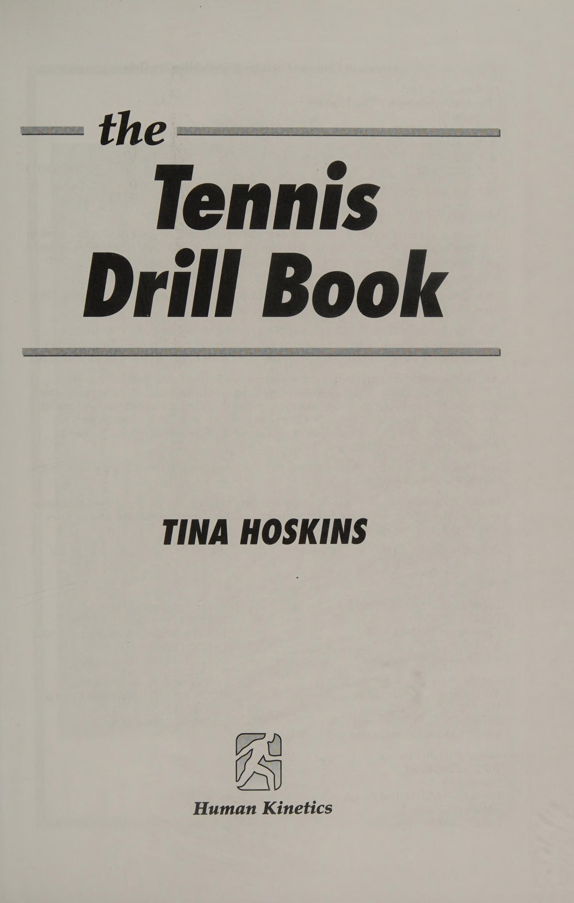
Hình 2: Sơ đồ bài tập đánh bóng cuối sân sâu — Mục tiêu khu vực 2 mét cuối sân và kiểm soát quỹ đạo bóng vòng xoay topspin.
Figure 2: Deep Groundstroke Target Drills — Depth target zones and topspin clearance drills.
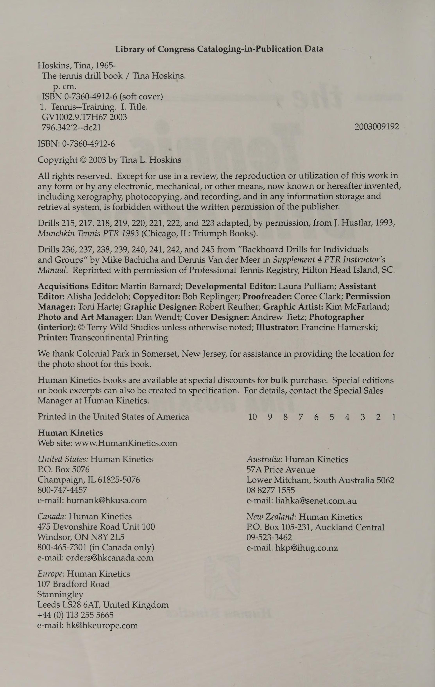
Hình 3: Sơ đồ bài tập điều bóng chéo sân và dọc dây — Phối hợp nhịp nhàng giữa tay đánh và người tiếp bóng (Feeder).
Figure 3: Crosscourt and Down-the-Line Groundstroke Drills — Synchronized feeding and directional patterns.
Bài Tập Bắt Lưới Vô-Lê: Khóa Cổ Tay, Bước Chặn & Chuyển Hướng Lực Volley Drills: Punch Volleys, Directional Control & Angle Deflection
: chương 3 = Cú vô lê Khi hai hoặc nhiều tay vợt đang tranh bóng qua lại trên lưới và một tay vợt đạt được mục tiêu giành quyền kiểm soát lưới bằng cách thực hiện một cú sút tiếp cận từ cú sút ngắn của đối phương, cú sút tiếp theo vào lưới sẽ là cú vô lê. Kỹ thuật của cú vô lê ít phức tạp hơn nhiều so với kỹ thuật thuận tay, trái tay và giao bóng vì động tác ít phức tạp hơn nhưng tính chính xác là vô cùng quan trọng. Cú bắt lưới (Volley) từng dễ dàng như đặt một chân trước chân kia. Kỹ thuật này không phức tạp như yêu cầu để đánh được những cú đánh trên mặt đất. Kỹ thuật vuốt bóng của cú vô lê cơ bản giống nhau ở hai bên cơ thể, ngoại trừ ở cú đánh trái tay, cũng như các cú đánh trên mặt đất, sự tiếp xúc phải xảy ra xa hơn về phía trước cơ thể so với cú đánh thuận tay. Tay vợt có thể đánh bóng bằng một hoặc hai tay trên cán vợt. Nhưng với độ xoáy và tốc độ quá cao của hầu hết các cú đánh, nó cần nhiều thứ hơn là một bước tách, bước chéo và một cú đấm ngắn, đột ngột. Những điều chỉnh cần thiết để thực hiện một cú vô lê quyết liệt phải nhanh chóng và chính xác. Một phần thiết yếu của cú vô lê quyết liệt là sử dụng kiểu cầm vợt kiểu lục địa và trong một số trường hợp là kiểu cầm vợt hoàn toàn kiểu phương Tây. Cả hai kiểu cầm cú bắt lưới (Volley) tiên tiến này đều giúp tay vợt đạt được tốc độ và độ xoáy đáng kinh ngạc. Chương này giải thích các phong cách, kỹ thuật và bài tập sẽ giúp tay vợt tích hợp thành công môn cú bắt lưới (Volley) vào trò chơi của mình.
Mô tả Không dành cho những kẻ hèn nhát, vũ khí thuận tay và trái tay hung hãn và mang tính tấn công này xuất hiện trong một cuộc biểu tình khi tay vợt bước vào khu vực được gọi là vùng đất của người không có người để thực hiện một cú đánh sâu trên mặt đất trên không. Sự khác biệt giữa cú đánh này và cú vô lê cổ điển là đầu vợt không được nâng cao quá cổ tay và cú đánh được đánh với độ xoáy cực lớn. Sẽ dễ dàng hơn khi coi cú đánh này như một cú đánh từ giữa sân được đưa lên không trung trước khi bóng nảy lên và chỉ đánh với tốc độ chóng mặt, độ xoáy lên và sự tự tin. Thực hiện Tay cầm phải từ nửa tây đến hoàn toàn tây. Khi di chuyển vào khu vực giữa sân để thực hiện cú đánh này, tay vợt không nên ngần ngại tiến về phía trước. Người thuận tay phải cố gắng thực hiện cú vô lê vung thuận tay nên cuộn vai, thân và hông trong khi di chuyển về phía trước. Họ đặt tay trái ra phía trước để theo dõi bóng và giữ trọng lượng và động lượng để di chuyển về phía trước. Khuỷu tay phải phải gần với cơ thể để rút ngắn thời gian vung vợt ra sau. Mặt vợt hơi khép lại, đỉnh đầu vợt thấp hơn cổ tay. Khi đã ở trong phạm vi đánh, tay vợt nên tiến lên và thả bóng vào, nhớ thả lỏng cổ tay để tạo ra nhiều xoáy lên cho cú đánh. Tay vợt nên tăng tốc khi tiếp xúc ở phía trước cơ thể và theo dõi hoàn toàn. Nếu họ đẩy bóng từ bên trong khu vực cuối sân, đối phương sẽ có một ngày thi đấu. Vì tính chất mạnh mẽ của kỹ thuật này nên sự tự tin là chìa khóa. Khuyến khích tay vợt không chần chừ khi đã nắm vững những điều cơ bản. Sau khi thực hiện cú vô lê xoay, các tay vợt tiến gần đến lưới để có thể trả bóng. Mẹo Tay vợt nên nhớ sử dụng kiểu cầm vợt bán Tây hoặc toàn Tây khi đánh bằng cú đánh này. Họ nên chắc chắn thực hành kỹ thuật này bằng cả thuận tay và trái tay. Có lẽ quan trọng nhất là phải tăng tốc! Không có gì phải bàn cãi, nếu bạn vỗ bóng hoặc đẩy bóng thì sau này bạn có thể sẽ “ăn” bóng. Sau khi thực hiện cú vô lê xoay, hãy áp sát vào lưới để có thể thực hiện cú đánh trả.
Andre Agassi Cú vô lê thuận tay bùng nổ ® es Q = O [e)a a) © Sinh ngày 29 tháng 4 năm 1970, Andre chuyển sang thi đấu chuyên nghiệp vào năm 1986 ở tuổi 16 và đứng thứ ba thế giới ở tuổi 18. Agassi chơi thuận tay phải và có cú đánh trái tay bằng hai tay chết người. Tôi tin rằng Andre đã biến cú đánh cực kỳ tiên tiến này thành một cú đánh chính thức và làm tăng mức độ phổ biến của nó. Chứng kiến cách anh ấy tấn công bất kỳ quả bóng nào là một cảnh tượng đáng chú ý, nhưng cách anh ấy tích lũy điểm để bước vào khu vực giữa sân và tung cú vô lê bất ngờ là một điều gì đó đặc biệt. Anh ấy không đánh bất kỳ kiểu vô lê nào; anh ta tung ra một cú vô lê vung thuận tay bốc khói chứa đầy xoáy lên cho một người chiến thắng đang khóc. Mặc dù nhận nhiều biệt danh xúc phạm trong sự nghiệp của mình, Agassi đã chứng minh những nghi ngờ của mình là sai khi vô địch US Open năm 1994. Sau khi phẫu thuật cổ tay, bỏ đồ ăn vặt và thuê Brad Gilbert làm huấn luyện viên mới, Agassi đã vượt qua giải đấu năm 1994, chơi thứ quần vợt hay nhất trong đời mình. Anh ấy đã đánh bại năm tay vợt có thứ hạng cao hơn anh ấy, điều mà chưa ai làm được trong khoảng 40 năm. Sau khi Andre hạ gục Michael Stich trong trận chung kết đánh đơn, anh tiếp tục đánh bại Pete Sampras ở giải Úc mở rộng 1995. Tôi đoán rằng tất cả những buổi tập luyện với Bjorn Borg, Ilie “Nasty Boy” Nastase và Bobby Riggs đã được đền đáp.
22—KỸ THUẬT TIẾP CẬN-BÓNG CHUYỀN Mô tả Quả vô lê tiếp cận có thể được đánh ở hai bên của tôi cơ thể, thuận tay hoặc trái tay. Cú vô lê tiếp cận đôi khi được gọi là cú vô lê chuyển tiếp vì khi tấn công vào lưới, các tay vợt có thể phải đối mặt với cú vô lê đầu tiên mà họ không ở đúng vị trí hoặc chưa sẵn sàng kết thúc điểm. Tay vợt thường gặp phải tập này; ley ở đường dây dịch vụ trong khi tôi sf TM cố gắng tính điểm vào lưới sau khi trả giao bóng hoặc sau khi họ giao bóng và cố gắng lao vào lưới. Thực hiện Cú vô lê tiếp cận re- = yêu cầu cách cầm vợt ngay lập tức " chuyển sang kiểu cầm vợt lục địa : cách cầm. Khi đến gần lưới, tay vợt nên tách bước để cơ thể không di chuyển và đánh trong khi chạy. Họ nên bước vào cú đánh, giữ hông và đầu gối cúi xuống, giữ đầu ổn định trong suốt cú đánh và tung cú đánh vô lê ra phía trước cơ thể. Tay vợt nên sử dụng sức mạnh của đối phương, giữ vững thế chân vững chắc và hướng bóng dọc theo đường biên hoặc nếu ở giữa sân thì hướng xuống giữa sân. Họ áp sát và tìm cách kết thúc điểm bằng cú vô lê. Một cú vô lê tiếp cận đòi hỏi sự cân bằng và thời gian hoàn hảo. Tay vợt có thể thực hành một loạt cú giao bóng và cú vô lê tiếp cận hoặc trả giao bóng và di chuyển lên để đánh cú đánh tiếp theo như một cú vô lê tiếp cận. Họ nên thử 25 quả chuyền giao bóng và tiếp cận cũng như 25 quả trả giao bóng và tiếp cận. Mẹo Bài tập này giúp tay vợt luyện tập thêm về bước tách bóng hoặc kiểm tra tạm dừng trước khi họ thực hiện cú vô lê tiếp cận và giúp phát triển cảm giác áp sát vào lưới trong cú vô lê dứt điểm.
23—KỸ THUẬT BÓNG CHUYỀN CAO Mô tả Đây là cú vô lê từ trên cao hay cú vô lê cao? Nó ở đâu đó ở khoảng giữa. Thực hiện ở hai bên, thuận tay hoặc trái tay, một lỗi phổ biến ở cú vô lê thuận tay hoặc trái tay cao là vung vợt vào nó. Khi các tay vợt ở vị trí trên lưới, họ phải thực hiện cú vô lê này. Họ phải cẩn thận khi thực hiện cú đánh lén này, nếu không sẽ đánh bật quả bóng ra khỏi sân quần vợt. Thực hiện Tay vợt chiếm một vị trí trên lưới và một đối tác luyện tập sẽ chiếm một vị trí phía sau đường giao bóng hoặc đường cuối sân đối diện. Khi học cách xác định cú vô lê cao, tay vợt nên luân phiên chơi những cú vô lê thấp, những cú vô lê ngang vai và sau đó là những cú vô lê cao để có thể tiếp cận mà không cần phải lùi lại hoặc nhảy mạnh. Họ nên cố gắng thực hiện 50 cú vô lê thấp, 50 cú vô lê ngang vai và 50 cú vô lê cao, xen kẽ giữa cú vô lê thuận tay và trái tay. Sau đó, họ nên thử thực hiện một loạt 150 cú vô lê xen kẽ, tập trung di chuyển về phía trước để có thể thực hiện thành công cú đánh. Họ nên giữ chặt tay cầm, cổ tay giơ cao và tay trái đưa ra phía trước để giữ thăng bằng (nếu thuận tay phải). Tay vợt sau đó đấm hoặc chặn bóng tới. Mẹo Tay vợt nên giữ vợt ở vị trí cao trên cổ tay và khóa cổ tay để giữ vợt ở đúng vị trí. Tay vợt nên giữ bàn tay không đánh của mình duỗi ra phía trước và dứt điểm vào bàn tay đó sau khi họ thực hiện cú vô lê, bắt chước động tác vỗ tay. Hành động này hỗ trợ sự cân bằng và theo dõi của quả bóng, đồng thời sẽ giữ cho cú đánh bóng cao ngắn, ngọt ngào và sắc nét.
24—TÁCH TÁC BƯỚC Mục tiêu Bài tập này giúp tay vợt có được hình thức chuyền bóng tốt, học cách dự đoán cú đánh tiếp theo của đối thủ và phản ứng tích cực. Mô tả Để thực hiện bước tách bóng, tay vợt chụm hai chân lại trong giây lát khi xác định hướng sút của đối phương. Thực hiện Tay vợt quan sát vị trí vai của đối thủ cũng như tốc độ và hướng di chuyển. Sau đó, các đấu thủ tách bước sao cho chân chạm sân khi đối phương đánh bóng. Điều quan trọng là tìm hiểu xem đối thủ sẽ chuyền dọc, đánh chéo sân hay lốp bóng. Nếu tay vợt đánh thuận tay của đối phương, người đó sẽ chạy song song với lưới với vai sang một bên và chuẩn bị thực hiện một cú sút dọc biên. Nếu di chuyển nhanh, tay vợt có thể đánh một cú lốp bóng (Lob) vì sẽ không thể tạo ra lực. Trong cú đánh tiếp cận ngắn hoặc cú vô lê đầu tiên, đối thủ sẽ tiến về phía trước với cú đánh chéo góc nhọn bằng vai dẫn đầu. Có khả năng sẽ có một cú đánh chéo sân. Khi đối phương lùi lại để che một cú đánh sâu, tay vợt nên lùi lại để che chắn vì cú đánh của đối phương sẽ đủ yếu để tay vợt áp sát và tung ra cú vô lê chiến thắng. 25 —CHỈ ĐIỂM KHÔNG TRẢ LẠI Mục tiêu Tính điểm không nảy khuyến khích lối chơi quyết liệt sẽ củng cố các kỹ thuật chuyền bóng được sử dụng trong đánh đôi hoặc đánh đơn. Bài tập này tạo ra sự tự tin và dự đoán cực kỳ cao về các cú đánh, và nếu tay vợt thích bài tập này nhiều như các học trò của tôi, nó sẽ tạo ra những con quái vật nhỏ! Mô tả Khi chơi đơn hoặc đôi, tay vợt chỉ có thể ghi điểm bằng cách đánh một cú vô lê dưới bất kỳ hình thức nào hoặc một cú đánh qua đầu. Bóng có thể nảy lên để ghi điểm, nhưng tay vợt chỉ ghi được điểm nếu họ đưa bóng lên không trung. Thi hành Tay vợt chơi một ván đơn thông thường và giao bóng tại sân mà họ đang giao bóng cho đến khi giành được điểm đầu tiên. Tay vợt phải tiếp tục giao bóng cho đến khi thắng ván giao bóng. Trò chơi đầu tiên có thể mất tới 10 phút. Tay vợt có thể chơi cả bộ theo cách này. Biến thể Tay vợt có thể chơi tiebreak 12 điểm hoặc đánh đôi bằng phương pháp này.
Mục tiêu Bài tập này cải thiện hành động phản xạ trên lưới, động tác bằng chân, sự khéo léo và sự tự tin khi tấn công lưới. Tay vợt học cách tạo ra và nhận ra các cơ hội tấn công và thành công trên lưới. Mô tả Cú xoay người này sẽ mài giũa kỹ năng tấn công của các tay vợt và buộc họ phải tiếp cận lưới vì họ không thể ghi điểm trừ khi thực hiện cú vô lê thành công. Tay vợt thực thi A được đặt ở trung tâm đường dịch vụ và tay vợt B được đặt ở trung tâm đường dịch vụ đối diện. Tay vợt A bắt đầu điểm bằng cách thả bóng cho tay vợt B. Mỗi tay vợt giao bốn điểm hoặc toàn bộ trận đấu tính điểm thông thường. Bóng chỉ có thể nảy khi giao bóng. Tay vợt chỉ giành được điểm bằng cách thực hiện cú vô lê, cú vô lê xoay hoặc qua đầu. Máy chủ chuyển đổi sau mỗi trận đấu hoặc mỗi điểm thứ tư và chơi 16 điểm không thoát. Biến thể Tay vợt định vị mình trên đường cuối sân, giao bóng theo cách thông thường để bắt đầu điểm. Họ có thể chơi đôi bằng kỹ thuật này. Mẹo Giao bóng và bắt vô lê là chiến thuật tấn công giúp tay vợt nhanh chóng lên lưới để dứt điểm và giành điểm. Đôi tay nhanh nhẹn và đôi chân nhanh nhẹn tạo ra những cú vô lê sắc nét, ngọt ngào.
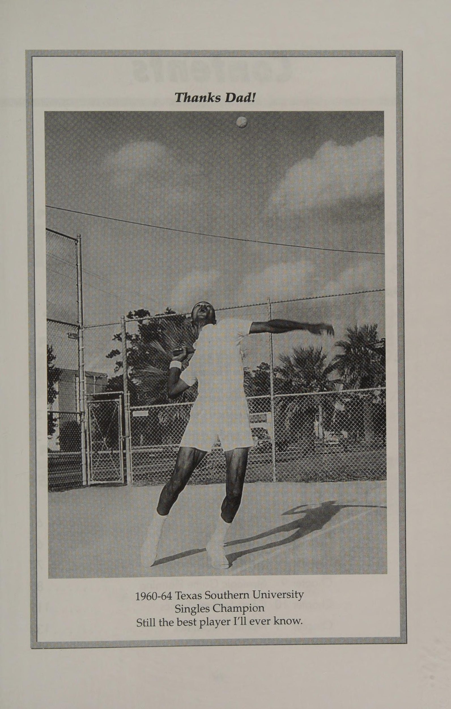
Hình 4: Sơ đồ bài tập bắt lưới vô-lê — Khóa cổ tay vững chắc, bước chân đối diện đón bóng và góc chặn bóng ngắn.
Figure 4: Net Volley Punch Drills — Firm wrist block, forward step, and angle deflection.
Bài Tập Giao Bóng & Trả Giao Bóng: Điểm Rơi Mục Tiêu & Nhịp Điệu Serves and Returns Drills: Target Accuracy, Spin & Split-Step Timing
chương 4 = Giao bóng và Trả lại Một trăm năm mươi dặm một giờ! Ồ, âm thanh tuyệt vời phải không? Trong một trận đấu lớn, không có cú đánh nào quan trọng hơn cú giao bóng, cú đánh đưa bóng vào cuộc. Cú giao bóng có thể là một vũ khí tấn công quan trọng. Ví dụ, một cú giao bóng rộng được đặt đúng vị trí ở phía thuận tay hoặc trái tay sẽ kéo đối phương ra khỏi sân và mở tỷ số cho người thắng bằng cú vô lê dễ dàng. Thật không may, nhiều tay vợt dành ít thời gian để phát triển cú đánh quan trọng này. Những người giao bóng thành công nhất trong giải đấu chuyên nghiệp đã bỏ ra hàng nghìn giờ để luyện tập mọi thứ từ tung, đứng, uốn người, bật lên và thực hiện cú giao bóng của họ cho đến thử nghiệm cách cầm vợt. Do đó, tất cả họ đều sử dụng một kỹ thuật tương tự giúp họ tạo ra những vòng quay và tốc độ không thể tin được. Bằng cách sắp xếp cơ thể của họ dưới cú ném và nghiêng mình như thể họ đang ném một cú ném lên cao với một cú đánh mạnh tới quả bóng, họ nghiêng người vào sân bằng toàn bộ trọng lượng cơ thể và búng cổ tay để tạo ra sức mạnh như sấm sét. Bất kể trình độ của tay vợt hay phong cách chơi, cú giao bóng có thể là chìa khóa quan trọng quyết định kết quả của một trận đấu cạnh tranh chặt chẽ. Tay vợt nên hoàn thiện từng bước nhỏ từ ném bóng, gập đầu gối, phóng và búng cổ tay cho đến vị trí giao bóng thường bị bỏ qua. Cú giao bóng là cú đánh duy nhất trong quần vợt mà tất cả tay vợt đều có toàn quyền kiểm soát và tuyệt đối, vì vậy hãy sử dụng nó một cách khéo léo! Điều chỉnh đầu tiên và quan trọng nhất mà tay vợt phải thực hiện để học kỹ thuật giao bóng chính xác là cách cầm vợt, giúp hỗ trợ cổ tay của tay vợt khi họ học chuyển động giao bóng cơ bản. Áp dụng độ xoáy vào cú giao bóng sẽ giúp tay vợt kiểm soát bóng và đưa tỷ lệ giao bóng vào cuộc cao hơn. Những người giao bóng tốt cũng biết rằng điểm tiếp xúc ra lệnh cho cú giao bóng thành công và rằng bằng cách thay đổi điểm tiếp xúc, họ có thể đạt được các kiểu giao bóng khác nhau.
giao bóng và xoay tròn. Tay vợt có thể sử dụng phương pháp đồng hồ như một công cụ để so sánh trực quan vị trí tung bóng (xem sơ đồ đồng hồ sau). Ví dụ này dành cho người thuận tay phải; người thuận tay trái sử dụng mẫu ngược lại. Topspin Trước khi nắm vững các kỹ thuật của những người giao bóng thành công nhất, trước tiên tay vợt phải tìm hiểu các nguyên tắc cơ bản về cú đánh, vị trí nhất quán, độ sâu, độ xoáy, động tác bằng chân và sức mạnh. Độ chính xác có được từ quá trình luyện tập cường độ cao là nền tảng quan trọng trong việc hoàn thiện bất kỳ kiểu giao bóng nào. Để phát triển một cú giao bóng thành công sẽ mất nhiều giờ luyện tập, luyện tập lặp đi lặp lại và chơi những trò chơi thú vị, không áp lực. Bởi vì cú giao bóng rất quan trọng nên tay vợt phải dành nhiều thời gian nhất có thể để hoàn thiện nó.
27 — KỸ THUẬT giao bóng phẳng Mô tả Giao bóng phẳng là chuyển động giao bóng cơ bản. Việc thiết lập cho cú giao bóng này là nền tảng cho những cú giao bóng nâng cao hơn. Khi được đặt chính xác, cú giao bóng phẳng thường mang lại kết quả là người thắng giao bóng, trả giao bóng yếu hoặc quân át! Sự đánh đổi là nó cung cấp ít quyền kiểm soát hơn. ~ Thực hiện _ Tay vợt vào tư thế ở vạch cuối sân, hai chân rộng bằng vai. Chân trước nghiêng một góc 45 độ so với đường cơ sở, chân sau song song với nó. Hai tay thả lỏng và ở ngang eo. Tay vợt cầm bóng nhẹ bằng tay trái bằng các đầu ngón tay và sử dụng cách cầm vợt phía đông. Với bóng hướng lên trong lòng bàn tay, tay vợt hạ cánh tay xuống, đồng thời thu vợt lại và chuyển trọng lượng sang chân sau. Trong khi đưa tay lên ném bóng, tay vợt tiếp tục di chuyển vợt về phía sau. Khi kết thúc động tác backswing, họ thả bóng với cánh tay tung bóng mở rộng hoàn toàn và các đầu ngón tay hướng lên trên. Mặt vợt tiếp xúc trực tiếp với phía sau quả bóng. Người thuận tay phải đánh bóng khi ném ở vị trí một giờ. Người thuận tay trái sử dụng vị trí mười một giờ. Khi cú vung về phía trước bắt đầu, trọng lượng cơ thể chuyển về phía trước. Khi tay vợt hoàn thành việc chuyển trọng lượng, họ đánh bóng đồng thời xoay vai và hông về phía trước để tăng thêm sự uyển chuyển và sức mạnh. Để tăng thêm tốc độ, họ tăng tốc cổ tay bằng cách bẻ khóa tiếp xúc. Tay vợt thực hiện theo bằng cách đánh lên và ra, sau đó để đầu vợt đi ngang qua cơ thể sang trái. Mẹo Để thiết lập nhịp điệu, tay vợt có thể tự nói “Quăng” khi thả bóng và “Đánh” khi tiếp xúc.
28 —KỸ THUẬT PHỤC VỤ SLICE Mô tả Cú giao bóng cắt mang lại cho tay vợt nhiều độ xoáy và khả năng kiểm soát hơn so với cú giao bóng phẳng nhưng ít lực hơn. Độ nảy thấp và cong ra xa đối thủ theo cùng hướng với cú xoáy. Tay vợt thực hiện cú giao bóng bằng mặt vợt tiếp xúc ở vị trí 2 giờ đối với người thuận tay phải và ở vị trí 10 giờ đối với người thuận tay trái. Vết cắt được tạo ra bằng cách tiếp xúc với mặt sau của quả bóng, trong trường hợp này là mặt vợt di chuyển từ trong ra ngoài theo đường chéo khi nhìn từ phía sau. Khi bóng chạm sân, đối với người thuận tay phải, nó sẽ đá sang trái và sẽ ở vị trí thấp hơn so với cú giao bóng xoáy lên hoặc giao bóng phẳng. Thực hiện Tay vợt tự đặt mình vào vị trí giao bóng phẳng và phản ánh các bước họ thực hiện khi giao bóng phẳng. Khi thực hiện một cú giao bóng cắt lát, tay vợt sẽ tiếp xúc bằng cách đánh vào phần trên cùng bên phải của quả bóng. Họ đặt vật ném ra phía trước và hơi chếch về bên phải của cơ thể ở hướng hai giờ (mười giờ đối với người thuận tay trái). Sau khi đánh bóng ở điểm cao nhất, họ hoàn thành bước tiếp theo: = Mẹo Nếu tay vợt gặp khó khăn trong việc phòng thủ trước một cú giao bóng cắt hoặc xoáy, hãy kiểm tra vị trí sân của họ khi họ thực hiện kiểu giao bóng trơn trượt này. Tay vợt có thể đứng quá xa về bên trái, gần trung tâm đường giao bóng (T) của sân giao bóng deuce, điều này mở ra cho họ một cú giao bóng cắt lát hoặc xoay rộng về phía thuận tay nếu họ thuận tay phải hoặc trái tay nếu họ thuận tay trái. Thật không may, nhiều tay vợt không dành đủ thời gian để phát triển cú giao bóng chứ đừng nói đến cú giao bóng xoáy. Đây là phần quan trọng nhất của toàn bộ trò chơi. Tay vợt nên dành nhiều thời gian hơn để phát triển một cú giao bóng xoáy chắc chắn, cú đánh bắt đầu tất cả các điểm, trận đấu và trận đấu.
Mô tả Cú giao bóng này mang lại nhiều khoảng trống và độ xoáy hơn, giúp giảm thiểu các lỗi kép và khiến đối thủ mất thăng bằng. Cú giao bóng xảy ra khi mặt vợt lướt vào mặt sau của quả bóng với cổ tay bật ra theo chuyển động từ trái sang phải (ngược lại đối với người thuận tay trái). Thực hiện Tay vợt tự đặt mình ở vị trí cuối cùng ở vị trí giao bóng phẳng. Thiết lập này phản ánh cú giao bóng phẳng với một chút thay đổi. Cú đánh lên và điểm tiếp xúc với quả bóng là khác nhau. Tay vợt vuốt mặt sau của quả bóng trong khi búng cổ tay lên và ra ngoài theo chuyển động từ trái sang phải, nếu thuận tay phải. Việc ném phải được đặt ở vị trí mười hai giờ ngay phía trên đầu. Vị trí này cung cấp đủ khoảng trống thực tế, để lại một chút sai sót. Tay vợt nên nhớ tiếp tục động tác bắt bóng hoặc quét bóng sau khi đánh bóng để tạo khoảng trống cho lưới bóng và xoáy lên khiến bóng bật lên và vượt qua đầu đối phương. Mẹo Có tất cả các loại biến thể trong động tác vung vợt ngược—từ mức độ thả đầu vợt thấp đến mức độ cao phía trên đầu tay vợt nên ngăn đầu vợt rơi xuống. Dù thế nào đi nữa, tay vợt cũng phải có thời gian và chuyển động chính xác để giao bóng thành công. Tay vợt nên giữ tinh thần thoải mái từ khi bắt đầu giao bóng cho đến khi chạm bóng và kết thúc. Nếu tay vợt thắt chặt cơ thể tại bất kỳ thời điểm nào trong giai đoạn tiến triển của chuyển động giao bóng, họ đang cản trở năng lượng tiềm tàng của mình đi qua vợt và vào bóng. Điều này tương đương với việc không có lực trong cú giao bóng. Tay vợt nên coi cánh tay của mình như sợi mì spaghetti hoặc roi lỏng lẻo khi truyền thế năng lên và ra ngoài qua vợt và vào bóng.
Patrick Rafter Skunky Kick Serve 30 tuổi, cao 6 feet 1, nặng 190 pound, thuận tay phải. Patrick Rafter dựa vào cú giao bóng của mình để khiến trò chơi giao bóng và vô lê của anh ấy hét thẳng vào mặt đối thủ, "Hãy bắt tôi nếu bạn có thể!" Được mệnh danh là tay vợt tennis i @=—S “đấng tối cao” bởi hàng triệu phụ nữ trẻ trên khắp thế giới, Rafter sinh ra ở Mount Isa, Queensland, Australia. Được đặt biệt danh trìu mến là “Skunky” hay “Pat”, anh bắt đầu chơi quần vợt từ năm 5 tuổi. Sau khi tốt nghiệp trung học và chuyển sang thi đấu chuyên nghiệp vào năm 1991, Patrick và anh trai Geoff đã đi khắp châu Âu chơi giải vệ tinh trong vài năm trước khi Patrick giành chức vô địch Grand Slam đầu tiên vào năm 1997 tại Giải Mỹ mở rộng, đánh bại & Greg Rusedski trong bốn set, 6-3, * 2, 4-6, 7-5. Năm 1998, anh vô địch 5 giải đấu hàng đầu liên tiếp trước khi trở lại Hoa Kỳ để bảo vệ danh hiệu của mình tại 1998 US Open. Úc đã sản sinh ra một số tay vợt vĩ đại nhất thế giới, bao gồm Rod Laver, Ashley Cooper, Lew Hoad, Ken Roswall, Fred Stolle, John Newcombe và Pat Cash, nhưng Patrick “Skunky” Rafter đã được tôn vinh là tay vợt đánh đơn vĩ đại nhất của Úc kể từ John Newcombe. Một trong những khoảnh khắc khó quên nhất trong sự nghiệp của Rafter xảy ra vào năm 1997, khi sau khi thua một giải đấu ở Pháp, anh đã trả lại phí thi đấu vì cảm thấy mình làm không tốt. Theo cách nói của anh ấy, “T đã không làm tốt công việc, vậy tại sao tôi phải được trả tiền cho việc đó?” Pat là một tay vợt thực sự tin rằng nhiệm vụ của anh ấy trong cuộc sống là đưa vào nhiều hơn lấy ra. Patrick hiện đã nghỉ hưu, lướt sóng và lái xe máy quanh nhà ở Bermuda cùng con trai. © Thể thao Thư viện
30—Kỹ thuật giao bóng đẩy lực đẩy Mô tả Cú giao bóng này là cú giao bóng phẳng cơ bản với một số động tác bằng chân mạnh mẽ. Trong khi ném bóng và chuyển trọng lượng cơ thể về phía trước, tay vợt bước lên vạch cuối sân bằng chân sau và phóng lên và vào bóng bằng cả hai chân. Hành động này giúp tạo ra một cú giao bóng cực kỳ mạnh mẽ. riba \N Thực thi ~ Tay vợt vào vị trí ở đường cơ sở hoặc trung tâm đường giao bóng (T) và bắt đầu từ vị trí sẵn sàng giao bóng tự nhiên. Họ phản chiếu các bước của cú giao bóng phẳng nhưng sau khi chuyển trọng lượng cơ thể về phía trước, họ đồng thời bước lên bằng chân sau trong khi tung bóng, đặt bàn chân sau cạnh bàn chân dẫn đầu, uốn cong cả hai đầu gối và phóng lên và ra ngoài bằng hai chân. Trình tự này tạo ra sức mạnh khủng khiếp từ phần thân dưới. Tay vợt tấn công bóng ở đỉnh điểm của cú ném để phá lưới và kiểm soát, sau đó tiếp đất bằng chân dẫn đầu. Họ hoàn thành việc theo dõi và phục hồi. i Độ chính xác của cú tung bóng đặc biệt quan trọng khi thêm động tác bằng chân ưa thích vào cú giao bóng. Sau khi tay vợt ném bóng, về cơ bản nó vẫn đứng yên, nhưng cơ thể sẽ chuyển động khắp nơi. Do đó, tay vợt phải đặt vật ném ở cùng một vị trí mỗi lần ném. Họ phải tập ném bóng ít nhất bằng với việc tập giao bóng, nếu không muốn nói là nhiều hơn. Một cách tuyệt vời để học cách thực hiện cú giao bóng là ngồi hoặc quỳ trên đường cuối sân hoặc đường giao bóng cạnh tâm (T). Kiểu định vị này buộc tay vợt phải thực sự đưa đầu vợt lên cao và đi vào bóng trước khi vung vợt ra khu vực sân giao bóng. Những tay vợt mong muốn cú giao bóng có tốc độ và độ sâu hơn nên cố gắng thở ra để giúp ngăn chặn một cú đánh bị nghẹt thở và tăng tốc và xuyên qua quả bóng một cách trơn tru.
31 —Kỹ thuật giao bóng khởi động SQUAT Mô tả Chuyển động giao bóng tích cực này sẽ bổ sung thêm một chút ớt cay vào chuyển động giao bóng cơ bản. Đối với những tay vợt thích trọng lượng của họ ở dưới họ và hai chân của họ gần nhau thì đây là cú giao bóng. Đó là một phong cách giao bóng bùng nổ cho phép tay vợt tận dụng tối đa phần thân dưới của mình trong quá trình chuyển động giao bóng. Việc sử dụng phần thân dưới này chính là điều mang lại sức mạnh cho động tác squat. >» Thực thi . Đây là một sự bổ sung thú vị cho chuyển động giao bóng cơ bản. Tay vợt theo dõi tôi thủ tục giao bóng phẳng nhưng trong quá trình vung vợt về phía sau, họ uốn cong đầu gối, tung ra quả bóng của bàn chân, có lõi và đánh bóng. Họ đồng thời ném bóng và uốn cong đầu gối thành tư thế nửa cúi người. Họ bắt đầu thực hiện động tác vung vợt về phía trước và phóng bóng bằng cả hai chân. Khi tiếp xúc, cơ thể phải duỗi thẳng hoàn toàn, vai và hông phải xoay về phía trước khi giao bóng, và bàn chân phải nhô lên khỏi mặt đất vài inch chứ không phải bàn chân. Tay vợt tiếp đất bằng chân dẫn đầu và hoàn thành phần tiếp theo. Sự kết hợp của các bước này tạo ra một cú giao bóng bùng nổ và do đó là một kỹ thuật tuyệt vời mà bất kỳ tay vợt nào cũng nên có trong tiết mục của mình. Mẹo Bất kể phong cách nào, cú giao bóng là cú đánh phức tạp nhất trong quần vợt và cú đánh mang lại mức độ khác biệt cá nhân lớn nhất. Đối với các kiểu giao bóng nâng cao hơn, tay vợt phải học cách sử dụng chân, hông, vai, xoay thân và búng cổ tay để tạo ra những cú giao bóng mạnh mẽ và quyết liệt. Tay vợt cũng phải nhớ giao bóng có mục tiêu trong đầu - không giao bóng mù quáng. Tay vợt nên trở thành những người giao bóng khó đoán bằng cách di chuyển bóng xung quanh trong ô giao bóng, ngẩng cao đầu và quan sát vợt của họ tiếp xúc với bóng.
Mô tả Cú giao bóng này là chuyển động giao bóng phẳng cơ bản hoặc tự nhiên với động tác bằng chân lạ mắt để mang lại nhiều độ xoáy, sức mạnh hơn và vị trí tuyệt vời. Việc giao bóng đòi hỏi phải có thời gian và sự cân bằng tốt. Thực hiện Tay vợt định vị mình ở đường cơ sở cạnh tâm (T) và bắt đầu ở tư thế giao bóng phẳng. Tay vợt bắt đầu vung về phía trước trong khi uốn cong đầu gối và đồng thời chuyển trọng lượng cơ thể về phía trước. Sau khi hoàn thành việc chuyển trọng lượng, họ tung chân dẫn đầu và đánh bóng ở đỉnh điểm của cú ném để có sức mạnh và khả năng kiểm soát tối đa. Tay vợt đá chân dẫn về phía sau, kéo chân sau về phía trước rồi tiếp đất. Họ đưa chân sau về phía trước khi tiếp xúc với bóng và hoàn thành động tác theo sau để thu hồi. Mẹo Kiểu cầm vợt lục địa là kiểu cầm được ưa thích cho cú giao bóng chéo vì nó cho phép tay vợt sử dụng tốc độ đầu vợt hiệu quả hơn và giúp tạo ra siêu xoáy khiến kiểu giao bóng này trở nên độc đáo. 33—PHỤC VỤ BẰNG BẰNG Mục tiêu Bài tập này giúp củng cố độ bám và động tác bằng chân cần thiết cho kỹ thuật giao bóng phẳng. Mô tả Tay vợt học cách tạo ra nhiều tốc độ và sức mạnh hơn bằng cách sử dụng kỹ thuật giao bóng phẳng này. Thực hiện Để có được tốc độ cao hơn với cú giao bóng phẳng, tay vợt vào vị trí cách vạch giao bóng vài feet. Họ giao bóng vào ô giao bóng bằng cách sử dụng cách cầm giao bóng phẳng (một giờ đối với người thuận tay phải và 11 giờ đối với người thuận tay trái) và ném bóng đúng. Tay vợt luyện tập tăng tốc độ đầu vợt bằng cách tăng tốc lên và vào bóng rồi ra ngoài mục tiêu mà mình đã thiết lập. Các quả giao bóng đi tới tất cả các khu vực mục tiêu—xuống giữa, xuống giữa và vào góc xa trong cả hai ô giao bóng. Bàn chân đứng yên ngoại trừ bàn chân sau nhấc lên bằng ngón chân trong và sau khi tiếp xúc với bóng. Mặt vợt tiếp xúc trực tiếp với phía sau bóng. Tay vợt giao bóng vào các mục tiêu sử dụng 75% sức mạnh và hoàn thành nhiệm vụ theo dõi. Tung bóng và giữ thăng bằng là hai thành phần thiết yếu để thực hiện một cú giao bóng hiệu quả, bất kể phong cách nào.
34—DỊCH VỤ SLICE Mô tả Bài tập này giúp tay vợt thực hiện một lát hoặc xoáy ngang lên bóng. Giống như cú giao bóng sức mạnh phẳng, cú giao bóng cắt lát có thể là một vũ khí giao bóng tấn công. ; Thực hiện Tay vợt vào vị trí ở đường giao bóng và đứng ở vị trí giao bóng phẳng. Sử dụng cách cầm vợt hình bán nguyệt, họ ném bóng về phía trước và chếch sang phải một chút nếu thuận tay phải, đồng thời xoay vai đánh sang hướng đồng thời chuyển trọng lượng lên chân dẫn đầu (trái). Họ giữ khuỷu tay đánh cao hơn vai đánh khi đầu vợt rơi sâu vào vị trí ném. Với trọng lượng chuyển về phía trước và cơ thể hướng lên trên khi đầu gối duỗi thẳng, họ ném mép đầu vợt vào quả bóng trong khi nghiêng cổ tay (xoay cổ tay và cẳng tay lại với nhau), vai và hông cùng một lúc. Sự tiếp xúc với bóng xảy ra vào lúc hai giờ và đầu vợt tăng tốc khi tiếp xúc. Đầu vợt, không phải cánh tay hay khuỷu tay, phải dẫn dắt cú đánh xuống. Tay vợt không được ném bóng quá xa về bên phải khi thực hiện các cú giao bóng cắt lát vì làm như vậy sẽ tạo ra độ xoáy và độ cao quá lớn cho quả bóng. Sau đó tay vợt hoàn thành phần tiếp theo. 35—PHỤC VỤ KICK Mô tả Bài tập này giúp tay vợt học cách thực hiện một cú giao bóng hiệu quả. Một khi đã thành thạo, cú giao bóng này cực kỳ đáng tin cậy vì xoáy tạo ra một đường bay chìm cho phép độ hở lưới cao. Cú giao bóng này cũng là một vũ khí tấn công mà tay vợt có thể sử dụng cho lần giao bóng đầu tiên. Thực hiện Tay vợt đặt mình trên đường giao bóng trong tư thế giao bóng phẳng. Một số mục tiêu được thiết lập ở bất kỳ đâu bên trong một trong các hộp dịch vụ. Tay vợt tung bóng trong khoảng thời gian từ 12 giờ đến 1 giờ để đạt được sự cân bằng hợp lý với cú giao bóng. Nếu tay vợt có khả năng giữ thăng bằng kém trong quá trình giao bóng, cú ném có thể sẽ ở quá xa về bên trái và phía sau họ. Họ bắt đầu vung vợt xuống và xoay vai đánh trong khi ném bóng. Khi trọng lượng của họ chuyển về phía trước lên bàn chân dẫn đầu, cả hai đầu gối đều uốn cong và đầu vợt đồng thời hạ xuống phía sau đầu. Tay vợt đẩy cơ thể lên trên đồng thời ném đầu vợt lên trên và đánh vào phía sau quả bóng. Họ búng cổ tay lên và về phía trước để mặt vợt tiếp xúc với bóng một cách sắc nét. Sau khi hoàn thành động tác bắt bóng, vợt rời bóng và bay vòng cung lên và ra ngoài về bên phải khi chân sau vung qua đường giao bóng. Tay vợt hoàn thành cú đánh tiếp theo với vợt đi xuống phía bên phải của cơ thể. Bàn chân sau bước xuống bên trong sân. Những người gặp khó khăn khi thực hiện cú đá vào bóng nên đánh từ trái sang phải với tư thế quay sấp, nhớ sử dụng chân và thực sự tăng tốc đầu vợt. &
a id Mục tiêu Bài tập này giúp tay vợt học cách sử dụng chân của mình để tạo ra những cú giao bóng mạnh mẽ. Mô tả Chuyển động dịch vụ phóng lực đẩy là chuyển động dịch vụ phẳng cơ bản với một số động tác bằng chân lạ mắt để giúp tạo ra sức mạnh. Thực hiện Tay vợt bắt đầu ở tư thế giao bóng tự nhiên (tư thế giao bóng phẳng), đứng trên vạch giao bóng và giữ hai chân rộng bằng vai một cách thoải mái để giữ thăng bằng tối đa và nền tảng vững chắc. Trong khi tung bóng và chuyển trọng lượng về phía trước, họ bước lên vạch giao bóng bằng chân sau và uốn cong cả hai đầu gối vì họ phải lao vào cú giao bóng này. Sử dụng cách cầm vợt hình bán nguyệt, họ quất đầu vợt xuyên qua quả bóng. Họ ngồi thực hiện cú ném và sau đó lao lên và chạm vào quả bóng bằng cả hai chân. Hành động này sẽ tạo ra sức mạnh to lớn. Trước tiên, tay vợt nên thực hành kiểu động tác bằng chân này mà không có bóng và vợt để có được cảm nhận và thời điểm tung lực đẩy. Biến thể Tay vợt nên luyện tập bằng cách định vị mình ở đường cuối sân và từ từ bắt đầu phối hợp chuyển động xoay người với việc sử dụng chân sao cho bàn chân trái tiếp đất tốt bên trong đường cuối sân. Cuối cùng, họ sử dụng chân và kết hợp tốc độ đầu vợt với lực đẩy. 37 —DỊCH VỤ RA MẮT SQUAT Mục tiêu Bài tập này giúp tay vợt học cách sử dụng chân, hông, vai, xoay thân và búng cổ tay để tạo ra những cú giao bóng mạnh mẽ. Mô tả Chuyển động giao bóng này bổ sung thêm hạt tiêu vào chuyển động giao bóng cơ bản bằng cách cho phép tay vợt sử dụng phần thân dưới ở mức tối đa trong chuyển động giao bóng. Thực hiện cú giao bóng này đòi hỏi độ chính xác cao, vì vậy việc luyện tập trước tiên phải diễn ra mà không cần vợt hoặc bóng. Tay vợt vào vị trí ở tâm đường cơ sở (T), bắt đầu ở tư thế giao bóng tự nhiên hoặc cơ bản. Bàn chân dẫn đầu phải ở một góc 45 độ so với đường cơ sở, nếu thuận tay phải và bàn chân sau song song với đường cơ sở. Cánh tay phải ngang với thắt lưng, giữ bóng nhẹ bằng các đầu ngón tay của bàn tay ném. Tay vợt đồng thời tung bóng và gập đầu gối vào tư thế ngồi xổm. Họ bắt đầu thực hiện động tác vung vợt về phía trước và phóng ra khỏi quả bóng bằng bàn chân. Khi tiếp xúc, cơ thể phải duỗi thẳng hoàn toàn, đồng thời xoay vai và hông để thực hiện cú giao bóng. Tay vợt tiếp đất bằng chân dẫn đầu và làm theo.
38 —DỊCH VỤ KHỞI ĐỘNG CHÉO | Mục tiêu Bài tập này sẽ giúp tay vợt phát triển tốc độ đầu vợt tuyệt vời, độ nghiêng của cẳng tay với động tác búng cổ tay rõ rệt và cảm giác tốt hơn khi sử dụng kiểu cầm vợt thuận tay kiểu lục địa. Tuy nhiên, điều quan trọng nhất là nó phát triển cả thời gian và nhịp điệu động tác bằng chân cần thiết để củng cố kỹ thuật giao bóng chéo. Mô tả Động tác bằng chân là phần quan trọng nhất của cú giao bóng này và cách cầm vợt được khuyến nghị dành cho tay vợt ở trình độ trung cấp và cao cấp là kiểu cầm thuận tay kiểu lục địa. Thực hành kiểu động tác bằng chân chéo từ đường giao bóng giúp phát triển thời gian và nhịp điệu động tác bằng chân cần thiết để thực hiện chuyển động giao bóng nâng cao này tự nhiên hơn. Thực hiện Tay vợt đặt mình ở vị trí cuối sân và đứng ở tư thế giao bóng tự nhiên (vị trí giao bóng phẳng), sử dụng cách cầm vợt thuận tay kiểu lục địa. Trong khi ném bóng, tay vợt đồng thời bắt đầu vung vợt về phía trước đồng thời chuyển trọng lượng cơ thể về phía trước. Khi hoàn thành việc chuyển trọng lượng, họ tung ra chân trước và đánh bóng ở đỉnh điểm của cú ném để có sức mạnh tối đa. Họ đá chân trước về phía sau, kéo chân sau về phía trước và tiếp đất trên đó. Tay vợt hoàn thành quá trình theo dõi và hồi phục. Biến thể Tay vợt tiến tới đường cuối sân và tiếp tục giao bóng đến các khu vực được nhắm mục tiêu trong sân giao bóng. Họ thực hành cú giao bóng thứ hai từ đường cuối sân, sử dụng ít độ xoáy hơn nhưng không bao giờ quên động tác phát bóng. Cú giao bóng thứ hai sẽ gần như hiệu quả như cú giao bóng đầu tiên. Tay vợt nên làm như những tay vợt chuyên nghiệp—giao bóng lớn, giao bóng thứ nhất và thứ hai. Mẹo Tay vợt nên tránh hạ tay thuận quá nhanh hoặc đưa chân trước lên vạch cuối sân quá sớm. Hành động này dẫn đến lỗi, va chạm sai và mất điện. Tay thuận nên giơ lên lâu hơn để đảm bảo độ hở lưới cao. Bàn chân sau phải chạm tới đường cơ sở đồng thời với động tác tung, sao cho hông và vai xoay nhịp nhàng và cùng nhau. Để có sức mạnh tối đa, chân thuận phải tiếp đất bên trong đường cơ sở. Tay vợt nhớ hoàn thành phần theo dõi. Chiến thuật quan trọng này giúp tay vợt lấy lại thăng bằng tốt và trở lại vị trí một cách hiệu quả và sẵn sàng cho việc trả giao bóng.
39—Lặp lại giao bóng Mục tiêu Bài tập này giúp phát triển động tác bằng chân, sự khéo léo, phối hợp và tất cả các kỹ thuật giao bóng. Mô tả Thực hành giao bóng là rất quan trọng và sự lặp lại là chìa khóa để có một cú giao bóng ổn định, đáng tin cậy. Bằng cách thực hiện một nhiệm vụ nhiều lần, tay vợt có thể biến nó thành bản chất thứ hai. Trong bài tập này, tay vợt chọn các khu vực trong ô giao bóng để giao bóng và thay đổi các loại giao bóng cho từng khu vực. Execution Players designate service boxes to which they will hit spin, flat, slice, and kick serves. Kế hoạch dịch vụ sau đây phải là một phần của quá trình tập luyện quần vợt. Tay vợt nên khởi động và giãn cơ, giao bóng từ đường giao bóng để làm ấm vai đúng cách. Họ nên cố gắng thực hiện 25 cú giao bóng xoáy, phẳng, cắt và đá vào mỗi nửa của mỗi ô giao bóng. Họ nên giao bóng ở giữa (T), xuống giữa và vào góc bên trái của ô giao bóng, sau đó đổi sân giao bóng và lặp lại các bài tập. Tay vợt thực hiện được 100 cú giao bóng để bắt đầu và tăng số lượng giao bóng khi cấp độ kỹ năng của họ tăng lên. 40—HƠI THỞ DỊCH VỤ Mục tiêu Bài tập này giúp tạo ra chuyển động linh hoạt khi đánh bóng. Mô tả Hơi thở là chìa khóa để phát huy hai thói quen tốt trong bất kỳ cơn đột quỵ nào. Đầu tiên, bằng cách thở trong khi giao bóng, tay vợt tránh được xu hướng nín thở, điều này có thể dẫn đến tình trạng căng cứng tổng thể của các cơ ở cánh tay, cổ tay và những nơi khác. Hơi thở giúp thư giãn toàn bộ cơ thể, cho phép tốc độ đầu vợt cao hơn khi tiếp xúc và tạo ra nhiều lực hơn. Thứ hai, hít thở trong thời gian và hít thở sâu giữa các điểm là cách tốt nhất để chống lại cảm giác bồn chồn mà tay vợt có thể cảm thấy bị áp lực. Thực hiện Tay vợt có thể sử dụng bài tập đơn giản này trong khi thực hiện các cú đánh trên mặt đất hoặc giao bóng. Mỗi lần đánh bóng họ nên thở ra. Trong khi chơi một điểm, họ cố gắng tập trung vào hơi thở của mình. Thở chậm và đều là tốt nhất. Nhịp điệu tôi sử dụng cho học sinh của mình là kỹ thuật thở dốc. Họ nói với chính mình “nảy lên” khi bóng nảy lên và họ thở ra thật to khi đánh bóng. Monica Seles phát ra âm thanh đó khi cô ấy đánh bóng.
41 —CÂN BẰNG DỊCH VỤ Mục tiêu Bài tập này giúp tay vợt tìm hiểu tầm quan trọng của sự cân bằng khi giao bóng. Mô tả Nếu không giữ thăng bằng, tay vợt không thể phục hồi sau khi đánh các cú đánh và sẽ không thể kiểm soát việc chuyển trọng lượng vào các cú giao bóng, cú chạm đất hoặc cú vô lê hoặc phục hồi sau khi đánh qua đầu. Mất thăng bằng còn cản trở quá trình học tập, từ đó sẽ gây ra sự chán nản, mất tự tin. Thực thi Tay vợt đảm nhận vị trí tại đường cơ sở hoặc trung tâm đường dịch vụ (T). Họ đứng ở tư thế giao bóng tự nhiên (tư thế giao bóng phẳng), bắt đầu giao bóng và kiểm tra xem liệu tay cầm vợt có được nâng lên ở tư thế cào về phía sau với tay không cầm vợt khập khiễng ở bên cạnh hay không. Ở tư thế này cơ thể không được thăng bằng. Cả hai cánh tay nên làm việc cùng nhau. Tay vợt nên tập đẩy bóng lên trên bằng tay không cầm vợt sau khi thực hiện ném bóng. Vợt phải được nâng lên và ở vị trí cào ngược cùng một lúc. This-move will help keep the racket and players’ head up and the body flowing together. Players should practice pointing or lifting up with the ball after tossing to hit a serve. Variation This exercise can be performed without the use of the tennis racket. Players who are right handed should pretend to salute the back of their head with the right hand. Lòng bàn tay phải hướng về phía sau đầu và khuỷu tay phải nâng lên trên vai phải, đồng thời nâng tay ném bóng lên (tay trái nếu thuận tay phải) để cả hai tay cùng hoạt động. Sau đó, tay vợt nên xoay vai, thân và hông của mình lại với nhau và bắt quả bóng được ném ở đỉnh điểm của cú ném bằng tay cầm vợt (tay phải nếu thuận tay phải). Mẹo Chỉ vào quả bóng tennis là một trong những điều quan trọng nhất mà tay vợt có thể làm để cải thiện độ chính xác và cân bằng của cú giao bóng và cú đánh trên mặt đất. Để duy trì sự cân bằng và giữ đà di chuyển về phía trước trong suốt cú đánh, tay vợt nên sử dụng tay không cầm vợt làm tay theo dõi và giữ thăng bằng. They keep it out in front of the body to track the incoming ball and push outward to move the body forward. They then follow through out to the target and into the non-racket hand and complete the follow-through. Tay vợt cũng nên. watch to ensure that their feet are shoulder-width apart. Most amateurs tend to stand with their feet too close together, resulting in poor balance and loss of power. Practicing the serve and chosen service style helps build the stroke and confidence needed to execute under competitive pressure. Practicing is the only way to make good technique permanent.
42—Hình học dịch vụ Trực quan hóa khách quan giúp tay vợt nhìn sân một cách khác biệt trong khi luyện tập và học cách đánh vào các khu vực cụ thể trên sân. Hình dung một chiếc bánh pizza là một cách thú vị để hoàn thành nhiệm vụ này. Mô tả Trong khi học cách chỉ đạo quả giao bóng, tay vợt cần hình dung các hộp giao bóng dưới dạng các góc phần tư hoặc nhiều lát khác nhau trong một hộp. Thực thi Khi giao bóng vào một trong hai hộp dịch vụ, tay vợt nên hình dung hộp này giống như một nửa chiếc bánh pizza pepperoni lớn, với pepperoni đánh dấu từng mục tiêu mà họ muốn nhắm tới. Để buộc đối thủ ra khỏi sân, tay vợt giao bóng rộng đến lát gần đường đánh đôi nhất. Hoặc, để chơi an toàn, họ giao bóng đến miếng thứ hai, điều này tạo ra nhiều chỗ hơn cho lỗi trong ô giao bóng. Nếu đối phương chuẩn bị nhận bóng rộng, tay vợt giao bóng theo lát số 3, thẳng xuống giữa ô giao cầu (T). Mmmm, thế thì tốt! Mẹo Tay vợt nên nhớ rằng cú đánh tiếp theo là sự tiếp nối tự nhiên của cú đánh. Vợt phải di chuyển về phía khu vực mục tiêu của ô giao bóng trước khi hạ xuống qua phía bên trái của cơ thể (đối với người thuận tay phải). 43—HẠN CHẾ DỊCH VỤ RỘNG Mục tiêu Bài tập này giúp tay vợt luyện tập di chuyển theo đường chéo về phía trước để trả lại những cú giao bóng rộng. Mô tả Aserve đánh vào góc của ô giao bóng sẽ kéo một tay vợt ra khỏi sân. Bài tập này giúp bàn chân di chuyển theo hướng chính xác để tay vợt có thể chống lại cú giao bóng rộng và nhanh chóng hồi phục để chuẩn bị cho cú trả giao bóng. Thực hiện Để trả giao bóng rộng, tay vợt chặn bóng theo đường chéo về phía trước thay vì đi ngang. Bằng cách kết hợp kỹ thuật nhảy sẵn vào động tác bằng chân, tay vợt sẽ có thể di chuyển chân theo đường chéo về phía trước để cắt bóng. Khi đối phương đánh bóng, tay vợt phải sẵn sàng tấn công quả giao bóng bằng cách nhảy nhanh và lao về phía trước vào bóng cùng lúc. Động thái này sẽ làm giảm góc của cú giao bóng bằng cách thực hiện nó trước khi nó di chuyển rộng hơn nữa. Việc lấy bóng sớm cũng gây áp lực cho đối phương. Trọng lượng của tay vợt phải di chuyển về phía trước thay vì sang ngang, do đó tạo ra nhiều lực hơn mà không cần hoặc ít phải nỗ lực thêm. @®
44—KNUCKLE BALL Mục tiêu Bài tập đơn giản này giúp tay vợt tách biệt phần quan trọng nhất của việc giao bóng ổn định—tung và thả. Mô tả Bài tập ném bóng này được thực hiện bởi một người từng là một người đam mê bóng chày nhưng lại trở thành một kẻ cuồng quần vợt. Cô đề nghị một cô gái trẻ luôn ném bóng ra sau đầu để giữ quả bóng bằng đầu ngón tay để tạo ra chuyển động mượt mà, trôi chảy. Bằng cách tập trung vào các đầu ngón tay và giữ nhẹ quả bóng, cô ấy đã ngừng sử dụng ngón tay để thao tác với quả bóng và ném ra phía sau. Thực hiện Khi thả bóng, tay vợt hãy tưởng tượng ngón tay của mình là một đài phun nước nhẹ nhàng phun lên và thoát ra ở độ cao của phần kéo dài. Họ nhẹ nhàng cầm bóng trong tay tung và nhấc cánh tay tung lên. Khi duỗi thẳng hoàn toàn, họ thả bóng bằng các đầu ngón tay và bàn tay hướng lòng bàn tay lên. Nếu họ cong ngón tay hoặc bàn tay trong khi ném, họ sẽ ném bóng ra sau đầu. Để có khoảng trống và kiểm soát lưới tối đa, tay vợt nên nhớ tập trung vào bóng và ngẩng cao đầu khi tung và đánh. Cố gắng lén nhìn quả giao bóng sẽ khiến đầu rơi xuống quá sớm, dẫn đến đánh sai. 5— BÀN CHÂN GIAO DỊCH a — Mục tiêu Bài tập này giúp tay vợt thả chân sau ra một cách tự nhiên hơn, cải thiện nhịp độ chuyển trọng lượng cần thiết để giao bóng tốt. Mô tả Chuyển động ném được sử dụng khi chơi bắt bóng bắt chước chuyển động giao bóng. Khi ném bóng để đạt độ sâu, độ thả bóng sẽ cao hơn. Tương tự như vậy, để có được độ cao và chiều sâu hơn khi thực hiện cú giao bóng, tay vợt phải vung lên và đánh ra ngoài bằng cùng một động tác ném. Thực hiện Tay vợt đặt hai chân ở tư thế giao bóng tự nhiên, rộng bằng vai. Khi ném bóng cho đồng đội, họ sẽ nhận thấy rằng chân sau muốn cùng với cơ thể tiến về phía trước. Họ nên tiến về phía trước và để chân sau di chuyển, chuyển trọng lượng của họ về phía mục tiêu. Bằng cách ném bóng ra phía trước và tiếp xúc với cánh tay đánh mở rộng hoàn toàn, họ có thể đưa chân sau vòng vào sân sau khi tiếp xúc, chuyển trọng lượng cơ thể về phía mục tiêu một cách tự nhiên. Tip Rhythm không chỉ dành cho ca hát và nhảy múa; tay vợt cũng cần nó để giao bóng.
ia ue Mục tiêu Bài tập này sẽ giúp tay vợt có được sự trôi chảy cần thiết để giao bóng tốt. Mô tả Khi giao bóng, chuyển động linh hoạt kết hợp với đường cong cao trên quả bóng là rất quan trọng. Chuyển động dịch vụ không ổn định gây ra mất điện, đặt sai vị trí và thiếu kiểm soát. Thực hiện Tay vợt bắt đầu phát triển cú giao bóng bằng cách thực hành ném bóng vào ô giao bóng của đối phương. Hộp dịch vụ sẽ hoạt động khi tay vợt đang đứng trên vạch giao bóng. Sau khi đạt được vòng cung khoảng cách cao hợp lý, tay vợt quay trở lại đường cuối sân và nhận thấy nhịp độ mượt mà, trôi chảy mà họ cần tung lên cao hơn để có thể đạt được vòng cung cần thiết để đạt được khoảng trống lưới tối đa. Khi họ đã sẵn sàng thực hành động tác giao bóng, họ bắt đầu với vợt đã hoàn thành một nửa động tác vung vợt ra sau. Họ bắt đầu với cánh tay và vợt phía trên vai thuận, vai phải nếu thuận tay phải, đỉnh đầu vợt hướng lên trời. Họ ném bóng và tăng tốc đầu vợt lên và ra khi tiếp xúc. Sau khi đánh bóng, chân dẫn đầu phải đi qua đường biên một cách tự nhiên. Ban đầu, việc khiến bóng và vợt nhảy múa cùng nhau thật khó khăn, nhưng luyện tập sẽ tạo ra cảm giác nhịp nhàng hơn. Tay vợt nên thực hành chuyển động xoay người hoàn toàn trước tiên từ đường giao bóng và từ từ quay trở lại đường cuối sân. __ 47—Ném giao bóng Mục tiêu Bài tập này tách biệt việc tung giao bóng, phần quan trọng nhất của cú giao bóng. Mô tả Sự thành công của cú giao bóng liên quan trực tiếp đến việc tung bóng. Việc ném thấp có thể dẫn đến mất điện và ít khoảng trống, nếu có. Nhiều tay vợt cảm thấy như thể cú ném cao gây mất kiểm soát, vì vậy họ phải luyện tập bài tập này để đạt được độ cao thích hợp. Thực hiện Tay vợt cầm bóng nhẹ bằng các ngón tay và di chuyển cánh tay một cách nhịp nhàng từ trên xuống dưới. Họ thả bóng khi cánh tay duỗi thẳng hoàn toàn, với các đầu ngón tay hướng lên trên. Tay tung bóng phải đứng lên một chút sau khi thả bóng. Để cánh tay ném sụp xuống quá nhanh sau khi tung có thể dẫn đến mất lực và những cú giao bóng ngắn vào lưới. Tay vợt nên thực hành ba kiểu ném—xoay lên, cắt và phẳng—và cố gắng sử dụng chúng trong các trận đấu tập và trận đấu thực sự.
ot Fy fq Li aor ot ohipnncmte a lal 8 Sea so el tara ie : se dota Mptiiest |y.6-o son gin reine finda sledptomy, tritinon ey gọn gàng hơn an ek A igi tg.* (Hoặc, Ee ah sep dn - 5 F eal ely ae «t) Pd F 'ae, ' aa! eth ca as ae tose L all = aeurge esan sne-2: tina Pas iovenageteaiath an 93 ct ; etter: Peer Wee ttl eee Pigs ¢ Saori đã thấy Cô ấy nghe thấy Eee re eee ols đi a! : amie Figdin oe ihn? à hiếp dâm oa | tôi giá thuê như thế nào vâng + afi rook Sed md deeb tera hapei che edly rit eetactye: ak tho oa ot wttno otis ee arenes ‘3 reetealaa tebe * Sd ndabled. ~aakisbahitoechenateaigaaiees vf đã nói & (jealtnveils Upar «tstaces ie eta Mas: gee ee el arent Wrat — sett Oe hit r sisal Sts | a a ee ee a _ abpeittee ena ' a= ri ~ |them vi wh ts #2 ai poate icici : Tee e kine wy a sien on re Thu ah atten sible NEAT LN SIL wether Torigapepaalainayy rahi *i iy ite rae hee je tee Hit bined ~ soxbiee aye 7 eit cst att Acne tana sit ug Lente ig aah a ' speed ses pe Re fet ne ie aor see eee PSS are es nor pea , bln 9: #9 hy hatha Aegan martha Te: it Laer slg ct
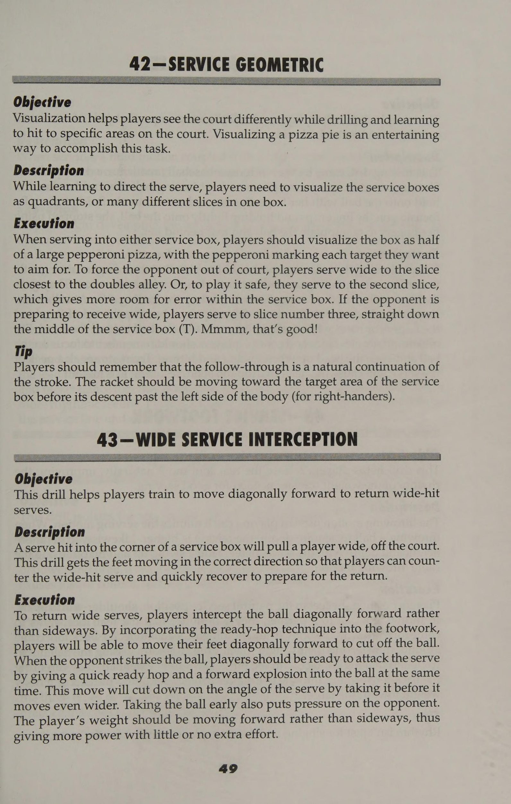
Hình 5: Sơ đồ hình học cú giao bóng và khu vực đích đến — Góc phân bổ điểm rơi chữ T và góc rộng (Wide).
Figure 5: Serve Geometric Target Zones — T-zone and wide target precision drills.
Bài Tập Cú Lốp Bóng & Đập Bóng Trên Cao (Overhead Smash) Lobs and Overheads Drills: Defensive Lobs & Authority Smashing
= chương 5 Thùy và chi phí chung Đó là một con đường dài và vắng vẻ trong nhiều năm đối với thùy không được sử dụng. Được sử dụng chủ yếu trong một tình huống phòng thủ, chẳng hạn như phục hồi khi buộc phải rời khỏi vị trí hoặc khi bị tấn công từ một kẻ tấn công lưới, nó chỉ được coi là phản ứng đối với một cú đập từ trên cao của đối thủ. Ngày nay, lốp bóng và cú đập bóng trên cao (Overhead Smash) là những vũ khí cần được tính đến. Các cú lốp bóng (Lob) và đánh đầu không còn chủ yếu là các cú đánh đôi nữa và những tay vợt đánh đơn đang sử dụng cả hai cú đánh để gây áp lực rất lớn lên người giao bóng, người chuyền bóng, người đẩy và người phản đòn cơ bản. Vì điều này, tay vợt không được bỏ qua việc khoan lốp và trên cao. Họ cần phải tìm hiểu vị trí và thời điểm sử dụng cú lốp bóng (Lob) cũng như cách tích lũy điểm để tạo cơ hội cho đối thủ thực hiện một cú đập bóng hủy diệt. Bằng cách luyện tập cả hai cú đánh trong những tình huống giống như trò chơi, tay vợt sẽ phát triển sự tự tin để sử dụng những cú đánh bậc thầy này bất cứ khi nào họ cần một điểm dễ dàng hoặc cần loại bỏ thế trận của đối thủ. Lobby và đánh từ trên cao có thể rất thú vị, đặc biệt là khi tay vợt biết thời điểm và cách thực hiện các cú đánh. Phần lốp bóng và đập bóng này sẽ giúp tay vợt phát triển các chiến thuật để sử dụng khi xây dựng kế hoạch thi đấu hoàn hảo cho phong cách chơi của mình.
EX 48—KỸ THUẬT LOB TAY TOPSPIN TAY Mô tả Đánh đúng cách, cú lốp bóng (Lob) xoáy lên có thể là cú đánh tàn khốc nhất trong quần vợt. Nó thường là người chiến thắng mỗi khi nó được đánh. Một khi nó đã vượt qua vợt và chạm sân, đối thủ hầu như không thể chạy xuống bóng. Bằng cách kết hợp các cú chuyền bóng và lốp bóng xoáy lên, tay vợt sẽ khiến ngay cả những vận động viên lao lưới giỏi nhất cũng phải đoán và mất thăng bằng. Thực hiện Để thực hiện một cú lốp bóng (Lob) hiệu quả, vợt phải thực hiện chuyển động từ thấp đến cao và chạm bóng ở phía trước cơ thể. Cú đánh tiếp theo sẽ kết thúc sau tai ở phía đầu vợt. Cú xoay này sẽ tạo ra độ xoáy cần thiết để đưa bóng xuống nhanh chóng sau khi vượt qua người bắt vô lê. Mặt vợt nên hơi mở với mép dưới của khung ngay trước mép trên. Tay vợt nên nghiêng vai về phía sau một chút để đảm bảo bóng đạt được độ cao cần thiết. Tạo ra xoáy lên với mặt vợt hơi mở có hiệu quả vì chuyển động từ thấp đến cao này rất rõ rệt. Mẹo Một cú lốp bóng (Lob) xoáy lên tốt sẽ có ích trong nhiều trường hợp, nhưng nó hiệu quả nhất khi đối phương đang giao bóng và vô lê hoặc sau khi đối thủ thực hiện cú đánh tiếp cận. Chìa khóa vàng để lốp bóng thành công là làm thế nào để ngụy trang cú đánh một cách hợp lý. Tay vợt nên chuẩn bị để thực hiện cú lốp bóng (Lob) chính xác như đối với bất kỳ cú đánh chạm đất nào và hãy nhớ sử dụng cú đánh có tính toán này một cách tiết kiệm. Nếu tay vợt lạm dụng cú đánh chiến lược này, đối thủ của họ sẽ đọc bài tốt hơn khi họ chuẩn bị thực hiện cú đánh này và sẽ chuẩn bị tốt hơn để chạy bóng và phản đòn.
cee oe HERR ABITECHNIQUE Mô tả Cú lốp bóng trái tay có thể được thực hiện một cách hiệu quả bằng cú đánh trái tay bằng một tay hoặc hai tay. Cú lốp bóng xoáy lên bằng trái tay bằng hai tay đặc biệt hiệu quả vì nó gần như không thể đọc được. Mặc dù những tay vợt thuận tay thường hiệu quả hơn trong việc ngụy trang cú lốp bóng (Lob), nhưng những tay vợt thuận tay cũng có thể thành công với cú đánh này. Những tay vợt một tay có thể áp dụng quy trình tương tự khi thực hành cú lốp bóng (Lob) trái tay giống như khi họ thực hiện cú thuận tay, nhưng họ cần chú ý hơn đến cách cầm vợt. Thực hiện m9 Những tay vợt có cú trái tay Z bằng một tay dường như không sẵn sàng thực hiện các cú lốp bóng (Lob) xoáy lên như những tay vợt sử dụng hai tay. Đối với cú lốp bóng (Lob) bằng một tay, cách cầm bóng phải là kiểu cầm trái tay kiểu lục địa hoàn toàn. Cách cầm vợt càng phóng đại và càng nhiều tay vợt lăn tay ra khỏi cách cầm vợt thuận tay thì việc đánh bằng xoáy lên sẽ càng dễ dàng hơn. Sau khi thực hiện một cú vung vợt từ thấp đến cao quá mức, tay vợt nên hoàn thành cú đánh theo nhịp dài bên cạnh tai ở phía thuận của cơ thể. Giống như cú thuận tay, tay vợt nên nghiêng vai về phía sau và hơi mở mặt vợt khi tiếp xúc. Hành động này sẽ đưa bóng lên không trung một cách nhanh chóng. Đối với cú lốp bóng (Lob) bằng hai tay, sự chuẩn bị và cách tay vợt cầm vợt khi thực hiện cú đánh phải giống hệt với những gì họ sử dụng cho cú đánh tiếp đất thông thường. Mặc dù chuyển động từ thấp đến cao sẽ cường điệu hơn, nhưng tay vợt nên kết thúc ở vị trí tiếp theo gần giống như khi họ thực hiện cú đánh trái tay trên mặt đất. % Mẹo Ngụy trang thùy là chìa khóa. Việc chuẩn bị phải phản ánh sự chuẩn bị cho cú đánh chuyền. Vào giây phút cuối cùng, tay vợt đánh lên để tạo thêm lực nâng.
50—TAI PHẢI, TAI TRÁI Mục tiêu Bài tập này giúp tay vợt tạo ra xoáy lên tối đa bằng kỹ thuật lốp bóng thuận tay và trái tay. Mô tả Tay vợt có được cảm giác chuyển động nhanh và uyển chuyển mà họ cần để thực hiện cú đánh này. Thực hiện Khi vợt và bóng đang ở trên lưới, tay vợt cố gắng dùng dây vợt để ấn bóng vào dây lưới và chải thẳng lên phía sau bóng. Việc thực hiện tiếp theo phải ở cùng một phía của cú đánh. Đối với người thuận tay phải đánh cú lốp thuận tay, động tác tiếp theo sẽ tiếp tục qua tai phải. Đối với cú lốp bóng (Lob) trái tay, động tác tiếp theo tiếp tục qua tai trái. Chuyển động đánh bóng nhanh sẽ khiến quả bóng quay về phía trước với vận tốc cực lớn. Biến thể Tay vợt giữ một quả bóng cách dây lưới vài inch và nảy nó trên mặt đất. Khi nó đạt đến độ cao thực, chúng thực hiện chuyển động chải và thực hiện giống hệt nhau. Tiếp theo, họ lùi lại một vài bước, hơi mở mặt vợt ra và lặp lại chuyển động và thực hiện theo. Bóng phải có nhiều xoáy lên và đi qua lưới khoảng 10 feet. Tay vợt thực hiện cú lốp bóng (Lob) xoáy lên từ cú vô lê từ đối tác, cố gắng đánh bóng vợt đã căng của tay vợt trên lưới ít nhất 10 feet. __51—LOB DEEP Mục tiêu Bài tập này giúp tay vợt học cách lốp bóng cao qua bất kỳ đối thủ nào. Mô tả Cú lốp bóng sâu còn được gọi là cú lốp bóng (Lob) tiết kiệm điểm hoặc cú lốp bóng (Lob) phòng thủ. Có hai loại lốp bóng - lốp phòng thủ và lốp tấn công mạnh mẽ. Cuộc tập trận này tập trung vào việc làm cho chúng có thể hoán đổi cho nhau. Tay vợt thực hiện A đứng sau vạch giao bóng bốn feet và đưa bóng cho tay vợt B ở đường biên đối diện. Sau khi đánh vào tay vợt B, tay vợt A giơ vợt qua đầu. Sau đó, tay vợt B cố gắng lốp bóng qua vợt đã căng ra nhưng trong phạm vi ranh giới của sân. Tay vợt A có thể di chuyển sang ngang nhưng không được lùi lại. Nếu tay vợt A có thể chạm vào bóng hoặc nếu bóng ra ngoài, người đó sẽ thắng điểm. Nếu tay vợt B đánh bóng qua tay vợt A và trên sân, người đó sẽ thắng điểm. Các tay vợt chuyển đổi sau 15 điểm.
52—DROP AND LOB Mục tiêu Bài tập này giúp tay vợt học cách lốp bóng đối thủ sau khi họ thử thực hiện cú đánh thả bóng. Mô tả Thực hiện thao tác này nhiều lần trong một trận đấu có thể khiến đối thủ gục ngã. Bằng cách sử dụng một cú thả bóng và sau đó là một cú lốp bóng (Lob), tay vợt có thể buộc đối thủ phải chạy nhanh về phía trước và cố gắng thực hiện một cú trả bóng hiệu quả, sau đó lùi lại để cố gắng đánh một cú trả bóng khác. Khi đối thủ đã hết hơi, tay vợt sẽ có thể đánh được người chiến thắng dễ dàng. Thi hành Tay vợt định vị mình ở hai đầu đối diện của sân trên đường cuối sân và bắt đầu tập hợp. Tay vợt A thực hiện một cú đánh rơi vào tay vợt B, người này cố gắng khôi phục cú đánh rơi và đánh một cú lốp bóng (Lob) qua tay vợt A. Họ lặp lại trình tự này 10 lần và sau đó đổi vị trí. Biến thể Bài tập này có thể được thực hiện trên khu vực sân nhỏ bằng cách thực hiện cú lốp bóng (Lob) bổng. Tay vợt A và B đứng đối diện nhau trên đường giao bóng. Tay vợt A tung một cú thả bóng cho tay vợt B. Tay vợt B di chuyển về phía trước và trả lại cú đánh bằng một cú thả bóng khác. Tay vợt A tiến về phía trước và tung cú lốp bóng (Lob) vào đầu tay vợt B. Họ lặp lại điều này 10 lần và đổi vị trí. 53—LOB VÀ CHUYỆN Mục tiêu Bài tập này giúp tay vợt học cách phản ứng và phục hồi sau khi không thực hiện được cú lốp bóng (Lob) đủ cao qua đối thủ. Mô tả Bài tập này giúp tay vợt phục hồi sau nỗ lực lốp bóng kém hiệu quả trong khi đặt họ vào tình huống giống như trò chơi. Thực hiện Tay vợt A ở vị trí trên lưới và tay vợt B ở cuối đường biên của phía đối diện của sân. Tay vợt B đánh bóng cho A, người này phải đánh lại cho tay vợt B, người này lần lượt phải đánh một cú lốp bóng (Lob). Tay vợt A cố gắng thực hiện cú đập bóng trên cao (Overhead Smash) và tay vợt B sau đó cố gắng giành điểm bằng các cú lốp bóng (Lob) hoặc chuyền bóng từ sân sau. Họ chơi 15 điểm rồi đổi điểm. Mẹo Tay vợt không được để bóng rơi quá thấp. Càng tiếp xúc ở vị trí cao, họ càng ít có khả năng đánh vào lưới. Tay vợt phải luôn theo dõi bóng bằng tay còn lại.
54—KỸ THUẬT LOB TRÊN ĐẦU = Mô tả Thành phần đầu tiên của một pha đánh đầu hiệu quả là nhận biết và phản ứng nhanh với cú lốp bóng (Lob) của đối thủ. Việc nghiên cứu các kỹ thuật sử dụng chi phí của Tim Henman đã giúp trò chơi của tôi và trò chơi của học sinh tôi đạt đến những cấp độ mới. Chiến lược cơ bản của chi phí chung là giành được điểm hoàn toàn. Tay vợt có thể làm điều này bằng cách áp đảo bóng hoặc thực hiện một cách chính xác. Thực hiện Tay vợt thiết lập một vị trí vững chắc trên lưới và cầm vợt bằng tay cầm lục địa. Một lợi thế của việc sử dụng cách cầm vợt lục địa khi chuyền bóng là khi lốp bóng, tay vợt không phải thay đổi cách cầm vợt để đánh bóng qua đầu. Khi bóng đến gần, tay vợt thả chân phải ra sau và bắt đầu xoay hông và vai sang một bên. Sau khi hoàn thành việc xoay người, tay vợt phải tạo góc 90 độ so với lưới. Bằng cách xoay người sang một bên khi đánh một cú đập bóng trên cao (Overhead Smash), tay vợt có thể thả lỏng, xoay hông và vai, sau đó thực hiện một cú xoay người mượt mà và mạnh mẽ. Giữ hai chân gần nhau sẽ giúp bạn nhảy lên theo bóng nhanh chóng. Khi rời khỏi mặt đất và bật lên, tay vợt tập trung vào quả bóng và bắt đầu đưa cánh tay phải lên để thực hiện cú vung. Lúc này tay vợt bắt đầu xoay vai. Vị trí của vợt và thân vợt gần giống với vị trí được sử dụng trong chuyển động giao bóng. Tay vợt phải giữ bóng hơi nghiêng về phía thuận lợi (ở vị trí hai giờ). Với quả bóng cao trên đầu, họ giữ cho cánh tay được thả lỏng và tay cầm được thả lỏng để cổ tay có thể bẻ gãy khi tiếp xúc. Cú búng tay tạo ra tốc độ đầu vợt và đưa bóng xuống sân. ceils ella Mục tiêu Bài tập này giúp tay vợt thiết lập nhịp điệu tốt để đánh những cú đánh qua đầu hiệu quả. Mô tả Bài tập này giúp tay vợt học các kỹ thuật cần thiết để đạt được các đòn tấn công trên không nhất quán và hiệu quả. Thi hành án Các đấu thủ xếp hàng bên mép sân gần cột lưới. Lần lượt, họ bước ra giữa sân, chạm vợt vào lưới và lùi về phía sau để thực hiện một cú đánh từ trên cao của máy chủ. Sau khi đánh đầu thành công, họ phải tiến lại gần lưới, chạm lưới và đánh quả đầu thứ hai. Khi những người đánh bóng phát triển sự tự tin hơn và nhịp điệu tốt, họ sử dụng dao động và các chi phí sâu hơn, dần dần chuyển sang các chi phí được định hướng ngẫu nhiên. Những người đánh bóng phải luôn quay trở lại sân nhà với một bước tách tốt hoặc bước nhảy sẵn sàng. Tay vợt nên lặp lại bài tập này thường xuyên để phát triển sự tự tin và động tác chân tốt khi đánh những cú đánh qua đầu.
PHẦN Chiến thuật và chiến lược Để chơi đơn hoặc đôi tích cực, tay vợt phải giữ bình tĩnh. Họ không bao giờ được để đối thủ thấy mình đổ mồ hôi, và họ phải nắm toàn quyền kiểm soát mọi điểm số. Tay vợt đưa bóng ra sân, xoay vợt để quyết định ai giao bóng và cam kết thực hiện mọi cú đánh mà họ dự định—tất cả đều không do dự hay nghẹn ngào. Tay vợt phải tận dụng mọi cơ hội để tấn công vào lưới và tận dụng những sai lầm của đối thủ. Họ phải sẵn sàng phản công khi thủy triều chống lại họ. Nhưng họ làm điều đó bằng cách nào? Loại kế hoạch trò chơi chiến lược nào sẽ hoạt động tốt nhất? Kế hoạch trò chơi là gì? Brad Gilbert đã tóm tắt điều đó cho James Blake bằng cách giúp anh ấy nhận ra rằng “mỗi tay vợt đều có một phong cách và mọi phong cách đều có điểm yếu”. Một số chương tiếp theo sẽ giải thích cách xây dựng kế hoạch thi đấu đơn hoặc đôi. Tay vợt học cách chơi quần vợt tấn công và phòng thủ, đồng thời luyện tập các bài tập sẽ giúp họ trau dồi phong cách chơi đặc trưng để không bao giờ mất cảnh giác nữa. Mọi người không bao giờ tham gia một cuộc họp bán hàng mà không có kế hoạch hành động, vậy tại sao họ lại chơi một trận đấu với đối tác, câu lạc bộ hoặc giải đấu mà không có kế hoạch hành động?
ey gees x Se ee "ed i be “uae oliver ond ah a ine es |uae Rae a Pia! PIs yas * ae orm pipe tevin, eoTE mạ vàng sp ai cys wall ay 2 meena a : ili. elt msrp AW: Sonn của ,
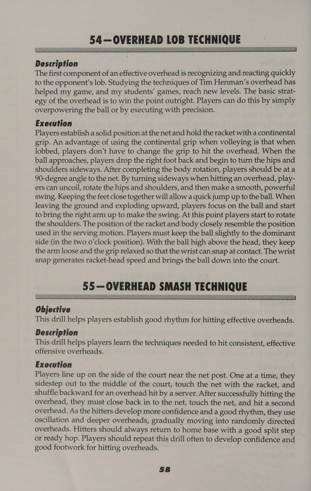
Hình 6: Sơ đồ bài tập phối hợp lốp bóng và đập bóng trên cao (Overhead Smash) — Nhịp lùi bước chéo và điểm tiếp xúc đón bóng đỉnh cao.
Figure 6: Lob and Overhead Smash Sequence Drills — Drop-step recovery and high impact smash timing.
Phần 2: Chiến Thuật & Trò Chơi Mô Phỏng Thi Đấu
Chiến Thuật Tấn Công & Bài Tập Áp Đảo Từ Cuối Sân Lên Lưới Offensive Play Drills: Aggressive Baseline Drive & Net Transitions
= chương 6 = Chơi tấn công Các chiến lược dành cho tay vợt quần vợt ngày nay là vô tận. Với kỹ thuật chơi mới và trang bị mới, tay vợt cần lập kế hoạch hành động mạnh mẽ hơn, quyết liệt hơn. Trước khi bước vào sân, họ phải có kế hoạch thi đấu trong đầu—một chiến lược giành chiến thắng đặc trưng được thiết kế riêng cho họ. Một kế hoạch có thể đơn giản như đánh một sự kết hợp ba chọi một gồm ba cú đánh vào trái tay của đối phương và sau đó đánh chéo bàn thuận tay để tấn công lưới, hoặc phức tạp như đến ở mọi điểm giao bóng thứ ba và tấn công một khu vực nhất định của sân. Tay vợt nên đưa vào kế hoạch của mình những cách tích lũy điểm để sử dụng điểm mạnh, phong cách chơi cụ thể, cách tiếp cận tinh thần và điều kiện thể chất. Mỗi trận đấu nên được lên kế hoạch từ đầu đến cuối. Kế hoạch nên bao gồm cách họ sẽ phòng thủ trước một số phong cách chơi nhất định, họ sẽ sử dụng những cú đánh nào và họ sẽ nghĩ gì khi thay đổi. Khi phát triển một kế hoạch trò chơi tổng thể, tay vợt nên tính đến các phong cách trò chơi khác nhau mà họ sẽ gặp trong quá trình thi đấu. Bản thân ông Server, Stan Smith, tin rằng các phương pháp tấn công khác nhau có tác dụng tốt nhất đối với các kiểu chơi cụ thể: ¢ Con lười. Tay vợt lười biếng có thể gặp khó khăn trong việc thực hiện cú giao bóng có tính đột phá, vì vậy tay vợt nên tạo nhiều xoáy hơn cho cú giao bóng cắt lát. Kiểu tay vợt này ghét di chuyển, vì vậy tay vợt thực sự nên cố gắng di chuyển họ xung quanh. Kiểu đánh chéo sân hoặc kiểu thả bóng—kiểu lốp bóng có thể có hiệu quả. Dù theo hình thức nào, tay vợt cũng nên kiên nhẫn và nhớ rằng con lười là kẻ di chuyển chậm. Việc vội vã chơi sẽ chỉ gây ra những lỗi không đáng có. e Gonzalez tốc độ. Sự đa dạng là chìa khóa ở đây. Tay vợt nên giữ kiểu tay vợt này mất cân bằng bằng cách kết hợp các vị trí và kiểu quay. Speedy sẽ vượt qua những quả bóng, vấp ngã bằng hai chân của chính mình và tung ra những cú đánh điên cuồng, khó lường. Tay vợt nên để đối thủ kiểu này phải đoán và định kỳ ném vào một số thứ mềm. Một chiến thuật hiệu quả là mô hình ba chọi một—ba cú đánh về một bên và sau đó bước vào để đánh cú thứ tư theo hướng ngược lại. Tay vợt có thể chạy kiểu này cho đến khi đối thủ ngất xỉu vì kiệt sức.
¢ Hulk. Loại tay vợt này thường có phản xạ chậm vì cơ bắp to, cồng kềnh. Tay vợt có thể thử những cú giao bóng phẳng, cứng hoặc cắt thẳng vào cơ thể mình. Tay vợt này không thể di chuyển tốt nên bất kỳ sự kết hợp nào của các cú đánh đủ xa đều có tác dụng. Tay vợt nên phát triển các kế hoạch trò chơi để phù hợp với phong cách của tất cả các loại tay vợt này. Trò chơi và kế hoạch trò chơi của tay vợt càng mạnh mẽ thì người đó càng có nhiều khả năng thành công trong các trận đấu sắp tới. Tay vợt nên nhận thức được điểm mạnh và điểm yếu của mình và lên kế hoạch chiến lược phù hợp. Trong trò chơi quần vợt, chiến thắng không chỉ phụ thuộc vào việc tay vợt thể hiện tốt như thế nào mà còn phụ thuộc vào việc người đó điều chỉnh chiến lược và cách tiếp cận tổng thể với đối thủ tốt như thế nào. Cần lưu ý năm cú đánh tấn công cơ bản khi xây dựng kế hoạch trò chơi. Bằng cách phát triển từng cú đánh này, tay vợt sẽ có được một loạt sức mạnh tấn công để xây dựng một kế hoạch trò chơi tấn công tổng thể. ¢ Cú sút chéo sân. Để khiến đối thủ di chuyển ngay lập tức, tay vợt nên bắt đầu điểm bằng một cú đánh chéo sân. Đối thủ sẽ phải chạy nhiều hơn vì cú đánh chéo sân có thể đánh ở góc lớn hơn. Đối phương càng phải chạy theo bóng nhiều thì họ càng có ít cơ hội để chuẩn bị và chuyển trọng lượng vào cú đánh và khả năng trả bóng yếu càng lớn. Bằng cách đánh mạnh vào điểm mạnh bằng cú đánh chéo sân, tay vợt có thể bộc lộ điểm yếu cho đối phương ở lượt đánh tiếp theo. Bằng cách trả bóng chéo sân khi ra khỏi vị trí, tay vợt sẽ có ít hơn bốn hoặc năm bước phục hồi cần thực hiện để trở về vị trí ban đầu. Tay vợt nên nhớ rằng mặt vợt điều khiển hướng đánh. Bóng sẽ luôn đi theo hướng mà dây hướng về phía vì bóng nảy ra khỏi vợt theo một góc vuông. Ví dụ, khi mặt vợt hướng chéo qua lưới, bóng sẽ đi chéo bàn. Khi mặt vợt vuông góc với lưới với các dây song song với lưới, bóng sẽ đi theo đường dọc. ¢ Cú sút trực tiếp. Đối thủ đánh xuống đường biên sẽ phải di chuyển một khoảng cách đáng kể để có được cú trả bóng chéo sân. Nếu tay vợt có thể trả lại cú đánh ở đường biên bằng một đường chéo tích cực, thì người đó có cơ hội tuyệt vời để giành điểm hoàn toàn. Ở cú sút dọc, bóng đi một khoảng cách ngắn hơn và qua phần cao hơn của lưới so với cú sút chéo sân, vì vậy tay vợt phải dành nhiều thời gian hơn để mắc lỗi. Họ nên đánh cú đánh này để thay đổi thói quen của kiểu đánh chéo sân cơ bản, đánh vào điểm yếu của đối thủ hoặc đánh phía sau đối thủ đang chạy nhanh để che chắn phần sân đối diện. ¢ Cú đánh ngắn. Đối thủ có ác cảm với việc tiếp cận lưới có thể mắc chứng “bồn chồn trên lưới”. Tay vợt có thể tận dụng cơ hội này bằng cách tung cú sút ngắn để kéo đối phương vào lưới. Tay vợt
CHƯƠNG 6 Lối chơi tấn công cũng có thể muốn trả đũa ngắn nếu đối thủ đang kéo họ lên lưới và lốp bóng qua đầu hoặc chuyền họ một cách hung hãn. Những tay vợt không hiệu quả khi kéo lưới có thể muốn đưa đối phương vào lưới trước bằng cách sử dụng bóng ngắn, mềm thay vì cú đánh tiếp cận. Khi đối phương đánh bóng ngắn (cú đánh yếu) và các tay vợt phải di chuyển vào khu vực tấn công giữa sân để trả bóng, họ có thể thực hiện cú đánh thả bóng, có xu hướng kéo đối thủ lên và ra khỏi vị trí. Ngoài ra, những cú đánh ngắn theo sau những người nổi cao có thể là những cú đánh thay đổi tốc độ hiệu quả. e Cú sút xa. Nguyên tắc quan trọng nhất trong việc sử dụng các cú chuyền bóng là giữ bóng ở mức thấp để người tung lưới buộc phải đánh lên, làm giảm cơ hội thực hiện cú vô lê hung hãn. Bóng xoáy lên rơi nhanh hơn bóng phẳng hoặc bóng xoáy xuống. Vì vậy, tay vợt nên biết rằng hầu hết các cú chuyền bóng có độ xoáy lên đáng kể đều hiệu quả. ¢ Thả cú sút. Những tay vợt cảm thấy thoải mái với tất cả các cú đánh trước đó đã thu thập được một bộ vũ khí hủy diệt sân đấu đáng gờm. Bây giờ họ nên học cách sử dụng một trong những cú đánh nhỏ nhất nhưng mạnh mẽ nhất trong quần vợt. Cú đánh thả bóng có thể cực kỳ hiệu quả khi đấu với một vận động viên ném bóng từ chối lên lưới hoặc không trả giao bóng (giao bóng thứ hai) miễn là người giao bóng thường xuyên lùi lại. Tay vợt cũng có thể thử thực hiện một quả bóng ngắn mà đối thủ đánh vào họ. Thông thường, tay vợt lùi sâu, đó là điều mà đối thủ mong đợi, vì vậy cú thả bóng có thể khiến họ bất ngờ. Cú thả bóng cũng có thể phát huy tác dụng đối với cú đánh rơi của đối thủ, miễn là đối phương lùi xa hoặc mất thăng bằng một cách hợp lý. Nếu cú thả rơi không gây ngạc nhiên thì nó sẽ không hiệu quả. Các bài tập trong chương này sẽ giúp tay vợt phát huy điểm mạnh và khắc phục một số điểm yếu để kế hoạch tấn công có thể đưa họ vào chung kết của nhiều giải đấu sắp tới.
56 —MỤC TIÊU SWING NHANH Bài tập này giúp tay vợt tạo ra một cú backswing rút ngắn và tốc độ đầu vợt cực lớn để có được sức mạnh và khả năng kiểm soát tối đa. Mô tả Để tạo ra nhiều xoáy lên với sức mạnh khủng khiếp, tay vợt phải rút ngắn thời gian vung vợt về sau để bắt bóng sớm hơn và xa hơn về phía trước cơ thể. Thực hiện Tay vợt bắt đầu với đầu vợt ngửa ra sau như thể họ sắp đánh một cú thuận tay. Tay cầm phải ở dạng báng cầm bán tây hoặc toàn bộ phía tây. Cổ tay phải lỏng nhưng tay cầm phải chặt. Tay vợt nên tập quất đầu vợt và búng cổ tay lên xuống qua vùng đánh càng nhanh càng tốt cho đến khi quen với cảm giác và chuyển động trở nên trôi chảy. Bây giờ họ bắt đầu xoay phần thân trên, thân và hông bằng cú xoay. Xoay phần thân trên giúp cú đánh mượt mà hơn, cho phép bắt bóng sớm và tạo động lượng cực lớn cho cú đánh. cl eld ki Ah al Mục tiêu Bài tập này là một cách tuyệt vời để tay vợt học cách rút ngắn khoảng thời gian backswing và tạo ra tốc độ đầu vợt có kiểm soát. Mô tả Những tay vợt từng theo dõi các chuyên gia dạy bóng cho bóng có lẽ đã nhận thấy rằng họ dường như có thể làm việc đó cả ngày mà không bị rơi tay. Họ có thể thực hiện động tác tiếp bóng gần như mãi mãi vì họ sử dụng động tác vung vợt ra sau rút ngắn, xoay thân và vuốt ve linh hoạt. Cho bóng ăn là một cách tuyệt vời để có được cảm giác chuyển động nhanh, rút ngắn của đầu vợt. Thực hiện Tay vợt mang một người tiếp bóng (Feeder) lên sân và thực hành đưa bóng cho đồng đội, xen kẽ giữa xoáy lên, cắt lát và xoáy xuống và đưa bóng đến các mục tiêu khác nhau. Họ bắt đầu bằng cách thiết lập các hình nón hoặc điểm đánh dấu trên đường giao bóng và họ cố gắng đánh từng hình nón bằng tất cả các kiểu quay. Họ tiếp tục cho đến khi đánh chính xác hầu hết các hình nón. Họ đánh càng mạnh thì cú backswing sẽ càng ngắn. Biến thể Khi tay vợt cảm thấy thoải mái khi cho một tay vợt ăn, họ sẽ thêm nhiều tay vợt hơn và cố gắng giữ cho họ di chuyển và đánh mà không cho phép họ dừng lại. Những tay vợt có thể cho một số tay vợt khác ăn nhịp nhàng đang trên đường đạt đến tốc độ đầu vợt hoàn hảo!
58 —MINICOURT Mục tiêu Đây là một bài tập tuyệt vời giúp tay vợt học cách kiểm soát bóng, cảm nhận bóng, rút ngắn bước đi và học cách vung vợt ra sau ngắn để tạo ra sức mạnh và thậm chí kiểm soát tốt hơn. Mô tả Nếu tay vợt gặp khó khăn trong việc kiểm soát tốc độ của bóng hoặc không thể giữ bóng trong phạm vi ranh giới của khu vực sân nhỏ thì họ có thể sẽ không thể duy trì một pha đánh bóng toàn sân. Tay vợt phải học cách phát triển khả năng kiểm soát cơ bắp cần thiết để thay đổi độ xoáy và tốc độ của quả bóng tới và đi. Mọi người nói rằng Monica Seles đã thực hiện bài tập này trong một giờ mỗi lần khi cô đang tập luyện tại Học viện quần vợt Bollettieri. Bài tập này là một trong những cách tốt nhất để phát triển cảm giác bóng tốt, tốc độ đầu vợt, sự tự tin và khả năng xoay thân và hông hiệu quả. Tay vợt thực thi được bố trí trên các đường giao bóng đối diện. Họ cố gắng lùi lại khu vực vạch giao bóng ít nhất hai feet để có chỗ bước vào bóng. Tay vợt phải có khả năng tương tự. Họ cố gắng đánh bóng qua lại, giữ bóng trong khu vực sân giao bóng. Để giữ bóng trong cuộc, tay vợt sẽ nhận thấy rằng họ phải rút ngắn thời gian vung vợt về sau, cúi xuống bên dưới bóng và sử dụng chuyển động đánh bóng thật chặt. Nếu họ cố gắng sử dụng toàn bộ cánh tay mà không có tốc độ đầu vợt, bóng sẽ chạm vào lưới hoặc rèm ở phía đối diện của sân. Biến thể Tay vợt trước tiên nên làm việc một cách nhất quán để cố gắng giữ ít nhất 25 quả bóng trong cuộc. Sau đó, tay vợt nên tập trung vào vị trí bằng cách đánh những cú đánh chéo sân nhất quán. Sau khi tay vợt có thể thực hiện được 25 cú đánh chéo sân trở lên trong trận đấu, họ nên cố gắng chỉ đánh dọc biên một cách nhất quán trong 25 cú đánh trở lên. Một khi tay vợt đã xây dựng được sự tự tin và có được cảm giác bóng tốt, họ nên thử kết hợp giữa đường chéo sân và đường biên dọc chỉ trong khu vực sân nhỏ. Tay vợt nên thực hành bài tập này cho đến khi họ có thể duy trì bất kỳ tập hợp đòn đánh nào với sự tự tin, nhất quán và khả năng kiểm soát. Sau đó, họ tiến tới các điểm chơi, trò chơi và sau đó là toàn bộ trận đấu. Mẹo Bài tập này không dành cho tay vợt không có điều kiện. Tay vợt phải có thể trạng tốt để thực hiện bài tập này một cách hiệu quả và chơi các trò chơi trong khu vực này. Về các bài tập điều hòa, xem phần bốn bắt đầu từ trang 175.
Thể thao Thư viện Serena Williams Công chúa xứ Serendip Sinh ngày 26 tháng 9 năm 1981, cao 5 feet10, nặng 145 pound, chơi thuận tay phải với trái tay bằng hai tay, 15 danh hiệu trong sự nghiệp. Serena trở thành chuyên nghiệp vào năm 1995 dưới sức mạnh vượt trội của mẹ cô và sự huấn luyện chiến lược tuyệt vời của huấn luyện viên, cha cô. Serena đã chiếm vị trí số 2 trên bảng xếp hạng WTA, chỉ kém chị gái Venus một bậc. Năm 1997, xếp thứ 304 thế giới và rất xanh trong sự nghiệp chuyên nghiệp của mình, Serena đã đánh bại hai tay vợt trong top 10 tại 1997 Chica5 80 Open và trở thành tay vợt có thứ hạng thấp nhất ~ đánh bại được một tay vợt trong top 5. Cô vọt lên vị trí thứ 102 trên bảng tính WTA. Năm 1998, thứ hạng của cô tăng lên thứ 53, và cô trở thành tay vợt có thứ hạng cao thứ ba chỉ sau ba giải đấu lớn. các sự kiện hòa chính kể từ năm 1976. Năm 1999, Serena có chuỗi 16 trận thắng trong đó có danh hiệu đầu tiên của một tay vợt, dài nhất kể từ chuỗi 23 trận của Steffi Graf vào năm 1986. Serena bắt đầu năm 2000 bằng chức vô địch Faber Grand Prix và kết thúc mùa giải bằng việc giành huy chương vàng tại Thế vận hội Mùa hè Sydney 2000 cùng với chị gái của mình ở nội dung đánh đôi. Năm 2001, Serena giành chức vô địch đầu tiên trong năm tại Indian Wells và kết thúc năm bằng việc trở thành tay vợt đầu tiên giành chức vô địch cuối mùa của giải WTA ngay trong trận ra mắt. Serena giành danh hiệu Grand Slam thứ hai tại Pháp mở rộng khi đánh bại chị gái Venus 7-5, 6-3 trong trận chung kết. Thành công của chị em nhà Williams ở Paris đã đưa họ trở thành hai tay vợt hàng đầu thế giới (Venus số 1 và Serena số 2), lần đầu tiên dành cho anh chị em ruột. Xin chúc mừng!
59—INSIDE-OUT FORTAY Mục tiêu Thực hiện cú đánh mạnh mẽ này đòi hỏi động tác bằng chân tinh tế, vô cùng tự tin và thời gian hoàn hảo. Mô tả Cú thuận tay từ trong ra ngoài là một cú đánh có sức tàn phá ngoạn mục khi được đánh chính xác vào thời điểm hoàn hảo. Bài tập này giúp phát triển động tác bằng chân mà tay vợt cần phải chạy vòng quanh trái tay và đánh thuận tay từ trong ra ngoài. Thực hiện Bài tập bắt đầu với một quả bóng được đồng đội đưa ra ngoài về phía thuận tay. Tay vợt chiếm vị trí ở đường giữa (T). Bắt đầu từ vị trí đó, tay vợt đánh bóng dọc theo đường biên với độ xoáy lên nặng. Cú đánh tiếp theo là về phía trái tay nhưng gần tâm T hơn một chút và ngay bên trong đường cuối sân. Tất nhiên, đối thủ sẽ nghĩ, "Aha! Đối thủ của mình sắp đánh một cú trái tay." Nhưng than ôi! Tay vợt chạy vòng quanh phía trái tay và đánh một cú thuận tay từ trong ra ngoài vào phía trái tay của phần sân đối diện. 60—ĐÁNH BÁC TRÁI C6 Mục tiêu Bài tập này tách biệt một mô hình chiến thuật sát thủ. Bài tập giúp tay vợt phát triển một mô hình tích cực để bổ sung vào kế hoạch trò chơi. Mô tả Bài tập này đề cập cụ thể đến cách sử dụng trái tay làm vũ khí. Bằng cách thiết lập các kiểu thực hiện mỗi cú đánh, tay vợt có thể quyết định thời điểm tung ra cú đánh trái tay để kết thúc điểm. Thực hiện Một đối tác chiếm vị trí ở phía đối diện của lưới và bắt đầu bằng việc đưa bóng về phía bên trái của sân. Tay vợt bắt đầu bằng cách đánh một vài cú thuận tay từ trong ra ngoài. Cú đánh tiếp theo là về phía trái tay, gần giữa hơn và hơi vào trong đường biên ngang một chút. Lần này tay vợt bước vào bóng và đánh trái tay xuống vạch. Kiểu này giúp tay vợt mở rộng sân bằng cách buộc đối phương phải chạy ngày càng rộng hơn để thu lại các cú thuận tay từ trong ra ngoài. Khi sân đã đủ rộng, tay vợt có thể đánh một cú trái tay để giành chiến thắng hoặc chạy vòng quanh phía trái tay và đánh một cú thuận tay lên trên vạch. Mẹo Tay vợt nên luyện tập các bài tập động tác bằng chân để thành thạo sự khéo léo thể thao cần có để chạy vòng quanh các cú đánh, đánh các góc nhọn và phục hồi.
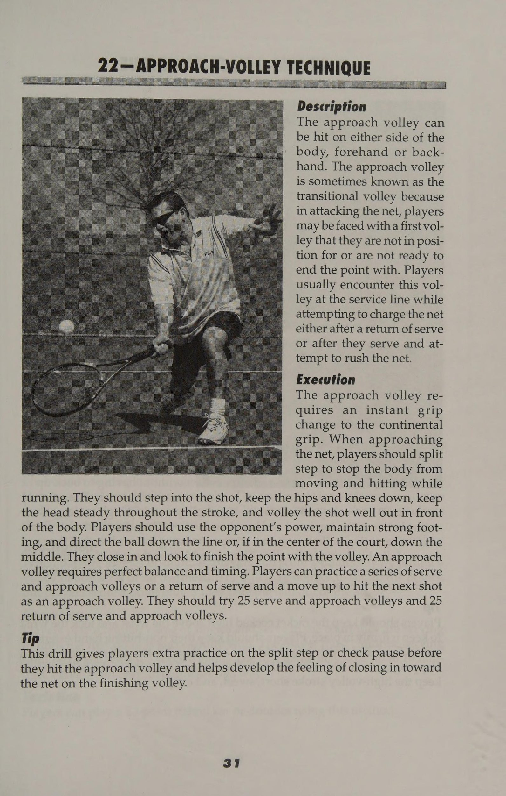
Hình 7: Sơ đồ bài tập tấn công tiếp cận lưới (Approach Shot & Volley) — Đánh bóng dâng cao và tiến thẳng vào vị trí lưới.
Figure 7: Approach Shot and Transition Volley Drills — Midcourt attack and net closing geometry.
Chiến Thuật Phòng Thủ, Khôi Phục Vị Trí & Hóa Giải Bóng Nặng Defensive Play Drills: Recovery Footwork & Neutralizing Heavy Balls
Chơi phòng thủ Huấn luyện viên của tôi, cha tôi, người hâm mộ lớn nhất của tôi chỉ có hai điều để nói trước mỗi trận đấu tôi thi đấu: “Hãy có mục đích và kế hoạch trong đầu cho mỗi quả bóng bạn đánh.” Trận chiến phòng thủ trong một trận đấu quần vợt là sự kết hợp của chiến lược tốt, trái tim và nỗ lực to lớn. Tay vợt phải có khả năng tận dụng điểm mạnh của mình khi mọi thứ dường như trở nên tồi tệ bằng cách tạo ra một kế hoạch phòng thủ cho phép họ tận dụng tối đa tất cả các cú đánh và bí quyết chơi quần vợt của mình. Tay vợt càng thu thập được nhiều thông tin về khả năng của đối thủ thì họ càng dễ dàng lựa chọn kế hoạch trò chơi phòng thủ chiến lược để tấn công vào điểm yếu của đối thủ. Tuy nhiên, tay vợt phải nhớ rằng chiến lược hoặc kế hoạch trò chơi phải linh hoạt. Trong nhiều trường hợp, kế hoạch hành động để giành chiến thắng có thể đúng nhưng chiến lược đã chọn sẽ không đạt được mục tiêu. Trong trường hợp đó, tay vợt phải có khả năng nhận ra cách đối thủ phản công thành công trong trò chơi của họ và họ phải sẵn sàng thay đổi kế hoạch trò chơi phòng thủ của mình để phù hợp với hoàn cảnh mới. Các bài tập trong phần này cung cấp một số hành động thay thế cho kế hoạch trò chơi phòng thủ để giúp tay vợt quay trở lại con đường chơi trò chơi của họ. Phương châm của tôi: “Ở đâu có ý chí, ở đó có con đường!”
61—TẬP TRUNG VÀ CHƠI TUYỆT VỜI Mục tiêu Bài tập này giúp tay vợt xác định rằng họ đang chơi bóng chứ không phải đối thủ. Nó cũng giúp tay vợt hiểu khái niệm “là quả bóng”. Mô tả Sức mạnh của trí tuệ được thể hiện rõ ràng ở từng giai đoạn phát triển của một vận động viên quần vợt. Khi tay vợt ngừng cố gắng đánh bại đối thủ và chỉ bám sát kế hoạch thi đấu của mình, họ có thể chơi quần vợt tốt hơn. Học cách trở thành quả bóng giúp tạo ra rào cản trong tâm trí và trên chiến trường, sân đấu. Với tư cách là quả bóng, tay vợt không thể và sẽ không bị thuyết phục để chơi trò chơi của đối thủ. Thực hiện Tay vợt chỉ nên tập trung vào quả bóng từ lúc giao bóng cho đến khi kết thúc điểm, đến mức mà hậu cảnh nơi bóng đến sẽ bị mờ hoặc không nhìn thấy được. Họ không nên tìm kiếm đối thủ khi thực hiện một cú chuyền bóng. Họ nên quan sát bóng trước, trong và sau khi nảy lên và ngay vào dây vợt. Tay vợt nên đánh bóng tốt hơn mức yêu cầu để giành được điểm, đồng thời phải nhớ tính đến độ xoáy và tốc độ của quả bóng đang đến gần. Chiến lược này phân biệt những tay vợt thắng và những người không thắng. Khi tay vợt đang đánh bóng từ đường cuối sân, xoáy lên mang lại khả năng kiểm soát tốt nhất và khoảng thời gian an toàn. Độ xoáy mạnh có nghĩa là tốc độ ít hơn. Độ xoáy càng ít thì tốc độ tiềm năng càng lớn. Thay đổi độ xoáy là tốt nhất. Tay vợt chơi trò chơi 11 điểm và kết hợp chiến lược trước đó. Biến thể Tay vợt có thể thêm thủ thuật tập trung đã được thử nghiệm theo thời gian này vào bài tập. Trong khi trả giao bóng, tay vợt nên tập trung vào việc làm thẳng các dây trong vợt của mình. Họ nên quan sát quá trình ném bóng của đối thủ và khi anh ta đánh bóng, hãy nói: “Đánh”. Khi bóng nảy trong phần sân giao bóng của các đấu thủ, họ có thể nói, “Nảy lên” và khi họ đánh bóng, hãy nói, “Đánh”. Chiến thuật đánh nảy có thể được sử dụng với mọi cú đánh và là một công cụ tuyệt vời để giữ cho mắt và tâm trí tập trung vào hành động hiện tại thay vì vào những gì đã xảy ra hai cú đánh trước đó. Mẹo Khi tay vợt tích lũy kinh nghiệm, họ học cách dự đoán kiểu đánh trả nào sẽ được mong đợi từ hầu hết các đối thủ. Sự tập trung tương đương với khả năng dự đoán thông minh hơn và lựa chọn cú đánh thông minh hơn. Tay vợt nên kiên nhẫn và tích lũy điểm để giành chiến thắng. Có thể phải thực hiện mười hoặc 15 lượt bắn trước khi tay vợt đến được lượt có chữ ký của họ trên đó. Học cách đọc cơ thể và vị trí vợt của đối thủ sẽ giúp tay vợt xác định được các kiểu đánh và độ xoáy bóng khác nhau.
Venus Williams Sức mạnh hòa bình của quần vợt nữ eeseae, att anaes eae: eH or Yearstia REBRES - Beare C2 RES WREDED eat Enenenees preety gnee © Human Kinetics Venus bắt đầu sự nghiệp quần vợt của mình ở tuổi 4 rưỡi. Cha cô đã huấn luyện cô trên sân quần vợt trong khu phố. Cô ấy trở thành chuyên nghiệp vào ngày 31 tháng 10, đêm trước Ngày Các Thánh, năm 1994. Khi Venus bắt đầu gõ cửa WTA của quần vợt chuyên nghiệp, cô ấy đã bước ngay vào, hòa nhập ngay, tiếp quản trò chơi và nâng tầm quần vợt nữ mãi mãi. Venus trở thành tay vợt nữ không được xếp hạt giống đầu tiên vào chung kết United States Open, và vào năm 1998, cô đánh bại tay vợt số một WTA Martina Hingis tại Sydney. Cô tiếp tục giành chiến thắng trong set đầu tiên trước Lindsey Davenport tại Australian Open sau 18 phút, mặc dù sau đó thua trong ba set (1-6, 6-2, 6-3). Tuy nhiên, ba tuần sau, cô ấy quay lại và tuyên bố trả thù — bím tóc, chuỗi hạt và tất cả — để đánh bại Davenport (6-7, 6-2, 6-3) lần đầu tiên và giành danh hiệu đánh đơn đầu tiên. Năm 2000, Venus trở thành một trong những tay vợt hàng đầu trong lịch sử sau khi vô địch hai Grand Slam liên tiếp (Wimbledon và US Open) với chuỗi 26 trận toàn thắng. Sports Illustrated đã trao cho cô giải thưởng Người phát ngôn của năm 2000. Cô bé Lọ Lem khu ổ chuột? Tôi không nghĩ vậy!
62—NGÀY CÓ GIÓ, KHÔNG CÓ VẤN ĐỀ Mục tiêu Bài tập này giúp tay vợt học cách chơi hiệu quả trong những ngày có gió. Mô tả Người ta nói rằng quần vợt ngày gió là môn thể thao nâng cao trình độ tuyệt vời ở các cấp độ khả năng khác nhau. Vào một ngày thi đấu nhiều gió, tay vợt có kỹ năng kém hơn và tay vợt có kỹ năng cao hơn có thể tỏ ra ngang nhau trừ khi một trong hai tay vợt học cách sử dụng gió để làm lợi thế cho mình. Bí quyết để chơi vào ngày có gió là tay vợt không nên chống lại nó - họ nên để gió làm việc cho họ chứ không phải chống lại họ. Dù chơi theo hướng gió phía sau hay ngược gió, tay vợt đều phải thay đổi phong cách chơi của mình để thành công. Bằng cách sử dụng gió để làm lợi thế cho mình, tay vợt có thể khiến đối thủ của mình chệch hướng, những đối thủ vốn đã bị gió hất văng. Thực hiện Khi có gió ở phía tay vợt (ở phía sau tay vợt), cú đánh của người đó đi sâu trong khi cú đánh của đối thủ ngắn hơn. Tay vợt có thể tích cực hơn trong việc lên lưới. Khi giao bóng và chuyền bóng, họ có thể tấn công quả giao bóng thứ hai và đi vào lưới. Việc sử dụng cú lốp bóng (Lob) tấn công và theo nó vào lưới hoặc sử dụng cú lốp bóng (Lob) chéo góc của phòng thủ sẽ làm tăng thêm khả năng xảy ra lỗi. Tay vợt nên dự đoán những cú đánh ngắn hơn, chậm hơn từ đối thủ, đặc biệt là những cú lốp bóng (Lob), cắt lát và thả bóng. Khi gió ngược tay vợt, cú đánh của họ sẽ có xu hướng hụt. Tay vợt nên cố gắng đánh bóng mạnh hơn bình thường một chút để giữ bóng sâu. Họ có thể sử dụng những cú thả bóng để tạo yếu tố bất ngờ và họ nên tránh những cú lốp bóng (Lob), điều này có thể tiếp đất ngắn và khiến đối thủ dễ dàng bỏ cuộc. Một cơn gió ngược có thể làm thay đổi đáng kể đường đi của bóng nên tay vợt phải tập trung vào động tác bằng chân và vào đúng vị trí cho mỗi cú đánh. Cuối cùng, tay vợt phải điều chỉnh mục tiêu bắn của mình (trái hoặc phải) để bù lại gió ngược. Mẹo Vào những ngày có gió mạnh, tay vợt nên để những cú lốp bóng (Lob) có lực đánh cao hoặc những cú đánh từ trên cao nảy lên trước khi cố gắng đánh chúng. Gió sẽ khiến quả bóng xoay theo đủ kiểu khó chịu trước khi chúng cố gắng đánh được cú đánh mong muốn. Giao bóng cũng có thể cực kỳ khó chịu vào những ngày nhiều gió. Sự kiên nhẫn, khéo léo và tinh thần thép chỉ là một vài trong số những yếu tố cần thiết để thực hiện cú giao bóng và đánh những cú đánh trên mặt đất trong những ngày nhiều gió. Tay vợt phải sửa đổi cách tung dịch vụ khi chơi vào những ngày nhiều gió. Gió ngược sẽ thổi cú ném sang một bên, gió từ phía sau sẽ thổi cú ném về phía trước và gió từ phía trước sẽ thổi cú ném ngược về phía tay vợt.
63—LẠI NGÀY NẮNG Mục tiêu Bài tập này giúp tay vợt học cách thích nghi với việc chơi trong những ngày nắng đẹp. Mô tả Cố gắng giao bóng hoặc đánh một cú qua đầu khi nhìn thẳng vào mặt trời có thể gây đau đớn và khó chịu. Tuy nhiên, có sẵn các phương pháp để tay vợt sử dụng vào những ngày nắng đẹp để họ có thể tắm nắng mà vẫn chơi một trận quần vợt thú vị. Thực hiện Nếu mặt trời chiếu thẳng vào người khi tay vợt đang cố gắng giao bóng, họ phải thay đổi cách tung. Họ có thể thử di chuyển vị trí tung cho đến khi có thể nhìn thấy hoặc có thể ném thấp hơn một chút. Khi quyết định ai giao bóng trước và đối phương chọn giao bóng trước, tay vợt nên cho đối phương giao bóng trước ở phía có bóng râm để chỉ phải giao bóng một ván dưới trời nắng và có thể giao bóng ván thứ hai trong bóng râm. Khi nhận được một khoản chi phí, tay vợt nên để nó nảy lên. Những tay vợt đang kiểm soát bóng và ở phần sân có bóng râm nên lốp bóng nhiều và tấn công vào lưới thường xuyên. Mẹo Tay vợt không nên phàn nàn về thời tiết xấu, hãy nhớ rằng điều kiện ở cả hai bên sân là như nhau. 64—TIEBREAKER Mục tiêu Bài tập này giúp tay vợt chiến đấu cho ván cuối cùng khi trận đấu hòa. Mô tả Khi tay vợt phải đối mặt với việc thắng hoặc thua một trận đấu vì tỷ số hòa, họ phải thi đấu tiebreak 12 điểm. Bài tập này giúp tay vợt phát triển nghị lực cần thiết để cạnh tranh trong một tình huống trận đấu đầy áp lực. Tay vợt phải chơi điểm theo thể thức tiebreak 12 điểm tiêu chuẩn đã được USTA phê duyệt. Tay vợt đảm nhận vị trí và chơi một trận quần vợt thông thường. Tay vợt bảo toàn điểm đầu tiên khi vào sân deuce. Tay vợt B bắt đầu chuỗi hai lần giao bóng cho mỗi điểm. Tay vợt B giao điểm thứ hai vào sân thuận lợi và điểm tiếp theo vào sân deuce. Hai quả giao bóng tiếp theo thuộc về tay vợt A, người bắt đầu quả giao bóng tiếp theo ở phần sân thuận lợi. Khi tay vợt đạt đến điểm thứ sáu, họ đổi bên. Không có thời gian nghỉ trong khi thi đấu tiebreak. Tay vợt đạt 7 điểm sẽ thắng trò chơi và set đấu. Lưu ý rằng đấu thủ giao điểm cuối cùng của một trong các phân đoạn 6 điểm sẽ giao điểm đầu tiên của phân đoạn tiếp theo từ sân deuce. Tay vợt nên luyện tập phương pháp này cho đến khi cảm thấy thoải mái khi chơi những trận đấu gần nhau.
_65—HỘI CHỨNG HOKE PO Mục tiêu Bài tập này giúp tay vợt phát triển kế hoạch tấn công khi thần kinh của họ cố gắng kiểm soát trận đấu. Mô tả Nghẹt thở trên sân xảy ra ngay cả với những tay vợt giỏi nhất. Xây dựng sức mạnh tâm lý là rất quan trọng để tránh bị nghẹn. Khi tay vợt bị sặc, họ có thể trở nên lo lắng đến mức không thở được giữa trận đấu, chứ đừng nói đến việc đánh một quả bóng nhỏ màu vàng qua tấm lưới khổng lồ đó. Hơi thở giúp tay vợt thư giãn thần kinh hoặc lo lắng và nó cho phép cơ thể họ hoạt động đồng bộ, để họ có thể tập trung vào trò chơi thay vì nỗi sợ hãi. Những tay vợt cảm thấy sợ hãi nên thử bài tập này để giúp họ thư giãn vào lần tới khi họ cảm thấy như thể sắp thi đấu với Pete hoặc Andre. Thi hành Bằng cách kết hợp các chiêu thức chiến thuật này, tay vợt có thể chinh phục đối thủ và cảm thấy như thể họ lại là vua hoặc nữ hoàng của triều đình. Họ nên cố gắng chỉ tập trung vào quả bóng chứ không phải đối thủ và cố gắng thở ra hoặc càu nhàu mỗi khi đánh bóng. Bằng cách sử dụng phương pháp đó, họ sẽ gần như không thể thực hiện được một cú đánh ngắn, giật cục khiến họ mất kiểm soát các cú đánh của mình. Cú đánh nghẹt thở là kết quả của cú đánh giật cục mà tay vợt sử dụng khi họ hít thở. Tay vợt nên thở ra khi vung vợt và tiếp tục cho đến khi thực hiện xong. Nếu tay vợt cảm thấy mọi thứ dường như vượt khỏi tầm kiểm soát, họ nên dừng lại và dành một chút thời gian để suy nghĩ lại. Họ nên suy nghĩ về kế hoạch trò chơi của mình, những gì họ có thể làm để thay đổi nó và sau đó cứ làm. Hội chứng nghẹt thở sẽ biến mất và tay vợt sẽ tiếp tục chơi với hết khả năng của mình. Mẹo Dưới đây là một số thủ thuật chiến thuật mà tay vợt có thể kết hợp vào kế hoạch trò chơi của mình. Tay vợt nên tập trung năng lượng lo lắng của mình để có được nhiều cú giao bóng đầu tiên hơn. Họ nên nhận ra và chấp nhận cảm giác bồn chồn trước trận đấu của mình, sau đó tiếp tục từ đó. Họ cũng không bao giờ nên để phe đối lập thấy mình đổ mồ hôi. Họ nên giữ bình tĩnh trên sân và chơi từng điểm một. Họ không bao giờ nên nhìn lại một điểm hoặc nhìn về phía trước một điểm, chỉ chơi theo quan điểm mà họ đang phải đối mặt vào lúc này. Cuối cùng, tay vợt nên bám sát kế hoạch trò chơi nhưng đủ linh hoạt để điều chỉnh nếu cần. Mọi người hiếm khi chơi theo cách họ khởi động, vì vậy tay vợt nên cười nhạo công việc tâm lý đã cố gắng.
66—CHANGEOVER Mục tiêu Bài tập này giúp tay vợt phát triển một bộ kỹ thuật quan trọng riêng để duy trì trên sân trong suốt trận đấu. Họ có thể coi đó là huấn luyện viên quần vợt bỏ túi bí mật của họ. Mô tả Khi tham gia các giải đấu hoặc trận đấu cấp câu lạc bộ, tay vợt được quyền nghỉ 90 giây giữa các ván đấu và sau mỗi ván lẻ. Họ nên dành thời gian này một cách khôn ngoan bằng cách tập trung vào kế hoạch trò chơi và chuẩn bị cho bước đi tiếp theo. Thi hành Tay vợt không bao giờ nên vội vàng quay trở lại cuộc tấn công chỉ vì đối thủ đang đứng sẵn sàng giao bóng. Hành động của đối thủ là một thủ đoạn chiến thuật nhằm làm mất nhịp điệu của tay vợt. Nếu mọi việc không suôn sẻ, tay vợt nên dành thời gian này để suy nghĩ lại về trận đấu vừa qua. Giao bóng có hoạt động không? Lợi nhuận có đi sâu và đến các khu vực mục tiêu không? Tay vợt nên kiểm tra kế hoạch trò chơi. Họ có đang theo đuổi những gì phù hợp với họ không? Họ nên tránh suy nghĩ quá nhiều và chỉ tập trung vào trận đấu cuối cùng và kế hoạch trận đấu. Họ nên bám sát kế hoạch trò chơi nhưng đồng thời cũng phải linh hoạt. Có lẽ tay vợt bước vào trận đấu biết rằng đối thủ có cú thuận tay yếu nhưng nhanh chóng nhận ra rằng đối thủ đang thắng đậm nhờ nó. Cú thuận tay của đối phương đã trở thành một vũ khí hữu hiệu và tay vợt phải thay đổi kế hoạch của mình. Mẹo Lập kế hoạch nâng cao thực sự có thể mang lại hiệu quả gấp đôi, vì vậy tay vợt nên chắc chắn lập kế hoạch. Khi ngồi xuống trong quá trình thay đổi, tay vợt nên nói chuyện nhỏ với đối tác của mình về chiến lược. Hai cái đầu thường tốt hơn một.
ee oe "i heaiies we' bent iP esis Ase dees iat aie Yala eee vo ag Oo Ant Sauipnt Se ari ioe ari sate sor - saa he, . Rois' nh its an : = Seat iran p= Oe ae. 7 Po i « A t a zs a i. a
Hóa Giải Các Phong Cách Thi Đấu Đối Kháng Đa Dạng Equalizing Game Styles: Countering Aggressive Baseliners & Net Rushers
chương 8: Cân bằng phong cách trò chơi Tay vợt phải nhận ra rằng họ có phong cách, đối thủ có phong cách và không thể hoặc không nên làm gì với điều đó. Vì vậy, tay vợt nên chơi trò chơi của mình và hiểu rằng họ không bao giờ giỏi các phong cách khác bằng phong cách của chính họ. Khi kế hoạch trò chơi bắt đầu thất bại, tay vợt chỉ nên thực hiện những điều chỉnh nhỏ trong phong cách của mình mà không thay đổi hoàn toàn. Mỗi đối thủ quần vợt sẽ gặp những tay vợt sử dụng các chiến thuật khác nhau để cố gắng giành chiến thắng. Tay vợt nên xem xét kỹ các phong cách chơi và chiến thuật khác nhau mà họ có thể sử dụng để chống lại từng phong cách. Bằng cách kết hợp một số công cụ học được vào kế hoạch trò chơi, tay vợt có thể chuẩn bị chơi và đối phó với hầu hết mọi phong cách chơi. Tay vợt sẽ học cách cân bằng hoặc cân bằng phong cách chơi bằng cách thực hiện những thay đổi nhỏ trong kế hoạch trò chơi để có thể bám sát phong cách chơi của mình. Họ cũng sẽ học cách cân bằng các phong cách chơi ở các cấp độ khả năng khác nhau bằng cách sử dụng các phương pháp tính điểm và chấp trận đấu khác nhau. Chương này giới thiệu một số thao tác chiến thuật để giúp tay vợt trở thành đối thủ cạnh tranh giỏi hơn và thông minh hơn.
67—TÒA HANDICAP Mục tiêu Chiến lược này giúp cân bằng các cấp độ khả năng khác nhau để tay vợt có thể cạnh tranh với nhau. Mô tả Một tay vợt mạnh mẽ hơn có thể tập luyện hiệu quả bằng cách chơi quần vợt nửa sân và toàn sân với những tay vợt kém kỹ năng hơn. Ngược lại, một tay vợt yếu hơn có thể học được nhiều điều khi thi đấu với một tay vợt mạnh hơn. Bằng cách sử dụng phương pháp này, hai tay vợt không bằng nhau có thể bằng nhau. Thi hành Đấu thủ hoặc các đấu thủ mạnh hơn (A) chơi ở khu vực giữa sân hoặc nửa sân, trong khi đấu thủ hoặc các đấu thủ yếu hơn (B) chơi vào khu vực toàn sân (đơn hoặc đôi). Tay vợt A được đặt ở vị trí phía sau tâm đường cơ sở (T) và tay vợt B được đặt ở vị trí phía sau tâm đường cơ sở đối diện (T). Tay vợt A bắt đầu lượt đánh hoặc điểm bằng cách giao bóng thả lưới cho tay vợt B. Các cú đánh của Tay vợt A chỉ có thể tiếp đất trong khu vực sân giao bóng, trong khi tay vợt B có thể đánh các cú đánh của mình ở bất kỳ đâu trong ranh giới của sân đánh đơn. Những quy tắc này khiến trò chơi trở nên thách thức đối với cả hai tay vợt và tay vợt có thể chơi toàn bộ trận đấu theo cách này. Biến thể Thêm hẻm vào sân đơn của tay vợt mạnh hơn sẽ mở rộng khu vực chơi cho tay vợt yếu hơn, giúp họ có nhiều không gian hơn để đánh. Đồng thời, việc giảm bớt khu vực chơi cho tay vợt mạnh hơn khiến họ tập trung hơn vào việc kiểm soát các cú đánh trong một khu vực nhỏ hơn. Cách làm này tạo ra một trận đấu thú vị cho tay vợt yếu hơn. Một tay vợt kém kỹ năng hơn có thể yêu cầu tay vợt mạnh hơn đánh tất cả các quả bóng qua vạch giao bóng trong một bài tập cơ bản. Sự thay đổi này gây áp lực lên tay vợt mạnh hơn để đánh bóng sâu ở phần sân sau, do đó mang lại lợi thế cho tay vợt yếu hơn. Đây chỉ là một vài ví dụ về cách tạo sân chơi bình đẳng, nhưng còn nhiều cách khác nữa. Hãy sáng tạo và đưa ra các biến thể phù hợp với điểm mạnh và điểm yếu cụ thể của tay vợt. Mẹo Cho phép những tay vợt yếu hơn sử dụng quy tắc hai lần nảy giúp tăng cường động tác bằng chân, sự khéo léo và phối hợp tay-mắt trên sân của họ.
68—STROKE HANDICAP ES Mục tiêu Bài tập này giúp cân bằng giữa hai tay vợt có khả năng khác nhau để những tay vợt ở các cấp độ khác nhau có thể thi đấu với nhau. Mô tả Chơi cú đánh mạnh nhất của đối thủ yếu hơn có thể mang đến cho tay vợt nâng cao một trận đấu đầy thử thách. Tay vợt yếu hơn sẽ tự tin và kiên định hơn ở bên mạnh hơn của mình và do đó có thể cho tay vợt mạnh hơn nhiều bóng để đánh hơn. Thực hiện Sau khi quyết định bên nào trong trò chơi của tay vợt yếu hơn mạnh hơn, thuận tay hay trái tay, tay vợt mạnh hơn sẽ thực hiện tất cả các cú đánh, bao gồm cả giao bóng, cho bên đó. Một phương pháp chấp khác là không cho tay vợt mạnh hơn đưa bóng vào lưới tay vợt yếu hơn. Bằng cách yêu cầu tay vợt mạnh hơn phải đánh mọi quả bóng trở lại đối thủ, tay vợt yếu hơn có thể mang đến cho tay vợt mạnh hơn một trận đấu đầy thử thách. Tay vợt nên cố gắng chơi từng điểm, trò chơi và sau đó là toàn bộ trận đấu bằng phương pháp này. Biến thể Để phát triển hơn nữa trò chơi của tay vợt yếu hơn, cả hai tay vợt có thể sử dụng một kiểu xoáy cụ thể cho tất cả các cú đánh. Ví dụ: thực hiện một cú sút cắt ngang cả hai bên thậm chí có thể dẫn đến một trận đấu không cân bằng. Tay vợt hoặc những tay vợt mạnh hơn chỉ có thể giành được điểm bằng cách đánh một cú đánh cụ thể để kết thúc điểm. Ví dụ, tay vợt mạnh hơn chỉ có thể đánh một cú vô lê, thuận tay hoặc trái tay để kết thúc điểm. Tay vợt mạnh hơn có thể được yêu cầu đánh một số lượng bóng nhất định trong trận đấu trước khi trận đấu chính thức bắt đầu. Ví dụ: tay vợt mạnh hơn có thể được yêu cầu đánh năm cú đánh qua lưới trước khi điểm thực sự bắt đầu. Một cách khác để đánh điểm chấp cho tay vợt mạnh hơn là cho phép đối thủ yếu hơn tự động giành được một điểm nếu họ có thể giữ một số lượng bóng nhất định trong trận đấu với tay vợt mạnh hơn. Ví dụ: nếu tay vợt yếu hơn giữ được sáu quả bóng trước khi đánh trượt thì người đó sẽ tự động giành được điểm. Mẹo Khi thi đấu với tay vợt yếu hơn, tay vợt mạnh hơn có thể gây áp lực bằng cách duy trì sự tập trung và chơi nhanh hơn đối thủ một chút hoặc ngược lại nếu tay vợt yếu hơn khó theo kịp.
69 —SCORE HANDICAP Mục tiêu Bài tập này cân bằng các phong cách chơi khác nhau bằng cách mang lại lợi thế về điểm số cho tay vợt yếu hơn. Phương pháp này gây áp lực tinh thần cho tay vợt mạnh hơn, khiến họ chơi chặt chẽ hơn và khó khăn hơn để giành chiến thắng trong trò chơi, đồng thời giúp tay vợt yếu hơn tự tin để chơi tốt trước tay vợt mạnh hơn. Mô tả Một cách phổ biến để đánh cược trò chơi là phát hiện điểm của đối thủ trong trò chơi, chẳng hạn như 15 tình yêu hoặc 30 tình yêu để bắt đầu. Điều này giúp tạo động lực cho tay vợt bị tụt lại phía sau, thường là người mạnh hơn trong hai người. Thi hành Tay vợt hoặc đội yếu hơn sẽ nhận được một số điểm nhất định trước khi điểm đầu tiên của trò chơi được chơi. Đưa ra sự kết hợp giữa trò chơi và điểm thậm chí có thể giúp ích cho hầu hết mọi trận đấu. Ví dụ: một tay vợt kém đối thủ hai đến ba cấp độ có thể nhận được bốn ván đấu và dẫn trước 30 tình yêu trong mỗi ván đấu. Một bản mở rộng của phương pháp này là sử dụng số âm để gây bất lợi cho tay vợt mạnh hơn bằng cách bắt đầu với tay vợt đó ít hơn hai điểm hoặc cho tay vợt yếu hơn hai điểm bổ sung trong một trò chơi. Tay vợt mạnh hơn hoặc những tay vợt phải chống trả khi bị thâm hụt. Ví dụ: tay vợt thua hoặc có kỹ năng kém hơn chỉ nhận được 15 tình yêu hoặc 30 tình yêu dẫn trước sau khi bắt đầu tụt lại phía sau trong set đấu. Khi một tay vợt bị tụt lại phía sau hoặc đang thua, tay vợt đang thắng sẽ phát hiện ra tay vợt đang thua một hoặc hai điểm mỗi trận cho đến khi tay vợt đó có thể bắt kịp trò chơi, hiệp đấu hoặc trận đấu. Biến thể Chơi trò chơi 11 điểm và phát hiện tay vợt yếu hơn 6 điểm để bắt đầu. Tay vợt mạnh hơn cũng có thể được yêu cầu đạt được một số điểm nhất định trước khi tay vợt yếu hơn đạt được một số điểm nhất định. Ví dụ: tay vợt có thể chơi trò chơi 15 điểm và nếu tay vợt yếu hơn giành được 3 điểm trước khi tay vợt mạnh hơn giành được 15 điểm thì tay vợt yếu hơn sẽ thắng trận đấu. Một khả năng khác là nếu tay vợt yếu hơn giành được hai điểm liên tiếp thì tay vợt mạnh hơn phải bị mất hai điểm. Nếu tay vợt yếu hơn giành được ba điểm liên tiếp thì tay vợt mạnh hơn sẽ bị mất ba điểm của mình. Tay vợt có thể tự ấn định điểm chấp của mình trước khi trận đấu hoặc trận đấu bắt đầu. Hãy thử nghĩ đến những biến thể khác về điểm chấp; đây chỉ là một vài ví dụ.
70—DUBLE CUBE eZ Mục tiêu Mỗi khi một tay vợt hoặc đội thắng một trò chơi, số tiền đặt cược nếu thua có thể tăng gấp đôi. Phương pháp này sẽ giúp động viên tay vợt hoặc đội thua cuộc chơi chăm chỉ hơn. Mô tả Khối lập phương nhân đôi hoặc cược được sử dụng trong cờ thỏ cáo có thể tạo ra một sự thay đổi thú vị cho một bộ quần vợt. Khối lập phương hoặc cược sẽ tăng gấp đôi số tiền đặt cược mỗi khi đội mạnh hơn thắng một trò chơi. Thực hiện Nếu tay vợt A bẻ giao bóng của tay vợt B trong khi chơi một set, tay vợt A có thể chọn tăng gấp đôi số tiền đặt cược. (Hai lần chạy con thoi ở cuối ván đấu có thể là tiền cược, và cú đúp sẽ tạo thành bốn lần chạy con thoi). Nếu tay vợt B tiếp tục hiệp đấu, anh ta hoặc cô ta có thể có cơ hội nhân đôi sức mạnh của tay vợt A bằng cách lội ngược dòng và giành chiến thắng. Nếu tay vợt B tăng gấp đôi, tiền cược sẽ trở thành tám lần chạy con thoi, gấp bốn lần số tiền đặt cược ban đầu. Áp lực đôi khi có thể cân bằng mức độ khả năng vì khi đặt cược, hầu hết tay vợt đều chơi thận trọng hơn một chút. Tay vợt có thể chơi một bộ tám trò chơi chuyên nghiệp. Nếu tay vợt yếu hơn thắng ba hoặc bốn ván trước khi tay vợt mạnh hơn thắng tám, thì tay vợt yếu hơn sẽ thắng trận đấu. 71—BÓNG ĐÁ TENNIS Mục tiêu Bài tập này phát triển động tác chân, sự khéo léo, phối hợp tay-mắt, phản ứng nhanh với bóng và thay đổi hướng nhanh chóng. Mô tả Thuật ngữ bóng đá mang lại sự thú vị cho cuộc diễn tập tấn công-phòng thủ này. Bài tập yêu cầu tay vợt phải giành được ba điểm liên tiếp để ghi điểm trò chơi. Trò chơi kết thúc khi một tay vợt hoặc một đội ghi được 11 điểm. Tay vợt thực thi A và B được đặt ở các đường cơ sở đối diện nhau. Bóng đá (bóng tennis) bắt đầu ở vạch 50 yard (lưới tennis), nơi người giao bóng đưa bóng. Mỗi khi một đấu thủ giành được một điểm, đấu thủ đó sẽ di chuyển lên 10 thước trong khu vực của đối phương (đến vạch giao bóng). Khi đối phương giành được một điểm, quả bóng (quả bóng tennis và tay vợt) sẽ di chuyển trở lại đường cuối sân. Các bàn thắng trên sân (người chiến thắng rõ ràng) chỉ có thể được đá (đánh) từ cự ly 30 mét hoặc gần hơn (bên trong ô giao bóng). Điểm bổ sung sau khi chạm bóng (cú đánh thắng) cũng yêu cầu phải chơi thêm một điểm nữa. Nếu giành được thêm điểm, tay vợt hoặc đội chiến thắng sẽ thu được ván đầu tiên và trò chơi tiếp tục. Tay vợt chỉ giao bóng nếu họ tiếp tục giành được điểm; nếu không thì đối phương giao bóng.
Mục tiêu Chỉ thực hiện một thay đổi nhỏ trong trò chơi của tay vợt mạnh hơn có thể cân bằng trận đấu giữa những tay vợt có khả năng khác nhau. Mô tả Không cần phải có những thay đổi lớn để phát triển môn quần vợt. Huấn luyện viên hoặc tay vợt có thể thực hiện những thay đổi nhỏ để khiến quần vợt trở nên thú vị hơn và tăng cường sự tham gia. Mỗi bài tập đều cản trở trò chơi của tay vợt mạnh hơn và giúp đỡ tay vợt yếu hơn. Thực hiện Loại bỏ set thứ ba và thay vào đó chơi tiebreak. Loại bỏ những thay đổi bên và chỉ thay đổi khi kết thúc tập hợp. Loại bỏ các cú giao bóng bắt đầu và giao bóng đầu tiên để tất cả các cú đánh sẽ được thực hiện giống nhau, bao gồm cả các cú giao bóng. Loại bỏ các gậy đánh đơn sao cho chiều cao lưới của cả đánh đơn và đánh đôi đều như nhau. Chơi tốt nhất trong bộ bốn hoặc năm trò chơi. Giống như các môn thể thao khác, quần vợt trẻ phải có những ưu đãi đặc biệt về độ tuổi, kỹ năng và trình độ năng lực của người tham gia. 73—NET RUSHER CÂN BẰNG Mục tiêu Bài tập này cung cấp cho tay vợt nhiều lựa chọn về cách xử lý đối thủ thích lao lên lưới và kết thúc điểm sớm. Mô tả Làm thế nào để một đấu thủ trả giao bóng trước người đẩy lưới? Mục tiêu chính của người nhận giao bóng là trả quả giao bóng xuống thấp và ở chân người đánh lưới, buộc người đó phải vô lê lên để người nhận giao bóng có thể di chuyển vào và nghiền nát nó. Thực hiện Khi đối thủ chiếm quyền kiểm soát lưới, tay vợt có thể thử chuyền dọc biên hoặc lốp bóng qua đầu đối phương. Họ có thể chọn đối thủ yếu hơn trên lưới hoặc, nếu đối thủ là người có cú vô lê rộng, hãy cố gắng đánh thẳng vào giữa. Tay vợt nên đánh bóng từ trên cao để có thể áp sát nhanh hơn đối thủ và sử dụng xoáy lên cực mạnh. Tay vợt có thể ngăn đối phương di chuyển quá gần bằng cách tấn công bóng theo cách này. Trên hết, nếu tay vợt không thành công khi quay lại bằng một cách, họ nên thay đổi và thử cách khác. Mẹo Hãy nhớ “tinh chỉnh” kế hoạch trò chơi của bạn để điều chỉnh cho phù hợp với các phong cách chơi khác nhau. Đừng từ bỏ hoàn toàn kế hoạch của bạn; chỉ cần điều chỉnh nó cho đến khi bạn tìm thấy rãnh của mình.
74—BÌNH CHỈNH BÓNG ĐƠN Mục tiêu Những chiến thuật tập luyện này nên áp dụng cho mọi tay vợt đã từng gặp phong cách chơi đánh cơ bản. Các chiến thuật này sẽ vô hiệu hóa trò chơi của những tay vợt cơ bản bậc thầy và buộc họ phải chơi ngoài vùng an toàn của mình. Mô tả Những người chủ đường cơ sở tự nhốt mình sau đường cơ sở từ ba đến năm feet và có thể đánh và chạy cho đến khi những con bò về nhà. Họ đang ở trạng thái thể lực tốt nhất vì họ chạy hết tốc lực sau mỗi cú sút. Chiến lược của họ là giữ bóng trở lại với độ cản lưới cao, ít cơ hội và đợi cho đến khi đối thủ mắc sai lầm đầu tiên. Những bài tập này giúp tay vợt phát triển các cách để kéo các tay vợt cơ bản ra khỏi vị trí và tận dụng điểm yếu của họ, từ đó vô hiệu hóa điểm mạnh của họ. Thực hiện Tay vợt nên thực hiện các cú đánh thả và đánh theo góc bất kỳ lúc nào người giữ bóng đánh bóng ngắn vào phần sân của tay vợt. Chiến thuật này sẽ buộc người điều khiển cơ bản bậc thầy phải di chuyển lên lưới nơi tay vợt có thể tận dụng tình huống bằng một cú chuyền bóng hoặc lốp bóng. Chiến thuật giao bóng và vô lê là một cách tuyệt vời để kéo mỏ neo này ra khỏi đường cuối sân và buộc người đó phải đưa ra các lựa chọn đánh khác nhau. Tay vợt nên chơi một hiệp bằng phương pháp phản công này. Khi tay vợt gặp một bậc thầy về ném biên trong một trận đấu thực sự, họ sẽ có sự chuẩn bị sẵn sàng. Sự kiên nhẫn là chìa khóa của bài tập này. Tay vợt phải học cách xây dựng điểm từng lần một. Họ nên thử các kiểu xoay khác nhau, góc sắc nét hơn, thả bóng, lốp bóng và tiếp cận lưới bất cứ khi nào có thể. Tay vợt phải đưa những người đánh bóng chính ra khỏi trận đấu của mình bằng cách kéo họ lên lưới và sau đó cho họ lùi lại để thu hồi một cú lốp bóng (Lob) sâu. Bất kỳ sự kết hợp cú đánh nào kết hợp việc sử dụng các cú đánh ngắn, góc, lốp bóng và cú vô lê sẽ khiến các vận động viên ném bóng bậc thầy mất tập trung và mất thăng bằng. Mẹo Tay vợt không bao giờ được rơi vào cái bẫy cố gắng vượt qua một vận động viên ném biên bậc thầy. Thay vào đó, họ nên phối hợp các cú đánh của mình để buộc người đánh bóng ra khỏi vị trí, hoặc mang theo túi ngủ, bình dưỡng khí và đèn ngủ. Họ có thể ở ngoài đó rất lâu.
Cao thủ lén lút hay Quái vật cạnh tranh? © Human Kinetics Tuổi 22, cao 5 feet 10, nặng 150 pounds, thuận tay phải. Lleyton Hewitt được mệnh danh là tay đấm bậc thầy của ATP. Chỉ cao 5 feet 10, anh được đội trưởng Davis Cup đặt biệt danh là “Cao lén lút” vào năm 1998 khi thi đấu ở Adelaide, Australia, cùng với người hùng Patrick Rafter của anh. Đội trưởng của đội tin rằng Hewitt không được tạo ra để có những pha dứt điểm nhanh, điều này dẫn đến việc Hewitt trở thành một tấm ván sau của con người. Hewitt là bậc thầy trong việc giữ bóng và đẩy đối thủ xuống đất. Anh ấy cho rằng thành công của mình là nhờ khả năng di chuyển bằng chân phi thường và tình yêu dành cho trò chơi. Hewitt bắt đầu sự nghiệp quần vợt của mình từ năm 4 tuổi. Anh ấy chơi quần vợt 12 giờ mỗi ngày và đến năm 8 tuổi đã giành chiến thắng trong các trận đấu với những đứa trẻ lớn hơn anh ấy rất nhiều tuổi. Danh hiệu chuyên nghiệp đầu tiên của Hewitt là vào năm 1998 tại Adelaide, Australia. Mặc dù Hewitt đã trở thành tay vợt số một trong giải ATP năm 2002–03, là Tay vợt của năm và đạt được mục tiêu vô địch Hoa Kỳ. Open, anh ấy vẫn cảm thấy rằng mình cần phải cải thiện ở một số lĩnh vực nhất định trong trò chơi của mình. Nhưng đó là một bí mật được giữ kín, vì vậy hãy quay lại vấn đề khoan chiến thuật và chiến lược. sas B84
715— CÂN BẰNG NGƯỜI CHƠI SỨC MẠNH — Mục tiêu Chiến thuật khoan này giúp tay vợt hiểu rõ hơn về cách vô hiệu hóa trò chơi của tay vợt quyền lực. Mô tả Tay vợt quyền lực thường có một phe yêu thích nên tay vợt nên tìm họ để làm việc để thiết lập vũ khí đó. Chiến thuật khoan này sẽ giúp tay vợt xác định cơ hội để tấn công vào điểm yếu của tay vợt quyền lực và sau đó tận dụng nó. Tay vợt nên cố gắng loại bỏ trò chơi của tay vợt quyền lực bằng các cú đánh khác nhau và các kiểu quay khác nhau, bao gồm cả bóng rác. Những chiến thuật đó sẽ khiến một tay vợt quyền lực phát điên. Kiên nhẫn là tên của trò chơi. Tay vợt phải cố gắng làm chậm trận đấu để buộc những tay vợt có sức mạnh phải vội vàng và mắc sai lầm. Những tay vợt quyền lực phát triển nhờ quyền lực. Đối thủ càng đánh mạnh thì họ càng đánh mạnh. Mẹo Tay vợt phải tránh rơi vào bẫy chơi trò chơi quyền lực. Trận đấu sẽ kết thúc trước khi họ kịp hỏi, "Tỷ số là bao nhiêu?" _ 76—CÂN BẰNG COUNTERPUNCHER CƠ BẢN Mục tiêu Chiến thuật này giúp tay vợt xác định khi nào đối thủ chuẩn bị tung ra vũ khí ẩn. Mô tả Khi sẵn sàng tấn công, tay vợt vào vị trí ngay sau đường cuối sân. Sau đó, họ bước vào bên trong đường cuối sân để bắt bóng đang bay lên và đánh người chiến thắng. Họ không chỉ ngồi đó, đẩy bóng và để đối thủ mắc sai lầm. Họ chiếm thế chủ động bằng cách xây dựng điểm để có thể tấn công. Thực hiện Khi gặp một kẻ phản công ở đường cơ sở, tay vợt nên giảm tốc độ cầm bóng nhưng giữ cho kẻ phản đòn ở sâu ở phần sân sau. Những kẻ phản đòn phát triển nhờ sức mạnh, vì vậy tay vợt nên đánh vào phía sau chúng để bù lại sự cân bằng và nhịp điệu của chúng. Tay vợt nên phối hợp các cú đánh của mình và đưa những kẻ phản đòn vào lưới để bộc lộ điểm yếu của mình. Những người phản công thích sử dụng tư thế mở kết hợp với xoáy lên nặng và thường có thể đặt bóng ở những góc hẹp. Họ không thích bước vào bóng, vì vậy những cú sút cắt và thả bóng có thể hiệu quả. Trên hết, tay vợt không được để những kẻ phản công điều khiển nhịp độ. Mẹo Tay vợt phải điều chỉnh nhịp độ và không cố gắng áp đảo kẻ phản công.
77 —CÂN BẰNG PUSHER Mục tiêu Những phương pháp chiến thuật này giúp tay vợt đưa ra những lựa chọn bắn thông minh, quyết liệt khi đối mặt với kiểu chơi này. Mô tả Ít có thất bại nào đau đớn hơn thất bại do kẻ gây áp lực. Đôi khi được gọi là tấm ván sau của con người, người đẩy bóng có thể giữ bóng suốt cả ngày, thường với tốc độ rất thấp. Những giải pháp chiến thuật này sẽ giúp tay vợt học cách xây dựng điểm để đánh những người chiến thắng tích cực, xây dựng điểm để hạn chế những lỗi không đáng có, đồng thời tạo cơ hội để mở sân và kết thúc điểm sớm. Thực hiện Bằng cách buộc đối thủ chơi thêm bóng, người đẩy sẽ dụ dỗ tay vợt chơi quá nhiều cú đánh của họ (đi về phía đường biên thay vì một khoảng trống an toàn bên trong hoặc bên cạnh đường biên). Tay vợt nên tránh cái bẫy này bằng cách chơi thông minh và kiên nhẫn. Trừ khi tay vợt được đánh giá từ 5.0 trở lên, cố gắng chế ngự người đẩy là một ý tưởng tồi. Một chiến thuật thông minh là thực hiện nhiều cú vô lê theo góc và đánh vào phía sau người đẩy, do đó khiến người đó chạm chân sai. Người đẩy bóng có cách làm dịu các cú đánh và đánh trả chúng, vì vậy, một khuôn mẫu tốt để thiết lập trong suốt trận đấu là tạo ra những khoảng trống trên sân bằng cách tận dụng các góc. Di chuyển người đẩy ra xa sẽ buộc anh ta hoặc cô ta ra khỏi vùng an toàn, khiến họ dễ mắc lỗi hơn và cho phép tay vợt tận dụng điểm yếu của người đẩy. Mẹo Chơi chống lại người đẩy có thể khiến tay vợt bị nghẹn. Họ có thể bị choáng ngợp bởi những suy nghĩ như “Ồ không, mọi người sẽ nghĩ gì về tôi nếu tôi thua tay vợt này?” Dưới đây là một số chiến lược đã được tay vợt thử nghiệm để đưa vào kế hoạch trò chơi của bạn. Tay vợt phải tiếp cận người đẩy một cách tôn trọng nhưng không bị choáng ngợp bởi chiến lược của người đẩy. Tay vợt nên chơi trò chơi của mình và chơi tích cực vào thời điểm thích hợp trong thời gian diễn ra trận đấu, nhớ chơi bóng chứ không phải đối thủ. Khi trận đấu bắt đầu, họ phải khép tâm trí mình lại với mọi phiền nhiễu bên ngoài hoặc bên trong và tập trung vào thời điểm hiện tại. Họ nên chơi từng điểm một, không phải một điểm trong quá khứ hay một điểm trong tương lai, và bám sát kế hoạch trận đấu của mình, chỉ điều chỉnh khi cần thiết. Cuối cùng, tay vợt phải cẩn thận khi đánh bóng phía sau đối thủ chạy chậm, vì đối thủ có thể vẫn còn ở đó. Thay vào đó, tay vợt nên cố gắng đánh nhiều hơn vào khu vực sân rộng mở mà họ đã tạo ra.
7 os "CÂN BẰNG HACKER a Mục tiêu Các phương pháp chiến thuật này giúp tay vợt suy nghĩ và chơi bóng thay vì đối thủ, đưa ra những lựa chọn sút thông minh và đặt bóng tốt hơn. Mô tả Kiên nhẫn là tên của trò chơi khi chơi tin tặc. Nếu họ được phép điều khiển trận đấu, cơ chế không chính thống của họ sẽ khiến đối thủ phát điên. Tay vợt nên tránh chơi trò chơi của hacker bằng cách đẩy bóng lại cho họ—giống như cho Popeye ăn rau chân vịt. Thực thi Đặt cược thắng trong việc đối phó với tin tặc là di chuyển chúng khắp sân bằng cách sử dụng mọi cú đánh quen thuộc trong quần vợt. Thao tác này buộc kế hoạch trò chơi của tin tặc thất bại. Do vị trí đánh không ổn định, cách cầm bóng kỳ lạ và các cú xoáy không kiểm soát được, tay vợt phải sẵn sàng di chuyển nhanh chóng để đối phó với những quả bóng đang quay theo đủ kiểu kỳ lạ. Tay vợt nên kiên nhẫn, chờ bóng phù hợp rồi tấn công. Mẹo Tay vợt phải tránh bị cuốn vào việc theo dõi những cách thực hiện cú đánh hoặc cú đánh không chính thống của hacker. Việc xem chương trình sẽ kéo tay vợt vào bẫy của hacker.
angie ‘chúc ruột nó tôi tại! eo ong i it = "= ee i= ody Shatage aint ortiz en akties say ah matiphyeo ; he ROE Rp ite Hane Gee Ae dnc needa singe Thai ean paedecaes Pahakcs Saris thei an ee ee ee ae aphteyae ran ce ie seg se ie ae *
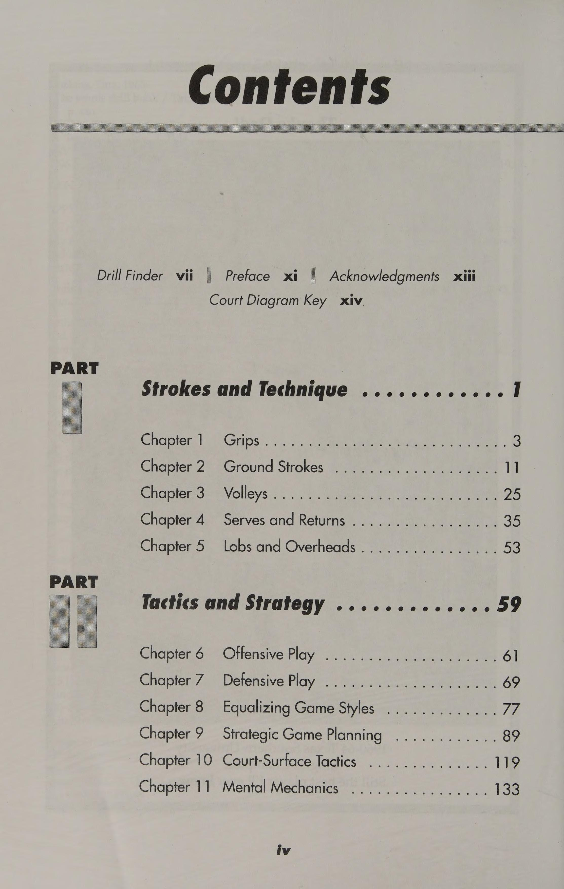
Hình 8: Sơ đồ bài tập hóa giải các phong cách đối thủ — Chiến thuật ép bóng cao vào điểm yếu và đổi hướng đột ngột.
Figure 8: Style-Equalizing Drills — High heavy balls to opponent weakness and sudden change of pace.
Hoạch Định Kế Hoạch Chiến Thuật Trận Đấu Toàn Diện Strategic Game Planning: Scouting Opponents & Tactical Execution
* chương 9 = Lập kế hoạch chiến lược trò chơi Thực hiện và thực hành nhất quán các bài tập chiến lược cho đánh đơn và đánh đôi sẽ giúp tay vợt có được kỹ năng và tốc độ cần thiết để chơi hiệu quả và thú vị. Theo lời của ông Bill Tilden, “Đánh đơn là trò chơi tốc độ, đánh đôi là trò chơi tinh tế”. Thành công phần lớn nhờ vào sự tự tin và tay vợt có được sự tự tin khi họ biết và bám sát những gì họ làm tốt nhất. Thông qua việc luyện tập cụ thể và lặp đi lặp lại, tay vợt có thể phát huy điểm mạnh và cải thiện điểm yếu của mình. Trò chơi của họ càng mạnh thì họ càng có nhiều khả năng thành công với kế hoạch trò chơi chiến lược trong một trận đấu. Luyện tập có mục đích giúp tay vợt cải thiện, khắc phục điểm yếu, học các kỹ năng mới và hiểu cách kết hợp chúng vào kế hoạch trò chơi chiến lược để thi đấu. Luyện tập là những thói quen cho phép tay vợt đánh một số lượng lớn bóng trong thời gian ngắn, do đó giúp họ sử dụng thời gian trên sân một cách hiệu quả và hiệu quả. Khoan củng cố việc tạo ra cú đánh thích hợp, cho phép tay vợt tạo rãnh cho các cú đánh của họ, cải thiện chuyển động tổng thể của sân và điều kiện thể chất, đồng thời cho phép tay vợt thực hành các tình huống xảy ra thường xuyên trong trận đấu. Một bài tập có thể mang tính giải trí, thú vị và phức tạp nhưng nếu nó không mô phỏng chặt chẽ các cú đánh hoặc tình huống xảy ra trong trận đấu thì sẽ lãng phí thời gian. Các cuộc tập trận phải đơn giản, cụ thể, mang tính giải trí, thú vị và mang tính giáo dục. Điều quan trọng nhất là chúng phải mô phỏng được các tình huống thi đấu thực tế. Chương sau chứa đầy những bài tập hiệu quả có thể mài giũa kỹ năng chơi. Việc tập luyện sẽ giúp tay vợt chuẩn bị cho áp lực của nội dung đánh đơn và đánh đôi trong quá trình thi đấu hoặc tập luyện match-play.
79—SINGLES CHALLENGE LEE Mục tiêu Bài tập này dạy cách kiểm soát sân và bóng. Mô tả Bài tập đặt tay vợt vào vị trí hoàn hảo để chuyền người qua lưới và chỉ ra hậu quả của một lần thực hiện không thành công. Tay vợt thực hiện A đứng sau vạch giao bóng và tay vợt B đứng ở đường biên đối diện. Chỉ sử dụng một nửa sân và ngõ, tay vợt A bắt đầu điểm bằng cách đánh bóng sâu cho tay vợt B. Tay vợt A áp sát vào lưới. Tay vợt B có thể không lốp bóng trong lượt trả bóng đầu tiên, nhưng sau đó, mọi chuyện sẽ ổn. Nếu tay vợt A giành được điểm, người đó sẽ bắt đầu điểm tiếp theo từ vị trí tương tự trên đường giao bóng. Nếu tay vợt A thua, người đó sẽ trượt trở lại đường cuối sân và tay vợt B trượt lên vạch giao bóng và bắt đầu điểm tiếp theo. Họ chơi đến 15 hoặc 21. Các biến thể Tay vợt có thể thử bài tập chéo sân này bao gồm cả con hẻm. Ngoài ra, cả hai đấu thủ đều có thể xuất phát ở đường cuối sân chỉ bằng một nửa sân (bao gồm cả đường đôi). Tay vợt A bắt đầu điểm bằng cách thả một cú đánh xuống đất sâu. Trò chơi tiếp tục cho đến khi một tay vợt đánh hụt. Sau đó, tay vợt phải thực hiện cú đánh ngắn phải vào lưới và tiếp tục thực hiện điểm cho đến khi hoàn thành. Trận đấu tiếp tục đến 15 hoặc 21, với việc trao đổi giao bóng cứ sau 5 lần giao bóng. Mẹo Nếu tay vợt nhận thấy có quá nhiều cú đánh của họ tiếp cận mục tiêu ngắn, họ nên kiểm tra xem liệu họ có hoàn toàn theo kịp mục tiêu hay không. Nếu họ có xu hướng đánh với độ xoáy lên quá cao, họ có thể sẽ mất bóng sớm, điều này cũng sẽ khiến các cú đánh bị hụt.
Mục tiêu Bài tập này thực hành kiểm soát độ sâu, động tác bằng chân, tính nhất quán, hướng bóng và điều hòa trên sân. Mô tả Cô lập bất kỳ nét nào giúp củng cố nó. Bài tập này buộc tay vợt phải sử dụng động tác chân tốt, kỹ năng bật nhảy sẵn sàng, hồi phục nhanh và kiểm soát đầu vợt để đánh tới khu vực được chỉ định của sân. Thực thi Tay vợt định vị mình trên đường cơ sở. Tay vợt A đánh thuận tay chéo bàn về phía thuận tay của tay vợt B. Cả hai tay vợt đều đánh về phía khu vực deuce-court và sử dụng các con hẻm đôi để tạo ra các góc sắc nét hơn và nhiều không gian đánh hơn. Trong khi tay vợt A và B đang đánh chéo bàn, hai tay vợt khác có thể đánh chéo bàn về phía khu vực sân có lợi. Một hoặc hai quả bóng có thể được chơi cùng một lúc. Các tay vợt tập trung ngang sân hoặc dọc biên và nỗ lực liên tục giữ bóng sâu qua vạch giao bóng. Các biến thể Tay vợt có thể thử chỉ chơi một quả bóng. Hai đấu thủ chỉ đánh dọc đường biên, và hai đấu thủ còn lại chỉ đánh chéo sân. Hoặc một đấu thủ có thể trả lại mọi quả bóng chéo sân, trong khi đối phương trả lại mọi cú đánh dọc biên. Người đầu tiên giành được 11 điểm sẽ thắng. Một biến thể khác là yêu cầu một tay vợt đưa bóng vào cuộc bằng một cú đánh chạm đất. Sau đó, tay vợt cố gắng thực hiện một cú đánh liên tục theo đường dọc hoặc ngang sân trong khi sử dụng tất cả các thế đứng, vòng quay, điều chỉnh sức mạnh và vị trí góc. Các mục tiêu có thể được đặt trên sân để tập trung và kiểm soát mục tiêu tốt hơn. Tay vợt chơi tới 11 điểm. Mẹo Động tác chân chính xác và khả năng điều hòa đạt được thông qua việc thực hiện các cú đánh chéo sân và các cú đánh hoặc cú vô lê trên mặt đất sẽ giúp tay vợt ở mọi cấp độ về thể chất và tinh thần tồn tại lâu hơn trong nhiều trận đấu kéo dài, mệt mỏi và có tính cạnh tranh chặt chẽ. Tay vợt phải biết rằng động tác chân trong quần vợt có nhiều tác dụng hơn là chỉ chạy theo bóng. Những bước chân tuyệt vời kết hợp sự duyên dáng của một vũ công ba lê, phản xạ của một võ sĩ quyền anh và sự căn thời gian của một tay vợt bóng rổ. Bài tập này cũng sẽ giúp tay vợt đạt được phong độ quần vợt đỉnh cao. Nếu họ có thể thực hiện bài tập này bằng cách sử dụng tất cả các biến thể trong một giờ và sau đó đi bộ mà không loạng choạng thì họ là những cỗ máy quần vợt!
81—CRAZY 8 VOLLEY Mục tiêu Bài tập có nhịp độ nhanh này thách thức khả năng vô lê của tay vợt khi bị căng thẳng và phát triển tay chân nhanh nhẹn. Mô tả Sử dụng một mẫu cố định, tay vợt cố gắng giữ bóng đi mà không bị trượt. Thực hiện Tay vợt A bắt đầu hành động bằng cách đánh vào tay vợt B, ở vị trí ngay trước mặt tay vợt A. Tay vợt B chuyền chéo lưới tới tay vợt C. Tay vợt C chuyền thẳng qua lưới tới tay vợt D, và tay vợt D chuyền chéo lưới về phía tay vợt A. Tay vợt không để bóng nảy lên. Ghi điểm là tùy chọn. Biến thể Tất cả tay vợt đều đứng trên lưới đối diện nhau. Tay vợt A và B, là đồng đội, chuyền tất cả các quả bóng dọc theo đường biên. Tay vợt C và D, là đồng đội, thực hiện cú vô lê tất cả các quả bóng chéo sân. Tất cả việc chơi đều diễn ra trên mạng. Ghi điểm là tùy chọn. Chơi với hai tay vợt đánh đơn hoặc bốn tay vợt đánh đôi. Mẹo Những tay vợt sợ lưới trước tiên nên tập chuyền bóng vào tường tập bóng (Backboard) để phát triển sự tự tin và phản xạ cần thiết để đánh bại những kẻ giật lưới và tung ra những cú vô lê mạnh mẽ, hiệu quả. Hãy nhớ rằng, tay nhanh kết hợp chân nhanh sẽ khiến bất kỳ tay vợt nào, dù ở cấp độ nào, đều khó bị đánh bại!
82—Chu kỳ ba cú đánh XXX Mục tiêu Bài tập này phát triển sự kết hợp của các bước mà tay vợt cần để sử dụng lưới thành thạo. Nó phát triển bước tách bóng tốt, cú đánh tiếp cận và cảm giác kỹ năng áp sát lưới. Mô tả Sự kết hợp ngọt ngào giữa các cú đánh này giúp tay vợt phát triển kỹ năng di chuyển bằng chân, sự tự tin, khéo léo và kỹ năng dự đoán. Thực hiện Máy chủ, được đặt bên trong một trong các ô giao bóng, thực hiện ba cú sút từ phía đối diện của lưới. Tất cả tay vợt phải đứng phía sau vạch giao bóng từ 3 đến 4 feet, phía sau khu vực sân giao bóng thuận lợi hoặc thuận lợi. Đấu thủ đầu tiên trong hàng đánh một cú tiếp cận lưới (Approach Shot) thuận tay, sút dọc biên, áp sát để thực hiện cú vô lê trái tay chéo sân và kết thúc bằng một cú vô lê tấn công thuận tay chéo sân. Tay vợt quay trở lại cuối dòng. Tay vợt thứ hai tiến tới thực hiện cú đánh trái tay, sút dọc biên, áp sát để thực hiện cú vô lê thuận tay chéo sân và kết thúc bằng cú vô lê tấn công trái tay chéo sân. Tay vợt nên liên tục di chuyển mũi khoan theo chu kỳ ba đòn để không trở nên bơ phờ và lười biếng chờ xếp hàng. Mẹo Tay vợt nên sử dụng bước nhảy sẵn sàng trước khi thực hiện cú tiếp cận lưới (Approach Shot) và bước tách đôi trước khi thực hiện cú vô lê.
ce Be __83—ĐƠN MƯỜI BÓNG Mục tiêu Bài tập này giúp phát triển sức chịu đựng, sự kiên định và động tác bằng chân. Mô tả Bằng cách phải chơi những quả bóng khó tiếp cận ở các khu vực khác nhau của sân đánh đơn, tay vợt có được cảm giác được bao quát trên sân và xây dựng sự tự tin về khả năng thực hiện bất kỳ cú đánh nào có thể xảy ra với họ. Kiểu khoan này cũng giúp tay vợt phát triển động tác chân duyên dáng cần thiết để có thể di chuyển từ bên này sang bên kia và lên và lùi vào bất kỳ thời điểm nào trong trận đấu. Thực thi Tay vợt chiếm vị trí phía sau đường cơ sở trong một tệp duy nhất. Một tay vợt bước lên giữa (T) trên đường cuối sân. Một máy chủ đưa bóng ở bất cứ đâu trên sân đánh đơn, cho ăn thuận tay, trái tay, thả bóng và lốp bóng. Tay vợt phải đánh 10 cú liên tiếp trong trận đấu. Đối với mỗi lần bắn trượt, máy chủ sẽ trừ 1 điểm. Ví dụ: nếu tay vợt bắn trúng 5 lượt liên tiếp và trượt lượt bắn số 6, người đó sẽ tụt xuống số 5. Mục tiêu là đạt được 10 lượt bắn liên tiếp không trượt. Sau đó, mục tiêu có thể tăng lên 15 hoặc 20. Biến thể Một tay vợt xuất phát sau đường cuối sân, và hai hoặc ba tay vợt khác chơi vào lưới. Người giao bóng bắt đầu mỗi điểm bằng cách đưa bóng đến các vị trí khác nhau trên sân và tay vợt ở cuối sân sẽ cố gắng giành được điểm. Những người vô lê cố gắng ngăn cản tay vợt thực hiện điều này. Tay vợt có thể di chuyển đến bất cứ đâu để lấy lại những cú đánh của tay vợt đơn, nhưng họ phải trở lại vị trí của mình trên lưới sau khi điểm kết thúc. Chơi tiếp tục cho đến khi tay vợt giành được 20 điểm. Tay vợt luân phiên nhau để mỗi người chiếm một vị trí trên lưới. Tay vợt cũng có thể thử tập 50 điểm. Tay vợt nhận được 2 điểm cho mỗi cú chuyền thẳng hoàn toàn nhưng chỉ được 1 điểm cho một điểm giành được khi phải chơi hết điểm. Mẹo Nếu bất kỳ lúc nào trong khi thi đấu, bạn được yêu cầu lùi về đường cuối sân để thu hồi cú lốp bóng (Lob) sâu, hãy bắt đầu di chuyển để nhận bóng trước khi bóng chạm vào băng lưới. Nếu bạn dành chút thời gian để xử lý hành động thì đã quá muộn. Hãy quên chuyện đó đi và chúc mừng đối thủ của bạn vì đã có một cú đánh đúng chỗ.
84—LÊN VÀ LẠI Mục tiêu Bài tập này phát triển kinh nghiệm của tay vợt ở sân sau trong việc đánh những cú lốp bóng (Lob) phòng thủ sâu và dạy họ cách chơi tích cực khi trả lại cú đánh từ trên cao của đối tác. Mô tả Bài tập này giúp tay vợt đưa ra những lựa chọn thu hồi thông minh và giữ thăng bằng khi phải di chuyển lên lưới rồi nhanh chóng quay trở lại để thu hồi phần trên và đặt lưới một cách hiệu quả. Thực hiện Cả hai đấu thủ đều vào vị trí trên đường cuối sân ở hai đầu đối diện của sân. Tay vợt A luân phiên đánh công và lốp bóng cho tay vợt B. Khi trả đòn, tay vợt B luân phiên thực hiện cú vô lê và cú đánh đầu. Tay vợt B phải di chuyển lên lưới để thực hiện cú vô lê và lùi lại để thực hiện cú đánh đầu. Ghi điểm là tùy chọn. Biến thể Tay vợt A ở vị trí phía sau đường cuối sân ở một bên của sân, sân thuận lợi hoặc sân thuận lợi, và tay vợt B ở trên lưới theo đường chéo so với tay vợt A. Tay vợt A sử dụng kết hợp các cú phát bóng và lốp bóng khi đánh các cú đánh, và tay vợt B sử dụng kết hợp các cú vô lê và cú đánh đầu. Tay vợt đầu tiên giành được 15 hoặc 21 điểm là người chiến thắng. 85 —CHU TRÌNH NĂM BÓNG TRÊN ĐẦU Mục tiêu Bài tập này giúp tay vợt học cách chuẩn bị để đánh một cú đập bóng trên cao (Overhead Smash) hiệu quả và cách phục hồi ở vị trí cân bằng và sẵn sàng đánh một quả khác. Mô tả Nhiều tay vợt để bóng trôi ra sau đầu khi cố gắng đánh qua đầu. Bài tập này giúp tay vợt học cách đánh qua đầu khi bóng ở phía sau họ và áp sát lưới sau khi đánh qua đầu. Tay vợt thực hiện A chiếm một vị trí trên lưới. Tay vợt B ở trên đường biên đối diện với tay vợt A. Tay vợt B bắt đầu chuỗi cú đánh cho tay vợt A. Tay vợt B thực hiện một cú lốp bóng (Lob) sâu cho tay vợt A. Tay vợt A thực hiện một cú đánh mạnh mẽ từ trên cao, áp sát và chạm lưới. Ngay lập tức tay vợt A chạm vào lưới, tay vợt B ném một cú lốp bóng (Lob) khác cho tay vợt A. Trình tự tiếp tục cho đến khi tay vợt A thực hiện được năm cú ném bóng thành công.
86—CHU TRÌNH MẪU SÁU BÓNG Mục tiêu Bài tập này phát triển sự tập trung và tính nhất quán cũng như xác định các điểm yếu trong trò chơi của tay vợt. Mô tả Bằng cách phải phản ứng với sự kết hợp của các cú đánh, tay vợt học cách thực hiện tất cả các cú đánh, cảm nhận về cú đánh tiếp theo và làm sắc nét các điểm bắt đầu, điểm dừng và bước tách. Tay vợt thực hiện A chiếm vị trí phía sau đường cuối sân và tay vợt B ở trên lưới. Tay vợt A đưa sáu quả bóng cho tay vợt B theo trình tự sau: một cú vô lê thuận tay, một cú vô lê trái tay, một cú lốp bóng (Lob) sâu qua đầu tay vợt B, một quả bóng ngắn về phía thuận tay để tiếp cận đường dọc, một cú vô lê trái tay và cuối cùng là một cú lốp bóng (Lob) cho một cú đập bóng qua đầu. Mô hình có thể được thay đổi. 87 —CRISS-CROSS VOLLEY POACH Mục tiêu Bài tập này phát triển các kỹ năng săn trộm và chuyền bóng. Mô tả Săn trộm đang chặn việc trả giao bóng của người nhận. Khi cố gắng săn trộm, tay vợt phải giao tiếp với đối tác của mình và thành thạo kỹ năng chuyền bóng. Người thi hành án xếp thành hai hàng đơn phía sau hộp dịch vụ cạnh trung tâm (T). Một máy chủ cung cấp một cú vô lê cho tay vợt đầu tiên ở một trong các đường. Tay vợt đó thực hiện cú vô lê dọc biên hoặc ngang sân, ngay lập tức chuyền ngang để thực hiện cú đánh trái tay và đánh bóng chéo bàn. Sau khi hoàn thành cú vô lê săn trộm, tay vợt di chuyển về cuối hàng đối diện. Tay vợt nên di chuyển theo đường chéo về phía trước để bắn trộm. Các biến thể Tay vợt chia thành hai đường phía sau đường cuối sân gần giữa (T). Một người giao bóng đưa các cú thuận tay rộng sang một bên và các cú đánh trái tay rộng sang bên kia (đồng thời). Ngay sau khi đánh, các đấu thủ chéo nhau về cuối hàng đối diện. Máy chủ giúp tay vợt di chuyển bằng cách đánh sang bên này rồi sang bên kia. Mẹo Tay vợt trên lưới có thể lừa gạt bằng cách giả vờ chặn cú trả giao bóng nhưng sau đó quay lại vị trí thông thường. Việc lừa gạt có thể tạo ra một cú đánh ngược dòng ngay vào kẻ lừa đảo, người có thể thực hiện một cú vô lê dễ dàng.
83 — BẮN TIẾP CẬN, BÓNG CHUYỂN, TRÊN ĐẦU Mục tiêu Bài tập này giúp tay vợt trung cấp (3.0 đến 3.5) phát triển tư duy nhanh và phản xạ nhanh trong quá trình mô phỏng trận đấu. Mô tả Bài tập này làm chậm hành động một chút. Bằng cách tách biệt các cú đánh cụ thể và kết hợp chúng thành một khuôn mẫu, tay vợt tìm hiểu thời điểm và vị trí để thực hiện các cú đánh tấn công trong thi đấu đấu đơn hoặc đấu đôi. Thực hiện Tay vợt chiếm vị trí phía sau đường cơ sở. Người giao bóng đánh bóng cho tay vợt đầu tiên trong hàng, người này phải trả lại bóng bằng cách tiếp cận thuận tay hoặc trái tay để đánh dọc đường biên. Ngay lập tức, đấu thủ di chuyển vào lưới để chuẩn bị đón một quả bóng khác từ người giao bóng và phải trả bóng bằng cú vô lê thuận tay hoặc trái tay. Đối với cú đánh tiếp theo, người giao bóng ném một quả lốp bóng lên và tay vợt phải di chuyển theo đường chéo và lùi qua đường giao bóng ở giữa và trả bóng bằng cách sử dụng một cú đập bóng trên cao (Overhead Smash). Tay vợt di chuyển đến cuối hàng và tay vợt tiếp theo đang chờ sẽ tiến lên để chơi. Biến thể Aserver đưa bóng cho các tay vợt ở vị trí trên đường cuối sân. Các tay vợt cuối sân cố gắng đưa bóng qua đối phương ở phía lưới đối diện. Tay vợt có thể sử dụng bất kỳ sự kết hợp nào của các cú đánh để chơi và giành điểm. Họ chơi 11 điểm rồi xoay theo chiều kim đồng hồ từng vị trí một. Mẹo Tay vợt nên sử dụng cú đánh tiếp cận khi mặt sân nhanh để gây áp lực lên đối thủ, họ sẽ có ít thời gian hơn để chuẩn bị đánh trả. Ngoài ra, một cơn gió ở phía sau tay vợt sẽ tăng thêm tốc độ cho cú đánh và khiến đối thủ phải lao vào đánh.
89—CHIP TIẾP CẬN VÀ CHẠM BÓNG CHẠM XXX Mục tiêu Bài tập này giới thiệu các giai đoạn đầu của các kỹ năng khéo léo và kịp thời tạo ra các động tác chân nhịp nhàng cần thiết cho các kiểu đánh đó. Mô tả Những cú đánh chạm hoặc khéo léo trong quần vợt đòi hỏi tay vợt phải phát triển cảm giác có thể cảm nhận được bóng trên vợt. Phát triển sự tiếp xúc hay cảm giác tốt sẽ thêm một điều mới mẻ. kích thước cho trò chơi của bất kỳ tay vợt nào. Kỹ thuật này mang lại cho tay vợt nhiều chiến lược chọn vị trí hơn là chỉ đập bóng 100% thời gian. Vị trí nhiều hơn sức mạnh sẽ giành được điểm chứ không phải ngược lại. Thi hành Tay vợt xếp thành hai hàng—một hàng phía sau sân deuce và một hàng phía sau sân thuận lợi. Tay vợt đầu tiên ở đường deuce thực hiện một cú đánh tiếp cận do máy chủ thực hiện ở đường biên đánh đơn. Sau đó, tay vợt di chuyển theo đường chéo về phía trước để tiếp cận lưới và thực hiện một cú vô lê siêu rộng, cố gắng thực hiện một cú vô lê chạm chéo sân. Sau đó, tay vợt tiến tới cuối đường lợi thế. Một bên thực hiện cú tiếp cận lưới (Approach Shot) thuận tay và cú vô lê chạm tay trái tay, và bên kia thực hiện cú tiếp cận lưới (Approach Shot) trái tay bằng cú vô lê chạm thuận tay. Tay vợt có thể bắt đầu bài tập từ từ và tăng dần tốc độ xoay để phát triển bước tách nhanh và áp sát theo đường chéo vào lưới để thực hiện cú vô lê. Mẹo Phát triển trò chơi cảm ứng sẽ khiến bất kỳ tay vợt nào cũng trở thành đối thủ cạnh tranh thông minh hơn và nguy hiểm hơn.
90 — BÓNG CHUYỀN dao động Mục tiêu Bài tập này phát triển động tác chân nhịp nhàng nhanh, phản ứng nhanh với bóng, thay đổi hướng khi thu hồi, vị trí cú bắt lưới (Volley) và vuốt đất âm thanh. Mô tả Chạy rộng cho các cú thuận tay và trái tay xen kẽ được gọi là dao động. Bài tập này giúp tay vợt cải thiện kỹ năng chạm đất, động tác bằng chân và tính kiên định. Tay vợt thực hiện A chiếm vị trí phía sau đường cuối sân và tay vợt B chơi lưới. Tay vợt A chỉ đánh những cú chạm đất dọc theo đường biên và tay vợt B, người chuyền bóng, chỉ đánh chéo sân. Cả hai tay vợt đều di chuyển bằng bóng hoặc sút. Tay vợt A đánh một cú thuận tay dọc theo đường chuyền trái tay của tay vợt B, nếu tay vợt B thuận tay phải. Tay vợt B tung cú vô lê chéo bàn về phía trái tay của tay vợt A. Tay vợt A trả lại cú đánh trái tay dọc theo đường biên cho cú vô lê thuận tay của tay vợt B. Tay vợt B thực hiện cú vô lê này một lần nữa. Họ duy trì mô hình này lâu nhất có thể. Vì đây là bài tập về tính nhất quán nên không có tính điểm. Xoay là tùy chọn. Các biến thể Tay vợt A ở sau đường cuối sân và tay vợt B ở trên lưới. Cả hai đấu thủ chỉ sử dụng một bên sân và quay về giữa (T) mỗi lần sau khi đánh. Vận động viên vô lê đánh cú vô lê thuận tay về phía trái tay của tay vợt cuối sân. Họ luân chuyển vị trí. Một biến thể khác là dành cho các đấu thủ hoặc các đấu thủ xếp sau đường cuối sân bắt đầu ở giữa (T). Máy chủ ở vị trí trên lưới ở phía bên kia cung cấp các cú đánh luân phiên cho thuận tay và trái tay của tay vợt. Mẹo Mặt vợt điều khiển hướng đánh. Bóng đi theo hướng hướng về phía dây vì nó nảy ra khỏi vợt theo một góc vuông.
91—ĐÁNH NGƯỜI CHẠY VÀ CHẠY < >< >< l>< >< >< Mục tiêu Bài tập này giúp tay vợt học cách vượt qua trên đường chạy, phục hồi nhanh chóng và xây dựng khả năng bao quát toàn sân, sự tự tin, sự nhanh nhẹn và tốc độ. Mô tả Chạy để thực hiện bất kỳ cú đánh nào trong môn quần vợt đòi hỏi phải có động tác chân cực tốt, căn thời gian hợp lý và lựa chọn cú đánh tốt. Tay vợt phải phục hồi và chuẩn bị cho sự trở lại. Bài tập này giúp tay vợt cô lập và luyện tập các cú đánh trên mặt đất, phục hồi và quyết định vị trí đánh. Thực hiện Hai hoặc ba đấu thủ bắt đầu sau vạch cuối sân ở một bên sân. Hai hoặc ba tay vợt khác vào vị trí trên lưới ở phía đối diện nhưng cùng phía với trọng tài cơ bản sao cho họ đối mặt với nhau. Một người giao bóng sẽ cung cấp cú đánh chạm đất cho vận động viên ném bóng đầu tiên trong hàng, người này sẽ thực hiện cú đánh theo đường thẳng cho vận động viên vô lê. Họ cùng nhau di chuyển khắp sân. Người giao bóng đưa một quả bóng khác cho vận động viên ném bóng, người này sẽ đánh một cú sút dọc biên khác cho cùng một vận động viên vô lê ở phía đối diện của sân. Họ tiến đến cuối hàng tương ứng của mình và hai tay vợt tiếp theo di chuyển vào vị trí. Họ lặp lại bài tập này bắt đầu từ phía đối diện của sân. Mẹo Khi tay vợt đang ở trên lưới và một quả bóng đang lao thẳng về phía họ với tốc độ cao, họ nên chuyển suy nghĩ của mình sang sự an toàn trái tay. Cú đánh trái tay bao phủ nhiều diện tích hơn so với cú đánh thuận tay hoặc cúi xuống.
92—PHỤC HỒI Mục tiêu Bài tập này giúp tay vợt phát triển các đợt tăng tốc nhanh chóng và xen kẽ chúng với bước trượt để cho phép phục hồi vào vị trí thích hợp để thực hiện cú đánh tiếp theo. Việc vuốt bóng tới hiệu quả đòi hỏi cơ thể, chân và bàn chân phải ở tư thế tốt nhất có thể. Mô tả Khả năng phục hồi hiệu quả sau khi thực hiện cú đánh quyết định liệu tay vợt có thể giữ nguyên điểm hay mất điểm. Nếu tay vợt vẫn cố gắng lấy lại thăng bằng sau khi đánh cú đánh đầu tiên, rất có thể người đó sẽ mất điểm. Thực hiện Tay vợt A chiếm vị trí trên lưới và tay vợt B được đặt ở vị trí giao nhau giữa đường cơ sở đối diện và đường biên. Tay vợt B phải phục hồi khu vực này sau mỗi lần chạm đất. Tay vợt B có thể đánh các cú đánh dọc biên, chéo sân hoặc kết hợp các cú đánh. Tay vợt A đánh quả bóng đầu tiên cho tay vợt B, quả bóng thứ hai vào giữa sân và quả bóng thứ ba vào đường biên xa. Họ tiếp tục diễn tập này cho đến khi tay vợt B thực hiện được một loạt cú đánh mà không trượt. Sau đó họ chuyển đổi vị trí. Tay vợt có thể xoay người sau mỗi chuỗi cú đánh. Tip Balance rất quan trọng trong quần vợt. Bằng cách kết hợp bước trượt vào quá trình hồi phục, tay vợt có thể di chuyển theo bất kỳ hướng nào.
93— BÓNG CHUYỀN NHANH Mục tiêu Bài tập này phát triển phản xạ nhanh, động tác chân và kiểm soát bóng bằng tay. Mô tả Tay vợt có thể thực hiện công cụ luyện tập này trước khi thi đấu như một bài tập khởi động. Bài tập này giúp tay vợt cải thiện động tác bằng chân, phản xạ nhanh hơn và có được cảm giác bóng và sân tốt hơn. Thực hiện Một hoặc hai đấu thủ vào vị trí trên lưới và thực hiện cú vô lê thẳng về phía nhau hoặc theo đường chéo với nhau. Nếu hai tay vợt đang khoan, cả hai tay vợt đều đứng trên lưới đối mặt với nhau. Nếu bốn tay vợt đang khoan, hai người ở mỗi bên, quay mặt vào nhau. Tay vợt đánh bóng bằng cú vô lê thuận tay hoặc trái tay, giữ bóng trong cuộc mà không để bóng nảy lên. Khi tay vợt tiến bộ hơn, tốc độ của bóng có thể tăng lên và tay vợt có thể luân phiên giữa các pha trao đổi bóng thuận tay và trái tay. Tay vợt nên tách bước trong mỗi cú đánh bóng và sau mỗi cú đánh nên tách bước trước khi đánh bóng. Biến thể Tay vợt A và B đứng ở vạch giao bóng đối diện nhau. Họ chuyền bóng qua lại, di chuyển với mỗi cú sút cách lưới một foot. Khi tay vợt đã thành thạo việc áp sát, họ có thể lùi lại bằng mỗi cú vô lê và sau đó đóng lại. 94—TIẾP CẬN BÓNG CHUYỀN MỘT ĐƠN Mục tiêu Bài tập này làm chậm tốc độ để tay vợt có thể học cách tiếp cận lưới và chuẩn bị đánh một cú vô lê. Mô tả Bài tập này cho phép tay vợt tập trung vào việc phát triển lối chơi thông minh ở đường giữa. Thực hiện Một máy chủ chiếm một vị trí trên đường giao bóng và tay vợt xếp hàng sau đường giao bóng đối diện. Lần lượt, các tay vợt tiến sát vào lưới, tách bước rồi thực hiện cú vô lê thuận tay hoặc trái tay. Sau khi chuyền bóng, tay vợt lùi về cuối hàng và tay vợt tiếp theo tiến về phía trước. Người giao bóng có thể tăng số lượng cú vô lê hoặc trộn lẫn các cú vô lê thuận tay và trái tay. Các biến thể Tay vợt xếp hàng tại cột lưới và người giao bóng đánh bóng từ phía đối diện. Tay vợt đầu tiên trong hàng bước sang giữa sân, chạm vào dải băng giữa sân, xoay người sang một bên để bước lùi về phía sau, sau đó trả bóng bằng cách đánh một cú đánh trên đầu. Sau đó, tay vợt tiến sát vào lưới để trả lại một quả bóng khác bằng cú vô lê.
95 —BÓNG NGẮN Mục tiêu Bài tập này phát triển thời gian phản ứng tốt và cảm giác xác định và đánh bóng ngắn. Mô tả Bài tập này giúp tay vợt xác định bóng ngắn, tự tin di chuyển và tấn công, đánh bóng đến khu vực được chỉ định và theo bóng lên lưới để dứt điểm. Tay vợt thực hiện A chiếm vị trí ở vạch giao bóng và đánh bóng sâu cho tay vợt B, người đang ở vị trí ở đường biên đối diện. Tay vợt B đánh bóng sâu trở lại khu vực được chỉ định trên sân, khu vực này có thể được tay vợt xác định trước ở bất kỳ đâu. Sau đó, tay vợt A tung một cú đánh ngắn cho tay vợt B, người này cố gắng lấy lại cú đánh và đặt nó một cách mạnh mẽ ra khỏi tay vợt A. Tay vợt A nên cố gắng đánh vào một khu vực cụ thể của sân. Biến thể Một người giao bóng đứng ở cột lưới ngay bên ngoài sân và đưa một quả bóng ngắn cho một trong những đấu thủ ở sân sau, A hoặc B, những người đứng đối diện nhau trên đường cuối sân. Tay vợt nhận bóng thực hiện cú sút tiếp cận và đưa bóng vào lưới. Đối thủ cố gắng chuyền bóng hoặc lốp bóng để giành điểm. Họ chơi trò chơi 11 điểm và sau đó luân phiên vị trí.
___96—Tấn công chéo sân Mục tiêu Bài tập này giúp nâng cao kiến thức về thời điểm và cách thức tấn công bóng ngắn cũng như vị trí đánh bóng. Mô tả Việc xác định và phản ứng với một số cú đánh nhất định trong quần vợt đôi khi có thể khiến bạn nản lòng. Bài tập này giúp tay vợt phát triển sự tự tin cần thiết để di chuyển vào và tiếp tục di chuyển lên lưới để đánh và thực hiện cú vô lê. Tay vợt thực hiện A và tay vợt B được bố trí ở các đường cơ sở đối diện nhau và bắt đầu một pha đánh bóng chéo sân. Khi một quả bóng ngắn xuất hiện, đấu thủ nhận bóng phải di chuyển vào và thực hiện cú đánh tiếp cận dọc theo đường biên ngang. Tay vợt ở sân sau, tay vợt A, có thể cố gắng vượt qua tay vợt B, nhưng tay vợt B sẽ sẵn sàng nhảy qua cú vô lê. Các tay vợt thực hiện bài tập này cho đến khi cả hai có thể xác định được chuyển động mà đối thủ thực hiện ngay trước khi họ cố gắng thực hiện một cú chuyền bóng hủy diệt. Mẹo Dự đoán là một phản ứng đã học được. Càng chơi nhiều, tay vợt càng học cách “cảm nhận” kiểu trả đòn mà đối thủ có thể đánh. Việc đoán trước bóng ngắn chắc chắn sẽ giúp việc thực hiện các cú đánh tiếp cận dễ dàng hơn. phiến Mục tiêu Bài tập này giúp tay vợt phát triển các tốc độ bùng nổ nhanh chóng và xen kẽ chúng với bước trượt để phục hồi về vị trí thích hợp để thực hiện cú đánh tiếp theo. Việc vuốt bóng tới hiệu quả đòi hỏi cơ thể, chân và bàn chân phải ở tư thế tốt nhất có thể. Mô tả Bài tập này giúp tay vợt học cách đánh vào một khu vực cụ thể, phục hồi, trở lại vị trí, chuẩn bị đánh lại vào một khu vực cụ thể, phục hồi và trở lại vị trí. Bài tập xây dựng các kỹ năng phục hồi mạnh mẽ. Tay vợt thực hiện A ở bên phải đường cuối sân và tay vợt B ở giữa đường cơ sở đối diện. Tay vợt A bắt đầu bằng cách đánh xen kẽ các cú đánh chéo sân và đường dọc cho tay vợt B. Tay vợt B phải đánh lại từng quả bóng cho tay vợt A. Sau vài phút, họ đổi bên.
98 —SÂN NGẮN Mục tiêu Bài tập này giúp tay vợt học cách kiểm soát tốc độ của bóng trong một khu vực hạn chế của sân đồng thời phát triển các nền tảng mà họ cần để thực hiện những cú đánh khéo léo. Mô tả Bài tập này tách biệt những cú đánh khéo léo bằng cách cho phép tay vợt chỉ sử dụng những cú đánh chạm và những cú vô lê chạm. Thực hiện Hai hoặc nhiều tay vợt có thể thực hiện bài tập này. Họ phải ở trong khu vực sân giao bóng, mỗi sân ở hai bên lưới. Tay vợt cố gắng sử dụng các cú đánh chạm và góc để giữ bóng trong cuộc. Họ phải tung ra 10 đến 15 cú đánh liên tiếp trước khi sử dụng cú đánh trong một trận đấu. 99 - DEEP SHOT Mục tiêu Bài tập này giúp tay vợt học cách tự tin thực hiện những cú đánh xuyên sâu từ đường cuối sân. Mô tả Bài tập buộc tay vợt phải giữ bóng sâu trong sân nếu không sẽ mắc lỗi đánh quá ngắn. Tay vợt cần học cách đặt bóng sâu ở khu vực sân sau một cách nhất quán và tự tin. Thực hiện Ở vị trí ở đường cuối sân, tay vợt A bắt đầu cú đánh bóng bằng một quả bóng được đưa sâu cho tay vợt B, người đang ở vị trí ở đường cuối đối diện. Trận đấu tiếp tục cho đến khi bóng rơi vào hoặc bên trong khu vực sân giao bóng. Tay vợt đánh ngắn sẽ mất điểm. Hai hoặc bốn tay vợt có thể thực hiện bài tập này. Họ chơi trò chơi 11 điểm. Các biến thể Tay vợt có thể sử dụng ô giao bóng hoặc toàn bộ nửa sân bao gồm cả đường đánh đôi. Họ có thể thử đánh chéo sân ngắn trước rồi từ từ trượt trở lại đường cuối sân. Họ có thể thử chơi cả trận trong khu vực sân giao bóng hoặc có thể cố gắng giữ bóng trong cuộc chỉ bằng một nửa diện tích sân trong khu vực sân giao bóng.
100—Nửa sân HUSTLE Mục tiêu Bài tập này có tác dụng cải thiện động tác bằng chân, sự nhanh nhẹn và tốc độ trong picicasl sey! mô phỏng. Mô tả Bài tập này buộc tay vợt phải đổi hướng và chạy nước rút những quãng đường ngắn nhiều lần trong khoảng thời gian một phút. Quần vợt đòi hỏi tốc độ bùng nổ trong thời gian ngắn và tay vợt cần có sự khéo léo để phản ứng và phục hồi với sự cân bằng và tự tin. Tay vợt thực hiện A đứng trên lưới và tay vợt B đứng trên vạch giao bóng. Tay vợt A tung ra những cú vô lê góc mềm buộc tay vợt B phải bỏ chạy. Tay vợt B phải chạm lại từng quả bóng cho tay vợt A. Nếu bỏ lỡ một quả bóng, tay vợt A ngay lập tức đưa quả bóng tiếp theo vào cuộc. Tay vợt B không nên ngừng hối hả cho đến khi hết một phút. Mẹo Tay vợt phải luôn di chuyển đôi chân của mình khi ở trên sân. Nếu chúng ngừng di chuyển, chúng sẽ chết dưới nước. 101— SÚT TIẾP CẬN, SÚT CHUYỂN ĐI Hình ảnh Sila Mục tiêu Bài tập này hỗ trợ việc phát triển các cú đánh chuyền mạnh đồng thời mô phỏng lối chơi trận đấu. Mô tả Cú đánh tiếp cận là những cú đánh trên mặt đất được thực hiện với mục đích theo sau họ lên lưới để giành quyền kiểm soát lưới và cố gắng thực hiện một cú vô lê chiến thắng. Bài tập này giúp tay vợt có được kiến thức cơ bản về thời điểm thực hiện cú đánh tiếp cận và vị trí đánh nó. Thực thi Tay vợt A, B và C được đặt phía sau một đường cơ sở và tay vợt D được đặt phía sau đường cơ sở đối diện. Tay vợt A, B và C lần lượt thực hiện các cú đánh tiếp cận theo đường thẳng cho tay vợt D, người này cố gắng vượt qua tay vợt đang tiếp cận. Tay vợt nên chơi ra điểm. Sau khi một tay vợt tích lũy được 11 điểm, tay vợt sẽ luân phiên. Không được phép thùy.
102—NET APPROACH Mục tiêu Bài tập này phát triển các kỹ thuật kiểm tra-tạm dừng, tách bước hoặc bước lắp bắp rõ ràng và ngắn gọn cũng như các kỹ năng giao tiếp nhóm tốt. Mô tả Bài tập này hướng dẫn tay vợt cách giao tiếp và di chuyển hiệu quả để thực hiện cú đánh tiếp cận với tư cách một đội. Thực hiện Hai tay vợt bắt đầu ngay trước đường cuối sân. Với mỗi cú đánh được máy chủ cung cấp, cả hai đều tiến về phía trước vài bước sau khi một trong số họ thực hiện cú đánh. Đến lượt đánh thứ ba hoặc thứ tư, cả hai tay vợt phải lên lưới và thực hiện một pha trao đổi vô lê nhanh. Họ tiếp tục thực hiện bài tập và tăng tốc độ chơi. Tay vợt cố gắng lên lưới càng nhanh càng tốt. Mẹo Tay vợt nên chắc chắn sử dụng bước tách rời, tiếp đất bằng lòng bàn chân sau mỗi cú vô lê. 103—Tấn công và đánh bóng "eee Mục tiêu Bài tập này phát triển kỹ thuật giao bóng và chuyền bóng. Mô tả Giao bóng và chuyền bóng là một kế hoạch trò chơi mang tính quyết liệt trong đấu đấu đôi. Đội kết hợp phương pháp này trong chiến lược đánh đôi của mình sẽ là một lực lượng đáng được tính đến. Thực hiện Người giao bóng phải giao bóng và vô lê trong mỗi lần giao bóng, đầu tiên và thứ hai, nếu không đội sẽ mất điểm. Họ chơi một bộ bằng phương pháp này. Mẹo Nếu bóng chạm lưới và rơi xuống phần sân đối phương, các tay vợt nên lao vào lưới để cắt các góc có thể có và buộc phải thực hiện một cú sút có tỷ lệ thấp mà đối thủ không thể thực hiện được.
104—ĐÔI TIÊU HẤP DẪN Mục tiêu Bài tập này giúp phát triển kỹ năng giao tiếp, làm việc nhóm và phản xạ nhanh cần thiết để chơi trên lưới xuất sắc. Mô tả Để phát triển phản xạ nhanh khi thực hiện cú vô lê và đoán trước hướng sút, bài tập này buộc cả hai tay vợt phải ở trong chảo rán mà không có lựa chọn lùi lại. Tay vợt cố gắng xây dựng sự tự tin cần thiết để thiết lập, tấn công và giành điểm. Thực hiện Bài tập này giống hệt với bài tập ớt cay đơn ngoại trừ việc nó có sự tham gia của bốn người và cho phép thực hiện những cú vô lê có góc nhọn. Tay vợt A và B đấu với tay vợt C và D. Các đội được bố trí phía sau vạch giao bóng, mỗi đội đứng sau một ô giao bóng đối diện nhau. Tay vợt A bắt đầu trao đổi cú bắt lưới (Volley) bằng cách đưa bóng đầu tiên, đánh tay trái, cho một trong các tay vợt ở phía đối diện của lưới. Cuộc trao đổi với nhịp độ nhanh tiếp tục cho đến khi một tay vợt mắc lỗi, thực hiện cú vô lê thắng lợi hoặc thực hiện thành công cú lốp bóng (Lob) qua đối thủ. Tay vợt có thể đánh xung quanh hoặc xuyên qua giữa đối thủ nếu họ tìm được sơ hở. Họ chơi tới 15 hoặc 21 điểm rồi luân chuyển vị trí. 105—ĐÔI HUSTLE Mục tiêu Bài tập này giúp tay vợt học cách di chuyển đến các cú đánh và khu vực khác nhau trên sân một cách hiệu quả với một đồng đội khi chơi đôi. Mô tả | Bài tập này làm chậm tốc độ thi đấu để tay vợt học được khi nào nên thực hiện cú đánh, khi nào nên từ bỏ đối tác và cách di chuyển cùng nhau như một cỗ máy được bôi dầu tốt. Thực hiện Người giao bóng đưa một rổ bóng lớn lên trên lưới. Các tay vợt của đội A và B đứng ở vị trí trên lưới ở phía đối diện. Người giao bóng nhẹ nhàng đưa bóng từ bên này sang bên kia và xuống giữa tay vợt A và B. Khi bóng được đánh sang bên phải, tay vợt A và B phải di chuyển cùng nhau sang bên phải để đánh, cố gắng giữ khoảng cách như nhau. Tương tự như vậy, nếu bóng bị đánh sang bên trái, cả hai tay vợt nên di chuyển cùng nhau để cố gắng thực hiện cú đánh. Nếu bóng đi vào giữa, một tay vợt sẽ gọi bóng. Tay vợt phải đánh nhẹ nhàng; đây không phải là một bài tập để chơi điểm. Cho dù máy chủ lob, rớt hay bất cứ điều gì, cả hai tay vợt đều phải di chuyển cùng nhau. Họ chơi liên tục trong hai phút liên tục.
106—ĐÔI TIẾP CẬN LOB VÀ PHỤC HỒI Mục tiêu Một thành phần quan trọng trong đánh đôi là học cách xác định thời điểm tiếp cận lưới và cách thu hồi sau khi đối thủ ném một cú lốp bóng (Lob) qua đầu của đội. Mô tả Bài tập này giúp một đội học cách tận dụng bóng ngắn trong đấu đôi và trong trường hợp một tay vợt bị kéo về đường cuối sân, phải nhanh chóng quay lại vị trí tấn công. Tay vợt thực hiện A và B được bố trí theo đội hình đôi tiêu chuẩn. Máy chủ hoặc người hướng dẫn được đặt ở đường dịch vụ đối diện. Người giao bóng đưa một quả bóng ngắn cho tay vợt A, người này thực hiện cú sút tiếp cận chéo sân và tiến tới lưới với tay vợt B. Người giao bóng trả bóng bằng một cú lốp bóng (Lob) qua đầu tay vợt B. Tay vợt A thu hồi bóng và lốp bóng chéo sân. Đồng thời, tay vợt B di chuyển tới che chỗ mà tay vợt A bỏ trống. Tay vợt A lại thực hiện cú lốp bóng (Lob) cao vào lưới. Người giao bóng trả lại cú lốp bóng (Lob) bằng một quả bóng bay ở giữa, tay vợt B cắt đứt quả bóng này bằng một cú vô lê vung mạnh mẽ. Chơi là liên tục. Biến thể Yêu cầu cả hai tay vợt A và B cùng nhau bắt đầu trở lại đường cuối sân. Người giao bóng hoặc người hướng dẫn đưa một quả bóng ngắn cho một trong hai tay vợt A hoặc B. Cả hai tay vợt phải áp sát lưới. Nếu tay vợt B thực hiện cú đánh tiếp cận chéo sân, thì người giao bóng sẽ đánh bóng qua đầu tay vợt B và tay vợt A sẽ vượt qua và che chỗ trống của tay vợt B. Tay vợt B nên trả cú lốp bóng (Lob) bằng một cú lốp bóng (Lob) chéo sân, lốp bóng sâu và thực hiện cú lốp bóng (Lob) trở lại lưới. Chơi là liên tục. Mẹo Trong cú đánh tiếp cận trái tay hoặc cú vô lê, điều cực kỳ quan trọng là tay vợt phải nhớ giữ vai của họ sang một bên trong suốt cú đánh. Tay vợt nên sử dụng kiểu cầm vợt bán tây hoặc hoàn toàn phía tây để có thể tạo ra xoáy lên cực mạnh cho cú vô lê vung vợt.
107—Cú bắt lưới (Volley)-LOB-Cú bắt lưới (Volley) Mục tiêu Bài tập này giúp tay vợt phát triển cú sút cú bắt lưới (Volley) bóng ngụy trang và tìm hiểu thời điểm và vị trí để đánh nó trong một trận đấu đơn hoặc đôi mô phỏng. Mô tả Cú vô lê lốp bóng, một cú sút ngoạn mục và bổ ích, được mô tả là một cú đập ngược từ trên cao. Đó là đòn đánh lén mà tay vợt phải luyện tập trong các tình huống trong game. Bản thân cú đánh là một cú vô lê thấp được lốp bóng bất ngờ bằng xoáy lên hoặc cắt lát, thường là từ bên trong khu vực sân giao bóng. Tay vợt thực hiện Al và B1, những người được bố trí trên đường giao bóng, di chuyển rộng về phía đường biên đơn. Máy chủ chuyển bóng cho tay vợt A1, người này chuyền bóng cho tay vợt B1. Tay vợt B1, ở vị trí đối diện với tay vợt A1, lốp bóng qua tay vợt Al cho tay vợt C1, ở vị trí ở giữa đường cuối sân (T). Tay vợt C1 kết thúc chuỗi trận bằng một cú lốp bóng (Lob) qua đầu tay vợt B1 về phía cuối sân. Để thêm gia vị cho mọi thứ, bốn tay vợt bổ sung có thể tham gia và biến điều này thành một cuộc tập trận đôi. Tay vợt Al và A2 được bố trí trên đường giao bóng. Tay vợt B1 và B2 được bố trí trên đường giao bóng đối diện, đối mặt với tay vợt Al và A2. Tay vợt C1 và C2 được xếp ở vị trí cuối cùng phía sau tay vợt Al và A2. Hai tay vợt bổ sung chờ đợi để thay thế bất kỳ tay vợt nào thực hiện cú đánh sai. Tay vợt D1 đợi ngoài sân cạnh đường cuối sân bên cạnh tay vợt C1 và C2. Tay vợt D2 đợi ngoài sân phía sau đường biên đối diện. Tay vợt chơi trò chơi 21 điểm bằng phương pháp khoan này để bắt đầu tính điểm. Trò chơi không bắt đầu cho đến khi chuỗi cảnh quay được hoàn thành thành công. Sau khi tay vợt C1 hoặc tay vợt C1 và C2 lốp bóng qua tay vợt B1 hoặc tay vợt B1 và B2, tay vợt được phép tính điểm.
108—BẢY BÓNG CHUYỂN NHANH Mục tiêu Bài tập này giúp phát triển tay và chân nhanh, sức chịu đựng, cảm giác bóng và khả năng kiểm soát. Mô tả Bằng cách hạn chế chơi trong khu vực sân giao bóng và không để bóng rơi, tay vợt phát triển phương pháp tách bước cần thiết để thực hiện cú vô lê tốt, nhanh tay, dự đoán cú đánh và sự tự tin để hòa nhập khi mọi thứ nóng lên trong khi thi đấu. Thực hiện Tay vợt A và C được bố trí trên lưới, đứng đối diện với tay vợt B và D. Bất kỳ tay vợt bổ sung nào đợi ngoài sân sẵn sàng nhảy vào khi bất kỳ tay vợt nào thực hiện cú đánh. Để bắt đầu hành động, máy chủ sẽ đưa một quả bóng cho tay vợt A. Tay vợt A đánh vào tay vợt B hoặc tay vợt D. Trò chơi tiếp tục cho đến khi một tay vợt để bóng chạm đất. Điểm kết thúc khi tay vợt để bóng rơi hoặc trượt hoàn toàn. Tay vợt tiếp theo trong hàng sẽ có một vị trí. Đây là một bài tập cá nhân; Tay vợt A và B không phải là đối tác, tay vợt C và D cũng không phải là đối tác. Các biến thể Chơi có thể diễn ra theo đội. Tay vợt có thể sử dụng tay không thuận để tăng cường sức mạnh và khả năng kiểm soát ở cả hai bên cơ thể. Mẹo Khi đánh những cú vô lê sắc nét, xuyên thấu, tay vợt không nên đưa đầu vợt qua vai. Ném bóng vào tường tập bóng (Backboard) là một cách hoàn hảo để phát triển chuyển động đấm hoặc chặn cần thiết để thực hiện cú vô lê.
109—Thử thách tiếp cận-bắn bóng đôi mục tiêu Bài tập này giúp phát triển đòn tấn công và phòng thủ bóng thấp và bóng ngắn đôi, cú đánh tiếp cận và chiến lược tấn công lưới bằng cách áp sát hoặc lùi lại để ghi điểm. Mô tả Bài tập này tách biệt cú đánh tiếp cận và giúp tay vợt học cách hoàn thành cú tiếp cận lưới (Approach Shot) lưới sau khi thực hiện cú đánh tiếp cận. Thực hiện Hai đội đặt mình ở vị trí phía sau đường cơ sở đối diện. Máy chủ cung cấp cho đội A một cú đánh ngắn, nhẹ nhàng vào đường giao bóng. Người giao bóng phải cho mỗi đội hai cơ hội để đưa bóng vào cuộc. Đội A phải thực hiện cú sút tiếp cận rồi áp sát vào lưới. Đội đầu tiên giành được 21 điểm sẽ thắng trận đấu. Các biến thể Là phần mở rộng của thử thách tiếp cận cú đánh đầu tiên, bài tập này giúp tay vợt xác định những cú đánh tốt nhất để sử dụng cho việc tấn công và di chuyển lên lưới. Đội A và B đứng sau đường cơ sở đối lập nhau. Để bắt đầu, người giao bóng đưa bóng cho đội A. Cả hai đội bắt đầu tập hợp lại. Khi một đội đánh bóng vào khu vực sân giao bóng của phần sân đối diện, đội nhận cú đánh ngắn phải cùng nhau tiến về phía lưới nếu không sẽ tự động mất điểm. Các đội chơi hết điểm. Đội đầu tiên giành được 21 điểm sẽ thắng trận đấu. Một biến thể khác là có hai đội cách vạch giao bóng đối diện nhau vài feet. Một người giao bóng đưa một quả bóng mềm, thấp cho đội A, đội này sẽ cố gắng trả lại nó một cách nhẹ nhàng và thấp cho đội B. Sau đó, cả hai đội tiến sát về phía lưới và cố gắng giữ bóng ở mức thấp để áp sát phía sau và đánh trúng người chiến thắng.
Mục tiêu Bài tập này giúp củng cố các nguyên tắc cơ bản về tiếp cận lưới, tấn công và bảo vệ lưới cũng như chống lại cuộc tấn công vào lưới. Mô tả Bài tập này có tác dụng thiết lập lối chơi sao cho một cú sút được lên kế hoạch trước buộc một đội phải di chuyển lên, thực hiện một cú sút tiếp cận và sau đó cam kết tấn công vào lưới. Bài tập cũng giúp tay vợt học cách phòng thủ trước những đợt tấn công vào lưới. Thực hiện Bốn tay vợt vào vị trí trong đội hình đôi tiêu chuẩn. Người giao bóng thực hiện cú giao bóng thứ hai và theo sau nó vào lưới. Người nhận quay trở lại và di chuyển lên lưới. Tay vợt cố gắng sử dụng những cú vô lê nhẹ, thấp để buộc đối thủ phải chuyền bóng về phía mình để họ có thể di chuyển vào và đánh người chiến thắng. Nếu người nhận bóng có thể thực hiện cú trả bóng sớm từ ngay trong sân thi đấu và giữ cú trả bóng ở khoảng cách rộng, thì người đó có cơ hội tuyệt vời để giành được điểm trên lưới. Một pha trả bóng thuận lợi giúp thiết lập điểm cho những người chiến thắng bằng cú vô lê chắc chắn. Tay vợt chơi hết số điểm để hoàn thành. Biến thể Máy chủ chỉ được phép giao bóng và chuyền chéo sân. Người nhận bóng phòng thủ bằng cách lùi lại sau khi trả bóng và ghi điểm bằng cách kết hợp các cú lốp và cú thúc bóng cao, sâu. Mẹo Sau khi thực hiện một cú lốp bóng (Lob) cao, sâu, xuyên thấu, tay vợt không nên ngồi yên xem hành động mà hãy tấn công vào lưới.
111—TIẾP CẬN XOAY NHÂN ĐÔI Mục tiêu Bài tập này nhấn mạnh vào việc áp sát và tấn công lưới. Mô tả Bài tập thú vị này giúp tay vợt có được niềm vui khi thực hiện các cú đánh tiếp cận và cú vô lê. Cuộc tập trận giúp giảm bớt áp lực phải quyết định ai sẽ thực hiện cú đánh nào và tay vợt sẽ làm gì với cú đánh đó. Bài tập này chỉ định ai thực hiện cú đánh tiếp cận, nơi tay vợt thực hiện cú đánh và điều gì xảy ra sau khi tay vợt thực hiện cú đánh đó. Đội thi công A và đội B xuất phát theo đội hình đôi tiêu chuẩn. Đội A được mệnh danh là vua hoặc nữ hoàng của ngọn đồi. Máy chủ cung cấp một cú đánh tiếp cận cho một tay vợt của đội A. Tay vợt thực hiện cú đánh tiếp cận đó và cả hai tay vợt của đội A đều di chuyển lên lưới và đánh điểm đối với đội đối phương. Đội thách đấu đội B phải giành được 3 điểm liên tiếp để hạ gục đội đứng đầu đội A xuống dốc. Nếu đội B mất một trong các điểm trong chuỗi điểm liên tiếp thì đội chờ khác sẽ thay phiên vào. Đội B phải bắt đầu lại từ 0 điểm. Đội nào tích lũy được 21 điểm sẽ thắng. Biến thể Tay vợt có thể sử dụng cả ba đội hình đôi—monster, tiêu chuẩn và đôi Úc. Mẹo Tay vợt phải luôn thực hiện các cú đánh tiếp cận và cú vô lê của mình bằng lát cắt hoặc xoáy xuống. Chiến thuật này giúp giữ bóng ở mức thấp và buộc đối phương phải đánh lên, tạo điều kiện cho các tay vợt di chuyển vào và tấn công.
112—ĐÔI ÚC Mục tiêu Bài tập này phát triển các kỹ năng săn trộm, giao bóng và chuyền bóng. Mô tả Ý tưởng của việc sử dụng các đội hình khác nhau trong đánh đôi là tận dụng điểm yếu của đối phương, chặn điểm mạnh của họ, che đậy điểm yếu của chính đội hoặc sử dụng tối đa điểm mạnh của đội. Trong đội hình của Australia, đồng đội của người giao bóng đứng ở cùng sân với người giao bóng thay vì đứng ở sân giao bóng đối diện. Thực thi Tay vợt có thể chơi hình thức đánh đôi hung hãn này theo ba cách: Đối tác của máy chủ vượt qua trong một cuộc xuất kích; đối tác của máy chủ sẽ xuất kích nếu có thể, nhưng máy chủ sẽ vượt qua; hoặc người giao bóng đứng về phía nào mà đối tác của họ không đứng về phía nào. Sortie là một thuật ngữ tiếng Pháp có nghĩa là “tấn công” hoặc “thoát ra” hoặc “đi ra ngoài”. Trong quần vợt, xuất kích có nghĩa là “săn trộm”. Dù quyết định sử dụng phương pháp nào, tay vợt cũng nên chơi tích cực. Trong kiểu đầu tiên, kiểu phổ biến nhất, người giao bóng, người đứng sau đường cuối sân, giao bóng vào cơ thể đối phương hoặc vào giữa (T). Máy chủ di chuyển thẳng lên lưới, trong khi đối tác săn trộm hoặc chuyền sang phía bên kia. Kiểu này cung cấp cho máy chủ con đường ngắn nhất tới mạng và kẻ săn trộm sẽ đánh lạc hướng người nhận. Bây giờ cả hai tay vợt đều đang lên lưới tìm cách kết thúc trận đấu bằng một cú vô lê hoặc cú đánh đầu. Họ tiếp tục sử dụng đội hình này cho đến khi trò chơi của máy chủ kết thúc.
113—MONSTER NHÂN ĐÔI Mục tiêu Bài tập này giúp một đội giữ cho đối phương mất thăng bằng và cải thiện các kỹ năng giao bóng, vô lê và săn trộm. Mô tả Phong cách chơi đôi này là một biến thể của đội hình đánh đôi của Úc. Sự khác biệt nằm ở vị trí của tay vợt lưới của đội giao bóng. Tay vợt lưới của đội giao bóng đứng giữa hàng giao bóng trên lưới. Bây giờ tay vợt lưới của đội giao bóng đang ở vị trí hoàn hảo để săn trộm tín hiệu định hướng. Vì tay vợt trên lưới được đặt ở giữa sân trên lưới nên anh ta hoặc cô ta phải tạo ra các tín hiệu định hướng để cảnh báo đối tác về hướng mà anh ta hoặc cô ta sẽ cố gắng săn trộm. Nếu tay vợt nghiêng về bên phải, người giao bóng sẽ che lưới hoặc sân ở bên trái của tay vợt. Tay vợt có thể phát minh ra phương pháp truyền tín hiệu của riêng mình. Đội hình này làm mất đi sự tập trung của đội đối phương. Và nó rất vui! Thực hiện Đối tác của người giao bóng đứng ở giữa đường giữa, ngồi xổm và ở vị trí cách lưới khoảng 3 feet. Giao tiếp tốt là điều cần thiết cho phong cách chơi săn trộm này. Tay vợt trên lưới phải nghiêng sang bên này hoặc bên kia khi có âm thanh giao bóng của đối tác. Bằng cách ra hiệu trước cho đối tác, tay vợt mạng sẽ cho người giao bóng biết nên chuyển sang bên nào sau khi giao bóng. Bằng cách đoán trước hướng trả giao bóng, tay vợt trên lưới có thể chặn hoặc thực hiện cú đánh và chuyền nó qua lỗ hoặc vào chân các đấu thủ đối phương. Tay vợt chơi tới 20 điểm hoặc một bộ đôi thông thường bằng phương pháp này.
114—MONKEY IN THE MIDDLE Mục tiêu Bài tập thú vị và đầy thử thách này giúp tay vợt học cách thực hiện các cú đánh từ giữa sân và xây dựng kỹ năng chơi trên lưới. Mô tả Bài tập này có thể được thực hiện với ít nhất ba tay vợt hoặc nhiều nhất là sáu tay vợt. Bằng cách giữ các cú đánh của họ tránh xa tay vợt trên lưới (con khỉ ở giữa), tay vợt phát triển các kỹ năng đánh bóng chéo sân và đường biên hợp lý. Cuộc tập trận buộc các tay vợt phải di chuyển bóng quanh giữa sân nếu không sẽ phải gánh chịu hậu quả. Thực hiện Với sáu đấu thủ trên sân, hai đấu thủ được bố trí ở mỗi đường biên và hai đấu thủ đứng đối diện nhau trên lưới. Một máy chủ đưa bóng vào cuộc. Bốn tay vợt ở sân sau tập hợp lại để giành điểm, cố gắng ngăn cản những tay vợt trên lưới (những chú khỉ) cướp được cú vô lê. Khi một tay vợt trên lưới đánh cắp hoặc trộm ba quả bóng và giành được điểm, mặt lưới đó sẽ quay để một trong những tay vợt ở cuối sân có cơ hội lên lưới. Mẹo Tay vợt nên sử dụng lốp bóng để mở rộng phần sân trước thay vì cố gắng sút bóng qua lưới các tay vợt.
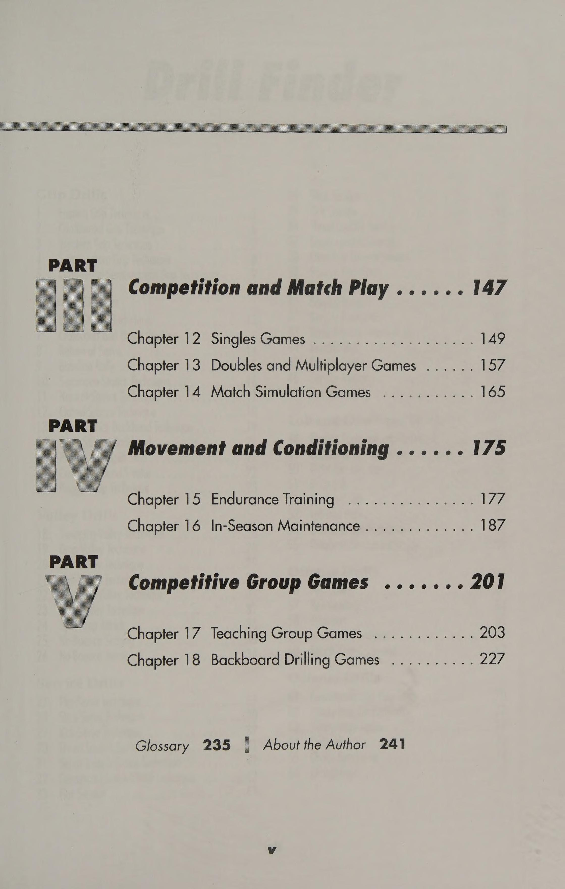
Hình 9: Sơ đồ hoạch định chiến thuật trận đấu — Mô hình tam giác góc sân và điểm rơi mục tiêu có xác suất cao.
Figure 9: Tactical Game Planning Patterns — Angle bisector court mapping and high-percentage target execution.
Chiến Thuật Thích Ứng Mặt Sân: Sân Cứng, Sân Đất Nện & Sân Cỏ Court-Surface Tactics: Hard, Clay & Grass Adjustments
= chương 10= Chiến thuật mặt sân Chơi trên các mặt sân khác nhau có thể rất thú vị hoặc cực kỳ bực bội. Trải nghiệm này có thể gây khó chịu cho những tay vợt không thay đổi chiến thuật một chút. Các sân quần vợt trên khắp thế giới đã thay đổi và cải tiến cùng với môn thể thao này. Tay vợt thường thấy bề mặt sân trải dài từ phân bò đến sân cao su gợn sóng màu đỏ, nhưng hầu hết quần vợt ngày nay được chơi trên bốn loại bề mặt: cứng, cỏ, đất sét và đất sét đỏ. Để thể hiện và chơi hết mình trên sân cứng, tay vợt phải mong đợi một trận đấu có nhịp độ nhanh, khó và mệt mỏi, trong đó những cú giao bóng đầu tiên là quan trọng và những cú trả bóng quyết liệt là tên của trò chơi. Để chơi trên mặt sân mềm hơn như cỏ, tay vợt phải sẵn sàng cho những cú nảy xấu và chân trơn trượt. Mọi người đã mô tả cỏ là một bề mặt phức tạp hoặc thậm chí xấu để chơi. Những tay vợt mơ ước được chơi trên sân cỏ phải sẵn sàng thực hiện một số động tác khoan bằng chân nhanh với tốc độ nhanh để chuẩn bị cho bề mặt không thể tha thứ này. Ngược lại, sân đất nện là bề mặt sân chậm. Kiên nhẫn, nhất quán và sử dụng kết hợp các cú đánh là chìa khóa trên sân đất nện. Để trở thành bậc thầy trên sân đất nện, tay vợt phải sở hữu một nguồn cung cấp oxy và kiên nhẫn vô tận. Họ phải trở nên giống như một tấm ván sau theo đúng nghĩa đen mà họ không bao giờ có thể bắn trượt. Dù mặt sân thế nào, tay vợt cũng phải sẵn sàng thích nghi và điều chỉnh kế hoạch thi đấu của mình. Chương này đề cập đến cách điều chỉnh phong cách chơi để thi đấu thành công trên mọi bề mặt sân tennis.
115—PHỤC HỒI NĂM BÓNG Mục tiêu Bài tập này tập trung vào việc thay đổi hướng và phục hồi nhanh chóng khi chơi trên sân đất nện. Đánh vào phía sau đối thủ là một chiến thuật tuyệt vời mà tay vợt nên có trong tiết mục của mình. Ý tưởng là khiến đối thủ chạy về một hướng rồi đánh vào khu vực mà họ vừa rời đi. Trên sân đất nện, tay vợt sẽ gặp khó khăn để có đủ lực kéo để đảo hướng nhanh chóng. Tay vợt thực thi A được đặt ở vị trí phía sau đường cuối sân ở trung tâm (T). Tay vợt B ở vị trí trên lưới ở phía đối diện. Tay vợt B thực hiện một chuỗi bốn cú đánh, di chuyển tay vợt A từ góc này sang góc khác để đánh thuận tay và trái tay. Ở lượt đánh thứ năm, tay vợt B đưa bóng trở lại vị trí mà tay vợt A vừa rời đi. Phương pháp này được gọi là đánh phía sau tay vợt. Tay vợt lặp lại bài tập cho đến khi nắm vững cách thực hiện chuyển hướng nhanh chóng và phục hồi với khả năng giữ thăng bằng tốt. Tất nhiên, họ phải chơi trên sân đất nện. Ghi điểm là tùy chọn. Mẹo Trượt vào khung hình không chỉ thú vị mà còn thông minh. Một mẹo quan trọng là giữ cho bàn chân trước hơi hướng về phía đường trượt. Bàn chân sau có thể nghiêng sang một bên vì nó sẽ bỏ qua bất kỳ cú bắt nào trên đất sét thay vì bị kẹt vào chúng.
116—PHỤC VỤ VÀ TIẾP CẬN THẤP Mục tiêu Bài tập này tập trung vào việc giao bóng với độ xoáy bổ sung để giữ bóng thấp hơn và đánh những cú đánh tiếp cận thấp, có kiểm soát khi chơi trên sân đất nện. Mô tả Tay vợt cần phải giao bóng tốt hơn và tiếp cận các cú đánh để thành công vào lưới khi thi đấu trên sân đất nện. Đối thủ sẽ có nhiều thời gian hơn để chuẩn bị cho những cú chuyền bóng hoặc lốp bóng, và các tay vợt sẽ có ít lực bám hơn để thực hiện những cú cắt bóng đột ngột về phía bóng. Những tay vợt giao bóng và chuyền bóng thường gặp khó khăn trên sân đất nện. Thực hiện Tay vợt A được đặt ở giữa đường cơ sở (T) và tay vợt B nhận giao bóng từ sân deuce ở phía đối diện của lưới. Tay vợt A đánh quả giao bóng được xác định trước cho tay vợt B. Tay vợt B trả lại quả giao bóng chéo sân và các đấu thủ đánh ra điểm. Khi một quả bóng ngắn xuất hiện, tay vợt nhận được nó phải di chuyển vào và đánh một cú tiếp cận lưới (Approach Shot) vào giữa hoặc dọc đường biên với nhiều lát cắt hoặc xoáy xuống, cố gắng giữ bóng ở mức thấp. Tay vợt nên chơi ra điểm. Họ chơi trò chơi 11 điểm và đổi vị trí sau mỗi trận đấu. Sân Tip Clay là những bộ cân bằng tuyệt vời. Các máy chủ lớn đôi khi thấy mình bị vô hiệu hóa bởi bề mặt chậm nên chúng nên hoạt động theo vị trí thay vì nguồn điện.
Mục tiêu Bài tập này giúp tay vợt trên sân đất nện phát triển lực bám và giữ thăng bằng tốt hơn khi chơi trên sân đất nện. Mô tả Bài tập đơn giản nhưng cực kỳ quan trọng này giúp tay vợt học cách chạy bóng trên đất sét, trượt vào trong bóng và thu hồi để thực hiện cú đánh trả. Bằng cách phải phản ứng với những cú ăn nhanh theo mọi hướng trên sân, tay vợt sẽ phát triển các cơ cần thiết để đào sâu vào sân đất nện, giữ thăng bằng và đổi hướng nhanh nhất có thể trên sân cứng. Tay vợt thực hiện A chiếm vị trí ở đường cơ sở gần trung tâm (T). Tay vợt B đang ở trên lưới ở phía đối diện với một rổ bóng. Tay vợt B tung một loạt cú đánh ngẫu nhiên về phía tay vợt A. Tay vợt A phải chạy để trả lại lượt bắn cho tay vợt B rồi quay về giữa (T) sau mỗi lần bắn. Tay vợt B có thể đánh một số lượt đánh định trước hoặc tiếp tục cho đến khi tay vợt A ngất xỉu. Mẹo Bởi vì đối thủ sẽ có thể bắt lại cú đánh dễ dàng hơn nên việc đánh với tốc độ và độ chính xác là điều quan trọng để đánh bại người chiến thắng trên sân đất nện. Slice giúp giữ bóng ở vị trí thấp so với mặt đất và quyết định xem đối thủ có đủ thể lực để thi đấu trên sân đất nện hay không. Tay vợt nên khai thác cú thả bóng và lốp bóng, đồng thời quan sát đối thủ trượt, trượt và hối hả để thu hồi các cú đánh đã được bố trí chiến lược của mình.
118—BÃO Mục tiêu Bài tập này rèn luyện sức chịu đựng khi chơi trên sân đất nện và giúp tay vợt trên sân đất nện học cách thay đổi hướng nhanh chóng, giữ thăng bằng tốt và đặt cú đánh hiệu quả. Mô tả Bài tập này có tác dụng cải thiện sức chịu đựng của tay vợt thông qua việc chạy những quãng đường ngắn với tốc độ tăng nhanh để thu hồi những cú đánh ngẫu nhiên xung quanh sân. Trong hầu hết các trận đấu trên sân đất nện, việc tính điểm mất nhiều thời gian. Người chiến thắng hoàn toàn hầu như không tồn tại, vì vậy tay vợt có thể mong đợi ít nhất một cuộc trao đổi từ 10 đến 15 quả bóng. Tay vợt thực thi A được đặt trên đường cơ sở ở trung tâm (T). Tay vợt B hoặc máy chủ đang ở trên lưới ở phía đối diện. Tay vợt B đánh một loạt cú đánh ngẫu nhiên vào tay vợt A xung quanh sân đánh đơn. Tay vợt A có thể đánh vào bất kỳ vị trí nào trong khu vực sân đơn nhưng phải đánh từng quả bóng trong lần nảy đầu tiên. Nếu tay vợt A ném trượt hoặc để bóng nảy nhiều lần, người đó phải tiếp tục cố gắng thực hiện cú đánh tương tự cho đến khi có cú đánh thành công. Tay vợt B hoặc người giao bóng phải thực hiện các quả bóng đầy thách thức nhưng không nằm ngoài tầm với của tay vợt A. Tay vợt A phải ở trên sân cho đến khi hoàn thành tất cả các cú đánh. Các biến thể Vận động viên ném biên có thể cố gắng đánh 10 quả bóng liên tiếp. Đối với mỗi quả bóng bị trượt, một điểm sẽ bị trừ. Ví dụ: tay vợt A đánh bóng 1, 2,3 và 4 nhưng đánh sai quả bóng 5. Sau đó, tay vợt phải bắt đầu từ quả bóng 4. Nếu tay vợt đánh sai quả bóng 4, anh ta hoặc cô ta sẽ bắt đầu từ quả bóng 3, v.v. Tip Slice là cách quay hiệu quả nhất mà tay vợt có thể sử dụng trên sân đất nện.
119—MAD BATTER Mục tiêu Bài tập luyện tập khắc nghiệt này giúp phát triển đôi chân và đôi tay nhanh nhẹn trong quần vợt sân đất nện. Mô tả Tay vợt được yêu cầu thực hiện các cú đánh rơi và hồi phục kịp thời để đánh một cú đánh khác trước khi nó nảy hai lần. Lực kéo và sức chịu đựng rất quan trọng với bài tập (Drill) sát thủ này. Những tay vợt có thể hoàn thành hai phút của bài tập này sẽ không chỉ có khả năng xử lý đất sét mà còn có thể hình phi thường. Tay vợt thực hiện A được bố trí trên đường giao bóng và tay vợt B được bố trí trên lưới ở phía đối diện. Tay vợt B đưa cho tay vợt A một quả bóng mềm rơi ngay trước lưới bên phía tay vợt A. Tay vợt A phải chạy lên và thực hiện cú đánh rơi ở bất kỳ vị trí nào ở phía đối diện của lưới, sau đó lùi lại và chạm vợt vào đường giao bóng (T). Tay vợt B thực hiện một chuỗi các cú đánh nhẹ trong khoảng thời gian hai phút. Tay vợt A tiếp tục chạy lên, đánh một cú đánh và lùi về vạch giao bóng (T), mỗi lần chạm vợt cho đến khi hoàn thành hai phút. Tay vợt nên chuyển đổi vị trí sau mỗi khoảng thời gian hai phút. Mẹo Nếu tay vợt vẫn đang học cách thực hiện cú đánh thả bóng, họ vẫn chưa thể ngụy trang nó hoàn toàn. Họ nên hạn chế sử dụng cú ném trong khi thi đấu cho đến khi thành thạo và đối thủ không thể đọc được khi nó đến.
120—Cỏ NHANH Mục tiêu Bài tập này giúp tay vợt phát triển trò chơi giao bóng và tấn công hợp lý trên các bề mặt nhanh. Mô tả Mặt cỏ buộc tay vợt phải chơi quần vợt một cách hoàn hảo. Tay vợt phải đặt cú giao bóng của mình, đánh mạnh, trả bóng có ý nghĩa và giữ tâm trí tập trung trước hai cú đánh. Trên bề mặt này, các cuộc biểu tình rất hiếm nhưng lại cực kỳ thú vị khi chúng diễn ra. Tay vợt thực thi A và B được đặt ở các đường cơ sở đối diện nhau. Tay vợt A bắt đầu lượt đánh bằng cách thả thức ăn cho tay vợt B. Tay vợt tập hợp cho đến khi một tay vợt thực hiện cú đánh bên trong một trong các ô giao bóng. Tay vợt thực hiện cú sút ngắn phải thực hiện cú sút và áp sát vào lưới. Cả hai tay vợt đều có thể lên lưới cùng một lúc. Mục đích của bài tập này là giữ bóng sâu trong phần sân đối phương để họ không bao giờ có cơ hội vào lưới thực hiện cú đánh quyết định. Mẹo: Sân khô hoàn toàn khác với sân ẩm ướt. Bước chân sẽ thay đổi, các nét cũng vậy. Vì lý do đó, các tay vợt tại Wimbledon phải điều chỉnh chiến lược của mình khi tiến gần hơn đến các vòng đấu cuối cùng. Mặt sân khô hơn và cứng hơn, vì vậy tay vợt phải nghĩ ra những cú đánh để rút ngắn thời gian đánh bóng.
121—TẠO HOẶC PHÁ HOẶC Mục tiêu Bài tập này tập trung vào vị trí giao bóng và trả bóng, phản ứng nhanh với bóng, thay đổi hướng nhanh, động tác bằng chân và kỹ năng phục hồi. Mô tả Việc giao bóng và trả giao bóng là những cú đánh ăn miếng trả miếng của tay vợt trên sân cỏ. Vị trí đặt bóng càng tốt thì cơ hội giành điểm càng cao. Hầu hết tay vợt đều xoay quanh các vấn đề về vị trí, độ sâu và tốc độ (tốc độ và độ xoáy). Mục đích là khiến đối thủ phải đoán. Khi quay lại, tay vợt tìm cách giữ thăng bằng cho kẻ tấn công sắp tới. Tay vợt thực hiện A chiếm vị trí phía sau đường cuối sân ở giữa (T) ở vị trí sẵn sàng giao bóng. Tay vợt B chiếm vị trí phía sau sân giao cầu deuce, sân ở bên phải. Tay vợt A bắt đầu điểm bằng cách giao bóng và tiếp cận lưới để tung cú vô lê từ tay vợt B. Tay vợt B cố gắng đánh quả trả bóng vào chân tay vợt A hoặc chuyền xuống vạch. Tay vợt chơi ra điểm. Người đầu tiên giành được 21 điểm sẽ thắng trận đấu. Tay vợt nên xoay vòng sau set 21 điểm đầu tiên. Các biến thể Tay vợt có thể chơi cả trận đấu để cố gắng giao bóng và chuyền bóng. Mẹo Người trả bóng nên tập trung phần lớn các cú trả bóng xuống dưới chân người giao bóng và người bắt bóng. Cách tiếp cận này sẽ khiến người giao bóng thực hiện cú đánh vô lê và tạo cơ hội tốt nhất cho người trả bóng di chuyển vào và đánh bại người chiến thắng.
122—BẢY TRỞ LẠI CỦA CUỘC PHÁP LỚN Mục tiêu Bài tập này phát triển các phản ứng nhanh với các cú giao bóng nhanh, chân nhanh, vung vợt sau nhỏ gọn và tấn công về phía trước rõ rệt. Mô tả Bài tập độc đáo này lúc đầu có thể đáng sợ, nhưng với nỗ lực liên tục, tay vợt trả bóng sẽ bắt đầu phát triển động tác bằng chân tốt hơn, phản xạ nhanh hơn và tự tin khi trả những cú giao bóng mạnh. Tay vợt thực hiện A, ở vị trí ở vạch giao bóng, giao bóng cho tay vợt B. Tay vợt B, ở vị trí cuối đường phía sau một trong các ô giao bóng, phải cố gắng phản ứng đủ nhanh để xử lý quả giao bóng. Tay vợt B nên cố gắng trả bóng bằng cách sử dụng tất cả bốn tư thế và cố gắng trả bóng bằng xoáy lên hoặc cắt lát. Tất cả các cú trả bóng phải đánh vào khu vực mục tiêu ở độ sâu chéo sân hoặc dọc theo đường sâu trong góc. Biến thể Sau khi người trả bóng bắt đầu tấn công mọi cú giao bóng bằng cách sử dụng tất cả các tư thế đánh, người giao bóng phải bắt đầu lùi lại hai chân mỗi lần cho đến khi họ chạm đến đường cuối sân, trong khi tiếp tục giao bóng. Người giao bóng nên luân phiên các bên của sân từ sân hai bên sang sân thuận lợi và thực hành các kỹ thuật tương tự. Tay vợt xoay vị trí sau vài phút. Mẹo Tách bước là điều cần thiết để phản ứng nhanh và bắt bóng ra phía trước cơ thể.
123—Giao bóng và vô lê bốn cú đánh Mục tiêu Bài tập này phát triển một cú giao bóng và vô lê nhịp nhàng, mạnh mẽ, đáng tin cậy, tách bước và chuyển động chéo về phía trước để thực hiện cú vô lê. Mô tả Cú giao bóng và cú bắt lưới (Volley) là chiến lược quan trọng khi chơi quần vợt trên sân cứng và sân cỏ. Việc thực hành bài tập này sẽ giúp tay vợt tạo ra những chiều hướng mới trong trò chơi của họ và phát triển các chiến thuật tấn công đơn hợp lý. Tay vợt thực hiện A giao bóng vào sân deuce, sân ở bên phải của người nhận. Tay vợt B, ở vị trí ở phía đối diện của sân, trả bóng để tay vợt A có thể thực hiện cú giao bóng của mình lên lưới và tung cú vô lê vào phần sân thuận lợi, phần sân bên trái. Tay vợt B di chuyển để che cú đánh và cố gắng thực hiện cú sút. Các đấu thủ lặp lại trình tự, với tay vợt A giao bóng ở phần sân thuận lợi. Tay vợt nên xoay người sau vài phút. Biến thể Sau khi tay vợt đã luân phiên và luyện tập ở cả hai vị trí, họ sẽ tính điểm. Sau khi một trong các đấu thủ đánh quả bóng thứ tư trong chuỗi cú đánh, điểm sẽ bắt đầu. Nếu tay vợt bỏ lỡ bất kỳ quả bóng nào trong chuỗi bốn quả bóng, trận đấu phải bắt đầu lại cho đến khi tay vợt thực hiện được tất cả bốn quả bóng có hoa văn. Họ chơi các trận 11 hoặc 21 điểm, luân phiên giao bóng sau mỗi hai điểm. Mẹo Tay vợt nên nghĩ đến việc tấn công lưới thường xuyên hơn khi mặt sân nhanh, gió thổi sau lưng và họ cảm thấy sự hiện diện của mình trên lưới có thể gây áp lực rất lớn lên đối thủ và khiến họ mắc lỗi.
124—ĐƠN TIÊU HẤP DẪN Mục tiêu Bài tập mang tính giải trí này giúp tay vợt phát triển sức chịu đựng, khả năng bao phủ lưới, phản xạ, động tác bằng chân và sự tự tin khi đối mặt với những pha hành động nảy lửa trên lưới. Mô tả Để lên lưới hiệu quả, tay vợt phải có phản xạ và kỹ năng chuyền bóng xuất sắc. Cuộc tập trận này buộc tay vợt phải ở trong chảo rán mà không lùi bước. Tay vợt sẽ xây dựng được sự tự tin cần thiết để tiếp tục tấn công. Tay vợt có phản xạ đủ nhanh cuối cùng có thể thống trị lưới. Thực thi Tay vợt A và B đối mặt nhau đứng trong ô giao bóng và đứng giữa hàng giao bóng ở giữa. Tay vợt A bắt đầu trao đổi cú bắt lưới (Volley) bằng cách đánh bóng bằng tay cho tay vợt B. Cuộc trao đổi tiếp tục cho đến khi một đấu thủ mắc lỗi, thực hiện cú vô lê thắng lợi hoặc thực hiện thành công cú lốp bóng (Lob) qua đối phương. Tay vợt không được đánh đối phương một cách dứt khoát và trận đấu phải bắt đầu trong khu vực sân giao bóng. Họ chơi tới 15 hoặc 21 điểm. Biến thể Điểm bắt đầu sau khi tay vợt thực hiện trao đổi ba quả bóng. Họ chỉ chơi những cú vô lê thuận tay hoặc thuận tay hoặc chỉ những cú vô lê từ trái tay sang trái tay. 125—HUSTLE ĐƠN NÂNG CAO Mục tiêu Bài tập này giúp tay vợt học cách lao nhanh để thực hiện nhiều cú đánh khác nhau trên sân, giúp tay vợt phát triển khả năng bám trụ trên sân và cải thiện sự tự tin. Mô tả Bài tập này giúp xây dựng sức chịu đựng cho những điểm dài đó và dạy tay vợt cách chạy xuống và thực hiện nhiều cú đánh khác nhau khi chơi đơn. Thực hiện Tay vợt định vị mình phía sau đường cơ sở, đứng thành một hàng với đôi chân di chuyển (chạy bộ tại chỗ). Tay vợt đầu tiên bước lên giữa (T) của đường cuối sân. Những tay vợt đang chờ đợi lùi về phía hàng rào hoặc rèm trong khi vẫn di chuyển chân. Một máy chủ cung cấp bóng cho tay vợt đầu tiên, khiến tay vợt phải hối hả thực hiện từng cú đánh. Máy chủ cung cấp 20 cú đánh—cú thuận tay, cú đánh trái tay, cú đánh thả, lốp bóng, cú đánh ngắn, v.v. Mức độ khó sẽ tăng lên sau mỗi lần bắn. Không có tính điểm nào được tham gia. Biến thể Hai tay vợt hối hả đánh và thu hồi tất cả các loại cú đánh theo đội.
126—CƠ BẢN BA-HIT Điểm bắt đầu Mục tiêu Bài tập này xây dựng tính nhất quán của cú đánh trên mặt đất, vị trí các cú đánh, động tác bằng chân và kỹ năng phục hồi. Mô tả Bài tập yêu cầu hai tay vợt ở hai đầu đối diện của sân. Thử thách là giữ nhiều bóng trong cuộc để xây dựng tính nhất quán khi chạm đất và sự tự tin khi thực hiện các kiểu đánh khác nhau. Thực hiện Bài tập cơ bản này bắt đầu bằng một cú giao bóng chạm đất. Tay vợt A thực hiện cú giao bóng thả sâu ở phần sân sau cho tay vợt B. Bóng phải vượt qua lưới ba lần trước khi trận đấu bắt đầu. Tay vợt không chuyền bóng trong ba lần đánh đầu tiên. Họ chơi 11 hoặc 15 điểm. Biến thể Bài tập có thể được thực hiện như một bài tập đôi và tay vợt có thể điều chỉnh số lần bóng phải vượt qua lưới trước khi điểm bắt đầu. Mẹo Quần vợt trên sân cứng có tốc độ nhanh, mạnh mẽ và thú vị. Tay vợt nên làm việc dựa trên tính nhất quán, độ sâu, độ xoáy và tốc độ của mình. Phản xạ của họ phải nhạy bén, họ phải có thời gian và sự tự tin.
127—BỐN SÚT CHUYỂN ĐÁNH Mục tiêu Bài tập này giúp tay vợt phát triển kỹ năng tư duy nhanh trong khi thực hiện các cú chuyền bóng trên đường chạy. Mô tả Để chơi quần vợt sân cứng tốt, tay vợt phải cải thiện thể lực tổng thể, động tác chân nhanh hơn và phát triển tính nhất quán, nhanh nhẹn và kỹ năng dự đoán. Bài tập này giúp tay vợt giữ vững khi thực hiện các cú đánh bằng cách cải thiện vị trí và động tác bằng chân trong khi chạy và hồi phục. Tay vợt thực hiện A, ở lưới ở một bên sân với một rổ bóng, đưa quả bóng đầu tiên vào cuộc bằng cách đánh nó xuống vạch. Tay vợt B trả bóng lại cho tay vợt A, người này sau đó sẽ chuyền bóng chéo sân tới mục tiêu (một hình nón hoặc điểm đánh dấu được định sẵn). Tay vợt B chạy và cố gắng thực hiện một cú sút qua vạch qua tay vợt A. Sau đó, tay vợt A trượt sang phía bên kia của sân và lặp lại các bước. Tay vợt chuyển đổi vị trí sau mỗi vài điểm. Biến thể Tay vợt xoay sang các vị trí khác nhau sau khi chơi từ ba đến năm điểm. Mẹo Tay vợt nên đặt góc thực hiện cú vô lê của mình trong 99 phần trăm thời gian. Những cú vô lê đánh xuống giữa sân có xu hướng mang lại chiến thắng cho tay vợt đối phương.
128—PHỤC VỤ VÀ BÓNG CHUYỆN HAI ĐỐI MỘT Mục tiêu Bài tập này giúp tay vợt cải thiện chiến thuật giao bóng và vô lê, ghi điểm trên sân cứng hoặc sân cỏ trong thời gian ngắn hơn, cải thiện động tác chân và phát triển phản ứng nhanh với bóng cũng như tiến nhanh vào lưới. Mô tả Bài tập thực hiện các kỹ thuật cần thiết để thực hiện cú vô lê giao bóng một cách hiệu quả và nó mang lại cho tay vợt cơ hội thực hiện trò chơi giao bóng và vô lê trong khi tính điểm. Thực hiện Tay vợt A và B, cả hai đều ở vị trí phía sau đường cuối sân, giao bóng thay thế cho tay vợt C. Tay vợt C, ở vị trí phía sau ô giao bóng thuận lợi hoặc ô giao bóng, trả lại các quả giao bóng. Người giao bóng chỉ nên sử dụng quả giao bóng thứ hai (quả giao bóng thứ hai có xu hướng xoáy hơn và chậm hơn nên người trả giao bóng có thể trả bóng dễ dàng hơn). Tay vợt C có thể sử dụng chip và sạc hoặc ổ đĩa khi trả bóng. Tay vợt đầu tiên tích lũy được 11 điểm sẽ thắng. Tay vợt nên luân chuyển vị trí. Mẹo Quần vợt sân cứng rất khó để thành thạo và cực kỳ khó trên cơ thể. Bề mặt không cho phép tay vợt chơi thoải mái, không bị chấn thương trong nhiều năm. Tay vợt nên có một kế hoạch trò chơi thay thế cho phép họ ghi điểm trong ít hơn sáu lượt bắn.
Tâm Lý Cơ Học Thi Đấu: Kiểm Soát Căng Thẳng & Nghi Thức Giữa Các Điểm Mental Mechanics: Pressure Management & Between-Point Rituals
= chương 11 = Cơ Học Tâm Thần Tất cả đều nằm ở thái độ! Đã có lúc tôi không biết điều này, nhưng sau hơn 30 năm chơi quần vợt, tôi hiểu tại sao cha tôi, huấn luyện viên của tôi và bây giờ các học trò của tôi thắc mắc tại sao việc thi đấu và chiến thắng dường như đến với tôi một cách tự nhiên, trong khi những người khác chỉ chơi những trận đấu hay nhất của họ trên sân tập. Kiểm soát thái độ tinh thần đối với tay vợt cũng quan trọng như việc cải thiện các cú đánh trên mặt đất và thể chất của họ. Thái độ tinh thần thường là yếu tố phân biệt thắng bại trong những trận đấu có tính cạnh tranh cao. Mặc dù các yếu tố bên ngoài luôn thay đổi có thể ảnh hưởng đến tay vợt nhưng họ có thể thay đổi thái độ tinh thần theo ý muốn bằng cách hiểu cách thực hiện. Tôi đã có cơ hội học được điều kiện tinh thần ngay từ khi còn nhỏ. Từ lúc tôi cầm vợt lúc bốn tuổi, các huấn luyện viên đã dạy tôi cách kiên quyết, cách tập trung và hình dung, cách kiểm soát tính khí nóng nảy và cách tôn trọng trận đấu, đối thủ và bản thân. Họ dạy tôi rằng mỗi điểm trong một trận đấu đều quan trọng và tôi có thể thua một trận sát nút nếu tâm trí tôi bắt đầu lơ đãng vì một vài điểm. Họ dạy tôi rằng tôi có thể cải thiện khả năng tập trung của mình bằng cách thư giãn và dành thời gian để thực hiện và hoàn thành từng điểm. Họ dạy tôi cách tập trung vào điểm tiếp theo, cách nghĩ về sự kết hợp của hai cú đánh và cách chơi trong khả năng của tôi trong mỗi cú đánh. Để có tinh thần vững vàng và chuẩn bị tinh thần, tay vợt phải học cách thực hiện những thay đổi nhỏ trong kế hoạch trò chơi. Họ nên viết ra một chiến lược và hình dung mình đang thực hiện ở mức lý tưởng. Họ nên bước đi đầy năng lượng, hít thở, suy nghĩ và “thư giãn” từ khi kết thúc lượt chơi cho đến khi sẵn sàng chơi lượt tiếp theo. Có một kế hoạch trò chơi trong đầu trước mỗi điểm là điều quan trọng. Tay vợt nên hình dung mình đang thực hiện kế hoạch trước khi giao bóng hoặc nhận bóng. Họ phải lường trước mọi cú đánh. Tay vợt nên nghỉ ngơi trước khi thực hiện bất kỳ cú đánh nào và bỏ qua những sai lầm nhanh nhất có thể. Họ nên duy trì cường độ cao và tránh lê chân nếu thấy mệt. Hít thở sâu và uống đủ nước là điều quan trọng. Nếu dây thần kinh bị tấn công, tay vợt có thể vung tay và nhảy lên nhảy xuống. Hành động này sẽ khiến tim đập liên tục, giúp tay vợt cảm thấy mình đang hòa mình vào dòng chảy trong suốt trận đấu.
Ngoài ra, không có cách nào thay thế được việc do thám đối thủ. Tay vợt nên xác định điểm mạnh của đối thủ—cú đánh yêu thích của họ là gì? Vũ khí tốt nhất? Đối thủ có thể hiện lối chơi không? Anh ta hoặc cô ta có giao bóng rộng, đi theo lưới và nhắm cú vô lê đầu tiên chéo sân không? Còn về xu hướng thì sao? Đối thủ có cố gắng chạy vòng qua trái tay yếu ớt đó để đánh một cú thuận tay không? Tay vợt có thể hỏi những người có thể đã thi đấu với tay vợt hoặc đã xem người đó chơi một trận đấu. Một sự trợ giúp lớn khác là quay video các trận đấu của tôi. Tay vợt nên quay video trận đấu và xem lại đoạn băng để tìm ngôn ngữ cơ thể tiêu cực sau khi họ thua. Ngôn ngữ cơ thể tiêu cực biểu thị rằng tay vợt đang nghĩ về những gì đã xảy ra hơn là về điểm tiếp theo. Tay vợt có thể muốn nhờ một người bạn sử dụng đồng hồ bấm giờ để xem họ mất bao nhiêu thời gian giữa các điểm và khi đổi bên. Tay vợt có vội vàng khi đi trước hay đi sau? Tay vợt nên nhớ rằng họ có 25 giây giữa các điểm và 90 giây để chuyển đổi. Đối đầu với một đối thủ mạnh, tay vợt nên cố gắng ghi điểm, mỗi ván đấu và trận đấu kéo dài càng lâu càng tốt. Tôi đã học được cách sử dụng thời gian rảnh rỗi để sắp xếp lại suy nghĩ của mình và tập trung vào kế hoạch hành động cho điểm hoặc trận đấu tiếp theo. Tay vợt nên quan tâm đến hiện tại và điểm chơi cho từng điểm. Họ nên ở lại trong thời điểm hiện tại và cố gắng không nghĩ về quá khứ hay tương lai. Khả năng kiểm soát vật lý diễn ra nhanh hơn nhiều với sự tập trung hoàn toàn, vì vậy tay vợt không bao giờ nên ngừng tập trung. Kỷ luật tự giác là rất quan trọng. Tay vợt có thể có được một số ý tưởng về việc duy trì sức khỏe tinh thần trong các trận đấu khó khăn bằng cách xem một số chuyên gia hàng đầu. Họ làm gì trong thời gian giữa các điểm? Nghi thức của họ trước khi giao bóng và trở về là gì? Họ mang theo cơ thể và vợt như thế nào khi đi lại, nói chuyện và thi đấu? Còn hơi thở và sự tập trung của mắt họ thì sao? Sau mỗi trận đấu, dù thắng hay thua, tay vợt nên tự nhắc nhở mình rằng ít nhất 90% quá trình chơi tốt là kết quả của sự điều hòa tinh thần và thái độ tinh thần. Để vượt qua số điểm bị mất, thua trận hay chỉ là những ngày nghỉ bình thường, tay vợt phải tìm cách loại bỏ những suy nghĩ tiêu cực trong đầu để có thể tập trung vào trò chơi trong thời điểm hiện tại. Tôi tin rằng thái độ tinh thần có điều kiện bắt đầu từ thời điểm này, từ hôm nay và sẽ tiếp tục trong suốt quá trình trải nghiệm quần vợt của tay vợt.
Mục tiêu Mục đích của bài tập này là để cải thiện kỹ năng chuyền bóng hoặc chạm đất, động tác bằng chân, trình độ thể thao, phản ứng nhanh với bóng tới và vị trí của các cú đánh khi bị căng thẳng. Mô tả Làm việc với máy bóng là thử thách cả về tinh thần và thể chất. Máy bóng không bao giờ bỏ lỡ! Bởi vì tay vợt có thể thiết lập máy bóng để gửi bóng đến bất cứ đâu trên sân, họ có thể cô lập và thực hiện một cú đánh hoặc một loạt cú đánh cụ thể miễn là họ muốn mà không cần phải dừng lại và bắt đầu vì lỗi đánh bóng của đồng đội. Việc khoan bằng máy bóng giúp thực hiện bất kỳ cú đánh đã luyện tập nào tốt hơn. Thực thi Tay vợt thiết lập máy bóng để thực hiện các cú đánh dọc theo đường biên. Họ đứng trên lưới để sẵn sàng đánh. Bóng đi qua lưới phải mô phỏng cú đánh của một vận động viên ném biên đang cố gắng vượt qua đối thủ của mình. Sau khi đạt được một số thành công với bài tập này, tay vợt sẽ có thể tiếp cận bất cứ thứ gì mà ngay cả những đối thủ giỏi nhất cũng sẽ ném vào họ. Tay vợt thắng cuộc tập trận này hãy cho tôi biết! Các biến thể Tay vợt có thể sử dụng máy bóng để thực hiện bất kỳ cú đánh nào—cú vô lê, cú đánh qua đầu, cú đánh ngắn, lốp bóng, cú thuận tay và cú trái tay, từ lưới đến đường cuối sân. Hãy tận dụng điều này! Ví dụ: đặt bóng hoạt động theo kiểu chạm đất như kiểu hai chọi một. Tay vợt sẽ đánh hai bàn chéo thuận tay và một bàn chéo trái tay. Hoặc, hãy thử mô hình ba chọi một, để tay vợt đánh ba bàn chéo thuận tay và một bàn chéo trái tay. Máy bóng cũng có thể được thiết lập để giúp tay vợt học cách lấy lại các cú đánh rơi và lốp bóng. Đặt máy bắn bóng để bắn một quả bóng mềm, quả bóng này sẽ tiếp đất bên trong khu vực sân giao bóng và một quả bóng cứng cao, đưa tay vợt quay trở lại đường cuối sân để lấy bóng. Mẹo Khi sử dụng máy đánh bóng, hãy giữ cho sân chơi không có bóng rời để tay vợt có thể tập trung vào quả bóng đang tới. Rõ ràng, máy bắn bóng sẽ tiếp tục bắn bóng ra ngoài và theo hướng của tay vợt cho dù họ có tìm kiếm hay không, vì vậy hãy nhắc tay vợt của bạn luôn để mắt và tập trung vào hành động trong tay—máy bắn bóng không bao giờ trượt.
Mục tiêu Bài tập này dạy cho tay vợt, thông qua việc sử dụng các mẫu nhịp điệu, cách thiết lập các mẫu chiến lược để sắp xếp các cú đánh trong trận đấu đơn. Việc tập trung vào các mẫu cũng giúp tay vợt tập trung vào trò chơi của mình. Mô tả Các vận động viên giỏi khiến việc chơi thể thao của họ giống như khiêu vũ. Để làm cho các cú đánh trông mượt mà như lụa, tay vợt phải sử dụng các kiểu nhịp nhàng để phát triển các chiến lược tập hợp. Tay vợt thực thi A được đặt ở đường cơ sở ở giữa (T) và tay vợt B được đặt ở đường cơ sở đối diện. Tay vợt A bắt đầu cuộc đánh bóng bằng một cú giao bóng thả trúng. Cả hai tay vợt đều thực hiện mẫu đầu tiên. Tay vợt A đánh một cú đánh chéo sân và cú tiếp theo dọc đường biên. Tay vợt B cũng làm như vậy. Tay vợt sử dụng mỗi kiểu đánh trong ít nhất 10 phút trước khi thử kiểu tiếp theo. Tay vợt A đánh ba cú đánh chéo sân và cú tiếp theo dọc đường biên. Tay vợt B cũng làm như vậy. Họ thực hành mô hình này trong ít nhất 10 phút. Tick-tock, tích-tock là viết tắt của mô hình chéo sân, đường dưới, đường chéo, đường dưới. Tick-tick-tick-tock là viết tắt của ba cú đánh chéo sân và sau đó một cú sút dọc biên. Việc phát triển mô hình sẽ giúp tay vợt tập trung hơn vào kế hoạch trò chơi hơn là vào người mà họ đang chơi. Biến thể Tay vợt có thể kết hợp các mẫu nhịp điệu tích tắc. Sử dụng các từ gợi ý như “đánh nảy” khi tập hoặc chơi có thể giúp phát triển kỹ năng tập trung. Từ gợi ý là từ mà tay vợt tự nói với chính mình hoặc từ mà huấn luyện viên nói nhiều lần với tay vợt khi họ đang nỗ lực để đạt được một nhiệm vụ nhất định. Nghe có vẻ ngớ ngẩn nhưng nó thực sự có tác dụng. Mẹo Tay vợt nên nhớ giữ đầu ổn định hoặc đứng yên như một tay golf khi tiếp xúc. Một nguyên nhân hàng đầu bị bỏ qua dẫn đến cú đánh chạm đất sai là do cằm hoặc đầu bị nâng nhẹ ngay trước khi tiếp xúc với bóng. Chuyển động nhỏ này làm thay đổi góc của mặt vợt, do đó thay đổi vùng đánh. Nó cũng có thể khiến tay vợt mất thăng bằng. Để tay vợt thực hiện các cú đánh dọc theo chiều dài sân với độ chính xác cao hơn, họ cần học cách tin tưởng vào bản thân và cúi đầu xuống và mắt tập trung vào bóng thông qua tiếp xúc, giống như một vận động viên chơi gôn.
James “Riley” Blake Bậc thầy của sự quyết tâm ~ © Sport The Library Sinh ra ở Yonkers, New York; 22 tuổi; chiều cao sáu feet một; cân nặng 170 tôi bảng Anh; chơi thuận tay phải. James bắt đầu sự nghiệp quần vợt của mình ở tuổi 5. Ở tuổi 13, anh được thông báo rằng anh bị chứng vẹo cột sống nghiêm trọng (độ cong của _ cột sống), khiến anh phải đeo nẹp lưng 18 giờ mỗi ngày. Nhưng tôi điều đó không ngăn cản bậc thầy đầy quyết tâm này luyện tập cùng anh trai Thomas và tham gia một số phòng tập quần vợt tại câu lạc bộ quần vợt địa phương của họ. James đã phát triển tình yêu và quyết tâm với quần vợt để một ngày nào đó anh sẽ giữ vị trí số 17 trên máy tính xếp hạng ATP. Blake theo học tại Đại học Harvard và là tay vợt có thứ hạng cao nhất của trường đại học trong năm 1998–99. Anh là Tay vợt xuất sắc nhất năm của Đại học NCAA năm 1998-99, vô địch hai giải ATP Challenges vào năm 2000 và lọt vào bán kết Giải vô địch quần vợt Hall of Fame. Sức mạnh, sự tự tin và quyết tâm tiếp sức cho tay vợt này. James có một tấm lòng vàng lớn và tình yêu to lớn dành cho các vận động viên của Thế vận hội Đặc biệt. Anh ấy chưa bao giờ ngừng đạt được mục tiêu của mình là đi theo bước chân của người cố vấn của mình, huấn luyện viên của anh ấy, ông Brian Barker, và nguồn cảm hứng của ông, ông Arthur Ashe. James tin rằng điều duy nhất phân biệt anh chàng xếp số 1 với anh chàng xếp số 200 chính là sự tự tin.
131 —CÚT CHUYỂN ĐỔI BA TRÒN MỘT Mục tiêu Bài tập này hướng dẫn tay vợt cách thức và thời điểm thực hiện các cú đánh tiếp cận và xây dựng sự tự tin khi đánh những cú chuyền bóng chắc chắn. Mô tả Bằng cách tách biệt các nét và kiểu, tay vợt có thể luyện tập chúng để chúng trở thành bản chất thứ hai. Khi tay vợt đang tham gia trận đấu, các mẫu hiệu suất sẽ được áp dụng ngay mà họ không cần phải suy nghĩ về điều đó. Tay vợt thực hiện A ở vị trí trên lưới và tay vợt D ở vị trí trên đường cuối sân. Tay vợt C và B xếp hàng chờ luân phiên sau khi chơi một điểm. Tay vợt A đánh bóng về phía trái tay của tay vợt D và tiến vào lưới. Tay vợt D thực hiện cú chuyền bóng, tay vợt A chuyền bóng sang bên kia sân. Tay vợt C và B lặp lại mô hình này nhiều lần ở cùng một phía của sân. Tay vợt D xoay vòng sau khi tay vợt có cơ hội chơi. Việc chấm điểm là tùy chọn vì đây là bài tập thực hành. Biến thể Tay vợt khác nhau có thể xoay đến tất cả các vị trí. Tay vợt có thể đánh thuận tay. Mẹo Tay vợt nên rèn luyện sức bền, sức mạnh, sự linh hoạt và tốc độ tốt. Họ nên nâng cao các cú đánh của mình và thêm các cú đánh xoáy lên, cắt lát, lốp bóng và thả bóng, đồng thời hãy nhớ rằng thể lực quyết định sự dẻo dai tinh thần của họ.
Hông 132—BÓNG CHUYỆN ĐẤT CỨNG CỨNG Mục tiêu Bài tập này phát triển khả năng kiểm soát và độ chính xác của tay vợt trong tình huống trò chơi đánh từ đất sang vô lê. Bài tập này giúp tay vợt đánh đơn xây dựng sự tự tin cần thiết để thực hiện bất kỳ cú đánh nào và thực hiện bất kỳ cú vô lê nào đi chệch cột dọc hoặc xa. Mô tả Bài tập này giúp tay vợt luôn tự tin trong khi dạy họ kiểm soát bóng, phục hồi nhanh chóng sau khi đánh và duy trì kiểu đánh chắc chắn khi bị căng thẳng. Tay vợt thực hiện A bắt đầu ở đường cuối sân và tay vợt B ở trên lưới. Tay vợt A đánh mọi quả bóng dọc đường và tay vợt B đánh mọi quả bóng chéo sân. Sau 5 hoặc 10 phút họ đổi hướng. Biến thể Tay vợt A phải đánh mỗi quả bóng thứ ba bằng một cú đánh cụ thể và tới một khu vực cụ thể trên sân. Ví dụ: tay vợt B đánh mọi cú vô lê dọc theo đường biên và tay vợt A đánh mọi cú đánh chéo bàn, nhưng ở quả bóng thứ ba, tay vợt A đánh một cú lốp bóng (Lob) xoáy lên chéo bàn. Mẹo Tay vợt có thể cải thiện khả năng kiểm soát bóng của mình nếu họ học cách tuân theo “giới hạn tốc độ” trên sân của mình. Giới hạn tốc độ của tay vợt trên sân tennis là tốc độ tối đa họ có thể đưa bóng mà không mất kiểm soát. Bằng cách giới hạn tốc độ, tay vợt sẽ cải thiện vị trí và tính nhất quán, đồng thời sẽ trở thành tay vợt giỏi hơn và mạnh hơn.
133—MỘT LÊN MỘT LƯNG Mục tiêu Bài tập này phát triển sự tự tin của tay vợt trong việc thực hiện các cú chuyền bóng khi đang chạy và khi mệt mỏi. Mô tả Bài tập giúp tay vợt học cách đánh vào một khu vực nhất định của sân khi mệt mỏi hoặc đang chạy. Tay vợt sẽ học cách thực hiện và thực hiện kế hoạch trò chơi ngay cả khi họ thà nằm trên mặt đất. Thực hiện Tay vợt A ở vị trí trên lưới ở một bên sân và tay vợt B ở vị trí phía sau đường cuối sân ở phía đối diện của lưới. Tay vợt B phải trả lại tất cả các quả bóng cho phần sân của tay vợt A. Tay vợt A chuyền bóng trở lại vừa tầm với của tay vợt B. Mục đích là để tay vợt B chạy nhiều nhất có thể cho mỗi quả bóng nhưng đồng thời giữ bóng trong cuộc càng lâu càng tốt. Việc chấm điểm là tùy chọn vì đây là bài tập thực hành. Tay vợt xoay vị trí sau vài phút. Mẹo Khi đánh bóng và chạy hết tốc lực, tay vợt phải tập trung mắt vào cú đánh tới và giữ vững đầu. Nếu họ cố nhìn lén cú đánh, họ sẽ đánh sai quả bóng hoặc cú đánh sẽ không vượt qua vạch giao bóng bên phần sân của họ.
Mục tiêu Bài tập này dạy các kỹ năng phục hồi nhanh, khả năng thực hiện các cú vô lê ngắn, phạm vi chuyền bóng, chân và tay nhanh cũng như kỹ năng dự đoán. Mô tả Cuộc tập trận thách thức trò chơi của tay vợt trên mạng. Bằng cách bố trí hai tay vợt ở vị trí cuối sân để thách đấu tay vợt trên lưới, bài tập buộc tay vợt trên lưới phải làm việc chăm chỉ và suy nghĩ rõ ràng để họ có thể di chuyển đủ nhanh để thực hiện mọi cú đánh. Thực hiện Hai tay vợt ở vị trí phía sau đường cuối sân, một người ở phía bên kia (sân giao bóng ở bên phải tay vợt khi đối mặt với khu vực sân giao bóng) và người còn lại ở phía thuận lợi (sân giao bóng ở bên trái). Một tay vợt ở trên lưới ở phía đối diện của lưới. Các tay vợt cuối sân tung cú sút vào tay vợt trên lưới và cố gắng di chuyển anh ta hoặc cô ta xung quanh càng nhiều càng tốt. Các tay vợt ở sân sau nên lốp bóng và phối hợp thực hiện một số cú chuyền bóng. Tất cả các quả bóng phải nằm trong tầm tay của tay vợt trên lưới. Ghi điểm là tùy chọn. Mẹo Những tay vợt sân sau nên sử dụng nhiều kiểu lốp bóng, xoáy lên và xoáy xuống và đánh cao và sâu hoặc theo quỹ đạo đạn. Họ cũng có thể kết hợp một số cú chuyền bóng nhẹ nhàng. Mục tiêu Bài tập này dạy cho tay vợt cách di chuyển bằng chân thích hợp khi thực hiện cú chuyền bóng trong một tình huống mô phỏng điểm. Mô tả Bài tập thú vị này giúp tay vợt học cách quan sát bóng, thiết lập điểm và dự đoán các cú đánh. Thi hành Tay vợt tách thành hai hàng phía sau trung tâm đường giao bóng ở hai phía đối diện của sân. Các tay vợt chuyền bóng cho nhau cho đến khi một tay vợt đánh trượt hoặc bóng nảy. Họ phải thực hiện tất cả các cú đánh bằng cú vô lê và giữ bóng trong khu vực ô giao bóng tương ứng của mình. Đội đầu tiên tích lũy được 11 hoặc 15 điểm sẽ thắng. Các biến thể Tay vợt có thể bị giới hạn chỉ sử dụng các cú vô lê thuận tay hoặc chỉ các cú vô lê trái tay của họ. Nếu tay vợt bị hạn chế sử dụng cú vô lê thuận tay, một cú đánh bằng cú vô lê trái tay sẽ kết thúc điểm. Quy tắc này buộc tay vợt phải sử dụng đôi chân của mình và tìm ra cách đánh sai phía của đội đối phương một cách chiến lược.
136—PHỤC VỤ TUYỆT VỜI Mục tiêu Loại bỏ quả giao bóng thứ hai buộc tay vợt phải tập trung vào việc thực hiện những cú tung bóng tốt, những cú giao bóng xoáy và vị trí giao bóng xuất sắc trong khi bị áp lực. Sự miêu tả ; Bài tập này giúp tay vợt phát triển kỹ năng tập trung tốt trong khi cố gắng giữ hoặc phá ván giao bóng. Thực hiện Tay vợt A giao bóng hết ván này đến ván khác cho đến khi tay vợt B bẻ giao bóng. Nếu tay vợt A không thắng được hai hoặc ba ván trước khi tay vợt B nghỉ giao bóng, tay vợt B sẽ tiếp quản trò chơi giao bóng. Tay vợt có thể thực hiện phương pháp này trong khi chơi toàn bộ trận đấu. Mẹo Tay vợt nên làm việc một cách nhất quán và kiên nhẫn trong khi xây dựng quan điểm. 137—DỊCH VỤ CAPTAIN HOOK Mục tiêu Bài tập này phát triển tính nhất quán và hiệu quả của các cú giao bóng thứ hai. Cú giao bóng thứ hai phải đáng tin cậy như mặt trời mọc. Mô tả Bài tập này giúp tay vợt phát triển cú giao bóng thứ hai đáng tin cậy bằng cách chỉ cho phép một lần giao bóng cho mỗi điểm. Thực hiện Trong một hiệp đấu hoặc trận đấu đơn hoặc đôi, tay vợt chỉ được phép giao bóng một lần cho mỗi điểm. Họ sẽ mất điểm nếu người giao bóng trượt. Biến thể Tay vợt nên kết hợp quy tắc chỉ giao bóng một lần khi chơi trò chơi 15 điểm hoặc tiebreak 12 điểm. Những chiến thuật tinh thần này thực sự sẽ thử thách nghị lực giao bóng của bạn khi chịu áp lực. Mẹo Người giao bóng nên tập trung vào việc sử dụng cú giao bóng thứ hai và vị trí. Cú giao bóng thứ hai sẽ có độ xoáy nhiều hơn và tốc độ ít hơn.
138—Mục tiêu được lập kế hoạch trước Việc chơi với các công thức được lập kế hoạch trước sẽ tách biệt một khu vực cụ thể của trò chơi. Bằng cách thực hành bất kỳ sự kết hợp các cú đánh nào bằng phương pháp này, tay vợt sẽ xây dựng sự tự tin cho các tình huống đấu trận. Mô tả Tay vợt chơi cả bộ nhằm mục đích giao bóng và quay trở lại một khu vực cụ thể. Tay vợt thực hành một mẫu đã xác định trước để giúp chuỗi các cú đánh trở nên tự nhiên hơn. Tay vợt thực hiện A giao mọi quả bóng cho cú trái tay của tay vợt B, và tay vợt B trả lại mọi quả bóng cho cú vô lê trái tay của A. Chỉ những cú giao bóng và trả bóng mới được xác định trước; tất cả các cú đánh khác tùy thuộc vào tay vợt. Sau khi về, tay vợt tính điểm như thường lệ, sử dụng tính điểm thông thường. Tay vợt có thể sử dụng phương pháp này để chơi cả trận hoặc chỉ để luyện tập một vài điểm. Khi tay vợt thực hiện mô hình này, họ bắt đầu ghi nhớ nó trong tâm trí để chơi trong trận đấu sau này. Biến thể Tay vợt có thể sử dụng bất kỳ cấu hình giao bóng và trả giao bóng nào được lên kế hoạch trước. Mẹo Dự đoán, giống như bản năng sát thủ, là một nghệ thuật được học qua nhiều giờ luyện tập và chơi hàng trăm hoặc hàng nghìn điểm, trò chơi và trận đấu. Bạn không thể mua nó hoặc tìm thấy nó.
139—BÓNG CHUYỆN Mục tiêu Bài tập đầy thử thách này phát triển sức chịu đựng, động tác né tránh nhanh, phục hồi nhanh và kỹ năng dự đoán. Mô tả Bài tập này phát triển kỹ thuật chuyền bóng âm thanh, giúp tay vợt tránh vung vợt lên lưới, buộc tay vợt phải giữ vợt ở phía trước và cho phép tay vợt để vợt thực hiện hầu hết công việc. Tay vợt thực hiện A đứng ở bên phải trung tâm (T) ở đường cuối sân. Tay vợt B đứng lên lưới bên trong một trong các ô giao bóng, có thể là thua hoặc có lợi. Tay vợt ném một quả bóng rộng tới tay vợt B ở đường biên của con hẻm. Tay vợt B trả lại cú sút bằng cú vô lê cho tay vợt A. Tay vợt A đánh bóng chéo góc về phía tay vợt B. Tay vợt B trả lại cú sút bằng cú vô lê cho tay vợt A. Họ lặp lại trình tự này một vài lần và sau đó đổi vị trí. Mẹo Nếu tay vợt có xu hướng đánh bóng vào lưới, họ có thể đang cản trở chuyển động về phía trước của vợt. Hành động này làm cho đầu vợt hơi hất qua, khiến bóng rơi vào lưới. Một vấn đề khác là giải phóng lực căng ở cổ tay và làm cho đầu vợt rơi sang một bên bên dưới cổ tay. Tay vợt nên cố gắng tiếp tục di chuyển khi tiếp cận cú vô lê để đảm bảo một cú đánh chắc chắn. Khi dang rộng để thực hiện một cú vô lê chuyền ngang, họ phải luôn giữ cổ tay ở vị trí cao.
140—PHỤC VỤ VÀ BÓNG CHUYỂN = Mục tiêu Bài tập này tách biệt một khía cạnh của kế hoạch thi đấu tích cực, giao bóng và vô lê. Bài tập này phát triển bàn chân và bàn tay nhanh nhẹn, kỹ năng dự đoán và khả năng áp sát lưới. Mô tả Bằng cách chỉ thực hành chiến thuật giao bóng và vô lê, tay vợt có thể tập luyện cụ thể về động tác bằng chân, phản xạ và sự tự tin mà họ cần để sử dụng kế hoạch này trong khi thi đấu. Tay vợt thực hiện A đứng sau một trong các ô giao bóng và đánh trả, trong khi tay vợt B, C và D giao bóng và vô lê từ phía sau đường biên đối diện. Máy chủ luân phiên các điểm chơi với người nhận. Tay vợt đầu tiên giành được 10 điểm, người nhận giao bóng hoặc một trong những người giao bóng và người tung cú vô lê, sẽ thắng cuộc tập trận. Máy chủ biến thể chỉ được phép giao bóng một lần và phải áp sát và thực hiện cú vô lê hoặc bị mất điểm và xoay người. Người nhận bóng phải đánh quả trả về khu vực được chỉ định của sân (xuống vạch, xuống giữa sân hoặc một con chip thấp dưới chân người giao bóng). sta acta abe ae oc i Mục tiêu Bài tập này giúp tay vợt học cách di chuyển ra biên để thực hiện cú vô lê và phục hồi nhanh chóng bằng khả năng kiểm soát. Bài tập cũng giúp xây dựng sự nhanh nhẹn, tốc độ và sự tự tin trong phạm vi toàn sân. Mô tả Bằng cách làm kiệt sức tay vợt chính, bài tập này giúp tay vợt trở thành một tay vợt cân bằng hơn về thể chất và tinh thần. Sau khi thực hiện bài tập này nhiều lần, tay vợt sẽ nghĩ rằng việc chạy xuống hoặc nhảy để đánh trong khi thi đấu là một việc dễ dàng. Thực hiện Tay vợt A và B định vị mình trên đường cuối sân và tay vợt C, tay vợt chính trong bài tập này, chiếm vị trí trên lưới. Tay vợt A và B đưa bóng từ sân sau theo cách mà tay vợt C phải lao từ ngõ này sang ngõ khác để thực hiện cú vô lê. Tay vợt chuyển đổi sau vài phút. Biến thể Tay vợt thiết lập theo cách tương tự ngoại trừ tay vợt C bắt đầu ở giữa đường cơ sở đối diện. Tay vợt A và B được bố trí trên lưới và đưa bóng cho tay vợt C buộc họ phải chạy nhưng trong tầm tay. Mục đích là để tay vợt C chạy từ bên này sang bên kia và lên xuống. Tay vợt C phải trả lại bóng.
142—MẪU NET RUSH Mục tiêu Bài tập này phân tích một kế hoạch trò chơi để tấn công và phục hồi trên lưới. Bài tập này tăng cường khả năng bao phủ lưới và giữa sân, động tác nhanh, phát triển độ tin cậy và khả năng dự đoán. Tay vợt xây dựng kiến thức tổng thể về những việc cần làm trong các tình huống thường gặp khi đấu đơn. Mô tả Trong khi thi đấu, tay vợt phải thực hiện những cú trao đổi cú bắt lưới (Volley) trên lưới với nhịp độ cực nhanh. Mục đích của bài tập này là để tay vợt thực hành những cú vô lê nhanh đó theo kiểu được lập trình để củng cố các kỹ thuật họ cần để thực hiện hiệu quả khi bị căng thẳng. Thi hành | Sau khi thông báo nơi quả giao bóng sẽ hạ cánh, tay vợt A giao bóng và chuyền bóng cho tay vợt B. Tay vợt B trả lại quả giao bóng cho tay vợt A. Tay vợt A thực hiện cú vô lê đầu tiên trở lại tay vợt B. Tay vợt B lốp bóng qua tay vợt A và tay vợt A đánh một quả bóng qua đầu. Để cả hai đấu thủ đều có lợi, ít nhất năm cú đánh phải đi qua lưới và vào sân trong tầm với của đối phương. Tay vợt phải giữ năm quả bóng đầu tiên trong cuộc. Từ quả bóng thứ sáu trở đi, cả hai đấu thủ đều có thể cố gắng giành điểm. Biến thể Người giao bóng sẽ giao bóng đến các khu vực khác nhau và người nhận sẽ quay lại cả hai bên để thay đổi kiểu giao bóng. 143—Trứng Scrambled Mục tiêu Bài tập này giúp cải thiện sự tự tin, tốc độ, khả năng điều hòa và sự nhanh nhẹn trên lưới. Mô tả Bài tập này giúp tay vợt phát triển tốc độ, sự nhanh nhẹn, sự tự tin và kỹ thuật cơ bản mà họ cần để thực hiện bất kỳ cú đánh nào họ có thể gặp trên lưới trong khi thi đấu. Tay vợt thực hiện A giao bóng và tấn công lưới. Tay vợt B, người ở phía đối diện của sân, bỏ qua quả bóng được giao và tiếp tục đánh một chuỗi 20 cú đánh khác nhau từ rổ bóng gần đó. Tay vợt B nên chú ý những quả bóng lỏng lẻo lăn xung quanh dưới chân tay vợt A. Mục tiêu là làm cho tay vợt A thực hiện cú vô lê đầu tiên và di chuyển nhanh chóng từ bên này sang bên kia và lên xuống để thực hiện những cú đánh bóng, lốp bóng và bóng lông khó. Sau khi hoàn thành chuỗi 20, tay vợt chuyển đổi vị trí hoặc xoay vòng. Không có tính điểm nào được tham gia.
PHẦN Thi đấu và Trận đấu Phần này của Sách luyện tập quần vợt dành riêng cho tất cả những tay vợt quần vợt thích chơi, rất muốn cải thiện kỹ năng của mình nhưng lại ghét việc tập luyện. Tay vợt có thể đạt được những thay đổi to lớn trong kỹ năng chơi quần vợt của mình bằng cách chơi các trận đấu quần vợt cạnh tranh thú vị. Trò chơi quần vợt cạnh tranh là sự kết hợp giữa các cuộc tập trận chiến lược và trò chơi giải trí. Vì vậy, trong khi tay vợt đang vui vẻ—cười, thở hổn hển, đóng vai vua hoặc nữ hoàng trên sân—họ cũng đang học cách di chuyển, tập trung và suy nghĩ như những tay vợt đơn cạnh tranh. Không, đó không phải là lén lút, đó chỉ là một cách khác để giúp quần vợt luôn vui vẻ. Trong khi thực hành các nguyên tắc cơ bản của mình thông qua việc chơi trò chơi mang tính cạnh tranh, về cơ bản, tay vợt đang nỗ lực hướng tới mục tiêu trở thành tay vợt giỏi hơn và thông minh hơn. Ví dụ: nếu tay vợt cần cải thiện tính nhất quán của cú đánh trên mặt đất, họ có thể chơi một trận quần vợt thông thường ngoại trừ bất kỳ cú đánh nào chạm đất vào lưới sẽ tự động thua toàn bộ trận đấu. Chẳng phải điều đó sẽ thúc đẩy tay vợt giữ bóng trong cuộc sao? Sẽ thế nào nếu một tay vợt có cảm giác bồn chồn khi chơi cú bắt lưới (Volley) và chỉ ghét
để chơi lưới hay chỉ là không biết khi nào nên tiếp cận lưới? Tay vợt đó có thể chơi một trận quần vợt thông thường ngoại trừ cách duy nhất để giành được điểm là lên lưới bằng cú vô lê hoặc đánh đầu. Việc củng cố các nguyên tắc cơ bản về quần vợt không phải lúc nào cũng đòi hỏi phải luyện tập liên tục và cũng không nên như vậy. Một cách tiếp cận tốt hơn là chơi các trò chơi đơn mang tính cạnh tranh.
Phần 3: Trận Đấu Thực Chiến & Trò Chơi Nhiều Người
Trò Chơi Điểm Số Đơn Mô Phỏng Tình Huống Thi Đấu Singles Competitive Drills & Scenario Games
chương 12 === Trò chơi đơn Chơi các trò chơi đơn mang tính cạnh tranh là cách tốt nhất để củng cố những gì tay vợt học được thông qua các bài tập luyện. Luyện tập bằng cách chơi các trò chơi mang tính cạnh tranh giúp tay vợt, cả người lớn và trẻ em, luôn hào hứng với việc học quần vợt. Luyện tập là những thói quen cho phép tay vợt đánh một số lượng lớn bóng để củng cố các cú đánh thích hợp, tạo rãnh cho các cú đánh của họ và luyện tập các tình huống xảy ra trong khi thi đấu, nhưng trò chơi giúp tay vợt nhận ra liệu tất cả việc luyện tập có thực sự mang lại hiệu quả hay không. Việc chơi trò chơi cạnh tranh cho phép xác định bất kỳ tiến triển nhỏ nào trong quá trình phát triển trò chơi của tay vợt. Tay vợt sẽ có thể biết liệu họ có thực sự hiểu các nguyên tắc cơ bản của quần vợt hay không. Tay vợt có thể phát triển trong khi thi đấu trong các trò chơi mang tính cạnh tranh vui nhộn, sáng tạo mô phỏng lối chơi đấu đơn. Một yếu tố quan trọng để trở thành một tay vợt thành công là sự quyết tâm. Sự quyết tâm giúp tạo nên những nhà vô địch trên sân tennis và trong cuộc sống. Việc chơi các trò chơi đơn mang tính cạnh tranh sáng tạo trong chương này sẽ hướng dẫn tay vợt giữ thái độ tích cực, dù thắng hay thua và thi đấu ở mọi cấp độ thi đấu trận đấu. Trò chơi cũng sẽ giúp tay vợt học được nghệ thuật cạnh tranh về tinh thần và thể chất dưới áp lực trong khi vẫn tận hưởng cuộc thi. Vì vậy tay vợt nên làm sôi động buổi tập luyện của mình bằng những trò chơi mang tính cạnh tranh sáng tạo!
144—TRÒ CHƠI TRÀ VÀ BÁNH QUYỀN Cc D E Mục tiêu Trò chơi này khuyến khích động tác bằng chân tốt và dạy tay vợt cách chơi đơn phòng thủ và tấn công. Mô tả | Trò chơi này là King of the Court với một sự thay đổi. Bằng cách chiếm các vị trí bên cạnh đường biên đôi ở vạch giao bóng, tay vợt học được động tác chân tốt, nhận ra giá trị của việc chuẩn bị vợt sớm và có được niềm vui khi học cách giữ bóng trong cuộc. Thi hành Một đấu thủ chiếm vị trí ở phía đối diện của sân trên đường cuối sân và được mệnh danh là vua hoặc nữ hoàng (trà). Các đấu thủ khác (bánh quy) xếp hàng nối tiếp nhau cạnh đường biên đôi ở vạch giao bóng ở phía đối diện của sân. Máy chủ đưa ra lệnh “Đi” và tay vợt đầu tiên trong hàng bước sang vạch giao bóng ở giữa (T) và sau đó lùi về vạch cuối sân. Tại thời điểm này, người giao bóng đưa một quả bóng thuận tay cho người thách đấu (bánh quy). Các tay vợt bắt đầu tập hợp lại cho đến khi một người trượt. Nếu người thách đấu giành được điểm, người đó có năm giây để chạy từ đường cơ sở sang đường cơ sở khác, trong khi tay vợt tiếp theo đứng trong hàng bước sang vạch giao bóng (T) và lùi về đường cơ sở. Nếu vua hoặc hoàng hậu thắng điểm, người đó giữ nguyên điểm và vẫn là vua hoặc hoàng hậu. Người thách đấu đi về cuối hàng. Tay vợt đầu tiên giành được 15 điểm sẽ thắng trò chơi.
145— TRÒ CHƠI VUA HOẶC QUEEN CỦA TÒA ÁN Mục tiêu Trò chơi này giúp tay vợt ở mọi cấp độ cải thiện kỹ năng đánh đơn của họ trong một tình huống trò chơi vui vẻ, có áp lực nhẹ. Mô tả Trò chơi cho phép tay vợt kiểm tra tính nhất quán, kỹ năng đặt bóng và chiến lược đánh đơn của mình khi thi đấu trong tình huống đấu đơn. Thi hành Một tay vợt, vua hoặc hoàng hậu, chiếm vị trí cao nhất ở phía đối diện của sân so với những người thách đấu. Những người thách đấu được bố trí bên ngoài sân đấu và thay phiên nhau đấu điểm với vua hoặc hoàng hậu để cố gắng chiếm lấy vị trí cao nhất. Sau khi tích lũy được một số điểm nhất định, có thể là 10, người thách đấu sẽ truất ngôi vua hoặc hoàng hậu và chiếm lấy vị trí cao nhất của triều đình. Chỉ có người thách đấu mới thu thập được điểm. Vua hoặc hoàng hậu chỉ làm việc để giành điểm nhằm ngăn chặn kẻ thách thức truất ngôi mình. Tất cả những tay vợt khác đều mất điểm và phải bắt đầu lại từ con số 0. Biến thể Trò chơi này cũng có thể được chơi trong khu vực sân nhỏ. Tay vợt có thể chơi đôi vua hoặc nữ hoàng. 146— TRÒ CHƠI ĐƠN XOAY Mục tiêu Trò chơi này củng cố các kỹ năng chạm đất, động tác bằng chân và vị trí đặt bóng. Mô tả Tay vợt học cách tích lũy điểm để tiến vào và tấn công để giành điểm. Thực hiện Đánh đơn luân phiên giống như đánh đơn OUT (xem chương 13) ngoại trừ việc sau khi đánh quả bóng đầu tiên, các đấu thủ chỉ xoay về cuối vạch về phía sân của mình. Tay vợt A và B chiếm vị trí phía sau tâm đường cơ sở (T), còn tay vợt C và D chiếm vị trí phía sau tâm đường cơ sở đối diện (T). Các con hẻm đôi đã hết. Người giao bóng đưa quả bóng đầu tiên cho tay vợt A, người này đánh một cú đánh xuống đất cho tay vợt C. Tay vợt A quay về cuối hàng và tay vợt B bước vào để nhận cú đánh từ tay vợt C. Tay vợt C đánh cú đánh của tay vợt A và xoay người về cuối hàng, và tay vợt D bước lên để nhận cú đánh mà tay vợt B sẽ đánh. Tay vợt đánh và xoay cho đến khi hết điểm. Đội đầu tiên giành được 21 điểm sẽ thắng trận đấu. Mẹo Trò chơi này là một công cụ điều hòa tuyệt vời nếu tay vợt chạy bộ tại chỗ giữa các cú đánh.
_147—Trò chơi xoay vòng đơn Canada Mục tiêu Trò chơi này giúp phát triển động tác tốt, chiến lược, các nguyên tắc cơ bản về chạm đất và kỹ năng chơi game tốt. Mô tả Trò chơi này khuyến khích việc lập chiến lược cho tay vợt đơn. Chơi hai đấu một đã đủ khó, nhưng việc kết hợp quy tắc bất cứ điều gì sẽ giúp tay vợt đánh đơn và đánh đôi nghĩ ra những cách sáng tạo để xây dựng và thiết lập các cú đánh để giành điểm hoặc giành được trò chơi. Trận đấu này rất quan trọng vì đây là giai đoạn khởi đầu của việc học cách suy nghĩ chiến lược trên sân tennis. Những tay vợt đơn phải quyết định cách thiết lập cú đánh của mình để có thể áp sát lưới và kết thúc điểm nhanh chóng, nếu không họ sẽ hết hơi khi cố gắng vượt qua hai tay vợt ở phía đối diện của lưới. Thi hành Đánh đơn Canada luân phiên cũng giống như đánh đơn luân phiên một chọi một ngoại trừ việc hai tay vợt đấu với một. Tay vợt A chiếm vị trí ở phía đối diện của sân phía sau tâm đường biên (T). Tay vợt A là vua hoặc nữ hoàng của sân. Những tay vợt khác đảm nhận vị trí trong đội gồm hai người phía sau đường cuối sân kia. Tay vợt đơn đánh vào sân đôi, nhưng các đội thách đấu chỉ sử dụng khu vực sân đơn. Người giao bóng đưa bóng cho tay vợt A, vua hoặc hoàng hậu, để bắt đầu. Tay vợt A giành điểm trước đội đầu tiên ở đường cuối sân. Nếu đội thắng điểm thì giữ nguyên và tiếp tục thi đấu cho đến khi tích được 15 điểm và thắng trận hoặc thua một điểm. Các đội luân phiên bất cứ khi nào mất một điểm. Đội đầu tiên đạt được 15 điểm trước vua hoặc hậu sẽ thắng trận đấu. Biến thể Bao gồm một tay vợt bổ sung để cạnh tranh với vua hoặc hoàng hậu sẽ tăng thêm mức độ khó cho tay vợt đơn. Mẹo Tay vợt nên nhớ rằng độ sâu và khả năng kiểm soát quan trọng hơn tốc độ. Tay vợt đơn có khá nhiều sân để che chắn, vì vậy chơi thông minh hơn thay vì cố gắng đánh mọi quả bóng mạnh hơn là cách tốt nhất. Tay vợt phải xác định rõ về việc lựa chọn bắn và vị trí sân, đồng thời cố gắng tích lũy điểm trước khi tung ra mọi vũ khí trong kho vũ khí của mình.
148—TRÒ CHƠI TENNIS BLACKJACK Mục tiêu Trò chơi này phát triển các kỹ năng đặt bóng, động tác bằng chân và kỹ năng chạm đất. Mô tả Trò chơi thách thức tay vợt sử dụng những cú đánh yếu hơn. Bằng cách buộc họ đánh bằng một cú đánh yếu, trò chơi khuyến khích tay vợt cải thiện cú đánh cụ thể đó. Thực hiện Trong trò chơi, tay vợt có thể chọn sử dụng bất kỳ cú đánh nào mà họ cảm thấy cần phải nỗ lực—chạy các cú thuận tay, trái tay, đánh đầu hoặc bất kỳ cú đánh nào. Tất cả tay vợt được xếp thành một hàng phía sau tâm đường cơ sở (T). Một người giao bóng ở phía đối diện của sân trên lưới. Tay vợt đầu tiên trong hàng tiến đến tâm đường cơ sở (T) và cố gắng thực hiện cú đánh cụ thể. Nếu đấu thủ thực hiện cú sút vào khu vực sân đơn giữa lưới và vạch giao bóng, người đó sẽ nhận được 1 điểm. Đặt bóng giữa đường giao bóng và đường cuối sân được 2 điểm. Tay vợt luân phiên sau mỗi lần bắn. Nếu tay vợt tích lũy được 13 điểm, người đó sẽ thua một lượt, mất tất cả điểm và bắt đầu lại từ con số 0. Tay vợt đầu tiên đạt được 21 điểm sẽ thắng. 149—TRÒ CHƠI TENNIS MiINI-ME Mục tiêu Trò chơi này giúp phát triển các kỹ năng khéo léo, động tác bằng chân và chuyển động trên sân. Mô tả Trò chơi giúp tay vợt phát triển cảm giác bóng bằng cách cô lập khu vực chơi. Tay vợt có thể thực hiện bất kỳ kiểu bắn nào và xoay theo tốc độ hoặc sử dụng một chút khéo léo để giành điểm. Tay vợt thực hiện được bố trí ở hàng giao bóng đối diện nhau. Tay vợt A bắt đầu trò chơi bằng một cú giao bóng thả hoặc bằng cách sử dụng một cú giao bóng thông thường. Tay vợt có thể sử dụng bất kỳ sự kết hợp nào của các cú đánh. Họ nên thử chơi toàn bộ trận đấu bằng cách sử dụng khu vực sân giao bóng. Biến thể Tay vợt có thể thực hiện cú giao bóng và chuyền bóng của mình bằng cách sử dụng quy tắc rằng người giao bóng chỉ có thể ghi điểm bằng cách giao bóng và sau đó chuyền bóng.
150—Trò chơi tấn công đơn Mục tiêu Trò chơi này củng cố các nguyên tắc cơ bản về chạm đất, chiến lược đánh đơn, vị trí đặt bóng và kỹ năng động tác bằng chân. Mô tả Trò chơi yêu cầu tay vợt sử dụng tất cả các kỹ năng chạm đất của mình để thiết lập các điểm tấn công khi có cơ hội. Tay vợt thực thi A và B được đặt phía sau đường cơ sở đối diện. Tay vợt A bắt đầu điểm bằng một cú giao bóng hoặc một cú giao bóng trúng đích cho tay vợt B. Cả hai tay vợt đều tập trung để giành điểm cho đến khi tay vợt B hét lên, “Tấn công!” Sau đó, tay vợt A phải lao vào lưới, bất kể bóng ở đâu hoặc tay vợt A ở đâu. Các tay vợt cố gắng hoàn thành điểm. Họ chơi tới 21 điểm. 151—TRÒ CHƠI ĐƠN Mục tiêu Trò chơi này áp dụng chiến lược đánh đơn, chống lại những cú đập từ trên cao và lấy bóng. Mô tả Trò chơi thú vị, nhịp độ nhanh này thực sự khiến tay vợt cảm động. Trò chơi nhấn mạnh đến khả năng phục hồi lốp bóng, vị trí trên cao và các kỹ năng phục hồi cơ bản mạnh mẽ. Tay vợt thực hiện xếp hàng phía sau đường cơ sở. Một tay vợt được mệnh danh là vua hoặc nữ hoàng đang đứng trên lưới ở phía đối diện. Một người thách thức bước lên đường cơ sở. Một máy chủ cung cấp một chi phí khó khăn cho vua hoặc hoàng hậu, người cố gắng loại bỏ chi phí đó trước người thách thức đầu tiên. Nếu vua hoặc hoàng hậu thành công, người đó sẽ ở lại lưới, nhận được một điểm và đối mặt với một kẻ thách thức khác. Nếu vua hoặc hoàng hậu thua điểm, người giao bóng sẽ hét lên, "Đi!" và người thách đấu chạy từ phần sân của mình sang phần sân khác trong khi người giao bóng đánh một cú lốp bóng (Lob) có độ khó cao để người thách đấu thực hiện với người thách thức mới. Nếu vua hoặc hậu mới giành được điểm, người đó sẽ bắt đầu vào lưới. Vua hoặc hoàng hậu thua sẽ đi về cuối hàng nhưng vẫn giữ được số điểm của mình. Đôi biến thể có thể được chơi bằng cách sử dụng các quy tắc trước đó.
152—NỬA TRÒ CHƠI TRÒ CHƠI Mục tiêu Trò chơi này giúp tay vợt phát triển các kỹ năng kiểm soát bóng, kỹ năng di chuyển bằng chân, vị trí và định hướng bóng. Mô tả Trò chơi này yêu cầu tay vợt học cách kiểm soát vị trí đánh bóng. Các cú đánh cô lập và ranh giới của sân thi đấu buộc tay vợt phải thực sự tập trung vào việc cải thiện kỹ thuật. Nó giúp tay vợt quên đi tất cả các lĩnh vực khác trong trò chơi có thể cần phải cải thiện. Thêm một chút lối chơi tính điểm cạnh tranh cũng giúp tay vợt tận dụng được khu vực gặp khó khăn trong khi chịu áp lực của trận đấu. Tay vợt thực thi A và B ở trên đường cơ sở đối lập nhau. Cả hai đấu thủ đều bị hạn chế chỉ sử dụng một nửa sân, bao gồm cả sân đánh đôi. Tay vợt có thể sử dụng nửa sân hoặc nửa sân có lợi. Tay vợt A giao bóng bằng một quả giao bóng thả trúng cho tay vợt B. Quả giao bóng phải nằm sau vạch giao bóng. Cả hai tay vợt đều ghi điểm bằng cách sử dụng mọi cú đánh mà họ biết để giành điểm. Bất cứ điều gì đi. Tay vợt đầu tiên tích lũy được 21 điểm sẽ thắng trò chơi. Giao bóng xoay mỗi 2 điểm. Tay vợt chỉ nên chơi với ba quả bóng để tránh xa khu vực chơi. Các biến thể Tay vợt có thể chơi trò chơi này chỉ bằng cách sử dụng đường đi hoặc họ có thể chơi chéo sân và bao gồm các đường đánh đôi. Một biến thể khác là yêu cầu người nhận cú sút ngắn di chuyển vào, thực hiện phương pháp tiếp cận và sau đó tấn công vào lưới. Tay vợt tấn công chỉ có thể rút lui khỏi lưới nếu bị lốp bóng; sau đó anh ấy hoặc cô ấy có thể ở lại và giải quyết vấn đề. Mẹo Một nguyên tắc đơn giản giúp tay vợt đạt được hướng đánh mong muốn trong nhiều cú đánh là phải biết rằng mặt vợt sẽ điều khiển hướng của bóng. Bóng sẽ đi theo hướng hướng về phía dây vì bóng nảy ra khỏi vợt theo một góc vuông. Khi mặt vợt nhìn chéo qua lưới, bóng sẽ đi chéo bàn. Khi mặt vợt nhìn thẳng vào lưới với các dây song song với lưới, bóng sẽ đi theo đường dọc. Nhắc nhở tay vợt về quy tắc này nếu họ gặp khó khăn trong việc kiểm soát vị trí đánh bóng.
153—TRÒ CHƠI MINEFIELD ĐƠN Mục tiêu Phương pháp chơi giải trí này dạy tay vợt cách kiểm soát bóng, hướng bóng và sử dụng nhiều cú đánh khác nhau để đánh vào các mục tiêu được chỉ định trong trận đấu. Mô tả Tay vợt chơi một trận quần vợt thông thường, ghi điểm theo cách thông thường cho đến khi một tay vợt đạt được mục tiêu được chỉ định, người đó sẽ được thưởng thêm điểm hoặc trò chơi. Trò chơi này có thể được chơi trên toàn sân, nửa sân hoặc sân nhỏ. Tay vợt thực thi A và B được đặt phía sau đường cơ sở đối diện. Tay vợt thi đấu một trận tennis thông thường với tính điểm tiêu chuẩn. Ba vòng hoặc mục tiêu nhỏ được đặt ở mỗi bên của lưới. Cả hai tay vợt đều cố gắng đánh một quả bóng vào một trong các mục tiêu trong khi tập hợp lại và giành điểm. Tay vợt bắn trúng mục tiêu sẽ tự động giành được điểm. Tính điểm theo phương pháp tính điểm thông thường—15, 30, 40, trận đấu. Các biến thể Vòng mục tiêu chỉ được đặt trong hộp giao bóng và có thể giành được điểm bằng cách giao bóng vào vòng mục tiêu. Một biến thể khác là yêu cầu tay vợt chỉ sử dụng một cú đánh, có thể là những cú đánh trái tay hoặc những cú vô lê trái tay hoặc đánh đầu, để đánh trúng mục tiêu và ghi một điểm hoặc trận đấu.
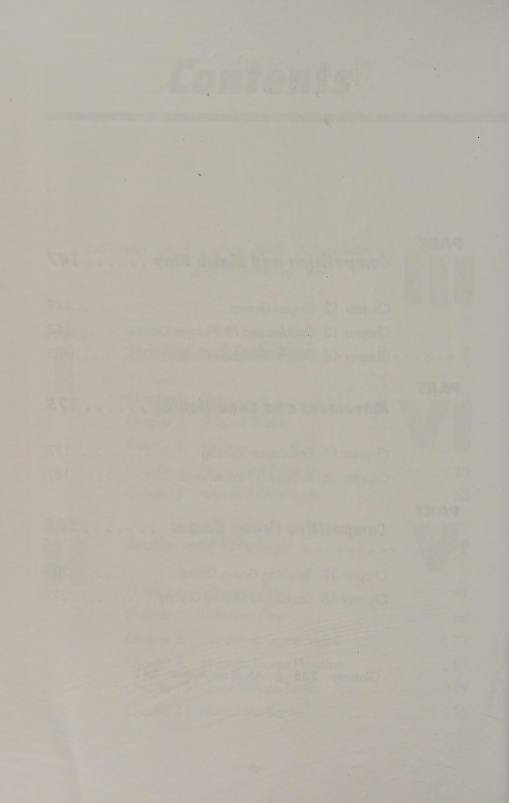
Hình 10: Trò chơi thực chiến đơn — Mô phỏng tình huống bị dẫn điểm và bài tập bảo vệ game giao bóng.
Figure 10: Singles Competitive Pressure Games — Deficit simulation and service hold drills.
Bài Tập Đánh Đôi & Trò Chơi Phối Hợp Đồng Đội Nhiều Người Doubles & Multiplayer Games: Team Positioning & Poaching Drills
Trò chơi đôi và nhiều tay vợt Tay vợt đôi là những tay vợt thông minh. Chơi thông minh hơn đòi hỏi phải ghi nhớ những nguyên tắc nhất định. Cách tốt nhất để rèn luyện tư duy đôi là luyện tập các tình huống đánh đôi giống như trò chơi. Khoan cho phép tay vợt tập trung vào những điểm yếu cụ thể, nhưng khi cách tiếp cận đó trở nên giả tạo, tay vợt sẽ thể hiện tốt hơn trên sân tập so với khi thi đấu. Trò chơi kết hợp lợi ích của mô phỏng trận đấu với sự phấn khích của cuộc thi đấu đôi thực tế. Chơi nhiều trò chơi đôi cạnh tranh hoặc trò chơi nhiều tay vợt giúp tay vợt khám phá công việc và trách nhiệm cụ thể của họ trong một trận đấu đôi. Một đấu thủ biết rõ trách nhiệm cụ thể ở từng vị trí có thể thi đấu với sự tự tin cao hơn trong thi đấu đôi thực tế. Việc chơi các trò chơi trong chương này sẽ giúp tay vợt phát triển các nguyên tắc cơ bản để chơi các trận đấu đôi một cách hiệu quả và có tính cạnh tranh.
154—Trò chơi TÌNH HUỐNG DÍNH Mục tiêu Trò chơi này phát triển kỹ năng chuyền bóng và lốp bóng. Mô tả Trò chơi cải thiện sự tự tin khi tấn công và phòng thủ khi chơi đôi. Đội thực hiện A đứng ở vị trí cuối sân đối mặt với đội B, ở vị trí trên lưới. Một người giao bóng bắt đầu điểm bằng cách đưa quả bóng đầu tiên cho đội A. Đội A cố gắng lốp bóng sâu qua đội B. Đội B cố gắng thực hiện cú lốp bóng (Lob) bằng một cú đập bóng trên cao (Overhead Smash) để giành điểm. Nếu lốp bóng thành công, đội B phải giành lại bóng và lao lên lưới. Đội A chỉ được phép lốp bóng; không được phép thực hiện các cú đánh chạm đất. Đội đầu tiên giành được 21 điểm sẽ thắng trận đấu. Mẹo Tay vợt phải nhớ rằng đánh đôi là một trò chơi đồng đội. Với tư cách là một đội, các tay vợt nên khai thác cú lốp bóng (Lob) qua đầu đối thủ rồi tấn công vào lưới. Nhiều đội không tấn công khi có cơ hội. Thất bại đó có thể phải trả giá đắt vì việc giành được một điểm trên lưới dễ dàng hơn so với ở đường cuối sân. Tay vợt có thể sử dụng cú lốp bóng (Lob) để mở rộng sân trước thay vì cố gắng đưa bóng qua lưới đối thủ. 155— NGOÀI TRÒ CHƠI Mục tiêu Trò chơi giải trí này giúp tay vợt phát triển tính nhất quán, vị trí bóng và chiến lược. Mô tả Tay vợt chia ra và chiếm các vị trí phía sau đường cơ sở đối diện. Chỉ có một quả bóng trong cuộc và các đấu thủ phải giữ bóng qua lại trên lưới, chỉ trong phần sân đơn. Hành động này gần giống như tung hứng một quả bóng giữa một nhóm lớn tay vợt. Thi hành OUT có thể được chơi với sáu tay vợt trở lên—càng nhiều càng tốt. Các đấu thủ chia nhau ra và đứng ở vị trí đối diện nhau, đứng thành hàng một phía sau tâm đường cơ sở (T). Người giao bóng sẽ đưa bóng cho tay vợt đầu tiên xếp hàng ở hai bên lưới. Tay vợt đó đánh bóng và chạy về cuối vạch ở phía đối diện của sân. Tay vợt đầu tiên ở vạch đối diện trả lại bóng và chạy về cuối vạch ở phía đối diện của sân. Trò chơi tiếp tục cho đến khi một tay vợt trượt. Tay vợt đó nhận được chữ O. Tiếp tục chơi. Tay vợt tích lũy đủ các chữ cái của từ OUT sẽ bị loại khỏi trò chơi và ngồi ở khu vực được chỉ định cho đến khi trò chơi kết thúc. Tay vợt cuối cùng còn lại sẽ thắng.
Mục tiêu Trò chơi này giúp tay vợt phát triển kỹ năng lốp bóng và đánh đầu. Mô tả Sáu tay vợt trở lên có thể chơi trò chơi này. Trò chơi dạy tay vợt cách lốp bóng qua đầu đối thủ. Bằng cách tách biệt cú lốp bóng (Lob) và cú đánh từ trên cao, tay vợt có thể giải quyết mọi lo lắng mà họ gặp phải khi đánh chúng trong khi thi đấu. Thực thi Tay vợt A, B và C là một đội và tay vợt D, E và F là một đội. Tay vợt A và B ở trên đường cuối sân, và tay vợt C ở trên lưới ở cùng phía. Tay vợt D và E ở trên đường biên đối diện, và tay vợt F ở trên lưới ở cùng phía. Một người giao bóng đưa quả bóng đầu tiên cho tay vợt A. Bốn tay vợt ở đường cuối sân chỉ có thể đánh bóng. Mục tiêu của họ là lốp bóng qua các tay vợt trên lưới để tay vợt C và F không thể đánh đầu. Tay vợt C và F không được đi sau vạch giao bóng để thực hiện cú đánh. Các đấu thủ đánh ra điểm đến 21 rồi luân phiên nhau để mỗi thành viên trong đội có cơ hội vào vị trí lưới. Mẹo Những cú lốp bóng (Lob) yếu cho phép đối phương tiến lên và đánh đầu để giành chiến thắng. Tay vợt nên tập trung vào việc đánh bóng về phía trước, áp dụng một chút xoáy lên với chuyển động từ thấp đến cao và hoàn thành động tác tiếp theo như khi đánh các cú đánh trên mặt đất. Tay vợt cũng nên cố gắng thực hiện các cú lốp bóng (Lob) phòng thủ hoặc tấn công cao bằng xoáy xuống.
157—TRÒ CHƠI SURVIVOR Mục tiêu Trò chơi này củng cố khả năng tạo cú đánh, động tác bằng chân, chọn cú đánh và vị trí bóng tốt. Mô tả Trò chơi sống sót đề cao tinh thần đồng đội và dạy tay vợt suy nghĩ trước khi tấn công để tránh khiến bản thân hoặc đồng đội của họ bị giết. Thực hiện Trò chơi này có thể được chơi với bốn tay vợt trở lên—càng nhiều càng tốt. Tay vợt chia thành hai nhóm. Không có đội; tay vợt giữ điểm số của riêng mình. Tay vợt bắt đầu với 10 mạng và mất một mạng mỗi khi mất một điểm. Một nhóm tay vợt đứng sau một đường cơ sở (T) và nhóm còn lại đứng sau đường cơ sở kia (T). Người giao bóng bắt đầu điểm bằng cách đưa bóng cho tay vợt đầu tiên ở một trong các hàng, người này đánh bóng và quay về cuối hàng đó. Tay vợt đầu tiên ở hàng đối diện đánh lượt trả lại rồi quay về cuối hàng đó. Tay vợt thứ hai ở hàng đầu tiên đánh lượt trả lại này và quay. Trình tự này tiếp tục cho đến khi tay vợt bắn trượt và do đó mất mạng. Tay vợt mất 10 mạng sẽ ngồi ở bên sân cho đến khi trận đấu kết thúc. Trò chơi tiếp tục cho đến khi còn lại một tay vợt. Mục tiêu Trò chơi này phát triển kỹ năng nhất quán và tập trung trong quá trình trao đổi bóng nóng trên lưới. Mô tả Nhanh tay nhanh chân chính là tên của trò chơi này. Khi đánh đôi, tay vợt phải có khả năng phản ứng nhanh với những quả bóng đánh thẳng vào mình. Trò chơi này làm sống động lối chơi trên lưới để tay vợt sẵn sàng cho bất kỳ quả bóng nào đánh vào họ hoặc ở xa họ. Thực hiện Bốn tay vợt được xếp ở vị trí cuối sân, hai người ở mỗi bên lưới. Tay vợt bắt đầu với 21 điểm mỗi người. Tay vợt A đưa bóng vào cuộc bằng một quả giao bóng cho tay vợt B. Tay vợt B trả bóng cho tay vợt C. Tay vợt C trả bóng cho tay vợt D và tay vợt D trả bóng cho tay vợt A. Tay vợt không được phá vỡ chuỗi các cú đánh. Tay vợt ném trượt sẽ mất một điểm. Tay vợt nào mất ít điểm nhất sẽ thắng.
159—KNOCKER TENNIS GAME ee " Mục tiêu Trò chơi này giúp tay vợt xác định trình độ kỹ năng của mình và cho họ cảm giác như thế nào khi thi đấu trong một giải đấu. Mô tả Sáu tay vợt trở lên có thể tham gia vào phương thức đấu trận này. Những tay vợt có khả năng khác nhau có thể thi đấu với nhau. Việc luân phiên đấu trận mang lại cho mỗi đội và tay vợt cơ hội chơi nhiều kiểu trò chơi đối kháng khác nhau. Thi hành Tay vợt nên hợp tác thành các đội đôi. Đội A, B, C, và D thi đấu với nhau. Khi một đội thắng một trận đấu, họ sẽ giành được 1 điểm. Đội nào giành được 15 điểm sẽ thắng cuộc. Mỗi đội chơi theo phong cách tốt nhất trong bốn trận ghi điểm thông thường. Đội chiến thắng sẽ xoay một sân về phía sân đầu tiên, sân cao nhất. Tay vợt có thể sử dụng phương pháp này khi chơi đơn. Tay vợt nên nhớ phương trình C + A =S: Tự tin + Quyết liệt = Thành công. 160—Trò chơi lao nhanh và đè bẹp oO Mục tiêu Trò chơi này buộc tay vợt phải sử dụng các kỹ năng giao bóng và vô lê, chuyền bóng và trả giao bóng. Mô tả Tay vợt phải sử dụng kỹ thuật giao bóng và vô lê để bắt đầu điểm, nếu không sẽ mất điểm. Đội nhận bóng phải thực hiện các cú chuyền bóng mà không lốp bóng ở quả bóng đầu tiên. Tay vợt thực thi đảm nhận vị trí đôi tiêu chuẩn. Đội A đấu với đội B. Đội A phải giao bóng và vô lê ở cả lần giao bóng thứ nhất và thứ hai. Đội B chỉ phải quay lại bằng một cú chuyền bóng. Sau khi các đội sử dụng phương pháp bắt đầu này, họ có thể diễn ra theo bất kỳ cách nào họ chọn. Họ chơi một set bằng các phương pháp tính điểm thông thường. Mẹo Đội nhận bóng phải đánh vào chân người giao bóng và người chuyền bóng.
161—Trò chơi CHÌM HOẶC BƠI Mục tiêu Trò chơi này xây dựng kỹ thuật chơi đôi và giao tiếp. Mô tả Trò chơi giúp tay vợt học cách làm việc theo nhóm. Bằng cách thưởng cho một đội có lợi thế về điểm so với đội kia để bắt đầu, các tay vợt của đội phòng thủ có động lực chiến đấu hết mình và tận dụng mọi cơ hội để tấn công. Thực hiện Hai đội đặt mình ở vị trí phía sau đường cơ sở đối diện. Máy chủ bắt đầu điểm đầu tiên bằng cách tung một cú sút sâu cho đội A. Các đội sẽ giành điểm bằng chiến lược đánh đôi. Nếu đội A thắng điểm, họ sẽ di chuyển lên vạch giao bóng để bắt đầu điểm tiếp theo. Đội B đang ở vạch cuối sân để bắt đầu. Người giao bóng đưa một quả bóng khác cho đội A để bắt đầu điểm. Các đội chơi hết điểm. Nếu đội B thắng điểm này, đội A phải lùi nhanh về vạch cuối sân và đội B xuất phát ở vạch giao bóng. Người giao bóng đưa một quả bóng khác cho đội A để bắt đầu điểm. Nếu đội B thắng điểm này, họ sẽ tiến lên lưới ở vị trí xuất phát cuối cùng và đội A bắt đầu ở đường cuối sân. Nếu đội B thắng điểm này thì thu ván đầu tiên của trận đấu 10 ván. Máy chủ đưa một quả bóng khác cho đội A. Nếu đội A giành được điểm, họ sẽ di chuyển lên vạch giao bóng, đội B lùi về vạch cuối sân và trò chơi tiếp tục. Nhưng nếu đội B thắng điểm này thì ván đầu tiên kết thúc và đội B thu được ván đầu tiên là 10. Các tay vợt đổi bên để bắt đầu ván khác. Người giao bóng sẽ đưa quả bóng đầu tiên cho đội B. 162—TRÒ CHƠI THAY ĐỔI NHANH Mục tiêu Phương pháp trò chơi này buộc tay vợt phải sử dụng cả ba loại đội hình đôi— đội hình Úc, quái vật hoặc I và tiêu chuẩn. Mô tả Tay vợt được yêu cầu sử dụng cả ba đội hình đánh đôi trong tất cả các ván giao bóng trong trận đấu của mình. Đội thực hiện A, đội giao bóng, phải giao bóng bằng cách sử dụng đội hình đánh đôi khác nhau để bắt đầu mỗi điểm của ván giao bóng của mình, nếu không họ sẽ bỏ cuộc. Đội B thi đấu theo thể thức nhận đôi tiêu chuẩn. Sau khi đội A hoàn thành trò chơi, quả giao bóng sẽ chuyển sang đội B. Đội B phải giao bóng cho từng điểm bằng đội hình đôi khác nhau nếu không họ sẽ thua trận đấu. Các đội chơi toàn bộ trận đấu bằng phương pháp này. Mẹo Giao tiếp tốt giữa các đối tác là chìa khóa tạo nên một đội đôi mạnh mẽ.
Mục tiêu Trò chơi này củng cố giá trị của việc hướng bóng đến các khu vực khác nhau của sân. Mô tả Trò chơi tuyệt vời này dạy tay vợt cách chỉ đạo và kiểm soát các cú đánh. Bằng cách sử dụng thuật ngữ bóng chày để sắp xếp các cú đánh, tay vợt có được cảm giác tham gia của đội trong khi thực hành các cú đánh trên mặt đất. Thi hành Chỉ có 2 hoặc nhiều nhất là 20 tay vợt có thể chơi bóng chày quần vợt. Với ít hơn 4 đấu thủ trên sân, tất cả các đấu thủ đều bắt đầu ở cùng một phía của sân, ở vị trí phía sau chính giữa (T), người này đứng sau người kia. Một máy chủ được đặt trên lưới và là người tiếp bóng (Feeder). Tay vợt đầu tiên xếp hàng tiến đến đường cơ sở (T) hoặc đường giao bóng (T), tùy thuộc vào cấp độ khả năng. Mỗi tay vợt được hai đòn rồi phải nhường lượt cho tay vợt tiếp theo bước lên đánh. Cú đánh là những quả bóng được đánh vào lưới, ra ngoài khu vực sân hoặc trượt hoàn toàn. Bất kỳ quả bóng nào chạm vào giữa lưới và đường giao bóng, kéo dài vào đường đánh đôi, được tính là một quả duy nhất và tay vợt nhận được một điểm. Một quả bóng hạ cánh vào vùng đất cấm là một cú đúp và kiếm được hai điểm. Một quả bóng được đánh vào hẻm đôi nhưng phía sau vạch giao bóng ở hai bên sân là một quả ba điểm, có giá trị ba điểm. Một quả bóng chạm vạch cuối sân trong lần trả bóng đầu tiên được coi là một quả bóng về nhà và ghi được bốn điểm. Tay vợt giữ điểm số của riêng mình. Phiên bản quần vợt bóng chày này không bao gồm việc chạy, bắt hoặc gắn thẻ. (tiếp theo)
Biến thể Khi có sáu người trở lên chơi, tay vợt chia thành hai đội. Một đội, đội A, chiếm vị trí phía sau đường cuối sân với tư cách là đội đánh. Đội B ở ngoài sân, bên kia lưới, rải rác khắp sân. Cột lưới bên phải lưới tennis là đế thứ nhất, tâm (T) là đế thứ hai, cột lưới bên trái là đế thứ ba, và tâm cuối sân (T) ở phía đội đánh bóng là sân nhà. Khi một người đánh bóng đánh một quả bóng trong một khu vực được chỉ định của sân và một tay vợt chắn bóng bằng tay bắt quả bóng từ trên không, người đánh bóng sẽ bị loại. Những quả bóng nảy lên là những cú đánh an toàn và người đánh sẽ lấy phần đế trùng với vị trí của cú đánh. Ví dụ: một quả bóng đánh vào vùng đất không có người là một cú đúp và người đánh bóng sẽ có cơ sở thứ hai. Các cuộc chạy bị ép buộc và không có sự gắn thẻ hoặc chạy từ cơ sở này sang cơ sở khác. Vị trí của các quả bóng do người đánh trúng quyết định tính điểm của lượt chạy. Sau ba hiệp, các đội luân phiên nhau. Họ chơi chín hiệp và ăn rất nhiều xúc xích!
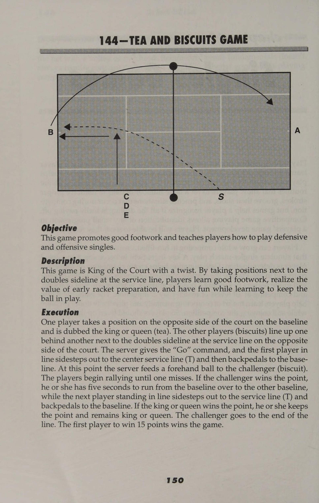
Hình 11: Trò chơi phối hợp đánh đôi 'Tea and Biscuits' — Phân công vị trí lưới và phối hợp cướp lưới (poaching) đỉnh cao.
Figure 11: Doubles Team Tactics 'Tea & Biscuits' — Net tandem positioning and poaching coordination.
Trò Chơi Mô Phỏng Trận Đấu Áp Lực Cao & Xử Lý Loạt Tie-Break Match Simulation Games: Tie-Break Scenarios & Clutch Points
== chương 14+ Trò chơi mô phỏng trận đấu Tay vợt quần vợt biết rằng áp lực là một phần của việc thi đấu. Cách các tay vợt thể hiện dưới áp lực sẽ quyết định liệu họ sẽ trở thành đối thủ nặng ký hay chỉ là những tay vợt xã hội vào chiều thứ Bảy. Nếu tay vợt có ý định chơi các trận đấu hoặc giải đấu cấp câu lạc bộ, họ phải luyện tập dưới áp lực để học cách đối phó với nó trong một trận đấu. Không gì có thể thay thế được áp lực của cuộc thi đấu trận đấu thực tế, nhưng các bài tập cụ thể và trò chơi mô phỏng trận đấu có tác dụng như những công cụ rèn luyện thể chất và tâm lý tuyệt vời. Phần sau đây trình bày một số tình huống này để tay vợt luyện tập và sử dụng trong khi thi đấu. Việc sử dụng các bài tập và trò chơi mô phỏng trận đấu này sẽ giúp tay vợt học cách đối phó với sự thất vọng, thất bại và chiến thắng một cách duyên dáng.
164—Trò chơi đội giao bóng đôi Mục tiêu Bài tập này cải thiện chiến lược và kỹ thuật giao bóng cụ thể của đội. Tay vợt tìm hiểu lý do và thời điểm sử dụng các chiến lược cụ thể cũng như điều gì sẽ xảy ra trong trận đấu khi họ sử dụng chúng. Mô tả Tay vợt không chỉ nên thực hành các cú đánh cụ thể hoặc kết hợp các cú đánh mà còn phải thực hành chúng trong các tình huống giống như trò chơi. Chơi trong các tình huống giống như trò chơi giúp tay vợt áp dụng các chiến lược họ cần để thành công trong những điều kiện nhất định và trong các trận đấu nhất định. Họ chỉ chơi các tình huống sau với tư cách là đội giao bóng. Thi hành Tay vợt chơi một bộ tám ván chuyên nghiệp (tay vợt hoặc những tay vợt phải đạt được tám ván và thắng cách biệt hai ván). Người giao bóng phải giao bóng và chuyền bóng ở lần giao bóng thứ nhất và thứ hai. Họ thực hành sử dụng tín hiệu và săn trộm bằng vô lê. Họ nên chơi tiebreak 12 điểm và giành được ít nhất hai trong số ba quả giao bóng đầu tiên và một nửa số quả giao bóng thứ hai. Họ chơi tiebreak 12 điểm bằng cách sử dụng đội hình quái vật (I) trong mỗi lần giao bóng đầu tiên và một nửa số lần giao bóng thứ hai. Các biến thể Khi thi đấu đôi Úc, mỗi đấu thủ giao bốn điểm trên sân. Nếu đội giao bóng gặp khó khăn trong việc giao bóng và chuyền bóng vì đội nhận bóng quá khó, hãy thử sử dụng đội hình giao bóng của Úc. Đội hình này loại bỏ khả năng trả bóng chéo sân của đội nhận bóng. Khi chơi đánh đôi quái vật, tay vợt trên lưới phải giành được ít nhất một trong bốn điểm. Đội hình giao bóng này là một biến thể của đội hình Úc. Tay vợt nên nhắc nhở đồng đội của mình vào vị trí sẵn sàng dưới mức băng lưới để tránh nguy cơ bị đồng đội đánh vào sau đầu. Tay vợt cũng nên thảo luận về tín hiệu trước khi bắt đầu trận đấu. Đội hình hung hãn này thực sự khiến đội đối phương bối rối, vì vậy hãy sử dụng nó khi bạn cần thêm một chút động lực tâm lý để giúp kiểm soát trận đấu. Mẹo Tay vợt trên lưới nên thực hiện một động tác giả có thể nhìn thấy được (một trò lừa bịp) khi ở trên lưới và không di chuyển. Việc lừa gạt khiến đối thủ thay đổi kế hoạch tấn công ban đầu khi họ nhìn thấy chuyển động. Người trả bóng thường đánh sai nỗ lực thay đổi cú đánh hoặc đánh ngay vào tay vợt đã sử dụng động tác vô tội vạ.
165—CHIP-LOB TRÒ CHƠI TRẢ LẠI ee oc ct tm mee eet - =- ax Mục tiêu Phương pháp trò chơi này giúp tay vợt chống lại các đội sử dụng quái vật (I) nhân đôi đội hình hoặc chỉ thích săn trộm nhiều. Mô tả Tay vợt có thể sử dụng phương pháp phòng thủ này trước một đội thích săn trộm và giao bóng thứ hai. Họ có thể sử dụng cú trả bóng chip-lob như một cách để vào lưới sớm và buộc đội đối phương phải thay đổi kế hoạch thi đấu. Đội thi hành án A được bố trí trong đội hình quái vật (I) đôi hoặc đội hình đôi tiêu chuẩn. Các tay vợt của Đội B bắt đầu trở lại vạch cuối sân. Đội A bắt đầu ghi điểm đầu tiên của ván đầu tiên bằng cách giao bóng và chuyền bóng. Đội B phải lốp bóng trả bóng qua đầu của tay vợt trên lưới và ở lại để ghi điểm. Sau khi đội A rút lui và chạy lại để lấy bóng, đội B nên tìm cách tấn công vào lưới. Cả hai đội tiếp tục tranh giành điểm. Các đội bắt đầu từng điểm của mỗi trò chơi bằng phương pháp này. Việc chấm điểm được thực hiện theo hệ thống thông thường. Để củng cố cú trả bóng chip-lob, các đội nên chơi ít nhất ba hoặc bốn set bằng phương pháp này. Mẹo Tay vợt nên cố gắng giữ bóng trong cuộc càng lâu càng tốt và sử dụng các lốp bóng phòng thủ cao với xoáy lên hoặc xoáy xuống.
166—TRÒ CHƠI ĐÔI XOAY Mục tiêu Trò chơi này củng cố tất cả các khía cạnh của lối chơi đôi. Mô tả Trò chơi này giúp phát triển các trách nhiệm khác nhau của tay vợt trong quá trình thi đấu. Thi hành Các đấu thủ của đội A ở trên lưới với tư cách là vua hoặc hậu của sân. Nếu năm tay vợt đang chơi thì hai người là một đội ở đường biên đối diện. Đội này phải giành được 3 điểm liên tiếp để chiếm vị trí của đội A. Một người giao bóng được đặt ở cột lưới sẽ đưa quả bóng đầu tiên cho tay vợt của đội thách đấu đứng phía sau sân deuce, người này có hai cơ hội để đưa bóng vào cuộc. Nếu đấu thủ đánh trượt, người đó sẽ chuyển sang bên có lợi, đấu thủ đứng sau sân thuận lợi sẽ quay ra ngoài, và đấu thủ đang chờ sẽ di chuyển lên đường cuối sân phía sau sân deuce. Đội thử thách mới bắt đầu với số điểm bằng 0 và một điểm mới bắt đầu. Biến thể Với số lượng tay vợt chẵn, các đội sẽ luân phiên. Các đội phải giành được 3 điểm liên tiếp để trở thành vua hoặc nữ hoàng. Nếu đội thách đấu mất một điểm, một đội mới sẽ thay phiên tham gia và đội thua sẽ mất tất cả điểm. Khi đội thách đấu tích lũy được 3 điểm, họ sẽ di chuyển sang phía bên kia và chiếm vị trí lưới. Các vị vua hoặc nữ hoàng bị truất ngôi sẽ giữ lại số điểm mà họ đã tích lũy cùng nhau và xây dựng trên tổng số điểm đó khi họ hợp tác trở lại với tư cách là vua hoặc nữ hoàng. Người thách đấu không giữ được 3 điểm giành được để truất ngôi vua hoặc hoàng hậu. Đội mới này bắt đầu với số điểm bằng 0 và tích lũy điểm cùng nhau với tư cách là vua hoặc nữ hoàng. Sau khi người giao bóng đưa bóng, điểm bắt đầu. Đội đầu tiên giành được 15 điểm sẽ thắng.
167—Trò chơi giao bóng và cú bắt lưới (Volley) Mục tiêu Trò chơi này hoạt động dựa trên vị trí giao bóng, cú vô lê tiếp cận và cú vô lê kết thúc. Mô tả Trò chơi này nhấn mạnh việc giao bóng ở giữa (T) của sân giao bóng, thực hiện cách tiếp cận và kết thúc các cú vô lê trong khi thi đấu. Đội thi công A và đội B vào vị trí đánh đôi tiêu chuẩn. Trò chơi này chỉ cho phép một lần giao bóng cho mỗi đội và mỗi tay vợt. Đội A giao bóng đầu tiên ở giữa (T) của sân giao bóng cho đội B và áp sát để thực hiện cú vô lê tiếp cận trở lại vị trí mà người giao bóng đã giao bóng. Người nhận giao bóng ở phía bên kia sân của đội B phải trả lại quả giao bóng, cố gắng đánh thấp đến chân người giao bóng của đội A. Người giao bóng của Đội A, sau khi thực hiện cú vô lê tiếp cận trở lại vị trí mà họ đã thực hiện quả giao bóng, sẽ tiến lại gần và cố gắng đánh người chiến thắng cú vô lê thứ hai. Sau sự kết hợp ba đòn này, trận đấu tiếp tục cho đến khi một đội giành được điểm. Mỗi máy chủ giao bóng các trò chơi 15 điểm và sau đó luân phiên. Mẹo Khi cố gắng thực hiện một cú vô lê tiếp cận, tay vợt phải lắp bắp bước hoặc tách bước trước khi đánh, đánh bóng ra phía trước và di chuyển về phía bóng. Họ không nên đợi bóng đến với mình.
168—TRÒ CHƠI CHUYỂN ĐỔI MEDUSA nee Mục tiêu Trò chơi này hoạt động dựa trên các cú đánh tiếp cận và các cú chuyền bóng. Mô tả Đây là một trò chơi tuyệt vời để chơi với bốn tay vợt trở lên. Tay vợt cố gắng giành điểm bằng cách thực hiện những cú chuyền bóng vào lưới tay vợt được mệnh danh là Medusa, nữ hoàng của một triệu cánh tay và bàn tay. Thực hiện Người giao bóng đưa bóng từ một vị trí sang một bên và ngoài sân. Các đấu thủ B, C, D và E thách đấu xếp hàng ở chính giữa (T) phía sau đường cuối sân. Tay vợt A ở vị trí phía sau đường cuối sân ở phía đối diện của sân. Người giao bóng đưa bóng vào khu vực giữa sân cho tay vợt B. Tay vợt B di chuyển về phía trước để thực hiện cú đánh tiếp cận và sau đó áp sát vào lưới. Tay vợt A, Medusa, cố gắng thực hiện một cú sút vượt qua tay vợt B. Cả hai tay vợt đều ghi điểm. Khi hết lượt, tay vợt B quay về cuối hàng và đến lượt tay vợt C. Không được phép lốp bóng trong lần chuyền bóng đầu tiên. Người thách đấu giành được ba điểm sẽ trở thành nữ hoàng bắn chuyền, Medusa. Biến thể Với tám tay vợt trở lên, tay vợt nên lập nhóm và chơi theo các quy tắc giống nhau, ngoại trừ các đường đôi là tốt. Mẹo Một trong những nguyên tắc quan trọng nhất khi thực hiện các cú chuyền bóng là giữ bóng thấp dưới chân tay vợt trên lưới. Hành động này buộc người tung cú vô lê phải đánh lên, làm giảm cơ hội thực hiện cú vô lê nửa chừng hoặc cú vô lê tiếp cận hung hãn. Bóng xoáy lên rơi nhanh hơn so với bóng phẳng hoặc bóng xoáy xuống, vì vậy tay vợt nên cố gắng sử dụng xoáy lên đáng kể khi thực hiện cú đánh chuyền căng thẳng.
: 169— TRÒ CHƠI THỬ THÁCH CHUYỂN ĐỔI NỬA BÓNG CHUYỂN Mục tiêu Thử thách này rèn luyện kỹ năng chuyền bóng nửa vòng, chuyền bóng và chiến lược dứt điểm của tay vợt. Mô tả Trò chơi này giúp tay vợt phát triển khả năng chạm bóng cần thiết để thực hiện cú chuyền bóng một nửa. Đội thi hành án A ở phía sau vạch giao bóng ba feet. Đội B đứng sau đường cơ sở đối diện. Một máy chủ phía sau cột lưới bên sân của đội A bắt đầu điểm bằng cách đưa một cú đánh cơ bản cho đội B. Đội B cố gắng thực hiện một cú đánh chuyền mà họ không được lốp bóng. Đội A tiến lên để bắt cú sút bằng nửa cú vô lê rồi áp sát để kết thúc điểm. Sau khi đội A thực hiện được nửa cú vô lê, cả hai đội đều cố gắng giành điểm. Họ chơi trò chơi 21 điểm và sau đó luân chuyển tay vợt. Mẹo Những tay vợt gặp vấn đề khi đánh nửa cú vô lê có thể đang cố gắng đẩy bóng qua lưới với hông ở trên bóng. Họ nên giữ hông và đầu gối thấp hơn bóng bằng cách sử dụng cơ đùi để duy trì nền tảng vững chắc. Tay đánh phải chắc chắn, cổ tay và tay cầm phải chặt để đầu vợt vững chắc khi tay vợt thực hiện cú đánh. _ 170—OVERH wes EAD SMASH GAME aieatononsieaisieneon Mục tiêu Trò chơi này nhấn mạnh vào việc đánh vào đầu để giành điểm. Mô tả Bài tập này giúp tay vợt rút ngắn thời gian vung vợt về phía sau để họ có thể bắt bóng xa hơn về phía trước, rút ngắn thời gian phản ứng, đẩy nhanh động tác bằng chân bằng cách nhấn mạnh vào bước nhảy sẵn sàng và ghi điểm từ vị trí phòng thủ. Thực hiện Hai tay vợt của đội A đang ở trên lưới và hai tay vợt của đội B ở phía sau đường biên đối diện. Một máy chủ đứng phía sau những tay vợt ở đường cuối sân và cung cấp một chi phí tương đối khó cho đội A. Đội A cố gắng đánh và loại bỏ chi phí mà đội B cố gắng lấy lại. Sau đó, Đội B cố gắng thực hiện những cú chuyền bóng hoặc lốp bóng để giành điểm. Khi một đội mất một điểm, một đội gồm các tay vợt khác, đội C hoặc D, sẽ thay phiên nhau. Đội nào giành được 21 điểm trước sẽ thắng. Mẹo Tay vợt nên để đầu vợt dẫn đầu như khi giao bóng và đảm bảo rằng họ ở bên dưới bóng. Quả bóng sẽ nảy trước mặt họ khi họ ở đúng vị trí.
171—Trò chơi vòng tròn vui nhộn của đội Mục tiêu Trò chơi này tập trung vào việc cải thiện khả năng giao tiếp của đội, đánh đầu, lốp bóng, đột phá, chiến lược đánh đôi và vị trí chuyền bóng. Mô tả Sáu tay vợt trở lên có thể chơi trò chơi đầy hành động này. Tay vợt học cách xác định và phản ứng với các cú đánh khác nhau, đặt cú đánh cũng như hối hả che chắn và phục hồi sau khi đánh và giành được điểm. Đội thi hành án A, các quân vua hoặc quân hậu của sân, xếp thành đội hình đôi tiêu chuẩn ở một bên sân. Các đội thách thức—B, C và D—ở phía đối diện, xếp sau nhau cạnh đường biên đôi và đường giao bóng. Một người giao bóng đứng ở bên sân của đội A (quân vua hoặc quân hậu). Theo hiệu lệnh của người giao bóng, đội thách đấu đầu tiên, đội B, bước sang một bên dọc theo vạch giao bóng, chạy nước rút về phía lưới, dùng vợt chạm vào lưới và lùi về phía sau để chuẩn bị cho một pha vượt lên trên. Máy chủ thực hiện một cú lốp bóng (Lob) sâu trước đội B đầy thách thức. Đội B phải phản ứng, thu hồi cú lốp bóng (Lob) và giành điểm. Nếu đội A thắng điểm, họ vẫn là quân vương hoặc quân hậu và giữ nguyên số điểm đó. Nếu đội B thắng điểm thì đội A chạy về cuối hàng của đội thách đấu. Đội B có năm giây (được máy chủ đếm ngược) để chạy các cột lưới đối diện (các thành viên trong đội chạy vòng quanh các cột lưới đối diện để bao quát cả hai bên) và vào vị trí đánh đôi tiêu chuẩn trước khi thách đấu đội C hoàn thành việc thu hồi lốp bóng. Các đội chơi hết điểm. Đội đầu tiên đạt 21 sẽ thắng trò chơi. Biến thể Máy chủ có thể sử dụng các cú đập bóng trên cao (Overhead Smash), cú đánh rơi hoặc kết hợp các cú đánh thay vì chỉ lốp bóng. Các đội chỉ luân chuyển về phía sân của mình thay vì chạy từ bên này sang bên kia. Nếu có từ sáu đội trở lên tham gia, trò chơi đu quay có thể rất thú vị cho tất cả những người tham gia, bởi vì các đội phải thực sự tập trung vào việc đánh, di chuyển và bố trí các cú đánh để không khiến đồng đội của mình hoặc đội di chuyển vào và chơi ngay phía sau bị đè bẹp. Người hướng dẫn hoặc tay vợt có thể thử nghiệm cách thực hiện ban đầu và sử dụng hầu như bất kỳ cú đánh hoặc sự kết hợp cú đánh nào để giữ cho hành động trở nên phấn khích và mang tính giáo dục. Mẹo Tay vợt nên trả lại một cú lốp bóng (Lob) với một cú lốp bóng (Lob) được đánh chéo để sử dụng thêm 5 feet sân phụ.
172—Trò chơi ĐÔI PEG-IEG = Mục tiêu Trò chơi này nhấn mạnh tính nhất quán và vị trí. Mô tả Tay vợt chỉ sử dụng một nửa sân đôi, tính điểm và trò chơi chéo sân. Tay vợt phải cố gắng giữ bóng trong cuộc và tránh xa người bắt bóng. Tay vợt phải sử dụng mọi kiểu đánh để không cho tay vợt lưới cướp bóng từ trên không. Các Đội Thi Hành được bố trí theo đội hình đôi tiêu chuẩn. Đội A giao bóng vào sân deuce. Đội B trả lại chéo sân. Các đội chỉ thi đấu chéo sân, bao gồm cả việc sử dụng sân đôi. Tay vợt trên lưới có thể cố gắng cướp khi quả giao bóng được thực hiện. Các tay vợt trên lưới của cả hai đội chỉ có thể thực hiện các cú đánh chéo sân, chẳng hạn như cú vô lê, cú vô lê hoặc cú đánh đầu. Các đội chơi cả hiệp, chuyển giao bóng và vị trí sau mỗi trận đấu và sử dụng tính điểm thường xuyên. Biến thể Đội giao bóng sử dụng chiến thuật giao bóng và vô lê trong mỗi lần giao bóng đầu tiên. Ngoài ra, đội giao bóng có thể bị hạn chế một lần giao bóng cho mỗi điểm trong mỗi trận đấu. Mẹo Những tay vợt gặp khó khăn khi thực hiện cú trả giao bóng chắc chắn nên đảm bảo rằng họ không đứng bằng chân phẳng, một tư thế làm chậm phản ứng với bóng. Tay vợt nên di chuyển chân trong khi người giao bóng đang thiết lập, tách bước khi người giao bóng đánh bóng và di chuyển về phía trước khi vuốt ve.
ví dụ bnen ae Tenia jokey lied) Dg +a tae Gara mitra potty aes al ia oF sh ncnacy lois a Jaovavisn ie wd, Npuliaguaahinesie Be laene *% Say ener Se , “AOR pl 4 NO SPN ET saree salto te Sk inhincr dic sdtaltes cathe di Naiman ari penne ORE Sos Seis oa Mel yb cela eae forvord *:8 py? leg” ro i nee ae ae ierewine gn nhà thơ — ae aden te “et OF aye a he iia hh : t " ates a ee seal' ab the yee > el wtanin. jana telac-cltnaeter-asehetenaa re enemeobrall paca trẻ sơ sinh pe đã lấy sisal mst Lohr ; . ôi. wel y nha by a grt ¥ ie wun ORT baw ade mi ys % it fom : ere + nine i an on Siar' Sa ashe si ls berger 3 a i ae mr ie Walt new a4 “oir tara ca - ua gh ia ie uy tae raat 9 auite dee 6; pict a oe fei a LPpte.seed i eee igi jcctie es Pe: al j 4: _i ae Uranus as fer tenes, Hehe iy aba =f sit . * sihacterwe pir athe eee yada ne a =a : “4 5 ; à = = ‘- tức là. rial Oe là gì? fbn: Chúng tôi ah oer cee WN aes
Chuyển động và Điều hòa Tay vợt quần vợt không chỉ cần nhanh nhẹn, hoạt bát và thông minh mà còn phải mạnh mẽ. Sức mạnh chiếm 60% trong quá trình tập luyện quần vợt. Những tay vợt thực hiện một chương trình tập luyện toàn diện sẽ phát huy tối đa khả năng thể chất của họ và luôn đứng đầu trong trò chơi của họ. Nỗ lực cải thiện sức mạnh, tính linh hoạt và khả năng tim mạch bằng cách tập luyện trong và ngoài sân 12 tháng một năm cũng sẽ giúp tay vợt giảm thiểu những chấn thương quần vợt khó chịu. Nhu cầu chơi quần vợt để giải trí hoặc tham gia các giải đấu có thể xuất hiện dưới dạng một chuỗi các trường hợp khẩn cấp liên tục—chạy nhanh theo bóng, nhanh chóng đổi hướng, duỗi người, lao nhào, dừng lại, xuất phát, trên mọi loại bề mặt và trong mọi loại thời tiết. Có thể thực hiện những động tác này, đồng thời duy trì sự cân bằng và kỹ thuật phù hợp trong suốt trận đấu, là điều quan trọng để đạt được hiệu suất tối ưu trên sân. Quần vợt cần nhiều năm luyện tập, vì vậy cơ thể của tay vợt phải có khả năng duy trì hàng giờ, hàng tháng và hàng năm luyện tập mệt mỏi. Tay vợt nên nhớ rằng trí óc, cơ thể và tinh thần là tài sản lớn nhất mà họ có đối với bất kỳ môn thể thao nào. Họ phải giữ chúng trong hình dạng!
ban tnemevoll, * gre tithes tyatd-crkseee | Sar wt wily gine’ % i ab parca ort ant: oni grit a i iesckabriegotios Mine) ‘yl ftictieyi) iter he Spin: ‘i eke eR sneen ry a % & witown 2) acu derl ie Peo Tirta Mri tenn att. ed othe: res volhvat fit ta cated? Baw yleeg wxtoniiany ertelg gfenl ¢ đất TEs sai Biro) OMEN reer go ec aensnaNOD at pat 0d Ree ane ied rt fie Ve space ma en ies ree 8 ded sat 5 hen ] ng i PPT zs 5 rhe! i A) nước mắt pet = bionien plas AB, lw posechis 7 ij ống Ms Sraprrioils aaiatoas vad ne oan a ; ce) “dal ty d East eadbetad ea ra bapiact oe ney _ De Pati oe Gbiegiie ere 4-Belrgee a pene ris AST cenak Ten , malt Cc A wr =~
Phần 4: Thể Lực, Độ Bền, Duy Trì Phong Độ & Huấn Luyện Nhóm
Huấn Luyện Độ Bền Chuyên Biệt, Tốc Độ Di Chuyển & Phục Hồi Thể Lực Endurance Training & Anaerobic Capacity Drills
Rèn luyện sức bền Ngày nay, hầu hết tay vợt đều sử dụng các kế hoạch trò chơi phức tạp đến mức sẽ phải là một ngày lạnh giá ở Hades trước khi đối thủ của họ nhìn thấy một quả bóng rơi ở bất cứ đâu gần họ. Do đó, tất cả tay vợt phải có tốc độ và khả năng bao quát sân tuyệt vời. Họ phải có khả năng giành được điểm khi đối thủ để họ chạy từ góc này sang góc khác, lên lưới và sau đó lùi về phía sau vạch cuối sân để thực hiện một cú lốp bóng (Lob) xoáy lên. Và, ồ vâng, họ phải có khả năng phục hồi sau 30 giây để chơi điểm tiếp theo với cường độ cao như trận trước. Sự nhanh nhẹn và trình độ thể thao là chìa khóa để chơi chăm chỉ và đánh những cú đánh, đồng thời chúng rất quan trọng đối với mọi chuyển động trên sân, nhưng tốc độ mới là thứ sẽ đưa tay vợt đến đó. Vì vậy, tay vợt phải chấp nhận sự chăm chỉ để trở nên khỏe mạnh với môn quần vợt. Chạy nước rút, đổi hướng nhanh chóng, vươn người, duỗi người, lao tới, dừng lại, uốn cong, nhảy và thực hiện những pha xuất phát và dừng bùng nổ đều là những đặc điểm về nhu cầu thể lực của quần vợt ngày nay. Bằng cách kết hợp giữa tính linh hoạt, sức mạnh, sức bền, sức mạnh, sự nhanh nhẹn, tốc độ, thành phần cơ thể và thể lực hiếu khí và kỵ khí, tay vợt sẽ cải thiện đáng kể các trận đấu quần vợt của mình. Chương này chứa đầy những bài tập tuyệt vời về tốc độ và sự nhanh nhẹn trên sân. Những tay vợt luyện tập chúng một cách kỷ luật sẽ đạt được mục tiêu tập luyện quần vợt của mình.
173—ĐIỂM VÀ ĐI Mục tiêu Bài tập này dạy cho tay vợt những kỹ năng cần thiết để thay đổi hướng nhanh chóng. Mô tả Bài tập này giúp tay vợt xây dựng sự khéo léo cần thiết để thay đổi hướng nhanh chóng, chạy nước rút về phía trước, lùi lại, nhảy và lao tới. Bài tập có thể yêu cầu tay vợt chạy nhanh từ bên này sang bên kia, lên và lùi hoặc theo đường chéo về phía trước và phía sau. Thực hiện Các đấu thủ dàn ra khu vực sân sau và đứng trong tư thế sẵn sàng hướng mặt về phía lưới. Người lãnh đạo đứng ngay trước nhóm, dang rộng một trong hai cánh tay và chỉ sang một bên, tiến, lùi hoặc tiến hoặc lùi theo một góc. Tay vợt phản ứng với chuyển động chỉ tay bằng cách chạy nước rút theo hướng người dẫn đầu chỉ. Người lãnh đạo cho phép tay vợt chạy nước rút vài bước rồi chỉ sang hướng khác. Anh ta hoặc cô ta khiến tay vợt phải chạy nước rút về mọi hướng, khiến họ phải đổi hướng nhanh chóng. Thời gian chạy nước rút kéo dài hai hoặc ba phút, sau đó là thời gian nghỉ 30 giây là một thói quen tốt. Độ dài và số lần chạy nước rút sẽ tăng lên khi tay vợt xây dựng sức bền. 174—BÓNG TỐI Mục tiêu Bài tập này phát triển phản xạ nhanh, khởi đầu bùng nổ và dừng đột ngột khi thực hiện các cú đánh quần vợt. Mô tả Bài tập này là một cách tuyệt vời để tay vợt học cách di chuyển nhanh đến bóng và đổi hướng với tốc độ bùng nổ cần thiết để phục hồi các cú đánh rơi hoặc trả giao bóng. Thực hiện Tay vợt bắt cặp với mỗi người cầm một cây vợt trong tay đánh. Một thành viên của mỗi cặp là người lãnh đạo; cái còn lại là bóng tối. Người dẫn đầu đảm nhận vị trí sẵn sàng đối mặt với lưới ở khu vực sân sau. Cái bóng, cũng ở tư thế sẵn sàng, đứng sau người dẫn đầu khoảng ba feet. Sau đó, người lãnh đạo sẽ mô phỏng một chuyển động, bất kỳ chuyển động nào mà tay vợt phải thực hiện khi chơi quần vợt thực tế. Người dẫn đầu có thể xoay và vung để thực hiện cú thuận tay và trái tay hoặc chạy về phía trước để chơi bóng ngắn thuận tay hoặc trái tay. Cái bóng bắt chước chuyển động của người dẫn đầu. Cuộc diễn tập tiếp tục với việc người lãnh đạo cố gắng đánh mất hoặc làm bối rối cái bóng. Sau ba hoặc bốn phút thi đấu, tay vợt nghỉ 30 giây. Họ đảo ngược vai trò và tiếp tục cuộc tập trận.
Mục tiêu Mục đích của bài tập này là cải thiện tốc độ, sức bền, thay đổi hướng nhanh chóng và phục hồi, đồng thời xây dựng các cơ ở vùng gân kheo và đùi. Mô tả Bài tập này, thường được gọi là bài tập tự sát, là một trong những bài tập trên sân bị ghét nhất nhưng đơn giản nhất để cải thiện tốc độ tổng thể và thể lực trên sân. Trong bài tập này, tay vợt có thể truyền những điểm bắt đầu và dừng bùng nổ cho quả bóng. Quần vợt không phải là chạy đường dài; tay vợt nên rèn luyện để trở nên bùng nổ và nhanh chóng trên sân. Tay vợt thực hiện (A) chạy nước rút từ đường cơ sở đến vạch giao bóng và quay lại năm lần, cố gắng đổi hướng nhanh chóng. Họ lặp lại cùng một thói quen từ đường cuối sân đến lưới. Các tay vợt biến thể (B) xuất phát ở đường biên đôi bên ngoài, chạy nước rút để chạm vào từng đường trên sân với vợt trong tay và quay trở lại đường biên đôi. Họ làm điều này ba lần liên tiếp. Mẹo Bất cứ ai chơi quần vợt đều phải có thể trạng tốt. Tập thể dục là chìa khóa thành công trên sân tennis.
176—Mục tiêu của FAN Bài tập này giúp cải thiện tốc độ và thay đổi hướng nhanh chóng. Bằng cách di chuyển theo các kiểu tuần tự, tay vợt phát triển các bước chân nhất định để nó trở thành bản chất thứ hai. Mô tả Bài tập này mô phỏng động tác bằng chân và hướng các tay vợt sẽ di chuyển để bao quát khu vực sân sau trong khi thi đấu. Bài tập cũng nhấn mạnh đến các chuyển động bùng nổ, nhanh chóng cần thiết để thực hiện một số cú đánh nhất định trên sân. Thực hiện Tay vợt bắt đầu ở vị trí X, như thể hiện trong sơ đồ, cầm vợt. Họ chạy nước rút đến điểm số 1, chạm vào điểm nối giữa đường cuối sân và đường biên bằng một chân, đồng thời dùng vợt chạm đất phía trước. Sau đó, tay vợt quay trở lại vị trí X. Họ lặp lại chuyển động đến tất cả các căn cứ khác (2, 3, 4 và 5), như thể hiện trong sơ đồ, ngoại trừ việc họ chạy lùi đến và đi từ căn cứ 3. Họ lặp lại trình tự ba lần và tự tính thời gian. Tay vợt nên cố gắng vượt qua thời gian của mình trong buổi tập tiếp theo. Mẹo Tay vợt không bao giờ nên bắt đầu bài tập chạy nước rút khi cơ bị lạnh. Để khởi động, tay vợt nên chạy bộ quanh sân quần vợt sáu lần — vòng đầu tiên tiến về phía trước, vòng thứ hai bước ngang hướng về phía sân, vòng thứ ba bước ngược bằng cách quay người khỏi sân, vòng thứ tư lùi về phía sau, chạy nước rút ở vòng thứ năm và đi bộ ở vòng thứ sáu. Họ có thể sử dụng thói quen khởi động này trước các bài tập điều hòa hoặc các bài tập đánh.
177—TÒA TÒA Mục tiêu Bài tập này cải thiện tốc độ, sức chịu đựng và sự thành thạo trên sân. Mô tả Bài tập này giúp rèn luyện động tác bằng chân, tốc độ, sự nhanh nhẹn và khéo léo để đánh và phục hồi các cú đánh dễ và khó tiếp cận trong khi thi đấu. Bài tập giúp tay vợt cảm thấy thoải mái với mọi khu vực trên sân và nhận thức được mình đang ở đâu trên sân khi thi đấu nảy lửa. Thực hiện Sơ đồ hiển thị nơi thiết lập các điểm đánh dấu chạy nước rút bằng phẳng. Tay vợt đi theo lộ trình từ 1 đến 14, chạy nhanh nhất có thể. Họ chạy lùi từ 5 đến 6, 4 đến 7, 9 đến 10 và 12 đến 13. Họ chạm đất bằng một tay ở mỗi điểm và ở phía trước sân họ chạm vào lưới. Biến thể Tay vợt có thể nhảy lên và vượt qua các hình nón được đặt ở các điểm dừng được chỉ định. Mẹo Một số tay vợt có thể cảm thấy như họ có tốc độ của Siêu nhân, sự nhanh nhẹn và khéo léo của Người Nhện cũng như sự duyên dáng của một nữ diễn viên múa ba lê sơ cấp, nhưng vẫn không thể tìm ra cách thực hiện một số cú đánh nhất định. Những tay vợt này là ứng cử viên hàng đầu cho việc dành nhiều thời gian hơn cho việc tập luyện bằng chân trên sân. Tay vợt nên thực hành bất kỳ loại động tác chân nhanh, ưa thích nào có thể và xem mức độ sẵn sàng trên sân của họ tăng cao!
178—NONSTOP RALLY Mục tiêu Cách luyện tập này giúp việc rèn luyện sức chịu đựng trở nên thú vị vì tay vợt đang đánh một quả bóng tennis cùng một lúc. Mô tả Bài tập này cho phép tay vợt rèn luyện trên sân để có sức chịu đựng cao hơn, đồng thời luyện tập quần vợt bằng cách rèn luyện tính nhất quán, định hướng và kiểm soát. Thực hiện Tay vợt A và B tập hợp chéo sân với nhau để cố gắng đánh trúng một mục tiêu cụ thể (X) được đặt ở góc nơi đường đánh đôi và đường cuối gặp nhau. Sau mỗi lượt bắn, tay vợt quay trở lại trung tâm (T), đánh những cú chạm đất trên đường chạy. Họ thực hiện bài tập này trong năm phút, đổi bên sân và lặp lại. Nếu họ có thể duy trì một pha tập trung liên tục và đẩy mạnh để trở về trung tâm (T) sau mỗi cú đánh, họ sẽ thấy đây là một bài tập điều hòa hàng đầu và cũng rất thú vị. Các biến thể Tay vợt có thể đánh các cú đánh thuận tay và trái tay dọc theo đường biên, hoặc bất kỳ sự kết hợp các cú đánh nào, chẳng hạn như hai cú đánh chéo bàn thuận tay rồi một cú chéo bàn trái tay. Mẹo Tay vợt tennis cần phải ở trạng thái thể chất tốt nhất để giữ cho quá trình thi đấu diễn ra suôn sẻ. Các bài tập điều hòa kết hợp với đánh bóng tạo ra hiệu ứng “ánh sáng cuối đường hầm” cho nhiều tay vợt ghét việc chỉ tập luyện hoặc tập luyện để giữ dáng quần vợt.
179—CHẠY, ĐÁNH VÀ PHỤC HỒI Mục tiêu Bài tập này cải thiện chuyển động của sân và tăng cường sức mạnh cho chân. Mô tả Tay vợt không chỉ cần nhanh nhẹn trong việc di chuyển dọc theo đường cuối sân mà còn cần đủ nhanh nhẹn để di chuyển bùng nổ với những đường bóng ngắn, những cú sút góc nhọn và những cú thả bóng. Tay vợt thực hiện A đứng trên đường cuối sân và tay vợt B ở trên lưới. Tay vợt B, được trang bị một rổ bóng, luân phiên đưa cho tay vợt A những quả bóng ngắn, những cú thả bóng, những quả bóng có góc nhọn và những cú đánh sâu vào mặt đất. Mục tiêu của tay vợt A là đánh mọi quả bóng và trả nó sâu theo chiều ngang mà không bỏ sót. Tay vợt nên thử bài tập này với 20 quả bóng và nâng lên 100 quả. Biến thể Để cải thiện những cú đánh yếu của mình, tay vợt có thể đánh bóng đến bất kỳ khu vực nào trên sân. 180—BƯỚC CHUYỀN CHUYỆN Mục tiêu Bài tập này giúp phát triển kỹ thuật động tác bằng chân và sự nhanh nhẹn cần thiết để thực hiện các cú vô lê hoặc cú đánh chạm đất bằng tư thế mở. Mô tả Kỹ thuật bước ra tạo điều kiện thuận lợi cho việc chuẩn bị sử dụng tư thế mở và phục hồi nhanh chóng. Thi hành Tay vợt đặt mình xung quanh sân đối diện với lưới, mỗi người có đủ chỗ để di chuyển từ 5 đến 6 feet theo mọi hướng. Theo hiệu lệnh của người lãnh đạo, các tay vợt bước sang một bên bằng chân trái. Hông phải hướng vào lưới. Tay vợt không đóng hông bằng bước đầu tiên chéo. Cùng nhau, các tay vợt thực hiện bước tách người, bước ra bằng chân trái, sau đó thực hiện động tác bắt chéo chân vào bóng, giữ đầu gối sau cong thấp xuống đất để mô phỏng động tác vô lê thích hợp. Sau đó họ chia bước để phục hồi. Tay vợt thực hiện động tác này 20 lần mà không cần vợt đối với cú vô lê thuận tay và 20 lần đối với cú vô lê trái tay, tất cả đều ở tốc độ tối đa. Họ lặp lại bài tập với vợt trên tay, nghỉ một phút sau mỗi hiệp. Mẹo Tay vợt phải đảm bảo duy trì tư thế đúng trong khi thực hiện bài tập. Tư thế tốt giúp tay vợt phát triển những cú vô lê mạnh mẽ, âm thanh.
Mục tiêu Bài tập này cải thiện sự nhanh nhẹn và tốc độ cần thiết để di chuyển trên sân tốt. Mô tả Tay vợt sử dụng đường hẻm để tăng tốc và thắt chặt chuyển động nhỏ gọn cần thiết cho những cú vô lê mạnh mẽ, có kiểm soát. Tay vợt thực hiện lần lượt đứng sau người khác ở một trong những con hẻm đôi, cách nhau bốn hoặc năm feet. Tay vợt phải ở tư thế sẵn sàng tiêu chuẩn mà không cần vợt. Theo hiệu lệnh của người lãnh đạo, tay vợt sẽ bắt đầu thực hiện các bước chạy nhanh tại chỗ trong 15 giây. Ở tín hiệu thứ hai, tay vợt tách bước, bước ra bằng chân trái, bước chéo bằng chân phải, hạ đầu gối sau xuống để thực hiện cú vô lê thấp và giữ trong 10 giây. Ở tín hiệu thứ ba, tay vợt phục hồi bằng một bước chia đôi. Ở tín hiệu thứ tư, tay vợt chạy tại chỗ trong 15 giây. Họ lặp lại chu trình cho cú vô lê thấp trái tay, nghỉ một phút và lặp lại chu kỳ cho cú vô lê thuận tay cao và cú vô lê trái tay cao. Họ nghỉ một phút và lặp lại chu kỳ cho cú vô lê cao đến thắt lưng. Họ thực hiện toàn bộ chu trình hai hoặc ba lần. 182—BÓNG LINH HOẠT Mục tiêu Bài tập này dạy cách di chuyển bóng tốt hơn, phát triển sự nhanh nhẹn và phản xạ nhanh hơn. Mô tả Hai hoặc nhiều tay vợt có thể thực hiện bài tập này. Các tay vợt không có vợt. Tay vợt thực hiện ghép đôi. Tay vợt A cầm hai quả bóng và chiếm vị trí dẫn đầu. Tay vợt B thực hiện hành động bắt và lăn. Tay vợt A quỳ khoảng 4 feet trước tay vợt B. Tay vợt B đứng ở tư thế sẵn sàng tiêu chuẩn trước mặt tay vợt A. Tay vợt A bắt đầu bài tập bằng cách lăn một quả bóng rộng về phía thuận tay của tay vợt B. Tay vợt B tách bước và thực hiện động tác bước chân ra, thu hồi bóng rồi lăn nhanh về tay tay vợt A. Tay vợt A lăn quả bóng thứ hai rộng về phía trái tay của tay vợt B. Tay vợt B tách bước, thực hiện động tác bước chân ra, thu hồi bóng và lăn nhanh về tay tay vợt A. Tay vợt nên thực hiện bài tập này ở tốc độ tối đa trong hai phút rồi đổi vị trí. Tay vợt cố gắng thực hiện năm hiệp vững chắc ở mỗi vị trí.
Mục tiêu Bài tập này cải thiện sự cân bằng và chuyển động ngang trên sân. Mô tả Bắt đầu từ phía sau đường đánh đôi và giữ thăng bằng quả bóng trên dây vợt, tay vợt len lỏi qua các điểm đánh dấu dọc theo đường cuối sân, chạy đua với thời gian. Thực hiện Sáu điểm đánh dấu hoặc hình nón phẳng trở lên phải được đặt cách nhau ba feet dọc theo chiều dài của đường cơ sở. Tay vợt đứng ngoài sân phía sau một trong những con hẻm bên cạnh. Theo gợi ý, tay vợt đầu tiên bước lên điểm đánh dấu đầu tiên, giữ thăng bằng một quả bóng trên dây vợt. Mục tiêu là di chuyển theo chiều ngang, len lỏi qua các điểm đánh dấu mà không làm rơi bóng ra khỏi vợt, đến cuối đường cuối sân và quay lại sau 20 giây. Tay vợt thả bóng bắt đầu lại từ đầu. Tay vợt nên tiếp tục cố gắng cho đến khi hoàn thành thành công bài tập trong vòng 20 giây. Tay vợt có thể thử ba lần để hoàn thành bài tập. Các biến thể Tay vợt có thể đánh bóng xuống hoặc lên hoặc thực hiện kết hợp cả hai. Mẹo Trọng tâm, điểm mà cơ thể cân bằng hoàn hảo, là chìa khóa để duy trì hành động. Tay vợt nên tập trung mắt vào quả bóng trong khi duy trì khả năng kiểm soát trọng tâm của mình.
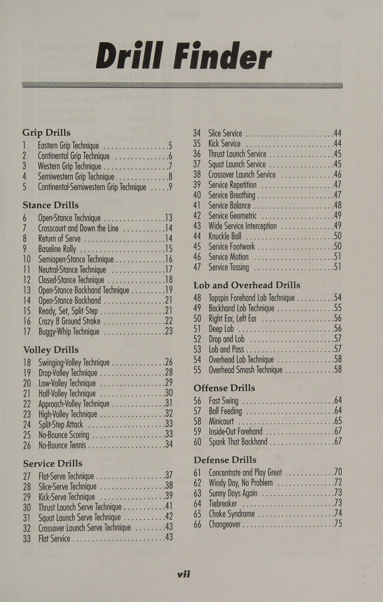
Hình 12: Bài tập thể lực và độ bền di chuyển — Chuỗi di chuyển hình sao và đổi hướng phanh hãm tốc độ cao.
Figure 12: High-Intensity Movement Endurance Drills — Star drill footwork and rapid deceleration.
Duy Trì Phong Độ & Thể Trạng Trong Suốt Mùa Giải In-Season Maintenance: Injury Prevention & Active Recovery
== chương 16= Bảo trì trong mùa giải Hầu hết các vận động viên thi đấu quần vợt đều nhận ra rằng để đạt được phong độ cao nhất trên sân, họ phải tuân theo một chương trình rèn luyện thể chất trong và ngoài sân. Những tay vợt nỗ lực cải thiện thể lực của mình thông qua tập luyện bổ sung ngoài việc đánh bóng tennis có nhiều khả năng thành công hơn trong các trận đấu kéo dài và mệt mỏi. Rèn luyện thể chất cải thiện đáng kể hiệu suất trên sân. Một vận động viên chuẩn bị thể chất cho một trận đấu cũng sẽ chuẩn bị tinh thần. Việc tập luyện bổ sung ngoài sân cho các trận đấu sắp tới giúp tay vợt tự tin rằng họ đã chuẩn bị đầy đủ và sẵn sàng thi đấu. Sự tự tin này giúp tay vợt có thể thi đấu trong suốt trận đấu mà không cần dồn ép, vội vã hay nghẹt thở khi thi đấu nảy lửa. Để giành chiến thắng một cách nhất quán, các đối thủ phải kết hợp tốc độ, sự nhanh nhẹn và sức chịu đựng vào thể chất của họ. Để cải thiện lối chơi của mình, tay vợt cần có thể trạng tim mạch tốt nhất có thể. Họ chỉ có thể làm được điều đó bằng cách thêm các hoạt động rèn luyện sức khỏe vào lịch trình luyện tập của mình. Hầu như bất kỳ hoạt động thể dục nhịp điệu nào cũng sẽ làm tăng sức bền của tim mạch, nhưng tay vợt phải điều chỉnh thời lượng, tần suất và cường độ tập luyện để tối ưu hóa thể lực cho môn quần vợt. Tay vợt quần vợt không cần phải dành hàng giờ trên máy chạy bộ hoặc trong hồ bơi để đạt đến đỉnh cao thể chất. Việc rèn luyện sức bền cho môn quần vợt đòi hỏi phải có đủ điều kiện hiếu khí để giúp tay vợt vượt qua ba hiệp; 20 đến 30 phút ba lần một tuần thường là đủ. Những tay vợt muốn giảm vài cân nên tăng cường hoạt động aerobic. Nếu không, họ sẽ phải mang theo vật nặng quanh sân. Dành thời gian trong phòng tập thể dục sẽ giúp xây dựng cơ bắp săn chắc, dẻo dai, giúp tay vợt có sức mạnh vượt qua cho đến khi kết thúc trận đấu quần vợt kéo dài ba giờ, kéo dài ba hiệp. Trương lực cơ tốt giúp bảo vệ các khớp, gân và dây chằng khỏi những cú sốc liên tục trong trận đấu. Việc truyền lực thành công từ phần dưới cơ thể lên phần trên cơ thể tạo ra phần lớn sức mạnh trong một cú đánh quần vợt. Vì các cú đánh sẽ chỉ mạnh bằng mắt xích yếu nhất trong chuỗi sức mạnh này nên tay vợt phải phát triển tất cả các nhóm cơ chính: chân, cơ bụng, lưng, ngực, vai và cánh tay.
Một chương trình điều hòa thể chất toàn diện, cụ thể sẽ cải thiện sự tự tin của tay vợt, cải thiện kỹ thuật và sức mạnh của họ, giảm số lượng và mức độ nghiêm trọng của chấn thương liên quan đến quần vợt, trì hoãn sự mệt mỏi, thúc đẩy quá trình phục hồi nhanh hơn sau khi thi đấu, giảm số giờ nghỉ ngơi sau khi tập luyện và cho phép các vận động viên phát triển tốt hơn. Các bài tập trong phần này cung cấp chương trình huấn luyện trong và ngoài sân để rèn luyện thể chất toàn diện cho tay vợt quần vợt.
184—Đẩy GHẾ SÂU Mục tiêu Mục đích của bài tập này là tăng phạm vi chuyển động của tất cả các khớp trong cơ thể. Mô tả Một chương trình giãn cơ cơ bản tốt sẽ giúp các chi và khớp hoạt động bình thường trong phạm vi chuyển động đầy đủ. Lợi ích của việc giãn cơ bao gồm giảm căng cơ và điều chỉnh sự mất cân bằng về tư thế thường phát triển trong quần vợt, khiến các khớp và cơ bị căng không đều ở hai bên đối diện của cơ thể. Thực hiện Nam và nữ thực hiện các phiên bản chống đẩy khác nhau với sự hỗ trợ của ghế sâu. Nam giới đặt chân lên chiếc ghế đặt phía sau và đặt mỗi tay lên chiếc ghế đặt bên cạnh. Họ thường xuyên chống đẩy, hạ ngực xuống sát mặt đất giữa hai ghế. Phụ nữ sử dụng phương pháp tương tự ngoại trừ việc họ giữ chân trên mặt đất thay vì sử dụng ghế đặt phía sau. Tay vợt cố gắng thực hiện ba hiệp, mỗi hiệp 12 hiệp, nghỉ 45 giây giữa các hiệp. Mẹo Tay vợt nên làm nóng cơ bắp bằng hoạt động cường độ thấp như bật nhảy hoặc chạy bộ tại chỗ. Chúng căng ra đến mức khó khăn nhưng không gây đau đớn và giữ trong 15 đến 20 giây, thở bình thường. Họ lặp lại mỗi lần kéo dài hai đến ba lần ở cả hai bên cơ thể. 185—CĂNG Bắp chân Mục tiêu Mục đích của bài tập này là kéo căng cơ bắp chân, gân Achilles và gân kheo dưới. Mô tả Cơ bắp chân là phần thịt, cơ bắp phía sau của chân nằm giữa đầu gối và mắt cá chân. Thực hiện Tay vợt đứng trước một bức tường hoặc cột với một chân ở sau chân kia hai hoặc ba feet và các ngón chân hướng về phía trước. Giữ đầu gối sau thẳng và gót chân chạm sàn, tay vợt uốn cong đầu gối trước và nghiêng người về phía trước cho đến khi cảm thấy căng. Sau 30 giây họ đổi chân và lặp lại. Tiếp theo, họ đứng thẳng, hai chân chụm vào nhau và cả hai gót chân chạm đất. Họ nghiêng người về phía trước cho đến khi cảm thấy căng cứng ở bắp chân và gân Achilles. Sau khi giữ tư thế trong 30 giây, họ thả lỏng và trở về tư thế đứng.
186—CĂNG CÂN GÂN Mục tiêu Bài tập này kéo giãn gân kheo, cơ lưng dưới và cơ bắp chân trên. Mô tả Động tác kéo giãn tập trung vào hai gân ở hõm sau đầu gối. Thực hiện Từ tư thế ngồi, tay vợt uốn cong đầu gối trái và đặt lòng bàn chân trái vào phía trong đầu gối phải. Giữ lưng và đầu gối phải càng thẳng càng tốt, họ đưa cả hai tay về phía bàn chân. Họ giữ mỗi lần kéo dài trong 30 giây, đổi chân và lặp lại. Các biến thể Đối với bài tập căng gân kheo khi đứng, tay vợt đứng ở tư thế thẳng đứng, khóa đầu gối. Họ từ từ cúi người về phía trước, di chuyển tay xuống phía sau chân về phía mắt cá chân cho đến khi cảm thấy gân kheo căng cứng. Đối với động tác căng gân kheo của vận động viên vượt rào, tay vợt ngồi trên sàn với một chân quay về phía sau và chân còn lại duỗi về phía trước (tư thế của vận động viên vượt rào cao). Họ uốn cong thân mình và hướng đầu xuống đầu gối cho đến khi cảm thấy căng cứng. Tay vợt giữ mỗi vị trí trong 30 giây rồi thả lỏng và trở về vị trí ban đầu. bale IEE a UTE Mục đích Mục đích của bài tập này là kéo căng cơ xoay vai và cơ lưng trên (xương bả vai). Mô tả Vai là bộ phận của cơ thể nằm giữa cổ và cánh tay trên hoặc chi trước. Xương bả vai là vùng lưng nằm giữa hai vai. Thực hiện Tay vợt đứng và giơ cánh tay trái ra phía trước. Họ đặt tay phải phía sau khuỷu tay trái và dùng tay phải kéo khuỷu tay ngang cơ thể. Họ để tay trái qua vai nhưng không để thân xoay. Họ giữ trong 30 giây, đổi tay và lặp lại. Mẹo Tay vợt không bao giờ được căng cơ trong bất kỳ bài tập nào đến mức khó chịu hoặc đau đớn, nếu không họ có nguy cơ bị rách cơ.
188—CĂNG CƠ BẮP STORK Mục tiêu Bài tập này giúp kéo giãn cơ tứ đầu và cơ ống chân. Mô tả Cơ tứ đầu nằm ở đùi. Thực hiện Tay vợt đứng bằng một chân và nắm lấy bàn chân hoặc mắt cá chân còn lại. Giữ lưng thẳng, họ kéo bàn chân lên phía sau mông sao cho đầu gối hướng xuống đất (không bị trẹo đầu gối). Để giữ thăng bằng, họ đưa cánh tay ra phía trước hoặc bám vào tường. Họ giữ trong 30 giây, đổi chân và lặp lại. Các biến thể Để giãn cơ tứ đầu của vận động viên vượt rào, tay vợt nằm ngửa với cả hai chân sát vào nhau. Họ nắm lấy mắt cá chân trái bằng tay trái, từ từ kéo mắt cá chân về phía thắt lưng và hạ đầu xuống sàn cho đến khi cảm thấy căng cứng ở cơ tứ đầu. Đối với động tác duỗi cơ tứ đầu nằm sấp, tay vợt nằm sấp với cả hai chân duỗi thẳng ra phía sau. Họ uốn cong đầu gối trái về phía mông, dùng tay trái nắm lấy bàn chân và kéo thẳng về phía mông. Họ giữ trong 30 giây, thư giãn và lặp lại bằng chân phải. Mẹo Tay vợt phải kiên nhẫn, làm việc trong giới hạn của mình và luôn thư giãn. Mục tiêu Động tác duỗi chân nhắm vào cơ tứ đầu; nó cũng tốt cho việc phòng ngừa và phục hồi chấn thương đầu gối. Mô tả Tay vợt duỗi chân lên trên để chống lại lực cản của trọng lượng tăng thêm, duỗi thẳng đầu gối hoàn toàn nhưng không duỗi quá mức. Họ từ từ hạ tạ xuống vị trí ban đầu. Thực hiện Khi ngồi trên máy duỗi chân, tay vợt nên điều chỉnh tựa lưng sao cho đầu gối cong ở mép ghế. Miếng đệm dưới phải ở ngay phía trên mắt cá chân. Tay vợt đặt chân ra sau tấm đệm và nâng lên cho đến khi cả hai chân gần như duỗi thẳng hoàn toàn. Họ tạm dừng, từ từ hạ chân xuống vị trí ban đầu, đổi chân và lặp lại.
190—LEG CURL Mục tiêu Động tác co chân có tác dụng lên cơ gân kheo thường bị bỏ qua, đây là cơ quan trọng để chạy nước rút, đạp lùi và ổn định khi chơi bóng thấp. ' Mô tả Tay vợt nên từ từ cong bàn chân về phía mông rồi từ từ đưa tạ về vị trí ban đầu. Đầu gối không bao giờ được duỗi quá mức khi thực hiện bài tập này. Thực hiện Tay vợt nằm úp mặt trên máy uốn cong, để miếng đệm chân chạm ngay phía trên mắt cá chân. Bắt đầu với đầu gối hơi cong, tay vợt từ từ đưa cả hai chân lên về phía mông, cố gắng đạt được góc ít nhất là 90 độ. Họ giữ tư thế này một lúc rồi từ từ hạ tạ xuống. 191—LEG PRESS Mục tiêu Bài tập luyện nhiều khớp này tác động lên mông, cơ tứ đầu, cơ đùi- tôi dây và bắp chân. Mô tả Máy ép chân rất tốt cho việc phát triển sức mạnh tổng thể của chân, giúp xây dựng sức chịu đựng cũng như khả năng dừng và xuất phát. Thi hành Tay vợt đặt mình vào tư thế trong máy ép chân với lưng phẳng dựa vào tựa lưng và hai chân đặt trên bệ rộng bằng vai. Họ uốn cong chân một góc 90 độ và từ từ đẩy bàn chân lên bục cho đến khi hai chân duỗi thẳng. Họ giữ một lúc rồi từ từ trở lại vị trí ban đầu. Để nhắm vào cơ đùi trong, ngoài và cơ mông (được sử dụng cho chuyển động sang bên, chuyển động lên và lùi, tư thế đánh bóng thấp và các cú đánh ở tư thế mở), họ đặt hai bàn chân xa nhau hơn với các ngón chân hướng ra ngoài. Mẹo Việc bắt đầu, dừng lại, nhảy, lao tới, uốn cong hoặc chạy nước rút không thể xảy ra nếu không có sức mạnh của phần thân dưới. Ngay cả để có thể thực hiện các cú đánh mặt đất cơ bản, tay vợt phải có đủ thể chất để di chuyển ra khỏi vị trí sẵn sàng.
192—HÀNG TỔNG HỢP Mục tiêu Bài tập này phát triển cơ hình thoi, cơ thang, cơ delta sau và cơ bắp tay. Mô tả Chèo thuyền là bài tập hỗ trợ tuyệt vời cho lưng và rất hữu ích trong việc ngăn ngừa chấn thương và phục hồi vòng bít xoay. Chèo thuyền cũng xây dựng sức mạnh cho cú trái tay, đặc biệt là để đánh bóng cao bằng cú đánh bằng một tay. Thực hiện Tay vợt ngồi thẳng lưng, hai chân tựa vào xà ngang, chân hơi cong. Với cách cầm trung tính (lòng bàn tay hướng vào nhau), họ kéo cánh tay về phía mình rồi từ từ duỗi thẳng cánh tay sang tư thế thẳng. Khuỷu tay phải sát với cơ thể và gần vòng eo. 193—THUỐNG BÊN Mục tiêu Bài tập này phát triển cơ lưng to và cơ bắp tay, giúp hấp thụ sốc khi chuyển động cánh tay về phía trước. Mô tả Bài tập lưng đa năng này nhắm vào cơ xô, hay cơ xô, các cơ dùng để giao bóng và đập bóng qua đầu. Thực hiện Tay vợt ngồi quay mặt về phía máy với bàn chân đặt phẳng trên sàn. Họ nắm lấy thanh với hai tay rộng bằng vai và lòng bàn tay hướng về phía họ. Họ từ từ kéo xuống ngực trên, giữ đầu và lưng thẳng và khuỷu tay sát hai bên. Việc nhả ra phải chậm để tránh máy bị căng quá mức ở vai. Cơ vòng quay có thể bị căng nếu tay cầm rộng hơn chiều rộng vai hoặc nếu bài tập được thực hiện bằng cách hạ thanh đòn sau cổ. Mẹo Tay vợt phải biết rằng cần nhiều hơn một mong muốn sát thủ để có được một quân át chủ bài hoặc một cú cú đập bóng trên cao (Overhead Smash). Phải mất nhiều giờ tập luyện và xây dựng các cơ liên quan đến việc đánh các cú giao bóng và cú đánh qua đầu. Học cách huấn luyện xô đúng cách sẽ tăng cường khả năng giao bóng và sức mạnh trên cao, đồng thời giúp tay vợt không bị chấn thương ở vai.
194— OVERHEAD PRESS Mục tiêu Bài tập này tác động lên phía trước và hai bên vai. Mô tả Đây là bài tập tăng cường sức mạnh và điều hòa thân trên nói chung. Thực hiện Tay vợt nên điều chỉnh độ cao của ghế sao cho tay cầm ngang bằng với vai. Họ ngồi vào máy và cầm tay cầm với lòng bàn tay hướng lên trên. Họ từ từ đẩy cánh tay lên hết mức nhưng không khóa chúng. Sau khi giữ từ hai đến ba giây, họ từ từ hạ tạ xuống. Biến thể Đối với động tác chống đẩy từ trên sàn, tay vợt đặt hai tay rộng bằng vai, thân người tạo thành một đường thẳng từ ngón chân đến đầu. Họ từ từ hạ người xuống cho đến khi cánh tay trên song song với mặt đất. Chúng đẩy mình lên trên cho đến khi khuỷu tay hoàn toàn thẳng và cong lưng ra ngoài giống như cách một con mèo làm. Chuyển động tròn khi kết thúc động tác chống đẩy này rất đáng kể và làm tăng công việc được thực hiện bởi các cơ giúp ổn định bả vai. 195—ẤN NGỰC Mục tiêu Bài tập này phát triển cơ ngực lớn và cơ ngực phụ, cơ răng trước, cơ tam đầu và cơ delta trước. Mô tả Động tác này chủ yếu nhắm vào cơ ngực nhưng cũng tác động lên vai trước và cơ tam đầu. Thực hiện Tay vợt ngồi với bàn chân phẳng trên sàn và hai tay rộng bằng vai trên tay cầm. Giữ lưng thẳng vào tựa lưng, họ đẩy ra khỏi ngực cho đến khi cả hai tay duỗi thẳng hoàn toàn nhưng không bị khóa. Họ giữ trong hai giây và sau đó trở lại vị trí bắt đầu. Mẹo Tay vợt nên nhớ khởi động trước khi thực hiện bất kỳ chương trình tăng cường cơ bắp hoặc sức bền cơ bắp nào. Tay vợt nên thở ra trong phần ép của bài tập và hít vào khi đưa tạ về vị trí bắt đầu hoặc nghỉ. Tay vợt nên tập thói quen thở tốt vì có thể rất dễ nín thở khi nâng tạ.
196—NÂNG DELTOID BÊN Mục tiêu Bài tập này phát triển hai bên vai được sử dụng để đánh các cú trái tay mạnh bằng một tay. Mô tả Bài tập này nhắm vào các cơ vai thường kém phát triển. Sự phát triển của các cơ này là rất quan trọng trong việc bảo vệ chóp xoay và tăng cường sức mạnh cho cú trái tay, đặc biệt là cú đánh trái tay xoáy lên bằng một tay. Thực hiện Tay vợt ngồi thẳng lưng và ưỡn ngực. Các miếng đệm con lăn nên nằm ngay phía trên khuỷu tay. Tay vợt nắm lỏng tay cầm và từ từ đẩy lên bằng khuỷu tay cho đến khi cánh tay tạo thành một góc 90 độ với cơ thể. Họ giữ một giây rồi từ từ đưa khuỷu tay sang một bên. 197—XOAY THÂN VỊ VI Mục tiêu Bài tập này tăng cường sức mạnh cho cơ xiên trong và ngoài, phần cốt lõi của cơ thể. Mô tả Bài tập tuyệt vời này phát triển sức mạnh xoay cần thiết trong các cú đánh trên mặt đất và giao bóng, đồng thời giúp bảo vệ lưng dưới khỏi các chuyển động vặn và xoay rất cần thiết trong quần vợt. Thực hiện Tay vợt cầm thanh đòn sau cổ bằng cả hai tay, giữ thẳng lưng và hông hướng về phía trước. Giữ phần còn lại của cơ thể ổn định, họ vặn từ thắt lưng, đầu tiên sang phải rồi sang trái, xa nhất có thể. Biến thể Để cải thiện sức mạnh cụ thể cần thiết cho môn quần vợt, tay vợt có thể thử vặn mình bằng bóng thuốc. Mẹo Bằng cách tăng cường sức mạnh cho cơ xiên bên trong và bên ngoài, tay vợt đang tăng cường sức mạnh cốt lõi của cơ thể. Cốt lõi là trạm truyền lực, bao gồm cơ bụng, lưng dưới và lưng trên và hai bên. Những tay vợt cố gắng tăng cường các cơ này sẽ nhận thấy sức mạnh tăng lên khi đánh bằng cách sử dụng tư thế mở trong các cú đánh trên mặt đất và các cú xoay người.
198—SPINAL TWIST Mục tiêu Bài tập này giúp kéo giãn cơ lưng dưới, mông và cơ vai trên. Mô tả Lưng dưới là vùng đốt sống gần đầu dưới nhất của cột sống. Thực hiện Từ tư thế ngồi, tay vợt uốn cong chân phải và đặt mắt cá chân phải ở bên ngoài đầu gối trái. Họ đặt cánh tay trái qua đầu gối phải và đồng thời nhìn qua vai phải, họ từ từ xoay vai và thân sang phải. Họ giữ trong 30 giây, đổi chân và lặp lại. Biến thể Đối với động tác duỗi từ đầu gối đến ngực, tay vợt nằm thẳng trên mặt đất với hai chân duỗi thẳng về phía trước. Họ đưa hai đầu gối lại gần ngực bằng cách nắm lấy hai chân dưới ngay dưới đầu gối và hướng chúng lên và áp sát vào ngực. Sau khi giữ trong 30 giây, họ thư giãn và duỗi thẳng chân. Họ thực hiện ít nhất ba hiệp giữ 30 giây. 199—CUNCHES Mục tiêu Crunch tăng cường cơ bụng để bảo vệ lưng dưới và tăng thêm sức mạnh cho mọi cú đánh. Mô tả Bài tập này giúp phát triển cơ thẳng bụng (thân cây) khỏe mạnh, là nguồn gốc của nhiều chuyển động trong quần vợt và cho phép phần thân trên luôn đồng bộ với phần thân dưới. Thực hiện Tay vợt nằm ngửa, gập đầu gối, bàn chân đặt phẳng trên sàn và đặt tay ra sau đầu. Khi họ từ từ nâng đầu và vai về phía đầu gối, họ sẽ co cơ bụng, thở ra khi nâng lên và thở ra khi hạ xuống. Đầu phải thẳng hàng với cổ và mắt phải tập trung vào trần nhà. Họ đếm trong năm giây rồi từ từ hạ người xuống sàn.
200—ĐÀO TẠO TỐC ĐỘ TỐC ĐỘ i. Mục tiêu Bài tập này cải thiện thời gian phục hồi nhịp tim và tăng ngưỡng kỵ khí. Mô tả Bằng cách kết hợp các khoảng thời gian (tăng tốc định kỳ sau đó là chu kỳ nghỉ ngơi) vào chương trình huấn luyện ngoài sân đấu, tay vợt hoàn thành được hai điều. Đầu tiên, họ cải thiện thời gian phục hồi nhịp tim để không phải thở hổn hển sau một đợt tập luyện kéo dài. Thứ hai, chúng nâng cao ngưỡng yếm khí (điểm mà cơ bắp thiếu oxy và kiệt sức) để tươi lâu hơn. Thực thi Tay vợt nên tìm một đường đua hoặc đường đi thuận lợi ngay lập tức cho quá trình luyện tập của mình. Họ chạy nước rút 60 mét 10 hoặc 12 lần và nghỉ một phút rưỡi hoặc hai phút sau mỗi lần chạy nước rút. Sau đó, họ chạy nước rút 100 mét 8 hoặc 10 lần với thời gian nghỉ là hai hoặc hai phút rưỡi sau mỗi lần chạy nước rút. Họ chạy nước rút 200 mét 10 hoặc 12 lần với thời gian nghỉ từ 6 đến 8 phút sau mỗi lần chạy nước rút. Cuối cùng, họ chạy nước rút 400 mét bốn đến sáu lần với thời gian nghỉ năm hoặc bảy phút sau mỗi lần chạy nước rút. 201—ĐÀO TẠO THỜI GIAN CƠ BẢN Mục tiêu bài tập này phát triển khả năng thực hiện các buổi tập cường độ cao với khoảng thời gian nghỉ ngơi thích hợp. Mô tả Tay vợt được đánh giá ở mức 2,5 trở lên có thể thấy mình lao vào lưới trong một phút và tập trung dọc theo đường cơ sở ở phút tiếp theo. Việc luyện tập xen kẽ của họ nên tuân theo cách tiếp cận kết hợp và kết hợp tương tự. Việc thay đổi độ dài và cường độ của mỗi chu kỳ sẽ bắt chước các hành động trên sân và thử thách cơ bắp của họ. Thực hiện ¢ Chạy nước rút trong 10 giây và đi bộ trong 5. e Chạy nước rút trong 15 giây và đi bộ trong 10. e Chạy nước rút trong 30 giây và đi bộ trong 15. ¢ Chạy nước rút trong 5 giây và đi bộ trong 5. Biến thể Tay vợt có thể tiếp tục kết hợp độ dài của các lần chạy nước rút và thời gian phục hồi, nhưng không được chạy nước rút lâu hơn 90 giây. Mẹo Để cải thiện tốc độ bùng nổ trên sân, tay vợt cũng có thể thử chạy lên cầu thang hoặc quay vòng.
202—ĐÀO TẠO CHÉO oe Mục tiêu Huấn luyện chéo bổ sung thêm sự đa dạng để giúp tay vợt luôn tươi mới và luôn phát triển thể lực. Mô tả Việc phát triển một chương trình đào tạo chéo hiệu quả cũng đơn giản như đổi máy leo cầu thang lấy máy chạy bộ hoặc tham gia lớp thể dục nhịp điệu từng bước. Tay vợt nên nhớ rằng họ cần các hoạt động liên quan đến hệ thống năng lượng và mô hình chuyển động của quần vợt. Việc lặp đi lặp lại các hoạt động tim mạch giống nhau sẽ khiến cơ thể rơi vào tình trạng khó khăn và làm giảm lợi ích, vì vậy việc kết hợp các hoạt động này là điều quan trọng (do đó có tên là “tập luyện chéo”). Thực hiện Sau đây là lịch tập luyện chéo được đề xuất: Thứ Hai, Thứ Tư, Thứ Sáu 1. Tập tạ 2. Tập luyện tim mạch trong các lớp đạp xe, trên máy trượt tuyết, huấn luyện viên hình elip hoặc máy hoặc lớp khác như vậy Thứ Ba, Thứ Năm 1. Luyện tập theo dõi bằng lịch tập luyện ngắt quãng cơ bản hoặc nhanh e Chạy nước rút trong 10 giây và đi bộ trong 5. e Chạy nước rút trong 15 giây và đi bộ trong 10. ¢ Chạy nước rút trong 30 giây và đi bộ trong 15. e Chạy nước rút trong 45 giây và đi bộ trong 20 giây. e Nhảy dây trong khoảng thời gian hai phút trong 10 hiệp. Biến thể Để cải thiện khả năng phối hợp và giữ thăng bằng, tay vợt có thể thử tập yoga, pilates hoặc đá đấm bốc. Những bộ môn này giúp kiểm soát mức độ căng thẳng, xây dựng sức mạnh toàn cơ thể, tăng khả năng giữ thăng bằng và thả lỏng cơ thể để tay vợt có thể dồn nhiều lực hơn sau mỗi cú đánh. Mẹo Tay vợt nên khởi động bằng cách chạy bộ nhẹ nhàng từ ba đến năm phút để chuẩn bị cho cơ bắp tập luyện. Tay vợt nên biết rằng quần vợt không chỉ là môn thể dục nhịp điệu; trên thực tế, nó chủ yếu là kỵ khí. Vì vậy, việc kết hợp các bài tập thể dục nhịp điệu như chạy bộ, xoay tròn và bơi lội kết hợp với các bài tập kỵ khí như luyện tập xen kẽ bao gồm các đợt chạy nước rút ngắn sẽ giúp tay vợt ở mọi cấp độ đạt được điều kiện thể chất tối ưu cần thiết để chơi quần vợt tốt.
203 — ĐÀO TẠO CHÉO BỀ MẶT Mục tiêu Chương trình đào tạo chéo này thuận lợi để chơi trên các bề mặt sân khác nhau, chẳng hạn như đất sét, cứng và cỏ. Mô tả Các vận động viên thi đấu trên nhiều bề mặt khác nhau thường thay đổi độ dài của các khoảng thời gian dựa trên loại sân mà họ đang thi đấu. Thi hành Thi đấu trên sân đất nện thường có nghĩa là thi đấu với thời gian dài hơn, vì vậy các tay vợt tập luyện để thi đấu trên mặt sân như vậy tại Giải Pháp mở rộng nên tập luyện trong khoảng thời gian dài hơn. Để tập luyện thi đấu trên sân như Wimbledon hoặc trên bất kỳ sân trong nhà nhanh nào, khoảng thời gian phải ngắn hơn. Những tay vợt hầu hết các trận đấu trên sân đất nện hoặc các bề mặt chậm khác nên tập trung vào các cuộc chạy nước rút từ 200 đến 400 mét với thời gian nghỉ từ một đến hai phút giữa các lần chạy nước rút. Đối với các trận đấu trên sân cứng và sân cỏ, họ nên kết hợp các khoảng thời gian ngắn hơn từ 50 đến 100 mét với thời gian nghỉ ngơi từ 30 đến 60 giây sau mỗi hiệp. Mẹo Khía cạnh quan trọng nhất của bất kỳ chương trình đào tạo chéo nào là sự nghỉ ngơi cho tâm trí.
hoặc Tiniceaw .. a volt = bOI woogie Regie goacueakies Ry EE ck Raw EG a aaa wae a). * Spree kéo tôi hẹn hò, lúc yếu hơn He : at oe mae a fy Sot See erg eat ter BS ae ee 8 vee © nhà thơ AR er © fae Oe Ot mgs inept far cha oil 7 7 | Setdy Sergiy & Sees co a sospit ap Hi Be Peres Sop aee Hs nit — L ; sẽ — ; _ ayy Pei cts es sine Seip aal i =i 7 hiaaches bus exer, Patios oa ay ae ~2s} Beg ao BRP tection samme ; ae | — vie) inet es ned WET “iF: pesmi Sitayee Tapert ae “
Trò chơi nhóm cạnh tranh Dạy các bài học dựa trên trò chơi và dựa trên kỹ năng là công thức độc đáo giúp quần vợt tồn tại và phát triển ngày nay. Tóm lại, dạy học dựa trên trò chơi đơn giản có nghĩa là hướng dẫn với các tình huống giống như trò chơi tiếp cận tính xác thực của cuộc thi đấu trận đấu thực tế. Tham gia vào các bài học nhóm là một cách tuyệt vời để tay vợt tìm hiểu các nguyên tắc cơ bản và thực hành những gì họ đã học đồng thời có được nhiều niềm vui. Người hướng dẫn hiểu rằng việc đưa ra những bài học hiệu quả cho một nhóm trẻ em hoặc người lớn là một thách thức thường xuyên đối với khả năng giảng dạy của họ. Khi dạy các nguyên tắc cơ bản của trò chơi, họ phải đối phó với các cá nhân ở độ tuổi, khả năng thể chất, kỹ năng học tập, nền tảng thể thao và tính cách khác nhau. Người hướng dẫn phải làm việc chăm chỉ hơn khi giảng bài theo nhóm, đặc biệt nếu mục đích của họ là dành sự quan tâm trọn vẹn cho từng học sinh. Họ phải giữ cho bóng đến với tay vợt, giữ cho họ di chuyển để không bị nhàm chán và giữ cho các bài học trở nên thú vị, mang tính giáo dục và thú vị đồng thời đưa ra nhiều lời động viên và lời khuyên. Câu trả lời là sự cân bằng. Sự cân bằng giữa hai phong cách giảng dạy khi dạy bài học nhóm cho trẻ em hoặc người lớn là điều cần thiết để khiến học sinh luôn muốn vui chơi và học tập. Người hướng dẫn nên nhớ rằng quần vợt trước hết là một trò chơi và phải vui vẻ, nhưng việc mang lại nhiều cơ hội học tập phải là một phần
của phương trình. Là một người hướng dẫn, tôi đã trải qua rất nhiều thử thách trong việc giảng dạy trong suốt những năm làm nghề của mình. Hai kinh nghiệm đã giúp tôi vượt qua thời kỳ giảng dạy khó khăn. Đầu tiên là nếm thử nước ngọt của quả dứa mới cắt lát khi đang tắm nắng ở Ocho Rios, Jamaica. Thứ hai là chứng kiến những học sinh mà tôi đã từng làm việc, cùng khóc và cười quay trở lại sau khi tốt nghiệp trường ngữ pháp, trung học hoặc đại học để nói cho tôi biết họ nhớ tôi đến nhường nào và họ yêu thích lớp học của tôi đến nhường nào. Tôi vẫn không thể tìm ra cái nào ngọt ngào hơn. Phần này của Sách luyện tập quần vợt đi sâu vào các trò chơi dành cho trẻ em và người lớn nhằm củng cố các bài tập mà tay vợt đã thực hiện ở các phần khác. Cho dù tay vợt thích thưởng thức các trận đấu quần vợt trong một lớp học có tổ chức hay với một nhóm tay vợt tập luyện trên bảng rổ, họ sẽ tìm ra nhiều cách thú vị để giữ cho trận đấu của mình luôn hấp dẫn.
Trò Chơi Huấn Luyện Nhóm Đông Học Viên Hiệu Quả Cao Teaching Group Games: High-Volume Multi-Player Drilling
chương 17 === Dạy trò chơi nhóm Hầu hết mọi người học quần vợt thông qua các bài học nhóm hoặc nhiều tay vợt. Một bài học nhóm được tổ chức tốt sẽ giúp tất cả tay vợt bận rộn, học tập và có nhiều niềm vui. Trẻ em từ 4 đến 11 tuổi học các nguyên tắc cơ bản khi chơi quần vợt thông qua các chiến thuật dựa trên trò chơi nhằm củng cố các kỹ thuật quần vợt như vuốt mặt đất, di chuyển đến bóng, đánh bóng, ghi điểm và phát triển cách tiếp cận thi đấu trưởng thành. Thông qua chiến thuật dựa trên trò chơi, người lớn và trẻ em từ 12 tuổi trở lên không chỉ phát triển các nguyên tắc cơ bản của trò chơi mà còn phát triển sự trưởng thành về thể chất và tinh thần cần có của vận động viên. Một công thức độc đáo để dạy các bài học nhóm cho học sinh từ 12 đến 17 tuổi và người lớn ở mọi cấp độ được gọi là năm nghịch lý của việc dạy quần vợt nhóm. Đầu tiên là xây dựng lòng tự trọng so với tư duy phản biện. Bằng cách xây dựng lòng tự trọng của học sinh, người hướng dẫn sẽ thu hút họ quay trở lại để học thêm. Thứ hai là tạo ra một môi trường vui vẻ hơn là một môi trường học tập. Mặc dù việc tập luyện là cần thiết để phát triển các vận động viên quần vợt ở mọi lứa tuổi hoặc trình độ, nhưng với trẻ em, điều đó có thể là một thách thức, ít nhất là đối với cả người hướng dẫn và các tay vợt trẻ. Trẻ em không thể hiểu và chúng cũng không muốn nghe những lời nói vớ vẩn về kỹ thuật. Họ chỉ muốn đánh bóng, chạy theo bóng, ném bóng và đá bóng. Biện pháp khắc phục là dạy học bằng phương pháp chơi trò chơi. Phương pháp này tiếp thêm năng lượng và trí tưởng tượng thăng hoa cho những tay vợt trẻ đầy nhiệt huyết. Sự cân bằng giữa hai phong cách giảng dạy là điều cần thiết. Thứ ba là dạy các bài học dựa trên trò chơi và dựa trên kỹ năng. Môi trường thi đấu thực tế trong quá trình luyện tập dành cho tay vợt trẻ và người lớn sẽ tự động cải thiện hiệu suất trận đấu thực sự của họ. Thứ tư là phong cách khám phá có hướng dẫn so với phong cách ra lệnh, và thứ năm là cách giảng dạy của học sinh và khả năng ghi nhớ cao so với hướng dẫn và ghi nhớ bằng lời nói. Giảng viên kết hợp cả năm phong cách giảng dạy vào phương pháp giảng dạy của mình sẽ tạo ra môi trường học tập tốt nhất cho học viên. Được chuyển thể, với sự cho phép của J. Dinoffer, 2002, “Năm nghịch lý của việc dạy quần vợt nhóm cho trẻ em,” Tạp chí ADDvantage © USPTA trang 12-14.
Với sự hỗ trợ của các trò chơi giải trí và thú vị liên quan đến quần vợt được thu thập trong chương này, phụ huynh và người hướng dẫn chuyên nghiệp có thể giới thiệu một cách dạy quần vợt mới và thú vị cho trẻ em, thiếu niên và người lớn. Tóm lại, trò chơi được sử dụng chủ yếu để dạy cho những tay vợt đang phát triển một cách thú vị cách trở nên trưởng thành về thể chất và tinh thần như những tay chơi quần vợt có kỹ năng thi đấu. Còn cách nào tốt hơn để giáo dục trí óc, cơ thể và tinh thần hơn là thông qua niềm vui và trò chơi? Học viên sẽ không bao giờ quên người hướng dẫn hoặc những gì họ đã học được cũng như niềm vui mà họ có được khi học. Các trang tiếp theo chứa rất nhiều hoạt động, trò chơi và mẹo hướng dẫn để giữ cho tất cả tay vợt, trẻ hoặc lớn tuổi, quan tâm, hào hứng và nhiệt tình, đồng thời giữ cho kế hoạch bài học và trí tưởng tượng của người hướng dẫn luôn mới mẻ.
Mục tiêu Trò chơi này tạo ra một cách thú vị và hấp dẫn cho trẻ nhỏ để dọn bóng khỏi sân. Mô tả Việc dọn bóng khỏi sân và trả lại xe đẩy không bao giờ là điểm nổi bật trong bài học quần vợt của học sinh. Nếu nhiệm vụ nhàm chán này có thể được biến thành một trò chơi mang tính thử thách và mang tính giải trí thì học sinh sẽ thấy thú vị và sẽ yêu cầu thực hiện. Người hướng dẫn thực hiện yêu cầu tay vợt xây lâu đài, teepee hoặc kim tự tháp khi họ xếp các quả bóng lên trên vợt của mình. Hoặc họ có thể yêu cầu tay vợt làm một chiếc bánh pizza bằng những quả bóng. Trước khi học sinh cho bánh pizza vào lò nướng (xe bóng), các em sẽ nói cho người hướng dẫn biết đó là loại bánh pizza gì. Mẹo Người hướng dẫn phải luôn thưởng cho việc nhặt bóng. Ví dụ, học sinh nhặt được nhiều bóng nhất sẽ được chọn trò chơi sẽ chơi. 205—TRÒ CHƠI TÔI VÀ BÓNG CỦA TÔI Mục tiêu Trò chơi này phát triển sự phối hợp tay-mắt, động tác chân và khả năng làm theo hướng dẫn. Mô tả Trò chơi này giúp tay vợt trẻ sử dụng trí tưởng tượng của mình và chọn kiểu đánh mà mình muốn đánh. Nó cũng khiến các học sinh khác tham gia trong khi một học sinh đánh. Thi hành Để đảm bảo an toàn, học sinh phải xếp thành hàng một, không quá gần nhau. Các đốm nhiều (thảm trải sàn màu phẳng) có thể chỉ định nơi học sinh sẽ đứng để họ không cầm vợt va vào nhau. Học sinh đầu tiên trong hàng thực hiện một loạt cú đánh - thuận tay, trái tay, vô lê, v.v. - và những học sinh khác sẽ giả vờ là cái bóng của anh ta hoặc cô ta. Học sinh bắt chước mọi chuyển động, tức là các động tác và động tác chân.
206—Rất tiếc! | QUÊN TRÒ CHƠI VỢI CỦA TÔI Mục tiêu Trò chơi này phát triển khả năng phối hợp tay-mắt, theo dõi bóng, cảm nhận bóng và khả năng vận động thô. Mô tả Trước khi những tay vợt trẻ hoặc thậm chí những người mới bắt đầu có thể thành thạo cách đánh một quả bóng tennis nhỏ, người hướng dẫn nên giúp họ làm quen với cảm giác và sự khéo léo khi bắt và ném bóng. Thi hành Học sinh được bố trí cách lưới tennis ba feet. Người hướng dẫn đứng qua lưới đối diện với học sinh và ném bóng cho các em. Học sinh phải bắt bóng trong lần nảy đầu tiên và sau đó ném bóng trở lại lưới cho người hướng dẫn hoặc vào xô. Người hướng dẫn có thể thay đổi độ khó của các lần tung. Mẹo Người hướng dẫn nên thiết lập hệ thống khen thưởng trong ngày đầu tiên học để khuyến khích tay vợt trẻ làm theo chỉ dẫn, tập trung và nỗ lực hết mình khi tham gia. echt eed cid alcatel el Mục tiêu Trò chơi này phát triển sự phối hợp tay-mắt, sự khéo léo, kỹ năng vận động thô và sự nhanh nhẹn trong thể thao. Mô tả Trò chơi này giúp tay vợt học cách hướng quả bóng tennis đến các mục tiêu cụ thể. Thực hiện Người hướng dẫn nên định vị các đấu thủ băng qua vạch giao bóng, đứng cạnh nhau. Nón, xô hoặc vợt tennis đứng hướng xuống phải được đặt ở phía đối diện của lưới tennis. Tay vợt thích ném hoặc đánh bóng vào mục tiêu. Khi tay vợt bắn trúng mục tiêu, người đó sẽ nhận được phần thưởng. Tay vợt đầu tiên đạt được mục tiêu sẽ được chọn trò chơi tiếp theo trong ngày. Cách tiếp cận này tiết kiệm thời gian lấy bóng! Mẹo Trò chơi nhỏ này là một cách tuyệt vời để dạy các tay vợt trẻ cách ghi điểm trong môn quần vợt. Đối với mỗi lần bắn trúng mục tiêu, tay vợt đó phải hét lên một điểm, chẳng hạn như “Mười lăm!” hoặc "Ba mươi!" cho đến khi bắn trúng bốn mục tiêu. Sau đó tay vợt sẽ hét lên “Trò chơi!” Sáu ván thắng set, 12 ván thắng cả trận.
208—Trò chơi cú bắt lưới (Volley) POP-UP =~ Mục tiêu Trò chơi này phát triển sự tự tin trên lưới, phối hợp tay-mắt, phản ứng nhanh với bóng và kỹ năng theo dõi bóng. Mô tả Sự thay đổi thú vị về cú bắt lưới (Volley) này giúp các tay vợt trẻ phát triển cảm giác háo hức về cú bắt lưới (Volley). Nó khiến họ thực sự thèm muốn “bop” hoặc chặn bóng. Việc tạo môi trường vui vẻ để chơi cú bắt lưới (Volley) cũng giúp các tay vợt trẻ không né tránh lưới. Thực hiện Tay vợt vào các vị trí theo chiều dọc cách lưới khoảng 3 feet. Tay vợt nên ở tư thế ngồi xổm với vợt trên tay và hướng lên ở tư thế chuyền bóng. Người hướng dẫn đứng ở phía bên kia lưới và tung từng quả bóng cho các tay vợt. Theo gợi ý của người hướng dẫn, các tay vợt bật lên, đánh một cú vô lê, rồi lại ngồi xổm như quả bóng trong hộp. Nếu tay vợt thực hiện cú vô lê, người đó sẽ đứng dậy và thực hiện cú vô lê tiếp theo. Nếu tay vợt thực hiện cú vô lê này, anh ta hoặc cô ta có thể cố gắng đánh một cú từ trên cao. Nếu tay vợt bỏ lỡ bất kỳ cú đánh nào, họ sẽ bắt đầu lại từ tư thế ngồi xổm. Tất cả những tay vợt thực hiện thành công cả ba cú đánh qua lưới sẽ giành chiến thắng. Biến thể Người hướng dẫn có thể biến trò chơi này thành trò chơi cú bắt lưới (Volley) trong truyện bằng cách gán tên nhân vật cho mỗi học sinh. Khi nghe thấy nhân vật của mình được nhắc đến trong câu chuyện, cậu học sinh đó bật dậy và tung cú vô lê. Ví dụ: con ếch (tay vợt có nhân vật ếch bật lên để đánh một cú vô lê) gọi điện thoại cho rùa (rùa bật lên để đánh một cú vô lê) và hỏi xem rùa có muốn đến và chia sẻ một ít bánh pizza với thỏ không (thỏ bật lên để đánh một cú vô lê), v.v. Việc để trẻ chọn nhân vật sẽ khiến chúng hứng thú và có thể tạo ra một mạch truyện thú vị. Trong vài lần đầu tiên bạn thử bài tập này, bạn có thể muốn thực hiện một vài hiệp để không bị tạm dừng giữa trò chơi trong khi cố gắng nghĩ xem nên nói gì tiếp theo. Mẹo Nếu một quả bóng tennis đang tới đã từng đập vào mặt, cổ hoặc thậm chí sau đầu bạn khi bạn đang cố gắng thực hiện cú vô lê, thì bạn sẽ nhận ra điều đó có thể đáng sợ đến mức nào. Nhân những cảm giác đó lên gấp mười, bạn sẽ hiểu tại sao trẻ em và một số người lớn không muốn nhảy vào chảo rán. Đừng vội ép trẻ em hoặc người lớn nhút nhát thực hiện cú vô lê; hãy để họ thể hiện cho bạn thấy sự sẵn lòng, hào hứng và háo hức “bật” quả bóng.
209—TRÒ CHƠI TENNIS TIGER WOODS _ oS Mục tiêu Trò chơi này phát triển khả năng kiểm soát vợt và bóng. Mô tả Tay vợt sử dụng một số kỹ thuật chơi gôn để nhắm bóng vào lưới như thể họ đang đánh bóng. Họ tiếp tục nó bằng cách thực hiện một cú giao bóng hướng tới mục tiêu. Trò chơi này giúp giảm áp lực khi học cách giao bóng qua lưới, một nhiệm vụ khó khăn đối với những tay vợt chỉ cao 3 feet. Thực hiện Tay vợt tạo thành hai đường phía sau đường cơ sở hoặc đường giao bóng, tùy thuộc vào khả năng. Mục tiêu và chồng bóng trên vợt được đặt trước mặt mỗi đội. Hai tay vợt đầu tiên chạy về phía trước và đặt một quả bóng lên trên một hình nón đã cắt bỏ phần trên. Tay vợt đánh bóng bằng vợt bằng cú đánh gôn (thuận tay) vào lưới. Họ lấy bóng và giao bóng về phía mục tiêu ở phía bên kia lưới. Tay vợt chạy về đội của mình và gắn thẻ tay vợt tiếp theo. Đội nào ném trúng mục tiêu hoặc đánh hết bóng qua lưới trước sẽ thắng. Biến thể Tay vợt có thể sử dụng tay trái hoặc tay không thuận. 210—TRÒ CHƠI TENNIS CHO TOTS Mục tiêu Trò chơi này phát triển khả năng phối hợp tay-mắt, khả năng giữ thăng bằng và cảm giác bóng. Mô tả Khi tung liên quan đến việc tung lên, tốt nhất nên kết hợp từ ngữ với hành động. Bài tập này có thể liên quan đến việc phát âm ba từ (quăng, nảy và bắt). Dạy trẻ giữ thăng bằng quả bóng trên vợt đòi hỏi sự phối hợp và giữ thăng bằng của cơ thể, đồng thời những thăng trầm là điều tuyệt vời để phát triển khả năng phối hợp tay và mắt. Động tác nâng bao gồm việc dùng vợt đánh bóng lên không trung. Cú hạ gục liên quan đến những cú nảy và đánh ra khỏi sân liên tiếp. Cú đánh tự thả yêu cầu quả bóng được thả đủ gần cơ thể để đánh sau một lần nảy. Thực hiện Tay vợt chiếm các vị trí trên đường biên ngang bằng vợt và bóng. Theo hiệu lệnh của người hướng dẫn, mỗi tay vợt đặt một quả bóng lên dây vợt và cố gắng giữ bóng trong 10 đến 15 giây mà không làm rơi. Tiếp theo, tay vợt cố gắng đánh càng nhiều điểm càng tốt trong 15 hoặc 20 giây mà không để bóng rơi. Tiếp theo, tay vợt cố gắng tung ra nhiều cú hạ gục nhất có thể trong 15 hoặc 20 giây mà không mất quyền kiểm soát bóng. Cuối cùng, tay vợt thử kết hợp những thăng trầm. Biến thể Tay vợt có thể đi bộ, chạy, nhảy, nhảy hoặc quay vòng trong trò chơi.
211—trò chơi quần vợt vịt, vịt, ngỗng Mục tiêu Trò chơi này phát triển động tác bằng chân, phản ứng nhanh với bóng, tốc độ, sự nhanh nhẹn trong thể thao và kiểm soát bóng. Mô tả Trò chơi này thực sự khiến tay vợt tập trung vào việc giữ bóng trong cuộc. Nếu một đấu thủ ném trượt một cú sút vào lưới hoặc đánh nó ra ngoài sân, thì người đó phải dựa vào tốc độ và sự nhanh nhẹn để vượt qua những tay vợt khác đang cố gắng đánh ba quả bóng liên tiếp qua và trong trận đấu trước khi tay vợt quay trở lại sân nhà. Tất cả tay vợt phải tập trung. Thực thi Tay vợt tự định vị mình trong một hàng đơn phía sau đường cơ sở hoặc đường giao bóng. Người hướng dẫn đưa bóng cho tay vợt đầu tiên trong hàng, yêu cầu tay vợt đánh thuận tay hoặc trái tay. Nếu một đấu thủ đánh bóng qua lưới và đang trong cuộc, người hướng dẫn sẽ nói: “Vịt” và đấu thủ đó chạy về cuối vạch và được coi là an toàn. Nếu tay vợt bắn trượt, người hướng dẫn sẽ hét lên, "Goose!" và đấu thủ phải chạy hết vòng qua các điểm đánh dấu ở phía đối diện của sân và quay về cuối vạch trước khi học sinh đứng xếp hàng đánh hai cú liên tiếp qua lưới và trong cuộc. Nếu con ngỗng quay về nhà kịp thời thì nó sẽ không nhận được trứng ngỗng. Nhưng con ngỗng nào không về kịp sẽ nhận được một quả trứng ngỗng. Chơi một số phút hoặc số hiệp nhất định hoặc cho đến khi tay vợt bắt đầu mất tập trung. Tay vợt có ít trứng ngỗng nhất khi kết thúc trò chơi sẽ thắng. Tuy nhiên, hãy cố gắng không tập trung vào việc ghi bàn. Khuyến khích tay vợt cố gắng hết sức mỗi khi đến lượt của mình, bất kể số lượng trứng ngỗng mà họ có thể có. Các biến thể Tay vợt có thể sử dụng các cú đánh trên mặt đất, cú vô lê và cú đánh trên đầu. Luật chơi cũng có thể được điều chỉnh một chút. Ví dụ: xếp các học sinh nối tiếp nhau phía sau tâm (T) của đường giao bóng hoặc đường cơ sở. Người hướng dẫn bắt đầu bằng cách đưa một quả bóng cho tay vợt đầu tiên trong hàng. Nếu đấu thủ thực hiện cú sút qua lưới và rơi xuống sân, đấu thủ đó được an toàn và có thể đi đến cuối vạch. Nếu tay vợt bắn trượt sau hai lần thử, người hướng dẫn sẽ hét lên “Goose!” Đấu thủ cầm vợt trong tay phải nhảy từ phía sân của mình, vòng qua các điểm đánh dấu ở phía đối diện của sân và quay trở lại cuối vạch ở phía lưới ban đầu của mình trước khi mỗi học sinh đứng xếp hàng đánh ba quả bóng liên tiếp qua lưới. Nếu người chạy (ngỗng) quay về trước khi mỗi học sinh hoàn thành nhiệm vụ này thì con ngỗng sẽ không nhận được trứng ngỗng. Nếu không, tay vợt sẽ nhận được một quả trứng ngỗng.
_212—TRÒ CHƠI TENNIS HOÀN TOÀN TUYỆT VỜI Mục tiêu Bài tập này phát triển động tác chân, phản ứng nhanh với bóng, phản xạ nhanh, hành động né tránh để di chuyển khỏi bóng, tốc độ, sự nhanh nhẹn và chuyển hướng nhanh. Mô tả Trò chơi này giới thiệu kỹ năng cần thiết để giữ bóng trên sân. Tay vợt học cách di chuyển, đánh và hướng bóng đến các khu vực khác nhau của sân. Thi hành Tay vợt xếp thành hai đội đứng trước một bức tường với vợt trên tay. Mỗi đội có một quả bóng. Theo gợi ý, tay vợt đầu tiên trong mỗi hàng thả sẽ đánh bóng vào tường. Tay vợt tiếp theo trong hàng tiến về phía trước và đánh bóng, v.v. cho đến khi có người đánh trượt. Vòng quay diễn ra liên tục. Các đội biến thể có thể cố gắng thực hiện càng nhiều cú đánh càng tốt trong một khoảng thời gian, chỉ sử dụng tay hoặc chân hoặc sử dụng cú vô lê hoặc cú đánh đầu. 213—VÒNG TRÒ CHƠI THẾ GIỚI TENNIS Mục tiêu Trò chơi này dạy tay vợt cách quan sát bóng, cách định vị trên sân, cách che sân và cách hệ thống tính điểm quần vợt hoạt động. Mô tả Trò chơi này khuyến khích tay vợt giữ bóng trong cuộc, hướng bóng đến những khu vực có thể khiến đội đối phương bỏ lỡ và làm việc cùng nhau như một đội. Thực hiện Người hướng dẫn thành lập hai đội và xếp các tay vợt đứng sau vạch giao bóng đối mặt với nhau. Họ chỉ sử dụng khu vực sân giao bóng. Các tay vợt đánh bóng qua lưới sang phần sân giao bóng đối diện và đi về cuối vạch. Tay vợt tiếp theo tiến về phía trước để đánh trả theo chuỗi đánh liên tục. Các đội ghi điểm khi đối phương không trả lại được bóng. Đội đầu tiên đạt được 10 chiến thắng. Biến thể Tay vợt cố gắng thực hiện 26 cú đánh liên tiếp (A đến Z). Dùng phấn, người hướng dẫn đánh dấu các chữ cái từ A đến Z quanh sân, tiến triển từ dễ đến khó. Tay vợt ở phía sau trung tâm đường cơ sở (T). Tay vợt bắt đầu từ chữ A và tiến tới chữ cái tiếp theo bằng cách sử dụng các nét được chỉ định. Tay vợt trượt sẽ ở lại chữ cái đó cho đến khi họ thực hiện cú đánh. Tay vợt đầu tiên đến Z sẽ thắng.
214—Trò chơi biểu tình trong ngõ hẻm Mục tiêu Trò chơi này thúc đẩy khả năng kiểm soát bóng, bước chân khỏe và vị trí sút. Mô tả Tay vợt bị giới hạn đánh bóng qua lại trong sân đánh đôi. Họ phải tìm cách điều động đôi chân, cú đánh và cơ thể của mình để giữ bóng trong cuộc. Thi hành Hai tay vợt vào vị trí đối diện nhau tại một trong các con hẻm đôi. Họ sử dụng đường dịch vụ làm đường ranh giới. Tay vợt cố gắng tập hợp qua lại chỉ bằng cách sử dụng con hẻm đôi. Tay vợt nên cố gắng giữ 5 quả bóng trong cuộc. Sau khi hoàn thành việc đó, họ cố gắng giữ từ 10 đến 15 quả bóng trong cuộc. Sau khi tay vợt thành thạo điều đó, họ sẽ chơi một trận quần vợt tính điểm đều đặn bên trong con hẻm. Khi tay vợt cảm thấy thoải mái với phương pháp đó, họ có thể chơi cả trận. Các biến thể Tay vợt có thể đánh thuận tay sang thuận tay, đánh trái tay sang trái tay hoặc các cú đánh luân phiên. Họ chơi một trò chơi, một hiệp đấu hoặc một trận đấu. 215—Trò chơi đầu gối lập dị Mục tiêu Trò chơi này thúc đẩy tốc độ của chân và mang lại sự vui vẻ. Mô tả Trò chơi này giúp tay vợt học cách giao bóng một cách kỳ quặc. Bằng cách đặt bóng giữa hai đầu gối, tay vợt sẽ không thể tập trung quá nhiều vào khía cạnh kỹ thuật của cú giao bóng. Tay vợt thực hiện xếp hàng dọc theo đường cơ sở với 10 quả bóng bên cạnh mỗi người. Theo gợi ý, mỗi tay vợt nhặt một quả bóng và đặt nó vào giữa hai đầu gối. Một cây vợt nằm trên đường giao bóng trước mặt mỗi tay vợt. Theo tín hiệu, tay vợt chạy đua đến vợt, nhặt một chiếc, lấy bóng ra từ giữa hai đầu gối và cố gắng giao bóng qua lưới. Nếu giao bóng qua, họ chạy trở lại đường cuối sân, nhặt một quả bóng khác, đặt vào giữa hai đầu gối, v.v. cho đến khi giao hết bóng qua lưới. Tay vợt đầu tiên giao tất cả bóng qua lưới và ngồi ở vạch cuối sân sẽ thắng. Các biến thể Tay vợt có thể đặt bóng dưới cằm đối với cằm lập dị, dưới cánh tay đối với nách lập dị hoặc giữa hai bàn chân đối với bàn chân lập dị.
216—TRÒ CHƠI TENNIS TORNADO Mục tiêu Trò chơi này cải thiện sự phối hợp tay-mắt, sự cân bằng, động tác bằng chân, sự nhanh nhẹn và tốc độ. Mô tả Việc tạo ra một trò chơi dựa trên những cú vô lê và đánh từ trên cao buộc các tay vợt trẻ phải theo dõi quả bóng đến một cách tự tin hơn. Các tay vợt trẻ thường ngại thực hiện cú vô lê hoặc đánh đầu. Họ cảm thấy như thể họ đang ở quá gần quả bóng và có thể bị nó đánh trúng. Khi các tay vợt trẻ chỉ nghĩ đến việc chơi để đánh bại đối phương, nỗi sợ hãi về lưới của họ dường như tan biến. Thực hiện Người hướng dẫn chia các tay vợt thành hai đội và đặt họ ở phía sau đường biên đối diện với lưới. Người hướng dẫn ở phía đối diện của lưới với một rổ bóng. Hai tay vợt đầu tiên chạy nhanh lên lưới, xoay vòng một lần, tách bước, đánh cú vô lê thuận tay, xoay vòng theo hướng ngược lại, đánh cú vô lê trái tay, quay lại theo hướng ngược lại và đánh một cú trên đầu. Nếu một tay vợt có thể hoàn thành toàn bộ chuỗi cơn lốc xoáy mà không bỏ lỡ, người đó sẽ chạy trở lại đường cơ sở và gắn thẻ tay vợt tiếp theo trong hàng. Đội chiến thắng là đội đầu tiên có tất cả các thành viên hoàn thành trình tự. 217—TRÒ CHƠI TRÒ CHƠI TRÒ CHƠI CAO NHẤT Mục tiêu Trò chơi này phát triển khả năng phối hợp tay-mắt, tốc độ và sự khéo léo. Mô tả Tay vợt học cách sử dụng bước đi nhanh cần thiết để chơi quần vợt. Trò chơi này còn đề cao tinh thần đồng đội và tinh thần đồng đội. Tay vợt thực hiện thành hai đội ở vị trí phía sau đường cuối sân. Mỗi đội cố gắng xây dựng tòa nhà chọc trời cao nhất bằng cách sử dụng vợt và bóng giữa các vợt. Các đội bắt đầu với ba cây vợt có bóng ở giữa các vợt. Nắm chặt tòa nhà chọc trời, họ lao lên lưới và quay trở lại. Nếu không làm rơi quả bóng nào, họ sẽ thêm một quả bóng và vợt khác, lao vào lưới và quay trở lại, cứ như vậy cho đến khi một đội mất kiểm soát và đánh rơi mọi thứ. Các biến thể Tay vợt tạo thành hai đội và đứng ở vị trí phía sau đường cuối sân, đối mặt với lưới. Hai tay vợt đầu tiên trong hàng đặt một quả bóng vào giữa vợt của họ, chạy về phía trước và lật bóng qua lưới. Cặp tiếp theo có thể đi khi cả hai lần chạm tiếp sức đều được thực hiện. Đội đầu tiên hoàn thành tất cả các vòng và giành được ghế ở vạch cuối sân sẽ thắng.
218—Trò chơi phá băng Mục tiêu Trò chơi này phát triển kỹ năng theo dõi và phối hợp tay-mắt. Mô tả Trò chơi giúp tay vợt phát triển khả năng cảm nhận bóng và sân tốt đồng thời phát triển mối quan hệ thân thiện với những tay vợt quần vợt khác. Thi hành án Tay vợt nằm rải rác ngẫu nhiên xung quanh sân nhưng ở cùng một phía. Người hướng dẫn bắt đầu bằng cách tung quả bóng đầu tiên vào quả bóng và đồng thời nói tên của mình. Tay vợt bắt được sẽ ném nó và nói tên của mình, v.v. Tay vợt phải nhớ quả bóng được ném cho ai mỗi lần, thực hiện theo trình tự tương tự và nói tên người đó. Người hướng dẫn bắt đầu quả bóng thứ hai và quả bóng thứ ba. Nhóm xem mình có thể gửi bao nhiêu quả bóng cùng một lúc mà không mắc lỗi. 219—Trò chơi SCOOP VÀ SCOOT Mục tiêu Trò chơi này phát triển khả năng kiểm soát vợt và bóng. Mô tả Trò chơi này dạy cho tay vợt trẻ cách thực hiện các cú sút. Thực hiện Tay vợt tạo thành hai đội và đứng ở vạch cuối sân đối diện với lưới. Một người đuổi bắt của mỗi đội ở phía đối diện của lưới. Mỗi đội có một đống bóng và một vợt trên lưới. Tay vợt đầu tiên chạy đến những quả bóng, nhặt một quả bóng lên và đánh nhẹ vào người đuổi bắt, người có một cái xô hoặc ống tennis. Người đuổi bắt lấy quả bóng và bỏ nó vào xô. Người đuổi bắt đặt xô xuống và chạy về vạch cuối cùng với những tay vợt khác, tay vợt tiếp theo đi tiếp. Tay vợt đánh bóng cho người đuổi bóng sẽ đặt vợt lại cạnh đống bóng, chạy sang phía bên kia lưới và trở thành người đuổi bóng mới. Đội đầu tiên có tất cả bóng trong xô và ngồi ở vạch cuối sân sẽ thắng. Các biến thể Tay vợt có thể sử dụng thuận tay, trái tay hoặc giao bóng. Mẹo Người hướng dẫn nên để ý những va chạm với những tay vợt háo hức. Các điểm đánh dấu để chỉ điểm bắt đầu và kết thúc phải giữ chúng an toàn.
sac — sy 220—RACKET RELAY Mục tiêu Trò chơi này phát triển động tác bằng chân, tốc độ, sự nhanh nhẹn và khả năng điều hòa. Mô tả Tay vợt chạy đua với nhau để hoàn thành nhiệm vụ quần vợt một cách giải trí. Việc bắt các tay vợt trẻ luyện tập điều hòa có thể là một thử thách, nhưng khi người hướng dẫn thêm phần thưởng (kẹo!), họ sẽ thích thú. Thi hành Tay vợt xếp hàng theo đội hình tiếp sức bên ngoài đường biên đơn hoặc đôi đối diện với đường biên đối diện. Vợt của mỗi đội được đặt dọc theo đường giao bóng trung tâm từ lưới đến đường cuối sân hoặc từ đường cuối sân đến đường cuối sân. Theo gợi ý, tay vợt đầu tiên của mỗi đội chạy về phía trước, nhặt một cây vợt, chạy vòng quanh một hình nón ở đường biên đối diện, quay trở lại và đặt vợt trở lại đường giao bóng ở giữa. Tay vợt chạy đua trở lại đội và gắn thẻ tay vợt tiếp theo, người này sẽ lặp lại hành động tiếp sức. Đội chiến thắng là đội đầu tiên hoàn thành phần chạy tiếp sức và ngồi sau đường biên. Biến thể Tay vợt đầu tiên đưa vợt trở lại cho tay vợt tiếp theo trong hàng, người này đặt vợt trở lại vạch giao bóng trong khi quay trở lại từ đường biên bên kia, giữ vợt ở đầu cuối. Mỗi tay vợt mang theo cùng một cây vợt. Tay vợt bước sang một bên hoặc chạy lùi. 221—Trò chơi khoai tây nóng Mục tiêu Trò chơi này phát triển khả năng kiểm soát vợt và bóng tốt, phối hợp tay-mắt và sự nhanh nhẹn trong thể thao. Mô tả Tay vợt được bố trí thành một vòng tròn để có thể chuyền bóng từ vợt này sang vợt khác. Sự sắp xếp cho phép tay vợt kết nối với nhau và làm quen với nhau một cách thú vị. Thực hiện Các đấu thủ cầm vợt được bố trí xung quanh sân thành một vòng tròn lớn, quay mặt vào nhau. Họ bắt đầu tung củ khoai tây nóng (quả bóng) xung quanh vòng tròn từ tay vợt này sang tay vợt khác mà không để khoai tây nóng rơi xuống. Tay vợt nào để khoai tây nóng rơi ra sẽ bị loại. Họ chơi cho đến khi còn lại hai tay vợt. Sau đó mọi thứ thực sự nóng lên. Khoai tây nóng, khoai tây nóng, bạn ra ngoài rồi! Biến thể Bóng có thể nảy trên mặt đất hoặc xung quanh vòng tròn theo bất kỳ thứ tự nào. Tay vợt có thể đối mặt thay vì trong.
Mục tiêu Trò chơi này khuyến khích khả năng kiểm soát bóng và vợt tốt. Tay vợt học các kiểu đánh quần vợt, cách cầm vợt và chuyển động quần vợt khác nhau. Mô tả Trò chơi giải trí này mô phỏng trò chơi nổi tiếng của Simon Says. Học sinh được yêu cầu thực hiện một nhiệm vụ quần vợt cụ thể, giúp họ xác định từng kỹ thuật và ghi nhớ nó. Thi hành án Tay vợt đứng xung quanh sân, mỗi người cầm vợt và bóng. Theo tín hiệu “Munchkin sez”, mỗi tay vợt thực hiện một nhiệm vụ quần vợt cụ thể. Tay vợt phải giữ vị trí đó cho đến khi Munchkin nhận được lệnh tiếp theo. Tay vợt không thể di chuyển cho đến khi có lệnh. Những người di chuyển phải sang một bên và thực hiện bài tập tennis. Trò chơi tiếp tục cho đến khi còn lại một tay vợt. Biến thể Tay vợt thực hiện các lệnh trong khi di chuyển xung quanh sân một cách ngẫu nhiên. SE oe) Cen nee Mục tiêu Trò chơi này phát triển khả năng kiểm soát vợt và bóng tốt cũng như trình độ thể thao. Mô tả Trò chơi này có tác dụng phát triển khả năng phối hợp tay-mắt cũng như kiểm soát vợt và bóng bằng cách yêu cầu tay vợt thực hiện động tác lên xuống quần vợt trong khi đuổi theo những tay vợt khác xung quanh sân. Thi hành Tay vợt phân tán xung quanh sân, mỗi người cầm một cây vợt và một quả bóng. Một hoặc nhiều tay vợt đội mũ điên. Tay vợt di chuyển xung quanh sân để nảy bóng lên hoặc xuống bằng vợt của mình. Những tay vợt có mũ điên cố gắng gắn thẻ những tay vợt không có mũ. Những người không có mũ cố gắng tránh bị gắn thẻ. Nếu tay vợt đội mũ điên mất quyền kiểm soát quả bóng của mình, họ sẽ mất chiếc mũ điên vào tay những tay vợt đã gắn thẻ họ. Biến thể Tay vợt có thể tung bóng lên không trung hoặc thực hiện các kết hợp khác. Tay vợt không đội mũ có thể cố giật mũ ra khỏi đầu người đội mũ. Mẹo Người hướng dẫn nên nhắc nhở tay vợt về tinh thần thể thao tốt và yêu cầu họ nhẹ nhàng cởi mũ ra khỏi đầu tay vợt khác.
224—TRÒ CHƠI ĐÁNH ĐIÊN ĐIÊN ne ss wasessees Mục tiêu Trò chơi này dạy tay vợt cách thực hiện các kiểu quay khác nhau. Nó cũng dạy tay vợt cách đánh các kiểu bóng xoáy khác nhau bằng cách kết hợp cả cơ quan cảm nhận thị giác và thính giác. Mô tả Trò chơi này khuyến khích tay vợt di chuyển chân và quan sát bóng chạm vào vợt của mình. Tay vợt tìm hiểu các kiểu xoáy khác nhau tác động như thế nào đến quả bóng và do đó sẽ muốn tìm hiểu cách cầm vợt và kỹ thuật cần thiết để đánh các kiểu xoáy khác nhau. Thực hiện Người hướng dẫn chia tay vợt thành hai đội, đặt họ ở phía sau đường cuối sân hoặc đường giao bóng. Người hướng dẫn thực hiện các cú đánh với nhiều kiểu xoáy khác nhau cho tay vợt đầu tiên trong mỗi đường. Tay vợt đó cố gắng thực hiện cú sút qua lưới và rơi xuống sân. Đội nào đánh được nhiều bóng qua lưới và trong sân nhất sẽ thắng. Ngoài ra, đội đầu tiên thực hiện được 25 cú sút qua lưới và ra sân sẽ thắng. Các biến thể Tay vợt có thể thực hành bắt bóng bằng tay, mũ hoặc xô. Ví dụ: đặt tất cả tệp đơn của tay vợt phía sau tâm (T) trên đường cơ sở hoặc đường dịch vụ. Mỗi tay vợt có một chiếc mũ hoặc một chiếc xô để cố gắng bắt được cú đánh của người hướng dẫn. Trò chơi này là một cách tuyệt vời để dạy chuyển động của chân trên sân cùng với sự nhanh nhẹn và tốc độ cần thiết để bắt một quả bóng tennis có xoáy lên vào mũ hoặc xô. Mẹo Tay vợt nên tránh lặn để bắt bóng bằng tay, mũ hoặc xô. Người hướng dẫn có thể muốn đặt các đường ranh giới, chẳng hạn như hình tròn hoặc hình vuông, xung quanh mỗi tay vợt nếu trò chơi trở nên quá cạnh tranh. Người hướng dẫn nên cố gắng nhấn mạnh vị trí của đầu vợt khi tiếp xúc với bóng. Tay vợt nên đánh bóng theo góc thẳng đứng chính xác để tạo độ xoáy mong muốn cho quả bóng bay tới.
Mục tiêu Trò chơi này dạy tay vợt cách điều khiển bóng và vợt để phát triển sự cân bằng và phối hợp. Nó giúp phát triển “đầu mắt ổn định hướng xuống” thông qua kỹ thuật tác động. Chiến thuật quan trọng này giúp tay vợt đánh bóng liên tục ở “điểm ngọt” của vợt. Mô tả Đây là một trò chơi tuyệt vời để khởi động hoặc thư giãn trong lớp. Trò chơi cũng có thể được thực hiện bằng cách sử dụng các thăng trầm của quần vợt. Người hướng dẫn nên khuyến khích tay vợt quan sát bóng và vợt của mình vì tay vợt trẻ có xu hướng quan sát người khác và cuối cùng làm rơi bóng ra khỏi vợt của mình. Yêu cầu tay vợt “Hãy luôn để mắt đại bàng của bạn và tập trung vào quả bóng.” Thực hiện Người hướng dẫn xếp tay vợt cạnh nhau trên đường cuối sân. Mỗi tay vợt đặt một quả bóng lên dây vợt của mình và cố gắng giữ nó thăng bằng trên dây. Người hướng dẫn hét lên, “Đèn xanh!” Trong khi giữ thăng bằng bóng trên vợt, học sinh có thể chạy, đi bộ hoặc nhảy về phía lưới cho đến khi người hướng dẫn hét lên: “Đèn đỏ!” Khi đó mọi hoạt động đều dừng lại. Học sinh đầu tiên chạm lưới mà không làm rơi bóng khỏi vợt của mình là người chiến thắng. Các biến thể Huấn luyện viên có thể thêm một đèn màu khác (ví dụ: “Ánh sáng tím” có nghĩa là học sinh phải quay xung quanh trong khi giữ thăng bằng quả bóng trên vợt của mình). Khi giáo viên hô “Đèn đỏ”, học sinh dừng lại, cúi người xuống và chạm vào ngón chân, đồng thời tiếp tục giữ bóng trên vợt. Nếu học sinh làm rơi bóng thì phải bắt đầu lại từ vị trí ban đầu. Mẹo Người hướng dẫn nên linh hoạt với kế hoạch bài học của mình, thay đổi các hoạt động tùy thuộc vào kỹ năng và sự chú ý. Tay vợt đánh giá cao sự nhiệt tình của người hướng dẫn, người thể hiện và tham gia, vì vậy hãy tham gia hầu hết các trò chơi của bạn. Cho tay vợt thấy rằng bạn cũng có thể mắc lỗi hoặc bạn có thể chạy, bỏ qua, nhảy hoặc nhảy. Hãy cho họ thấy rằng nếu họ luyện tập đủ chăm chỉ thì họ cũng có thể biểu diễn giống như bạn. Hãy là một tấm gương tuyệt vời vì học sinh của bạn sẽ học nhiều hơn, chơi nhiều hơn và sẽ không bao giờ quên người đã dạy chúng cách làm.
226 —SPUD GAME Mục tiêu Trò chơi này củng cố các nguyên tắc cơ bản về vuốt đất, động tác bằng chân, hướng bóng cũng như kiểm soát vợt và bóng. Mô tả Việc tay vợt kết hợp đánh, suy nghĩ và chạy sẽ mang lại niềm vui to lớn cho việc học các nguyên tắc cơ bản. Tay vợt có cơ hội thực hiện cú đánh chạm đất khi thi đấu (ở phía đối diện lưới) hoặc khi chạy nước rút để giành chiến thắng trong trò chơi. Tay vợt thực thi xếp hàng trên đường cơ sở. Mỗi tay vợt nhận được một số (bất kỳ số nào từ 1 đến 30). Tất cả số còn sót lại đều là số ma. Người hướng dẫn gọi to một số. Học sinh có số đó chạy đến vị trí được chỉ định và thực hiện cú đánh thuận tay hoặc trái tay qua lưới và xuống sân. Nếu học sinh bắn trượt, em sẽ nhận được chữ S. Học sinh sẽ nhận được một lá thư cho mỗi lần bắn trượt tiếp theo cho đến khi em đánh vần được từ SPUD. Nhưng đó không phải là cách duy nhất học sinh có được chữ cái. Bạn có nhớ những con số ma quái không? Khi người hướng dẫn gọi số ma, tất cả tay vợt phải chạy nhanh nhất có thể lên lưới, chạm vào lưới rồi chạy về vạch cuối sân. Tay vợt đầu tiên vượt qua đường cơ sở sẽ mất một chữ cái và người cuối cùng nhận được một chữ cái. Các biến thể ABC SPUD được chơi giống hệt như spud thông thường. Thay vì sử dụng các con số, trò chơi sử dụng 26 chữ cái trong bảng chữ cái. Khi người hướng dẫn gọi ra một chữ cái, học sinh có chữ cái được gọi sẽ chạy lên để đánh thuận tay hoặc trái tay và có bảy giây để nghĩ ra một từ bắt đầu bằng chữ cái đó. Tất cả các quy tắc khác vẫn giữ nguyên. Khi tay vợt tiến bộ trong việc kiểm soát một cuộc biểu tình kéo dài, hãy để những chú ếch chiến đấu chống lại hoàng gia. Ví dụ: nếu vua đánh con ruồi (quả bóng) của mình qua lưới và một con ếch đánh nó trở lại, hãy để hai tay vợt tiếp tục cho đến khi một tay vợt thắng cuộc biểu tình. Mẹo Chơi các trò chơi quần vợt vui nhộn giúp tay vợt trẻ hay già, người mới bắt đầu hay kỳ cựu, kết hợp tất cả các kỹ thuật đánh cơ bản để có lối chơi phù hợp tốt được học và củng cố thông qua việc luyện tập. Tay vợt sẽ có được cảm giác thi đấu tốt khi tham gia vào một môi trường quần vợt không căng thẳng.
__227—Trò chơi ếch nhảy Mục tiêu Trò chơi này phát triển các nguyên tắc cơ bản về cú đánh trên mặt đất, động tác bằng chân, theo dõi và đánh bóng tới. Mô tả Việc để tay vợt sử dụng trí tưởng tượng của mình để tạo ra một vương quốc kỳ diệu xung quanh sân tennis sẽ giúp giảm bớt áp lực cho thành tích. Các tay vợt nhập vai vào các vai trò khác nhau và cố gắng đóng vai nhân vật của họ trong khi học các nguyên tắc cơ bản của quần vợt. Tay vợt thực hiện xếp hàng phía sau đường cơ sở hoặc đường giao bóng. Người hướng dẫn thông báo với họ rằng giờ đây họ là vua và hoàng hậu trong lâu đài của mình. Vợt tennis của họ là vỉ đập ruồi và bóng là ruồi. Chừng nào các vị vua và hoàng hậu đuổi ruồi qua lưới, họ vẫn là hoàng gia. Nhưng nếu lỡ bắt ruồi, chúng sẽ biến thành ếch! Những chú ếch phải chạy đến phía sân của người hướng dẫn, một sân hoa súng lớn, nơi tất cả những chú ếch đói sinh sống. Cách duy nhất để ếch trở lại thành hoàng gia là bắt một trong những con ruồi bị vua hoặc hoàng hậu đánh trước khi ruồi lăn khỏi lá hoa huệ xuống cái ao âm u xung quanh chúng (bất cứ nơi nào bên ngoài sân tennis). Người chiến thắng là vị vua hoặc nữ hoàng cuối cùng còn lại có thể đánh bay thành công những con ruồi bay qua lưới quần vợt. Biến thể Khi tay vợt tiến tới việc kiểm soát một cuộc biểu tình kéo dài, hãy để những con ếch chiến đấu chống lại hoàng gia. Ví dụ: nếu vua đánh con ruồi (quả bóng) của mình qua lưới và một con ếch đánh nó trở lại, hãy để hai tay vợt tiếp tục cho đến khi một tay vợt thắng cuộc biểu tình. Mẹo Người hướng dẫn và phụ huynh nên nỗ lực phát triển thái độ tích cực về cạnh tranh để tay vợt tận hưởng trò chơi hơn là thắng hay thua. Việc giúp tay vợt học cách buông bỏ thái độ “cần phải chiến thắng” hay “ham muốn và sợ hãi” sẽ giúp họ tập trung vào việc chỉ chơi và đánh bóng. Điều này khiến họ có cảm giác về tính toàn vẹn trong quần vợt hoặc cảm giác tự hào về khả năng chơi của chính họ cũng như đối thủ của họ. Chơi quần vợt được ưu tiên hơn mong muốn chiến thắng và nỗi sợ thua cuộc.
_ 228—CRUSH A BUG GAME Mục tiêu Trò chơi này phát triển khả năng phối hợp tay-mắt, kỹ thuật vuốt đất và kỹ năng theo dõi bóng. Mô tả Tay vợt ở giai đoạn đầu và giai đoạn đầu nâng cao thích cố gắng đánh bóng qua đối thủ. Trò chơi này giới thiệu sự cạnh tranh nhẹ nhàng. Đây là điểm khởi đầu để người hướng dẫn hoặc phụ huynh dạy cho người mới bắt đầu chơi quần vợt. Cố gắng kết hợp hệ thống tính điểm, trò chơi và trận đấu quần vợt chính thức. Tay vợt thực hiện xếp hàng phía sau trung tâm (T) của đường giao bóng hoặc đường cơ sở. Người hướng dẫn đưa bóng thuận tay hoặc trái tay cho tay vợt đầu tiên đánh. Nếu đấu thủ đánh trượt, anh ta hoặc cô ta sẽ chạy sang phía bên kia của sân. Ở vị trí này, cách duy nhất mà học sinh có thể quay lại trận đấu là sử dụng vợt của mình để bẫy một quả bóng do người hướng dẫn ném hoặc đánh qua lưới bởi người đánh. Tay vợt hoàn thành việc này sẽ đổi chỗ cho người đánh. Người chiến thắng là tay vợt cuối cùng đánh bóng qua lưới và thoát khỏi bẫy của những người đánh bẫy. Biến thể Biến thể Catch a Fly giống như Crush a Bug ngoại trừ việc người hướng dẫn trộn các quả bóng đã được đưa vào và học sinh bị giới hạn ở một phần cụ thể của sân. Khi học sinh ném trượt một cú, anh ta hoặc cô ta phải chạy đến phía người hướng dẫn trên sân. Cách duy nhất để tay vợt quay trở lại trò chơi là bắt một quả bóng từ trên không bị một học sinh vẫn là người đánh trúng. Nếu tay vợt bắt được bóng thành công, người đó sẽ thế chỗ người đánh. Tay vợt cuối cùng đánh bóng qua lưới vào đúng phần sân mà bóng không bị bắt sẽ thắng. Mẹo Người hướng dẫn nên khen ngợi những nỗ lực bắt và ném vì những tay vợt còn rất nhỏ vẫn đang rèn luyện các kỹ năng vận động thô của mình. Bất kỳ sự khuyến khích nào của người hướng dẫn hoặc phụ huynh sẽ giúp các tay vợt trẻ tiến bộ trong quá trình phát triển thể chất và tinh thần. Cố gắng không sử dụng những từ tiêu cực như “Đừng đánh theo cách đó” hoặc “Đừng vung tay quá nhanh”. Hãy thử sử dụng những lời động viên tích cực như "Thật tuyệt, bây giờ hãy thử cách này nhé" hoặc "Chà, bạn có cánh tay thật tuyệt vời! Bây giờ hãy xem liệu bạn có thể đánh bóng vào rổ không". Luôn cố gắng biến điều tiêu cực thành tích cực và xem các tay vợt của bạn trẻ hay già phản ứng như thế nào.
Bài Tập Tường Chắn Backboard Đơn & Bảng Thuật Ngữ Huấn Luyện Backboard Drilling Games, Wall Rebounds & Tennis Lexicon
229 — TRÒ CHƠI TENNBÓNG RỔ Mục tiêu Trò chơi này thúc đẩy khả năng kiểm soát bóng và vợt tốt để đánh bóng ra phía trước, phối hợp tay-mắt và phát triển cảm xúc cạnh tranh. Mô tả Việc thêm các yếu tố của trò chơi bóng rổ giúp tay vợt xác định môn thể thao mà họ có thể quen thuộc. Phương pháp này mang lại nhiều niềm vui, sự cạnh tranh và kích thích cho quá trình học tập. Trò chơi này cũng giúp phát triển khái niệm cú đánh cơ bản “đánh ra phía trước”. Tất cả các quả bóng phải được đánh ra phía trước thân của tay vợt, theo bất kỳ hướng nào mà thân của tay vợt hướng về phía trước. Thực hiện Người hướng dẫn chia tay vợt thành hai hoặc nhiều đội. Đội A và B được bố trí phía sau đường cuối sân ở trung tâm (T). Khi người hướng dẫn đưa ra tín hiệu, tay vợt đầu tiên ở mỗi hàng sẽ dùng vợt đập bóng xuống lưới và cố gắng đánh một cú chạm đất vào một khu vực cụ thể được người hướng dẫn ở sân đối diện đánh dấu trước. Người hướng dẫn có thể ấn định điểm cho những cú đánh tiếp đất ở những phần cụ thể của sân. Những quả bóng chạm đường cuối sân có giá trị ba điểm, những quả bóng rơi vào vùng đất cấm có giá trị hai điểm, v.v. Đội có nhiều điểm nhất sẽ thắng trò chơi. Biến thể Tay vợt đánh bóng từ các khu vực khác nhau trên sân và sử dụng các kiểu đánh khác nhau. Xe dạy học có thể là lưới bóng rổ, và một cú đánh thẳng vào rổ có thể được tính là một cú đánh trúng đích! Một biến thể khác là đặt một số thùng xung quanh bên trong khu vực sân đơn hoặc sân đôi và gán giá trị điểm cho mỗi thùng. Tay vợt đầu tiên tích lũy được 21 điểm sẽ thắng trò chơi. Mẹo Người hướng dẫn nên nhắc tay vợt giữ đầu ổn định và mắt nhìn xuống khi va chạm. Cách thực hành này thúc đẩy sự tiếp xúc nhất quán trên hoặc gần tâm của dây. Đây cũng là một cách tuyệt vời để yêu cầu học sinh nhặt bóng và trả lại vào xe dạy học. Các tay vợt trẻ sẽ cảm thấy nhàm chán với việc chỉ nhặt bóng để bỏ vào xe, nhưng nếu bạn có thể khiến nó giống như một trò chơi, họ sẽ không bao giờ nhận ra rằng họ chỉ đơn giản là nhặt và cất bóng đi.
230—TRÒ CHƠI CREEPY CRAWLY Mục tiêu Trò chơi này phát triển khả năng kiểm soát vợt và bóng, sự khéo léo, cảm giác bóng, kỹ năng động tác bằng chân, phối hợp tay-mắt và kỹ năng tập trung. Mô tả Tay vợt tạo thành một hàng được kết nối chặt chẽ và cố gắng chuyền quả bóng tennis từ người này sang người khác. Khi bóng đến người cuối cùng trong hàng, người đứng đầu hàng phải chạy nhanh về cuối hàng để giữ cho hàng tiến về phía trước và bóng đi liên tục. Thi hành Tay vợt chia thành hai hoặc nhiều đội. Các đội được bố trí ở đường cuối sân, mỗi đội có một chồng bóng bên cạnh. Tay vợt đầu tiên ở mỗi hàng giữ thăng bằng một quả bóng trên dây của mình và chuyền nó cho tay vợt tiếp theo trong hàng. Khi tay vợt cuối cùng nhận được bóng, tay vợt đầu tiên trong hàng phải chạy nhanh về cuối hàng để bóng được chuyển động. Mỗi đội bò và bò (đi bằng những bước nhỏ) để lên lưới. Khi một đội chạm lưới, một tay vợt đánh bóng qua lưới bằng chuyển động giao bóng và đội đó chạy trở lại đường cuối sân để bắt đầu lại. Đội đầu tiên đánh hết bóng qua lưới và ngồi ở vạch cuối sân sẽ thắng trò chơi. Các biến thể Tay vợt sử dụng các cú đánh khác nhau để đánh bóng qua lưới. Tay vợt cũng chỉ có thể sử dụng tay và liên tục lật bóng lên và qua đầu để tay vợt phía sau bắt bóng. Tiếp tục kiểu lật cho đến khi một tay vợt thực hiện được cú bắt hoặc lượt lật. Mẹo Yêu cầu tay vợt lật hoặc đánh (bật lên) những đường chuyền mềm, thấp, có thể kiểm soát để tay vợt nhận bóng có thể bắt và chuyền có kiểm soát. Yêu cầu tay vợt tập trung lại với nhau để khuyến khích bước đi ngắn. Bước chân chính xác là chìa khóa để cân bằng và căn thời gian khi cố gắng đánh một cách dễ dàng, nhất quán, linh hoạt và có sức mạnh khủng khiếp. Tay vợt nảy bóng nhanh bằng chân sẽ chuẩn bị tinh thần để chơi thành công.
231—Trò chơi CATERPILLAR Mục tiêu Trò chơi này phát triển sự phối hợp tay-mắt, sự khéo léo, kỹ năng làm việc nhóm, động tác bằng chân cũng như kiểm soát vợt và bóng tốt. Mô tả Nguyên tắc sử dụng bước chân nhỏ, chặt để chơi tennis thường bị bỏ qua. Trò chơi này giúp tay vợt cảm nhận và trải nghiệm kiểu động tác bằng chân mà họ cần để chạy, đánh, hồi phục, chạy nước rút, dừng lại và nhanh chóng đổi hướng trong khi thi đấu. Thực hiện Người hướng dẫn xếp một hoặc nhiều đội phía sau đường cuối sân trong đội hình chạy tiếp sức. Tay vợt đầu tiên trong hàng của mỗi đội sẽ tung một quả bóng qua đầu của mình cho tay vợt của đội tiếp theo trong hàng. Tay vợt này bắt quả bóng được lật trên vợt, ít dùng tay hơn và lật nó qua đầu cho tay vợt tiếp theo trong hàng. Tay vợt cuối cùng trong hàng chạy về phía trước với bóng trên vợt. Các đường nhích dần về phía trước khi tay vợt thay đổi vị trí. Nếu một đội mất quyền kiểm soát bóng thì phải bắt đầu lại từ đầu. Các đội hoàn thành một vòng quay đầy đủ với những tay vợt trở về vị trí ban đầu trong hàng. Các đội xem họ có thể thực hiện bao nhiêu lần quay trước khi thả bóng. Các biến thể Tay vợt có thể chuyền bóng hoặc vợt và bóng giữa hai chân, qua vai hoặc luân phiên qua lại. Họ có thể thử chạy lên lưới và quay lại bằng phương pháp này. Bạn có thể biến con sâu bướm thành một con rết hoặc miễn là bạn có thể tạo ra “con bọ”. Trò chơi này cũng là một trò khởi động tuyệt vời trước bài học nếu bạn có sáu tay vợt trở lên tham gia. Mẹo Trò chơi này cũng là một trò chơi phá băng tuyệt vời dành cho những học sinh mới tham gia lớp học mới. Nó khuyến khích sự giao tiếp và làm việc nhóm tuyệt vời. Giúp tay vợt xây dựng kỹ năng làm việc nhóm tốt thông qua việc chơi các trò chơi tập thể trên sân tennis dạy cho tay vợt nhiều điều hơn là chỉ sử dụng nỗ lực cá nhân để thành công hay thất bại. Tay vợt học được rằng việc kết hợp các ý tưởng và nỗ lực cá nhân cũng như đưa ra các phương pháp chiến lược khác nhau sẽ xây dựng tình bạn lâu dài và tinh thần thể thao tốt, đồng thời mang lại niềm vui trong quá trình đó.
232—THÍ LẬP CÓ HAI DA Mục tiêu Trò chơi này phát triển khả năng phối hợp tay-mắt, kỹ năng thể chất cũng như kiểm soát vợt và bóng tốt. Tay vợt sẽ học được kỹ năng làm việc nhóm và giao tiếp tốt. Mô tả Trò chơi mang tính cạnh tranh nhẹ nhàng này khuyến khích tay vợt rèn luyện sức mạnh của cẳng tay và khả năng phối hợp tay-mắt theo cách giải trí. Những tay vợt mới bắt đầu khám phá niềm vui khi đánh bóng bằng vợt bằng phong cách và chiến lược của riêng họ. Tay vợt cuối cùng sẽ có được sự tự tin trong việc sử dụng bàn chân, bàn tay, mắt và cơ thể đang phát triển, luôn thay đổi của mình. Đội thi hành A và đội B ra sân và tung đồng xu để quyết định đội nào là đội đứng yên và đội nào được di chuyển trong khi tung bóng của mình. Các đấu thủ của đội thắng lượt ném, đội A, mỗi người có một vợt và hai quả bóng và rải rác ngẫu nhiên xung quanh sân. Theo hiệu lệnh của người hướng dẫn, các đấu thủ của đội A di chuyển quanh sân, nảy bóng theo cách thức quy định (lên hoặc xuống). Đội B kiên nhẫn chờ đợi tại chỗ, tung bóng, chỉ chờ một sai lầm. Khi một đấu thủ (của một trong hai đội) mất quyền kiểm soát quả bóng đầu tiên, người đó sẽ sử dụng quả bóng thứ hai. Tay vợt mất quyền kiểm soát quả bóng thứ hai sẽ bị mất da (lượt). Tay vợt có thể khôi phục làn da của mình (lượt) nếu đồng đội chọn đưa cho tay vợt một trong hai quả bóng của mình. Đội nào có ít tay vợt không có da nhất sẽ thắng. Biến thể Tay vợt có thể tung bóng lên không trung hoặc luân phiên lên xuống. Yêu cầu tay vợt thử đập bóng vào mép đầu vợt hoặc thậm chí vào mông vợt. Mẹo Để giúp tay vợt tập trung vào việc quan sát quả bóng chứ không phải những tay vợt khác, người hướng dẫn nên yêu cầu họ cố gắng đọc số in trên quả bóng trong khi nảy lên hoặc xuống trên vợt. Tay vợt có thể đọc chính xác bao nhiêu số bóng khi luyện tập tennis thăng trầm? Hoặc, mỗi tay vợt có thể đưa bóng xuống hoặc lên hoặc kết hợp liên tiếp bao nhiêu lần? Giảng viên cũng có thể tham gia cuộc thi. Khi tay vợt thấy bạn thực hiện nhiệm vụ, điều đó sẽ khuyến khích họ cố gắng hơn nữa.
_233—Trò chơi WONKA-WASH Mục tiêu Trò chơi này thúc đẩy tốc độ bùng nổ nhanh chóng, động tác chân tốt và phối hợp tay-mắt. Mô tả Trò chơi này khuyến khích sự kiên nhẫn khi cố gắng đánh dưới áp lực. Tay vợt có thể chạy, đi bộ nhanh hoặc nhảy lên đống bóng của đội mình và thực hiện cú giao bóng vào đúng ô giao bóng. Những tay vợt ném trượt tiếp tục cố gắng cho đến khi đưa được bóng vào sân giao bóng. Thi hành Tay vợt chia thành hai đội và chiếm các vị trí trên đường cuối cạnh nhau. Trên vạch giao bóng ngay trước mặt mỗi đội là một chồng bóng lớn. Theo hiệu lệnh của người hướng dẫn, tay vợt đầu tiên trong hàng của mỗi đội chạy đến đống bóng của mình. Tay vợt nhặt một quả bóng, xoay quanh cọc và sau đó đánh một quả giao bóng qua lưới. Nếu đấu thủ đánh bóng qua lưới thành công và vào đúng ô giao bóng, người đó sẽ chạy về cuối vạch trong khi đấu thủ tiếp theo thực hiện. Nếu đấu thủ đánh trượt bóng vào lưới, người đó sẽ lấy lại bóng, chạy trở lại vạch giao bóng và tiếp tục cố gắng cho đến khi thành công. Đội đầu tiên giao hết bóng qua lưới sẽ thắng trò chơi. Các biến thể Tay vợt có thể đánh bóng tới các khu vực khác nhau trên sân hoặc sử dụng các cú đánh khác nhau. Có nhiều cách khác nhau để giúp những tay vợt đang gặp một số vấn đề về phối hợp thực sự cảm nhận và kết nối với quả bóng. Ví dụ, yêu cầu tay vợt giả vờ rằng quả bóng họ sẽ ném là một chú chim con. Yêu cầu họ nhẹ nhàng ném chú chim con lên để giúp nó bay đi. Bây giờ yêu cầu tay vợt bắt con chim lên cao bằng vợt tennis của họ. Hoặc, bạn có thể yêu cầu tay vợt của mình giả vờ quả bóng là một hành tinh mà họ chịu trách nhiệm đặt lên bầu trời cao. Sau đó họ có thể hạ cánh tàu tên lửa (vợt) của mình xuống hành tinh đó. Vấn đề là hãy sáng tạo trong cách giảng dạy của bạn và chẳng bao lâu nữa tất cả tay vợt sẽ tự mình giao bóng. Mẹo Người hướng dẫn nên khuyến khích học viên hỗ trợ đồng đội đang gặp khó khăn trong việc tập trung và không thể giao bóng hoặc đánh bóng qua lưới. Người hướng dẫn nên nhắc nhở tay vợt rằng việc mắc lỗi trong khi luyện tập là điều hoàn toàn bình thường ~ đó là mục đích của việc luyện tập, mắc lỗi và học cách sửa chúng. Nếu tay vợt đang cố gắng học một cú đánh hoặc cú đánh mới, hãy đưa ra sự hỗ trợ và khuyến khích lớn theo cách của họ để tay vợt sẽ háo hức tiếp tục cố gắng.
234—Mục tiêu của trò chơi CÁO VÀ GÀ . Trò chơi này thúc đẩy các phản ứng nhanh chóng, né tránh trên sân và phát triển sự nhanh nhẹn, tốc độ và khả năng phối hợp. Mô tả Đây là một trò chơi cuối giờ hoặc trò chơi khởi động tuyệt vời. Người thi hành án chia thành hai nhóm và đứng ở cả hai con hẻm đôi đối diện nhau. Một đội là gà và đội còn lại là cáo. Người hướng dẫn gọi: “Gà!” Sau đó, tất cả những con cáo phải cố gắng bắt những con gà đang trốn thoát trước khi chúng băng qua sân thành công và vào hang cáo (ngõ đôi đối diện). Mỗi con gà bị bắt sẽ trở thành một con cáo. Con gà cuối cùng còn lại sẽ thắng trò chơi. 235 —TRÒ CHƠI TENNIS FREEZE-TAG Mục tiêu Trò chơi này phát triển khả năng kiểm soát vợt và bóng, trình độ thể thao và kỹ năng làm việc nhóm. Mô tả Trò chơi này được chơi rất giống với việc gắn thẻ cố định ngoại trừ việc tay vợt quần vợt được yêu cầu thực hành một nhiệm vụ quần vợt trong khi cố gắng gắn thẻ những tay vợt khác từ đội đối phương. Thi hành Tay vợt của hai đội đối lập được phân tán ngẫu nhiên xung quanh sân, mỗi người có một cây vợt và quả bóng trong tay. Cả hai đội nên chỉ định hai hoặc nhiều tay vợt làm người gắn thẻ. Theo tín hiệu, tất cả các tay vợt bắt đầu di chuyển và nảy bóng xung quanh sân để cố gắng tránh những người gắn thẻ của đội kia. Nếu bóng bay khỏi tay một thành viên của đội A, tay vợt đó sẽ lấy lại, đứng yên tại chỗ và đánh bóng khi đứng yên. Tay vợt bị đóng băng của đội A có thể tiếp tục di chuyển nếu một đồng đội không bị đóng băng gắn thẻ anh ta hoặc cô ta. Người chiến thắng là tay vợt cuối cùng không bị đóng băng còn lại đưa bóng quanh sân. Biến thể Hãy thử trò chơi này áp dụng các quy tắc tương tự nhưng sử dụng quả bóng khéo léo. Sử dụng bóng khéo léo giúp các tay vợt trẻ phát triển tay chân nhanh nhẹn và khả năng phối hợp đồng thời tăng kỹ năng theo dõi.
Trò chơi khoan ván sau Ván sau vừa là người bạn đồng hành vừa là kẻ thù đáng tin cậy của tay vợt quần vợt. Tay vợt cố gắng đập rổ bao nhiêu lần? Tôi không thể đánh bại bảng rổ, nhưng tôi vẫn tiếp tục cố gắng và điều đó đã giúp tôi trở thành một tay vợt giỏi hơn rất nhiều. Tay vợt sẽ không bao giờ có đối tác tập luyện tốt hơn tấm bảng cũ đáng tin cậy. Nó không bao giờ trượt và giúp tay vợt rèn luyện và phát triển các cú đánh mặt đất của mình để trở thành những tay vợt giỏi hơn và cứng rắn hơn. Bảng sau có thể có kích thước hoặc bề mặt bất kỳ miễn là bóng nảy và quay trở lại tay vợt một cách nhất quán. Người mới bắt đầu nên sử dụng một quả bóng cũ có độ nảy chậm hơn để giúp họ kiểm soát tốt hơn khi cố gắng đánh bóng. Luyện tập với tường tập bóng (Backboard) giúp cải thiện tính nhất quán, vị trí, khả năng kiểm soát độ sâu, độ xoáy và sức mạnh của tay vợt. Tay vợt ở mọi cấp độ đều có thể được hưởng lợi từ việc luyện tập với bảng rổ. Dưới đây là một số trò chơi trên ván rổ có ích, thú vị và sẽ giúp tay vợt phát triển tất cả các phần trong trò chơi của họ.
236—MỤC TIÊU CHÍNH CỦA TRÒ CHƠI Mục tiêu Bài tập này giúp phát triển sự đa dạng và nhất quán trong cách giao bóng. Mô tả Sự lặp lại là chìa khóa để cải thiện bất kỳ cú đánh nào trong quần vợt. Bằng cách thực hành tất cả các kiểu giao bóng tới các khu vực mục tiêu khác nhau được đánh dấu trên tường tập bóng (Backboard), tay vợt có thể hướng tới việc hoàn thiện cú đánh, giành quyền kiểm soát và xây dựng sự tự tin. Thực hiện Tay vợt nên đánh dấu ba mục tiêu trên tường tập bóng (Backboard), cách nhau khoảng 7 feet và đánh dấu đường cơ sở cách bảng rổ nơi họ sẽ đứng 39 feet. Họ thực hành 75 cú giao bóng bằng cách sử dụng các cú giao bóng phẳng, cắt và xoáy lên vào các mục tiêu khác nhau ở phía bên kia và phía quảng cáo của bức tường. Các biến thể Tay vợt có thể thực hành giao bóng vào mục tiêu và sau đó thực hiện cú đánh trả, đánh cho đến khi trượt. Mẹo Khi ném bóng, tay vợt nên nghĩ “đẩy nhẹ nhàng” hoặc “đặt” thay vì “ném” hoặc “quăng”. 237 — TRÒ CHƠI THỜI KỲ KALEIDOSCOPE Mục tiêu Tay vợt sử dụng bài tập này để phát triển và cải thiện kỹ năng chuyền bóng của mình. Mô tả Việc thực hành tung cú vô lê vào tường tập bóng (Backboard) ban đầu rất khó khăn vì tay vợt có thể không kiểm soát được tốc độ. Bằng cách bắt đầu chậm và đánh nhẹ nhàng, tay vợt sẽ có được khả năng kiểm soát và tốc độ mà họ muốn và cần. Thực hiện Tay vợt đặt mình cách xa tường tập bóng (Backboard) ba feet. Họ bắt đầu cú vô lê ở phía thuận tay, đánh nhẹ nhàng và dần dần đánh cao hơn vào tường cho đến khi bóng ở trước mặt họ. Tay vợt nên nhớ sử dụng động tác chân phù hợp khi thực hiện bài tập này, tách bước sau mỗi cú vô lê. Họ nên cố gắng thực hiện 100 cú vô lê liên tiếp, nghỉ hai phút và lặp lại. Sau đó, họ chuyển sang thực hiện chuỗi cú trái tay. Các biến thể Tay vợt có thể thử trình tự này bằng cách sử dụng kết hợp các cú vô lê thuận tay và trái tay. Họ có thể thực hiện các kiểu như hai cú vô lê thuận tay và một cú vô lê trái tay.
___ 238—Trò chơi YO-YOING oo Mục tiêu Bài tập này phát triển sự khéo léo và phối hợp vợt. Mô tả Những bài tập bóng nhỏ này giúp tay vợt học cách cảm nhận và xử lý bóng bằng đôi tay nhẹ nhàng. Để đánh được các kiểu xoáy khác nhau, tay vợt phải có khả năng cảm nhận được cú đánh và bóng. Thực thi Tay vợt cố gắng thực hiện mỗi bài tập sau 50 lần liên tiếp. Họ đặt một quả bóng lên dây vợt, ném bóng vào tường và dùng mặt vợt để bắt bóng. Họ chuyền bóng dưới chân phải và bắt bóng bật lại trên vợt. Họ chuyền bóng dưới chân trái và bắt bóng bật lại trên vợt. Họ chuyền bóng từ phía sau lưng và bắt bóng bật lại từ vợt. 239—TRÒ CHƠI BACKBOARD OVERHEAD Mục tiêu Bài tập này giúp phát triển sự chuẩn bị vợt sớm và khả năng phán đoán trực quan để thực hiện cú đập bóng từ trên cao. Mô tả Tay vợt học cách đánh có kiểm soát và tự tin bằng cách liên tục đánh vào đầu. Thực hiện Tay vợt đánh quả bóng xuống đất, khiến nó bật ra khỏi tường như một cú lốp bóng (Lob). Sau đó, họ chơi một cú đập trên cao để tìm người chiến thắng! Khi họ học cách tạo ra những cú lốp bóng (Lob) tốt hơn từ tường tập bóng (Backboard), họ có thể khiến việc thực hiện cú đánh từ trên cao trở nên khó khăn hơn bằng cách yêu cầu bản thân phải lùi lại để thực hiện cú đánh. Họ lặp lại bài tập, di chuyển về phía trước một chút khi đưa bóng để khiến việc thực hiện cú đập bóng trên cao (Overhead Smash) trở nên khó khăn hơn. Họ cũng nên tập những cú đập trái tay qua đầu. Mẹo Tay vợt nên chuẩn bị sớm để chuẩn bị cho cú đập trên cao. Họ nên xoay người sang một bên ngay khi đánh bóng vào tường và giữ trọng lượng của mình trên các quả bóng của bàn chân.
Mục tiêu Bài tập này phát triển khả năng kiểm soát hướng đánh. Mô tả Bài tập này giúp tay vợt học cách hướng bóng đến các khu vực cụ thể trên sân và cải thiện độ chính xác của bóng trong khi vẫn đảm bảo tính nhất quán trong quá trình chơi trò chơi mô phỏng. Thi hành Tay vợt đánh dấu một số mục tiêu trên tường tập bóng (Backboard) bằng hình tròn hoặc hình vuông. Họ coi một số là cây thường xuân độc và một số khác là thuốc giải độc. Mục tiêu phải có cùng kích thước với một cây vợt quá khổ hoặc hình vuông một mét rưỡi. Giữ cùng một quả bóng, tay vợt luân phiên đánh các cú chạm đất vào tường tập bóng (Backboard) cho đến khi một trong số họ chạm vào vòng tròn thường xuân độc. Khi điều đó xảy ra, đối thủ phải đánh một vòng tròn giải độc và có thể đánh tối đa ba quả bóng liên tiếp (quả bóng đó vẫn đang chơi) để đạt được điều đó. Nếu đối thủ đánh vào vòng tròn giải độc trong vòng ba quả bóng thì không có điểm nào được ghi. Nếu tay vợt đó bỏ lỡ thuốc giải độc với cả ba quả bóng, người đó sẽ tích lũy được một điểm. Tay vợt đầu tiên tích lũy được năm điểm sẽ thua. Nếu một tay vợt không thể thực hiện cú đánh bóng, bóng sẽ được đưa lại và trận đấu tiếp tục. Các biến thể Tay vợt có thể thử sử dụng các cú đánh khác nhau như cú vô lê, cú đánh trái tay hoặc cú đánh tiếp cận. Kiểm soát bóng rõ ràng là quan trọng với bất kỳ cú đánh nào, vì vậy tốt nhất là bạn nên thay đổi chúng thường xuyên. Việc thay đổi cách đánh cũng có thể mang lại cảm giác sảng khoái khi tay vợt cảm thấy mệt mỏi với cách đánh hiện tại. Mẹo Học cách đánh những cú đánh đặc biệt như thả bóng đòi hỏi cảm giác, sự phối hợp tốt và sự khéo léo của tay và vợt. Khi luyện tập bất kỳ trò chơi nào trong số này, tay vợt nên cố gắng kết hợp một số cú đánh khéo léo vào trò chơi. Bằng cách thực hành những cú đánh đó, tay vợt có thể biến chúng thành một phần vĩnh viễn trong kho cú đánh của mình. Tay vợt phải biết rằng hướng của bất kỳ cú đánh nào trong quần vợt đều được điều khiển bởi mặt vợt. Quả bóng sẽ đi theo hướng mà sợi dây hướng tới. Khi mặt vợt nhìn chéo qua lưới thì bóng sẽ đi chéo sân, còn khi mặt vợt nhìn thẳng vào lưới với các dây song song với lưới thì bóng sẽ đi dọc theo đường biên. Nhắc nhở tay vợt về quy tắc đơn giản này nếu họ gặp vấn đề trong việc kiểm soát hướng đánh.
241—Trò chơi bóng phía sau Mục tiêu Bài tập này là một bài tập tim mạch tuyệt vời giúp phát triển động tác chân khỏe và sức mạnh cốt lõi. Mô tả Tay vợt có được một bài tập tim mạch tuyệt vời vì bảng rổ không bao giờ trượt. Họ cũng học cách tập trung và giữ bóng trong cuộc. Thi hành Tay vợt đánh dấu mục tiêu để giữ các đội trong khu vực chơi của họ. Tay vợt ở đầu hàng đánh một quả bóng và quay về cuối hàng. Người tiếp theo trong hàng giữ cùng một quả bóng trong cuộc và xoay. Những tay vợt sau đây cũng làm như vậy. Sau một phút, đội nào giữ được nhiều bóng nhất trong trận đấu sẽ chiến thắng. Tay vợt thực hiện bóng vào rổ bằng những cú vô lê hoặc một nửa cú vô lê. Điểm thưởng có thể được trao khi bắn trúng mục tiêu. 242—Mục tiêu TRÒ CHƠI POP-UP Bài tập này giúp tay vợt học cách thực hiện và lấy lại một cú lốp bóng (Lob) trong một tình huống có điểm. Mô tả Cú vô lê lốp có khả năng kiểm soát vợt, phối hợp, căn thời gian và sự tự tin tốt. Bằng cách đánh với đồng đội và tường tập bóng (Backboard), tay vợt có thể hiểu rõ hơn về cách thực hiện cú đánh này trong quá trình chơi mô phỏng trong bối cảnh được kiểm soát và không kiểm soát. Thực hiện Tay vợt đánh dấu khu vực mục tiêu bằng hai đường cách nhau 10 đến 15 feet và vuông góc với tường tập bóng (Backboard). Họ đánh dấu một đường khác cách tường tập bóng (Backboard) từ 30 đến 39 feet để tạo thành khu vực chơi. Khu vực chơi có thể được điều chỉnh tùy theo trình độ kỹ năng của tay vợt. Hai tay vợt đứng cách nhau 6 đến 10 feet và cách bảng rổ từ 5 đến 7 feet. Các tay vợt đánh bóng qua lại với nhau với tốc độ vừa phải, bóng của mỗi người bật ra khỏi bảng rổ trước khi chạm tới đối thủ. Khi bóng đã vào cuộc được ba quả vô lê liên tiếp, mỗi đấu thủ có quyền lựa chọn đánh một quả vô lê bằng cách đánh một quả vô lê cao hơn trên tường tập bóng (Backboard), một cú đánh sẽ bật qua đầu đối phương đến khu vực bên trong khu vực thi đấu. Người truy bắt bóng có tùy chọn trả lời cú lốp bóng (Lob) bằng một cú đập trên cao hoặc chạy bóng xuống, cản phá quả bóng nảy và thực hiện cú đánh bằng một cú đánh chạm đất. Trong cả hai trường hợp, sau khi lấy được bóng, tay vợt phải ngay lập tức quay lại vị trí ban đầu và tiếp tục chơi điểm. Một điểm kết thúc khi bóng rơi ra ngoài khu vực được chỉ định trên sân.
bts ii Mục tiêu Trò chơi này khuyến khích lối chơi tích cực trong các tình huống có điểm. Mô tả Bài tập này khuyến khích tay vợt suy nghĩ và di chuyển bóng xung quanh sân. Tay vợt học cách xây dựng điểm từng lần một trước khi thực hiện cú đánh chính xác để giành điểm. Thi hành Tay vợt tạo ra một khu vực thi đấu bằng cách đánh dấu hai đường trên sân cách nhau 20 đến 30 feet và vuông góc với tường tập bóng (Backboard). Họ cũng đánh dấu một đường cách bảng rổ từ 30 đến 40 feet và song song với nó. Cả hai tay vợt xếp hàng sau đường ngang. Tay vợt A đập bóng vào tường tập bóng (Backboard), làm cho bóng rơi xuống khu vực thi đấu trên sân. Sau đó, tay vợt luân phiên thực hiện các cú đánh trên mặt đất cho đến khi họ đánh được tổng cộng ba cú đánh. Tại thời điểm đó, tay vợt có quyền lựa chọn tiếp tục thực hiện các cú đánh trên mặt đất hoặc đánh bất kỳ kiểu đánh nào khác, bao gồm cả cú vô lê. Sau ba lượt đánh đầu tiên, được phép thực hiện bất kỳ kiểu đánh nào miễn là bóng bật ra khỏi bảng rổ và rơi xuống khu vực thi đấu. Một điểm sẽ kết thúc khi tay vợt bắn trượt. Tay vợt đầu tiên giành được 21 điểm sẽ thắng trò chơi. CHÚNG TÔI seh ide beh Mace Mục tiêu Trò chơi này phát triển cảm giác bóng và khả năng kiểm soát bóng khi ở gần lưới (tường tập bóng (Backboard)). Mô tả Đây là một trong những cách tốt nhất để tay vợt học cách kiểm soát tốc độ bóng khi cố gắng thực hiện những cú vô lê chạm. Tay vợt biết cách thư giãn và sử dụng cơ thể của mình để thực hiện các cú đánh chạm. Thi hành Tay vợt nên vẽ ba đến bốn mục tiêu vòng tròn trên tường tập bóng (Backboard). Đứng cách bảng rổ một sải tay, tay vợt sẽ chuyền bóng, giữ vợt cách bảng rổ không quá một foot. Họ thay đổi khoảng cách trong phạm vi ngắn này, di chuyển dọc theo bức tường và giữ quyền kiểm soát bóng. Biến thể Tay vợt có thể lặp lại bài tập này bằng cách sử dụng các cú chạm bóng trái tay. Mẹo Khi tay vợt phát triển cảm giác tốt về cú đánh, họ nên cố gắng tạo thêm xoáy xuống cho bóng. Động tác này thay đổi quỹ đạo của cú đánh để bóng rơi theo phương thẳng đứng hơn sau khi đi qua lưới.
245—KHỈ XEM TRÒ CHƠI KHỈ LÀM | Ga.) Mục tiêu Bài tập này giúp phát triển và tạo rãnh cho nhiều cú đánh khác nhau. Mô tả Bài tập này giúp tay vợt rèn luyện các động tác chạm đất, luyện động tác nhanh bằng chân, phản xạ nhanh và ghi điểm. Thi hành Tay vợt đánh dấu hai đường thẳng đứng cách nhau 10 đến 15 feet trên tường tập bóng (Backboard). Hai tay vợt ở vị trí cách bảng rổ từ 15 đến 25 feet, mỗi người ở phía trước một trong các đường thẳng đứng. Tay vợt A tung bóng để bóng chạm vào giữa các đường trên tường tập bóng (Backboard) và bật lại bất kỳ vị trí nào trên sân. Tay vợt B phản ứng bằng cách chơi cùng một quả bóng với bất kỳ kiểu đánh nào (cú đánh chạm đất, vô lê một nửa, vô lê, cú đánh tiếp cận) và bất kỳ kiểu đánh xoáy nào. Tay vợt A phải giữ bóng trong cuộc bằng cách thực hiện cùng một kiểu đánh với cùng kiểu xoáy. Sau đó, tay vợt B giữ bóng trong cuộc bằng cách đánh một cú đánh khác mà tay vợt A phải lặp lại. Điểm kết thúc nếu tay vợt B thực hiện cú đánh ngoài khu vực đường chỉ định hoặc nếu tay vợt A không thực hiện được cú đánh của tay vợt B. Sau mỗi điểm, tay vợt đổi vai. Tay vợt đầu tiên kiếm được 15 điểm sẽ thắng.
Pavrititien Lm Paolino pis aaa eb od a. Ps 1» piandegaedie el — MES St is ee Bk Bae re ot enesert re a PT U i ait ino al - i F A , + ii Sie : a a 's pias Vea _ ; : - nó tôi j a tôi ôi ôi aaa 3%); ecpall đã ăn _ ; aah ae Chuột <i an ; các sự kiện r a . eres he ere a Pai cig moins reson i “a sia Ged toda 4 hare lh i, ae 'or | dh eee Popes Mads sede ee fas Pie) den 7 ceil irs' he tat cay pp Shee ORs ha ap legate Ws Sy acieta re i a nS are eee — ” i al -— * e: = P “_ ae vas «* 4 “a = . - cy! x' tôi đang ở đâu? lại ba
Thuật ngữ Đây là thuật ngữ quần vợt chính thức của USTA. Mặc dù một số thuật ngữ có thể không xuất hiện trong cuốn sách này nhưng tay vợt nên làm quen với chúng nếu dự định chơi và thi đấu trong môn quần vợt. Tay vợt có thể nghe thấy những thuật ngữ này trong các bài học quần vợt và các giải đấu quần vợt. ace—Một quả bóng giao bóng tốt đến mức đối phương không có cơ hội chạm hoặc trả lại nó. quảng cáo—Viết tắt của “lợi thế”, đó là điểm đầu tiên được ghi sau thất bại. Nếu bên giao bóng ghi điểm thì đó là "quảng cáo trong"; nếu bên nhận điểm thì đó là “quảng cáo ra ngoài”. sân đấu quảng cáo—Sân giao bóng thuận tay trái được gọi như vậy vì điểm quảng cáo được giao ở đó. tất cả—Một điểm chẵn—30-tất cả, 3-tất cả, v.v. hẻm—tKhu vực ở hai bên của sân đánh đơn giúp mở rộng chiều rộng của sân dành cho đánh đôi. Mỗi ngõ rộng 4 1/2 feet. Kiểu Mỹ xoắn—Một cú giao bóng xoáy làm cho bóng nảy lên cao và theo hướng ngược lại với hướng ban đầu nó di chuyển. cú sút góc—Một quả bóng được đánh tới một góc cực cao trên sân. cách tiếp cận—Một cú sút sau đó một tay vợt đi vào lưới. ổ tấn công—Một cú đánh tiếp cận tích cực. đôi Úc—Đôi trong đó điểm bắt đầu với người giao bóng và đồng đội của người giao bóng ở cùng bên phải hoặc bên trái của sân sau sân—Khu vực giữa đường giao bóng và đường cuối sân. trái tay—Cú đánh dùng để đánh trả bóng về phía bên trái của tay vợt thuận tay phải hoặc sang bên phải của tay vợt thuận tay trái. xoáy xuống—Bóng quay từ dưới lên trên (ngược chiều kim đồng hồ), được thực hiện bằng cách đánh xuống và xuyên qua bóng. Còn được gọi là “nền tảng”. Xem thêm cắt và cắt nhỏ. backswing—Phần đầu tiên của bất kỳ cú swing nào. Hành động đưa vợt về phía sau để chuẩn bị cho cú vung vợt về phía trước. người nhặt bóng—Trong khi thi đấu, người lấy bóng cho các tay vợt. Được điều chỉnh, với sự cho phép, từ USPTA, 2001, Hướng dẫn đầy đủ về tư cách thành viên Hiệp hội uke chuyên nghiệp Hoa Kỳ - Phần V/Tài nguyên dành cho giáo viên quần vợt (Trụ sở chính thế giới của USPTA: Houston, TX) 214-2]
Bảng thuật ngữ cơ bản—Đường ranh giới cuối của sân quần vợt, nằm cách lưới 39 feet. góc xiên—tĐộ nghiêng hoặc độ nghiêng của mặt vợt. boron—Một loại vật liệu đắt tiền, cực kỳ bền được sử dụng để sản xuất khung vợt. giao bóng nghỉ—Để thắng ván đấu mà đối thủ giao bóng. tạm biệt—Trong thi đấu, tình huống mà tay vợt không bắt buộc phải chơi ở một vòng cụ thể. súng thần công—Một cú giao bóng thẳng, cứng. dấu giữa—Đường ngắn chia đôi tâm của đường cơ sở. Đường giao bóng ở giữa—Đường vuông góc với lưới và phân chia hai sân giao bóng. dây đeo ở giữa—Một dây đeo ở giữa lưới, được neo vào đất để giữ lưới chắc chắn ở độ cao ba feet. kiểm tra “tạm dừng”—Thời điểm cả hai chân tiếp đất và “tách” ra khi tiếp cận lưới khi đối phương đang trả bóng. chip—Một lát sửa đổi được sử dụng chủ yếu trong đánh đôi để trả lại một cú giao bóng. Một con chip yêu cầu một cú xoay ngắn, cho phép người nhận di chuyển đến gần để quay trở lại. nghẹt thở—Để cầm vợt lên cao hơn trên tay cầm. chặt—Một cú đánh xoáy xuống trong đó vợt di chuyển xuống qua quả bóng ở một góc lớn hơn 45 độ. mặt đóng—Góc của mặt đánh của vợt khi nó hướng xuống sân. mã, the—Phần bổ sung cho luật quần vợt xác định cụ thể các thông số về nghi thức chẳng hạn như “tinh thần trò chơi” và trách nhiệm gọi đường dây. composite—Khung vợt được gia cố bằng than chì, sợi thủy tinh hoặc boron. niềm an ủi—Một giải đấu trong đó những người thua ở vòng đầu tiên tiếp tục thi đấu ở giải đấu của những người thua cuộc. cú sút chéo sân—Một cú đánh trong đó bóng di chuyển theo đường chéo trên lưới, từ mép sân này sang mép sân kia. cú sút sâu—Một cú đánh nảy gần đường cuối sân (gần đường giao bóng trong một cú giao bóng). mặc định—Không thể hoàn thành trận đấu đã lên lịch trong một giải đấu; một tay vợt mặc định sẽ bị mất vị trí của mình. deuce—Số điểm 40-40 (tỷ số hòa và mỗi bên có ít nhất ba điểm). deuce Court—Tòa bên phải được gọi là deuce Court. Quả bóng được giao ở đó với tỷ số thấp. dink—Một quả bóng quay trở lại để nó bay trên lưới một cách cực kỳ mềm mại. loại trừ kép—Một giải đấu trong đó một tay vợt hoặc đội phải thua hai lần trước khi bị loại. lỗi kép—Cả hai dịch vụ đều không hoạt động tốt. Nó tốn một điểm.
Bảng thuật ngữ đánh đôi—Một trò chơi hoặc trận đấu có bốn tay vợt, mỗi đội hai người. hòa—Phương tiện xác định ai đấu với ai trong một giải đấu. drive—Một quả bóng tấn công được đánh bằng lực. cú sút—Một cú đánh nhẹ nhàng và hầu như không đi qua lưới. cú vô lê thả—Một cú sút được thực hiện trước khi nó nảy lên. điểm kiếm được—Một điểm giành được nhờ lối chơi khéo léo chứ không phải do sai lầm của đối thủ. Cách cầm vợt phía đông—Cách cầm vợt thuận tay và trái tay được trình bày trong tài liệu này như cách cầm vợt thuận tay và trái tay cơ bản tiêu chuẩn. loại bỏ—Một giải đấu trong đó tay vợt bị loại khi bị đánh bại. lỗi—Một điểm đạt được nhờ một sai lầm rõ ràng chứ không phải do chơi khéo léo. mặt—Bề mặt đánh của vợt. sân nhanh—Một sân có bề mặt nhẵn, giúp bóng nảy nhanh và thấp. lỗi—Một cú đánh không đúng cách thường được coi là lỗi dịch vụ. mười lăm—Điểm đầu tiên mà một tay vợt hoặc một đội giành được. cú đánh phẳng—Một cú đánh đi theo đường thẳng với ít vòng cung và ít xoáy. floater—Một quả bóng di chuyển chậm trên lưới theo quỹ đạo cao. lỗi chân—Lỗi do người giao bóng bước lên đường cuối sân, hoặc vào sân thi đấu, trước khi đánh bóng trong khi giao bóng, hoặc do một đấu thủ đứng ngoài đường biên hoặc chạm sai phía của vạch giữa trước khi bóng được giao. cú đánh cưỡng bức—Một quả bóng được đánh với sức mạnh đặc biệt. Một lối chơi trong đó, do tốc độ và vị trí của cú đánh, đối thủ bị kéo ra khỏi vị trí. sân trước—Khu vực giữa lưới và đường giao bóng. thuận tay—tCú đánh dùng để đánh trả bóng về phía bên phải của tay vợt thuận tay phải hoặc về bên trái của tay vợt thuận tay trái. sân thuận tay—Đối với tay vợt thuận tay phải, phía bên phải của sân. Đối với tay vợt thuận tay trái, phía bên trái của sân. bốn mươi—Tỷ số khi một tay vợt hoặc đội giành được ba điểm. khung—tPhần của vợt giữ dây. Trò chơi —Phần đó của hiệp đấu được hoàn thành khi một tay vợt hoặc một bên giành được bốn điểm hoặc giành được hai điểm liên tiếp sau khi thua. than chì—Sợi đắt tiền được sử dụng để sản xuất khung vợt có độ bền cao. cách cầm vợt—Phương pháp cầm cán vợt; thuật ngữ đưa ra lớp phủ trên tay cầm. cú đánh mặt đất—Cú đánh thuận tay hoặc trái tay được thực hiện sau khi bóng nảy lên. ruột—Dây vợt làm từ ruột động vật. vô lê một nửa—Đánh bóng ngay sau khi nó nảy lên.
Bảng chú giải thuật ngữ—Phần vợt được cầm trong tay. đầu—Bộ phận của vợt dùng để đánh bóng, bao gồm khung và dây. giữ giao bóng—Để giành chiến thắng trong trò chơi mà một người là người giao bóng. giết—Đập bóng xuống thật mạnh. let—Một điểm được phát lại do bị nhiễu; một cú giao bóng chạm đầu lưới nhưng mặt khác lại tốt. người xếp hàng—Trong thi đấu, người chịu trách nhiệm gọi những quả bóng rơi ra ngoài sân. lốp bóng—Một quả bóng bay đủ cao trong không khí để vượt qua lưới, thường ít nhất là 10 feet và có ý định vượt qua đầu của tay vợt trên lưới. tình yêu—dZero hoặc không có điểm. trò chơi tình yêu—Một trò chơi trong đó người chiến thắng không bao giờ bị mất điểm. bộ tình yêu—Một bộ trong đó người chiến thắng đã thắng tất cả các trò chơi. trận đấu—Thi đấu đơn hoặc đôi bao gồm hai trong ba hiệp cho tất cả các trận đấu của nữ và hầu hết các trận đấu của nam, hoặc ba trong năm hiệp cho nhiều trận đấu và giải đấu vô địch nam. điểm trận đấu—Điểm trò chơi mà nếu thắng, tay vợt hoặc đội cũng sẽ thắng trận đấu. giữa sân—Khu vực chung ở trung tâm của sân thi đấu, nằm giữa lưới và đường cơ sở. Nhiều quả bóng nảy dưới chân tay vợt ở khu vực này; do đó, tay vợt có thể dễ bị tổn thương một cách bất thường. cỡ trung bình—Đầu vợt có diện tích khoảng 85 đến 100 inch vuông. Nhỏ hơn một cây vợt cỡ lớn. trộn lẫn—tôi sẽ thay đổi kiểu chụp. hệ thống xếp hạng quần vợt quốc gia—Mô tả các kỹ năng quần vợt khác nhau giúp tay vợt “tự đặt” mình ở cấp độ khả năng chính xác. trò chơi trên mạng—Trò chơi trên mạng. Còn được gọi là “chơi trên mạng”. người trên lưới—Một tay vợt ở vị trí trên lưới. không có quảng cáo—Hệ thống tính điểm trong đó người chiến thắng là tay vợt hoặc đội đầu tiên ghi được bốn điểm. nylon—Một loại dây vợt tổng hợp. mặt mở—Góc của mặt đánh của vợt khi nó được lật lên, cách xa mặt sân. khai cuộc—Một thế trận cho phép đối thủ có cơ hội tốt để giành điểm. dụng cụ chỉnh hình—Một vật liệu nhân tạo được chèn tự do vào giày dép để tăng thêm sự hỗ trợ cho vòm bàn chân và căn chỉnh cơ thể hiệu quả hơn. out—Một quả bóng rơi bên ngoài sân thi đấu. cú đập trên cao—Xem cú đập vỡ.
Bảng thuật ngữ ngoại cỡ—Đề cập đến đầu vợt lớn nhất, có diện tích từ 100 inch vuông trở lên. Lớn hơn một cỡ trung bình. xoáy lên—Xem xoáy lên. tốc độ—Tốc độ hoặc độ xoáy của quả bóng, khiến nó nảy lên nhanh chóng. cú sút—Một quả bóng bay ra khỏi tầm với của một tay vợt trên lưới. phần trăm quần vợt—Quần vợt bảo thủ nhấn mạnh đến việc cắt giảm những lỗi không cần thiết và những lỗi ở những điểm quan trọng. nơi—Để đánh bóng đến một khu vực mong muốn. vị trí—Một cú đánh được đặt chính xác đến mức không thể mong đợi đối thủ sẽ đánh trả nó một cách hiệu quả. săn trộm—Chiến lược đánh đôi trong đó tay vợt trên lưới di chuyển sang phần sân của đối tác để thực hiện cú vô lê. hệ thống phạt điểm—Một hệ thống phạt được thiết kế để thực thi lối chơi công bằng và tinh thần thể thao tốt. tập hợp—Chơi mà không giao bóng. thu hồi—Một cú trả bóng khó thành công. đấu vòng tròn—Một giải đấu trong đó mọi tay vợt đấu với nhau. hạt giống—Sắp xếp các trận đấu trong giải đấu để những tay vợt hàng đầu không đấu với nhau cho đến những vòng cuối cùng. kiểu cầm vợt bán tây—Cách cầm thuận tay được nhiều tay vợt sử dụng. Bàn tay được xoay trên cán vợt từ cách cầm vợt thuận tay phía đông sang bên phải. Cách cầm vợt này khuyến khích thêm xoáy lên ở cú thuận tay. giao bóng (dịch vụ)—Phương thức bắt đầu một điểm. Đường giao bóng—Đường đánh dấu chân sân giao bóng, song song với đường cuối sân và cách lưới 21 feet. set—Phần của trận đấu được hoàn thành khi một tay vợt hoặc một bên thắng ít nhất sáu ván và dẫn trước ít nhất hai ván hoặc đã thắng tiebreak. điểm đặt—Điểm của trò chơi, nếu thắng, cũng sẽ giành chiến thắng trong set cho một tay vợt hoặc đội. xoáy ngang—Một cú đánh trong đó bóng xoáy sang một bên và nảy sang một bên. Lát cắt xoáy ngang là một trong những kiểu giao bóng phổ biến nhất. đánh đơn—Một trận đấu giữa hai tay vợt. lát—Một cú đánh xoáy xuống được thực hiện bằng cách đưa vợt đi xuyên qua quả bóng ở một góc nhỏ hơn 45 độ so với mặt sân. Xem thêm chip. sân chậm—Một sân có bề mặt gồ ghề, có xu hướng làm cho bóng nảy khá cao và chậm. đập vỡ—Một cú đánh mạnh từ trên cao. xoáy—Quả bóng quay do đánh nó theo một góc. Xem xoáy lên, xoáy ngang và xoáy xuống. set thẳng—Một trận đấu trong đó người chiến thắng đã thắng tất cả các set. độ căng của dây—Mô tả độ căng của dây vợt. Được đo bằng pound trọng lượng.
Bảng thuật ngữ đột tử—Trong tính điểm không có quảng cáo, khi điểm đạt đến 3-tất cả. ruột tổng hợp—Một “dây” vợt bao gồm nhiều sợi vật liệu tổng hợp (không thực sự là ruột) xoắn lại với nhau. băng—Dải vải trải dài trên đầu lưới; đường nét của sân đất nện. Băng chì là loại băng có trọng lượng được dán vào đầu vợt để làm cho nó nặng hơn. khuỷu tay quần vợt—Một tình trạng đau ở khớp khuỷu tay thường do khuỷu tay duỗi quá mức hoặc do cổ tay hoạt động quá mức khi chơi quần vợt. ba mươi—Tỷ số khi một tay vợt hoặc một đội giành được hai điểm. cổ họng—Phần của vợt nằm giữa tay cầm và đầu. tiebreaker—Khi điểm số trong bất kỳ set nào đạt đến 6 ván, hệ thống tính điểm 12 điểm sẽ được sử dụng để xác định người chiến thắng trong set đó. (Một tiebreaker 9 điểm cũng thường được sử dụng.) topspin—Độ xoáy của bóng từ trên xuống dưới, gây ra bởi việc đánh bóng lên và xuyên qua bóng. Nó làm cho bóng nảy nhanh và dài và được sử dụng trong hầu hết các cú đánh trên mặt đất. quỹ đạo—tChuyến bay của bóng so với mặt trên của lưới. trọng tài—Người điều hành trận đấu. undercut—Vòng xoáy xuống do đánh bóng xuống. xoáy xuống—Xem xoáy xuống, cắt và cắt. không được xếp hạt giống—Những tay vợt không được ưu tiên giành chiến thắng cũng như không được xếp vào vị trí đặc biệt nào khi rút thăm trong một giải đấu. VASSS—Một hệ thống tính điểm tử vong đột ngột, không có quảng cáo được sử dụng rộng rãi trong những năm 1970 và 1980. (Không còn được sử dụng trong thi đấu quốc tế.) Cú bắt lưới (Volley)—Đánh bóng trước khi nó nảy lên. thân rộng—Khung vợt có đầu vợt lớn hơn (dày hơn) đáng kể so với cổ vợt.